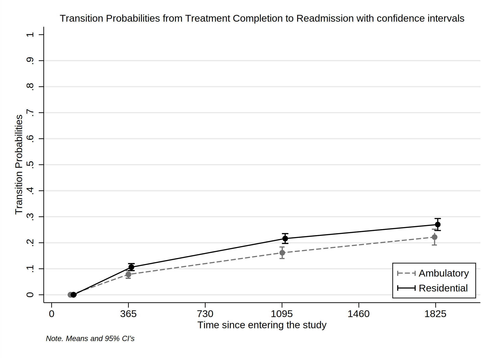

Date created: 12:47:00 22 Oct 2022.
Install commands that are unavailable or out of date.
. *<< dd_do : noout > >
. clear all
. *https://onlinelibrary.wiley.com/doi/epdf/10.1002/sim.8894
. *https://pclambert.net/pdf/Stata_Nordic2019_Lambert.pdf
. *https://slidetodoc.com/automated-reports-using-stata-chuck-huber-ph-d/
. *~Mi unidad\Alvacast\SISTRAT 2019 (github)\_supp_mstates\stata\12874_2020_1192_MOESM1_ESM.docx
. *https://opr.princeton.edu/workshops/Downloads/2015May_StataGraphicsKoffman.pdf
. *http://www.bruunisejs.dk/StataHacks/My%20commands/matprint/matprint_demo/
. *https://pure.au.dk/portal/files/140882936/ScientificWorkInStataGoneEasy.pdf
. *https://www.stata.com/meeting/nordic-and-baltic18/slides/nordic-and-baltic18_Bruun.pdf
. *https://github.com/dvorakt/TIER_exercises/blob/master/dyndoc_debt_growth/debt%20and%20growth%20stata%20dyndoc.do
.
. cap noi which predictms
c:\ado\plus\p\predictms.ado
*! version 4.4.0 22dec2021 MJC
. if _rc==111 {
. cap noi ssc install multistate
. }
. cap noi which merlin
c:\ado\plus\m\merlin.ado
*! version 2.1.5 18mar2022 MJC
. if _rc==111 {
. cap noi ssc install merlin
. }
. cap noi which sumat
c:\ado\plus\s\sumat.ado
*! Part of package matrixtools v. 0.28
*! Support: Niels Henrik Bruun, niels.henrik.bruun@gmail.com
*! 2021-01-03 toxl added
. if _rc==111 {
. cap noi scc install matrixtools
. }
. cap noi which estwrite
c:\ado\plus\e\estwrite.ado
*! version 1.2.4 04sep2009
*! version 1.0.1 15may2007 (renamed from -eststo- to -estwrite-; -append- added)
*! version 1.0.0 29apr2005 Ben Jann (ETH Zurich)
. if _rc==111 {
. cap noi ssc install estwrite
. }
. cap noi which winsor2
c:\ado\plus\w\winsor2.ado
*! Inspirit of -winsor-(NJ Cox) and -winsorizeJ-(J Caskey)
*! Lian Yujun, arlionn@163.com, 2013-12-25
*! 1.1 2014.12.16
. if _rc==111 {
. cap noi ssc install winsor2
. }
.
We need to obtain the file and the work folder.
. mata : st_numscalar("OK", direxists("/volumes/sdrive/data//"))
. if scalar(OK) == 1 {
. cap noi cd "/volumes/sdrive/data//"
. global pathdata "/volumes/sdrive/data//"
. di "Location= ${pathdata}; Date: `c(current_date)', considering an OS `c(os)' for the user: `c(username)'"
. }
. else display "This file does not exist"
This file does not exist
.
. mata : st_numscalar("OK", direxists("E:\Mi unidad\Alvacast\SISTRAT 2019 (github)\_mult_state_ags\"))
. if scalar(OK) == 1 {
. cap noi cd "E:\Mi unidad\Alvacast\SISTRAT 2019 (github)\_mult_state_ags"
E:\Mi unidad\Alvacast\SISTRAT 2019 (github)\_mult_state_ags
. global pathdata "E:\Mi unidad\Alvacast\SISTRAT 2019 (github)\_mult_state_ags"
. global pathdata2 "E:/Mi unidad/Alvacast/SISTRAT 2019 (github)/_mult_state_ags/"
. di "Location= ${pathdata}; Date: `c(current_date)', considering an OS `c(os)' for the user: `c(username)'"
Location= E:\Mi unidad\Alvacast\SISTRAT 2019 (github)\_mult_state_ags; Date: 22 Oct 2022, considering an OS Windows for the user: andre
. }
. else display "This file does not exist"
.
. mata : st_numscalar("OK", direxists("C:\Users\CISS Fondecyt\Mi unidad\Alvacast\SISTRAT 2019 (github)\_mult_state_ags\"))
. if scalar(OK) == 1 {
. cap noi cd "C:\Users\CISS Fondecyt\Mi unidad\Alvacast\SISTRAT 2019 (github)"
. global pathdata "C:\Users\CISS Fondecyt\Mi unidad\Alvacast\SISTRAT 2019 (github)\_mult_state_ags"
. global pathdata2 "C:/Users/CISS Fondecyt/Mi unidad/Alvacast/SISTRAT 2019 (github)/_mult_state_ags/"
. di "Location= ${pathdata}; Date: `c(current_date)', considering an OS `c(os)' for the user: `c(username)'"
. }
. else display "This file does not exist"
This file does not exist
.
. mata : st_numscalar("OK", direxists("C:\Users\andre\Desktop\_mult_state_ags\"))
. if scalar(OK) == 1 {
. cap noi cd "C:\Users\andre\Desktop\_mult_state_ags"
. global pathdata "C:\Users\andre\Desktop\_mult_state_ags"
. global pathdata2 "C:/Users/andre/Desktop/_mult_state_ags/"
. di "Location= ${pathdata}; Date: `c(current_date)', considering an OS `c(os)' for the user: `c(username)'"
. }
. else display "This file does not exist"
This file does not exist
.
. mata : st_numscalar("OK", direxists("C:\Users\CISS Fondecyt\OneDrive\Documentos\"))
. if scalar(OK) == 1 {
. cap noi cd "C:\Users\CISS Fondecyt\Mi unidad\Alvacast\SISTRAT 2019 (github)\_mult_state_ags"
. global pathdata "C:\Users\CISS Fondecyt\Mi unidad\Alvacast\SISTRAT 2019 (github)\_mult_state_ags"
. global pathdata2 "C:/Users/CISS Fondecyt/Mi unidad/Alvacast/SISTRAT 2019 (github)/_mult_state_ags/"
. di "Location= ${pathdata}; Date: `c(current_date)', considering an OS `c(os)' for the user: `c(username)'"
. }
. else display "This file does not exist"
This file does not exist
.
Path data= E:\Mi unidad\Alvacast\SISTRAT 2019 (github)_mult_state_ags;
Timestamp: 22 Oct 2022, considering that is a Windows OS for the username: andre
First we open the files and drop the variables that would mistakenly amplify the sample, and define labels.
The file is located and named as: E:/Mi unidad/Alvacast/SISTRAT 2019 (github)/_mult_state_ags/nine_st_msprep_oct22.dta
. //2022-10-09
. *a) open
. //use "${pathdata2}five_st_msprep_apr22.dta", clear
. use "${pathdata2}nine_st_msprep_oct22_cc.dta", clear
. *label
. cap noi label variable id "Patient ID"
. cap noi label variable group_match "Matching group at baseline"
. cap noi label variable tipo_de_plan_res_1 "Baseline Setting (Residential)"
. cap noi label variable TD_status "Baseline treatment completion (TC)"
. cap noi label variable DWCA_status "Baseline treatment non-completion (TNC)"
. cap noi label variable Readmission_status "Readmission (TC)"
. cap noi label variable Readmissionb_status "Readmission (TNC)"
. cap noi label variable Readmission2_status "Readmission (2nd treatment) (TC)"
. cap noi label variable Readmission2b_status "Readmission (2nd treatment) (TNC)"
. cap noi label variable Readmission3_status "Readmission (3rd treatment) (TC)"
. cap noi label variable Readmission3b_status "Readmission (3rd treatment) (TNC)"
. cap noi label variable TD_time "Time to Baseline treatment completion (TC)"
. cap noi label variable DWCA_time "Time to Baseline treatment non-completion (TNC)"
. cap noi label variable Readmission_time "Time to Readmission (TC)"
. cap noi label variable Readmissionb_time "Time to Readmission (TNC)"
. cap noi label variable Readmission2_time "Time to Readmission (2nd treatment) (TC)"
. cap noi label variable Readmission2b_time "Time to Readmission (2nd treatment) (TNC)"
. cap noi label variable Readmission3_time "Time to Readmission (3rd treatment) (TC)"
. cap noi label variable Readmission3b_time "Time to Readmission (3rd treatment) (TNC)"
. cap noi label variable cens_time "Censorship from administrative ecnsorship (2019-11-13) - first admission"
.
. /*
> //2022-09-28 drop treatments without completion or not completion
> *drop if DWCA_1 ==0 & TD_1 ==0
> cap noi rename TD_1 TD_status
> cap noi rename DWCA_1 DWCA_status
> //2022-09-28 generate time-to completion/noncompletion
> gen TD_time = dias_treat_imp_sin_na_1
> replace TD_time=cens_time if TD_status==0
> gen DWCA_time = dias_treat_imp_sin_na_1
> replace DWCA_time=cens_time if DWCA_status==0
>
> //2022-09-28
> gen Readmissionb_time = Readmission_time
> gen Readmission2b_time = Readmission2_time
> gen Readmission3b_time = Readmission3_time
> gen Readmission4b_time = Readmission4_time
> gen Readmissionb_status = Readmission_status
> gen Readmission2b_status = Readmission2_status
> gen Readmission3b_status = Readmission3_status
> gen Readmission4b_status = Readmission4_status
>
> *DWCA
> replace Readmissionb_status = 0 if TD_status==1
> replace Readmission2b_status = 0 if TD_status==1
> replace Readmission3b_status = 0 if TD_status==1
> replace Readmission4b_status = 0 if TD_status==1
>
> *TD
> replace Readmission_status = 0 if DWCA_status==1
> replace Readmission2_status = 0 if DWCA_status==1
> replace Readmission3_status = 0 if DWCA_status==1
> replace Readmission4_status = 0 if DWCA_status==1
>
> *if readmission occurred, we substract the time in each treatment trajectory
> replace Readmission_time=Readmission_time-TD_time if Readmission_status==1 & TD_status==1
> replace Readmissionb_time=Readmissionb_time-DWCA_time if Readmission_statusb==1 & DWCA_status==1
>
> *if it is censored because readmission did not happen
> replace Readmission_time=cens_time if Readmission_status==0
> replace Readmissionb_time=cens_time if Readmissionb_status==0
>
> order id tipo_de_plan_res_1 cens_time TD_status TD_time DWCA_status DWCA_time Readmission_status Readmission_time Readmissionb_status Readmissionb_time Readmission2_status Readmission2_time Readmission2b_sta
> tus Readmission2b_time Readmission3_status Readmission3_time Readmission3b_status Readmission3b_time
>
> *do it again just in case
> replace Readmission_time=cens_time if Readmission_status==0
> replace Readmissionb_time=cens_time if Readmissionb_status==0
> replace Readmission2_time=cens_time if Readmission2_status==0
> replace Readmission2b_time=cens_time if Readmission2b_status==0
> replace Readmission3_time=cens_time if Readmission3_status==0
> replace Readmission3b_time=cens_time if Readmission3b_status==0
> replace Readmission4_time=cens_time if Readmission4_status==0
> replace Readmission4b_time=cens_time if Readmission4b_status==0
> */
.
. order id tipo_de_plan_res_1 cens_time TD_status TD_time DWCA_status DWCA_time Readmission_status Readmission_time Readmissionb_status Readmissionb_time Readmission2_status Readmission2_time Readmission2b_sta
> tus Readmission2b_time Readmission3_status Readmission3_time Readmission3b_status Readmission3b_time
.
. *I'm not sure if this is the problem. It seems that is not
. *drop if DWCA_status==0 & TD_status==0
Then we define the transition matrix:
. matrix mat_nine_states = ( ///
> .,1,2,.,.,.,.,.,. \ ///
> .,.,.,3,.,.,.,.,. \ ///
> .,.,.,.,4,.,.,.,. \ ///
> .,.,.,.,.,5,.,.,. \ ///
> .,.,.,.,.,.,6,.,. \ ///
> .,.,.,.,.,.,.,7,. \ ///
> .,.,.,.,.,.,.,.,8 \ ///
> .,.,.,.,.,.,.,.,. \ ///
> .,.,.,.,.,.,.,.,. ///
> )
. *a = completion
. *b = non-completion <<
.
. matrix colnames mat_nine_states = start TD_status DWCA_status Readmission_status Readmissionb_status Readmission2_status Readmission2b_status Readmission3_status Readmission3b_status
. matrix rownames mat_nine_states = start TD_status DWCA_status Readmission_status Readmissionb_status Readmission2_status Readmission2b_status Readmission3_status Readmission3b_status
. matrix coleq mat_nine_states = to to to to to to to to to
. matrix roweq mat_nine_states = from from from from from from from from from
.
| to | > | |||||||||
|---|---|---|---|---|---|---|---|---|---|---|
| start | TD_status | DWCA_status | Readmission_status | Readmissionb_status | Readmission2_status | Readmission2b > _status | Readmission3_status | Readmission3b_status | ||
| from | start | 1 | 2 | > | ||||||
| TD_status | 3 | > | ||||||||
| DWCA_status | 4 | > | ||||||||
| Readmission_status | 5 | > | ||||||||
| Readmissionb_status | > 6 | |||||||||
| Readmission2_status | > | 7 | ||||||||
| Readmission2b_status | > | 8 | ||||||||
| Readmission3_status | > | |||||||||
| Readmission3b_status | > |
and transform the database in a long format according to the specifications and the transition matrix.
Finally, the database adopt the following structure:
Set the database as a renewal time.
. *stset _stop, enter(_start) failure(_status=1) //* scale(365.25) id(id)
.
. *file:///G:/Mi%20unidad/Alvacast/SISTRAT%202019%20(github)/_supp_mstates/stata/crowther2017%20(1).pdf
. stset _time, failure(_status==1)
failure event: _status == 1
obs. time interval: (0, _time]
exit on or before: failure
------------------------------------------------------------------------------
49,062 total observations
0 exclusions
------------------------------------------------------------------------------
49,062 observations remaining, representing
18,534 failures in single-record/single-failure data
33940751 total analysis time at risk and under observation
at risk from t = 0
earliest observed entry t = 0
last observed exit t = 4,145
.
.
. forvalues i = 1/8 {
2. stphplot if _trans==`i', by(tipo_de_plan_res_1) ///
> scheme(sj) graphregion(color(white)) ///
> legend(pos(1) ring(0) col(1) symysize(zero) keygap(1) symxsize(large) order( 1 2) lab(1 "Ambulatory") lab(2 "Residential") size(small)) ///
> note("{it:Note. Means and 95% CI's}",size(vsmall)) ///
> title("Loglog Surv vs. logtime by Tr. Setting (Trans.=`i')", size(small)) name(stphplot_res_`i', replace) ///
> saving(stphplot_res_`i'_22_corr3_cc.gph, replace)
3. }
failure _d: _status == 1
analysis time _t: _time
(file stphplot_res_1_22_corr3_cc.gph saved)
failure _d: _status == 1
analysis time _t: _time
(file stphplot_res_2_22_corr3_cc.gph saved)
failure _d: _status == 1
analysis time _t: _time
(file stphplot_res_3_22_corr3_cc.gph saved)
failure _d: _status == 1
analysis time _t: _time
(file stphplot_res_4_22_corr3_cc.gph saved)
failure _d: _status == 1
analysis time _t: _time
(file stphplot_res_5_22_corr3_cc.gph saved)
failure _d: _status == 1
analysis time _t: _time
(file stphplot_res_6_22_corr3_cc.gph saved)
failure _d: _status == 1
analysis time _t: _time
(file stphplot_res_7_22_corr3_cc.gph saved)
failure _d: _status == 1
analysis time _t: _time
(file stphplot_res_8_22_corr3_cc.gph saved)
.
. graph combine "${pathdata}\stphplot_res_1_22_corr3_cc.gph" "${pathdata}\stphplot_res_2_22_corr3_cc.gph" "${pathdata}\stphplot_res_3_22_corr3_cc.gph" "${pathdata}\stphplot_res_4_22_corr3_cc.gph" ///
> "${pathdata}\stphplot_res_5_22_corr3_cc.gph" "${pathdata}\stphplot_res_6_22_corr3_cc.gph" "${pathdata}\stphplot_res_7_22_corr3_cc.gph" "${pathdata}\stphplot_res_8_22_corr3_cc.gph", ///
> colfirst ycommon xcommon iscale(*.7) imargin(tiny) graphregion(color(gs16)) ///
> title("Combination of −ln{−ln(survival)} vs. ln(analysis time)" "Renewal time", size(medium)) cols(4) /// *subtitle("{it:}", size(small)) ///
> note("{it: Note: Ordered by columns, from up to down, left to right}", size(tiny)) ///
> name(tr_ph_ln_srv_t_res_s_corr3_cc, replace)
.
. local num 1 2 3 4 5 6 8
. foreach i of local num {
2. gr_edit .plotregion1.graph`i'.legend.draw_view.setstyle, style(no)
3. }
=============================================================================
=============================================================================
Generated an Aalen-Johanssen estimator to obtain the transition probabilities of the data from the time 0 (from admission). For this, we separated the transition probabilities according to the setting at baseline.
. *http://fmwww.bc.edu/repec/bocode/m/msaj.ado
. msaj, transmatrix(mat_nine_states) by(tipo_de_plan_res_1) ci
. rename (P_AJ_*) (ajprob*)
To generate figures, we select the valid transitions


Calculate transition probabilities from a determined states in times 90, 365 (1 year), 1096 (3 years) & 1826 (5 years).
variable trp_ajprob* not found
variable _t2 not found
(25,021 real changes made)
(file msaj_12_jun_22_corr3_cc.gph saved)
(file msaj_13_jun_22_corr3_cc.gph saved)
(file msaj_24_jun_22_corr3_cc.gph saved)

(file msaj_35_jun_22_corr3_cc.gph saved)
(file msaj_46_jun_22_corr3_cc.gph saved)

(file msaj_57_jun_22_corr3_cc.gph saved)

(file msaj_68_jun_22_corr3_cc.gph saved)

(file msaj_79_jun_22_corr3_cc.gph saved)

Transition Probabilities from Admission to Treatment completion with confidence intervals
. foreach var of varlist trp_ajprob_30_1826_12 trp_ajprob_30_1826_12_lci trp_ajprob_30_1826_12_uci {
2. scalar variable = "`var'"
3. qui summarize `var' if inrange(_t, 90, 91) & tipo_de_plan_res_1==0
4. scalar e3m_`var' = round(round(r(mean),.001)*100,.1)
5. qui summarize `var' if inrange(_t, 365, 366) & tipo_de_plan_res_1==0
6. scalar e1y_`var' = round(round(r(mean),.001)*100,.1)
7. qui summarize `var' if inrange(_t, 1096, 1096) & tipo_de_plan_res_1==0
8. scalar e3y_`var' = round(round(r(mean),.001)*100,.1)
9. qui summarize `var' if inrange(_t, 1812, 1827) & tipo_de_plan_res_1==0
10. scalar e5y_`var' = round(round(r(mean),.001)*100,.1)
11. cap noi matrix e_a_`var' = (`=scalar(e3m_`var')'\ `=scalar(e1y_`var')'\ `=scalar(scalar(e3y_`var'))'\ `=scalar(scalar(e5y_`var'))')
12. matrix colnames e_a_`var' = `var'
13. matrix rownames e_a_`var' = 3_mths 1_yr 3_yrs 5_yrs
14. qui summarize `var' if inrange(_t, 90, 91) & tipo_de_plan_res_1==1
15. scalar e3m_`var' = round(round(r(mean),.001)*100,.1)
16. qui summarize `var' if inrange(_t, 365, 366) & tipo_de_plan_res_1==1
17. scalar e1y_`var' = round(round(r(mean),.001)*100,.1)
18. qui summarize `var' if inrange(_t, 1096, 1096) & tipo_de_plan_res_1==1
19. scalar e3y_`var' = round(round(r(mean),.001)*100,.1)
20. qui summarize `var' if inrange(_t, 1812, 1827) & tipo_de_plan_res_1==1
21. scalar e5y_`var' = round(round(r(mean),.001)*100,.1)
22. cap noi matrix e_b_`var' = (`=scalar(e3m_`var')'\ `=scalar(e1y_`var')'\ `=scalar(scalar(e3y_`var'))'\ `=scalar(scalar(e5y_`var'))')
23. matrix colnames e_b_`var' = `var'
24. matrix rownames e_b_`var' = 3_mths 1_yr 3_yrs 5_yrs
25. }
.
. matrix est_msaj12 = (e_a_trp_ajprob_30_1826_12, e_a_trp_ajprob_30_1826_12_lci, e_a_trp_ajprob_30_1826_12_uci, e_b_trp_ajprob_30_1826_12, e_b_trp_ajprob_30_1826_12_lci, e_b_trp_ajprob_30_1826_12_uci)
. matrix colnames est_msaj12 = Est_Amb LCI UCI Est_Res LCI UCI
.
. esttab matrix(est_msaj12) using "${pathdata2}pr_msaj12_corr3_cc.html", replace
(output written to E:/Mi unidad/Alvacast/SISTRAT 2019 (github)/_mult_state_ags/pr_msaj12_corr3_cc.html)
The transition probabilities are presented here:
| est_msaj12 | ||||||
| Est_Amb | LCI | UCI | Est_Res | LCI | UCI | |
| 3_mths | 0 | 0 | 0 | 0 | 0 | .1 |
| 1_yr | 12.9 | 12.1 | 13.8 | 23.1 | 22 | 24.2 |
| 3_yrs | 22.8 | 21.7 | 24 | 32.1 | 30.8 | 33.4 |
| 5_yrs | 20.6 | 19.4 | 21.9 | 28.6 | 27.2 | 29.9 |
Transition Probabilities from Admission to Treatment Non-completion
. foreach var of varlist trp_ajprob_30_1826_13 trp_ajprob_30_1826_13_lci trp_ajprob_30_1826_13_uci {
2. scalar variable = "`var'"
3. qui summarize `var' if inrange(_t, 90, 91) & tipo_de_plan_res_1==0
4. scalar e3m_`var' = round(round(r(mean),.001)*100,.1)
5. qui summarize `var' if inrange(_t, 365, 366) & tipo_de_plan_res_1==0
6. scalar e1y_`var' = round(round(r(mean),.001)*100,.1)
7. qui summarize `var' if inrange(_t, 1096, 1096) & tipo_de_plan_res_1==0
8. scalar e3y_`var' = round(round(r(mean),.001)*100,.1)
9. qui summarize `var' if inrange(_t, 1812, 1827) & tipo_de_plan_res_1==0
10. scalar e5y_`var' = round(round(r(mean),.001)*100,.1)
11. cap noi matrix e_a_`var' = (`=scalar(e3m_`var')'\ `=scalar(e1y_`var')'\ `=scalar(scalar(e3y_`var'))'\ `=scalar(scalar(e5y_`var'))')
12. matrix colnames e_a_`var' = `var'
13. matrix rownames e_a_`var' = 3_mths 1_yr 3_yrs 5_yrs
14. qui summarize `var' if inrange(_t, 90, 91) & tipo_de_plan_res_1==1
15. scalar e3m_`var' = round(round(r(mean),.001)*100,.1)
16. qui summarize `var' if inrange(_t, 365, 366) & tipo_de_plan_res_1==1
17. scalar e1y_`var' = round(round(r(mean),.001)*100,.1)
18. qui summarize `var' if inrange(_t, 1096, 1096) & tipo_de_plan_res_1==1
19. scalar e3y_`var' = round(round(r(mean),.001)*100,.1)
20. qui summarize `var' if inrange(_t, 1812, 1827) & tipo_de_plan_res_1==1
21. scalar e5y_`var' = round(round(r(mean),.001)*100,.1)
22. cap noi matrix e_b_`var' = (`=scalar(e3m_`var')'\ `=scalar(e1y_`var')'\ `=scalar(scalar(e3y_`var'))'\ `=scalar(scalar(e5y_`var'))')
23. matrix colnames e_b_`var' = `var'
24. matrix rownames e_b_`var' = 3_mths 1_yr 3_yrs 5_yrs
25. }
.
. matrix est_msaj13 = (e_a_trp_ajprob_30_1826_13, e_a_trp_ajprob_30_1826_13_lci, e_a_trp_ajprob_30_1826_13_uci, e_b_trp_ajprob_30_1826_13, e_b_trp_ajprob_30_1826_13_lci, e_b_trp_ajprob_30_1826_13_uci)
. matrix colnames est_msaj13 = Est_Amb LCI UCI Est_Res LCI UCI
.
. esttab matrix(est_msaj13) using "${pathdata2}pr_msaj13_corr3_cc.html", replace
(output written to E:/Mi unidad/Alvacast/SISTRAT 2019 (github)/_mult_state_ags/pr_msaj13_corr3_cc.html)
The transition probabilities are presented here:
| est_msaj13 | ||||||
| Est_Amb | LCI | UCI | Est_Res | LCI | UCI | |
| 3_mths | .2 | .1 | .3 | .2 | .1 | .2 |
| 1_yr | 46.3 | 45 | 47.5 | 30.9 | 29.7 | 32.1 |
| 3_yrs | 46.8 | 45.6 | 48.1 | 30.2 | 29.1 | 31.4 |
| 5_yrs | 43 | 41.8 | 44.3 | 27.6 | 26.5 | 28.7 |
Transition Probabilities from Treatment Completion to Readmission
. foreach var of varlist trp_ajprob_30_1826_24 trp_ajprob_30_1826_24_lci trp_ajprob_30_1826_24_uci {
2. scalar variable = "`var'"
3. qui summarize `var' if inrange(_t, 90, 91) & tipo_de_plan_res_1==0
4. scalar e3m_`var' = round(round(r(mean),.001)*100,.1)
5. qui summarize `var' if inrange(_t, 365, 366) & tipo_de_plan_res_1==0
6. scalar e1y_`var' = round(round(r(mean),.001)*100,.1)
7. qui summarize `var' if inrange(_t, 1096, 1096) & tipo_de_plan_res_1==0
8. scalar e3y_`var' = round(round(r(mean),.001)*100,.1)
9. qui summarize `var' if inrange(_t, 1812, 1827) & tipo_de_plan_res_1==0
10. scalar e5y_`var' = round(round(r(mean),.001)*100,.1)
11. cap noi matrix e_a_`var' = (`=scalar(e3m_`var')'\ `=scalar(e1y_`var')'\ `=scalar(scalar(e3y_`var'))'\ `=scalar(scalar(e5y_`var'))')
12. matrix colnames e_a_`var' = `var'
13. matrix rownames e_a_`var' = 3_mths 1_yr 3_yrs 5_yrs
14. qui summarize `var' if inrange(_t, 90, 91) & tipo_de_plan_res_1==1
15. scalar e3m_`var' = round(round(r(mean),.001)*100,.1)
16. qui summarize `var' if inrange(_t, 365, 366) & tipo_de_plan_res_1==1
17. scalar e1y_`var' = round(round(r(mean),.001)*100,.1)
18. qui summarize `var' if inrange(_t, 1096, 1096) & tipo_de_plan_res_1==1
19. scalar e3y_`var' = round(round(r(mean),.001)*100,.1)
20. qui summarize `var' if inrange(_t, 1812, 1827) & tipo_de_plan_res_1==1
21. scalar e5y_`var' = round(round(r(mean),.001)*100,.1)
22. cap noi matrix e_b_`var' = (`=scalar(e3m_`var')'\ `=scalar(e1y_`var')'\ `=scalar(scalar(e3y_`var'))'\ `=scalar(scalar(e5y_`var'))')
23. matrix colnames e_b_`var' = `var'
24. matrix rownames e_b_`var' = 3_mths 1_yr 3_yrs 5_yrs
25. }
.
. matrix est_msaj24 = (e_a_trp_ajprob_30_1826_24, e_a_trp_ajprob_30_1826_24_lci, e_a_trp_ajprob_30_1826_24_uci, e_b_trp_ajprob_30_1826_24, e_b_trp_ajprob_30_1826_24_lci, e_b_trp_ajprob_30_1826_24_uci)
. matrix colnames est_msaj24 = Est_Amb LCI UCI Est_Res LCI UCI
.
. esttab matrix(est_msaj24) using "${pathdata2}pr_msaj24_corr3_cc.html", replace
(output written to E:/Mi unidad/Alvacast/SISTRAT 2019 (github)/_mult_state_ags/pr_msaj24_corr3_cc.html)
The transition probabilities are presented here:
| est_msaj24 | ||||||
| Est_Amb | LCI | UCI | Est_Res | LCI | UCI | |
| 3_mths | 0 | 0 | 0 | 0 | 0 | .1 |
| 1_yr | 7.8 | 6.4 | 9.3 | 10.6 | 9.3 | 12 |
| 3_yrs | 16.2 | 13.9 | 18.4 | 21.6 | 19.7 | 23.5 |
| 5_yrs | 22.2 | 19.1 | 25.2 | 26.9 | 24.6 | 29.2 |
Transition Probabilities from Treatment Non-completion to Readmission
. foreach var of varlist trp_ajprob_30_1826_35 trp_ajprob_30_1826_35_lci trp_ajprob_30_1826_35_uci {
2. scalar variable = "`var'"
3. qui summarize `var' if inrange(_t, 90, 91) & tipo_de_plan_res_1==0
4. scalar e3m_`var' = round(round(r(mean),.001)*100,.1)
5. qui summarize `var' if inrange(_t, 365, 366) & tipo_de_plan_res_1==0
6. scalar e1y_`var' = round(round(r(mean),.001)*100,.1)
7. qui summarize `var' if inrange(_t, 1096, 1096) & tipo_de_plan_res_1==0
8. scalar e3y_`var' = round(round(r(mean),.001)*100,.1)
9. qui summarize `var' if inrange(_t, 1812, 1827) & tipo_de_plan_res_1==0
10. scalar e5y_`var' = round(round(r(mean),.001)*100,.1)
11. cap noi matrix e_a_`var' = (`=scalar(e3m_`var')'\ `=scalar(e1y_`var')'\ `=scalar(scalar(e3y_`var'))'\ `=scalar(scalar(e5y_`var'))')
12. matrix colnames e_a_`var' = `var'
13. matrix rownames e_a_`var' = 3_mths 1_yr 3_yrs 5_yrs
14. qui summarize `var' if inrange(_t, 90, 91) & tipo_de_plan_res_1==1
15. scalar e3m_`var' = round(round(r(mean),.001)*100,.1)
16. qui summarize `var' if inrange(_t, 365, 366) & tipo_de_plan_res_1==1
17. scalar e1y_`var' = round(round(r(mean),.001)*100,.1)
18. qui summarize `var' if inrange(_t, 1096, 1096) & tipo_de_plan_res_1==1
19. scalar e3y_`var' = round(round(r(mean),.001)*100,.1)
20. qui summarize `var' if inrange(_t, 1812, 1827) & tipo_de_plan_res_1==1
21. scalar e5y_`var' = round(round(r(mean),.001)*100,.1)
22. cap noi matrix e_b_`var' = (`=scalar(e3m_`var')'\ `=scalar(e1y_`var')'\ `=scalar(scalar(e3y_`var'))'\ `=scalar(scalar(e5y_`var'))')
23. matrix colnames e_b_`var' = `var'
24. matrix rownames e_b_`var' = 3_mths 1_yr 3_yrs 5_yrs
25. }
.
. matrix est_msaj35 = (e_a_trp_ajprob_30_1826_35, e_a_trp_ajprob_30_1826_35_lci, e_a_trp_ajprob_30_1826_35_uci, e_b_trp_ajprob_30_1826_35, e_b_trp_ajprob_30_1826_35_lci, e_b_trp_ajprob_30_1826_35_uci)
. matrix colnames est_msaj35 = Est_Amb LCI UCI Est_Res LCI UCI
.
. esttab matrix(est_msaj35) using "${pathdata2}pr_msaj35_corr3_cc.html", replace
(output written to E:/Mi unidad/Alvacast/SISTRAT 2019 (github)/_mult_state_ags/pr_msaj35_corr3_cc.html)
The transition probabilities are presented here:
| est_msaj35 | ||||||
| Est_Amb | LCI | UCI | Est_Res | LCI | UCI | |
| 3_mths | .1 | 0 | .1 | 0 | 0 | .1 |
| 1_yr | 9.4 | 8.6 | 10.3 | 13.3 | 12.2 | 14.5 |
| 3_yrs | 17.6 | 16.5 | 18.8 | 23.1 | 21.7 | 24.5 |
| 5_yrs | 22.2 | 20.7 | 23.6 | 26.7 | 25 | 28.3 |
Transition Probabilities from Readmission to Second Readmission (TC)
. foreach var of varlist trp_ajprob_30_1826_46 trp_ajprob_30_1826_46_lci trp_ajprob_30_1826_46_uci {
2. scalar variable = "`var'"
3. qui summarize `var' if inrange(_t, 90, 91) & tipo_de_plan_res_1==0
4. scalar e3m_`var' = round(round(r(mean),.001)*100,.1)
5. qui summarize `var' if inrange(_t, 365, 366) & tipo_de_plan_res_1==0
6. scalar e1y_`var' = round(round(r(mean),.001)*100,.1)
7. qui summarize `var' if inrange(_t, 1096, 1096) & tipo_de_plan_res_1==0
8. scalar e3y_`var' = round(round(r(mean),.001)*100,.1)
9. qui summarize `var' if inrange(_t, 1812, 1827) & tipo_de_plan_res_1==0
10. scalar e5y_`var' = round(round(r(mean),.001)*100,.1)
11. cap noi matrix e_a_`var' = (`=scalar(e3m_`var')'\ `=scalar(e1y_`var')'\ `=scalar(scalar(e3y_`var'))'\ `=scalar(scalar(e5y_`var'))')
12. matrix colnames e_a_`var' = `var'
13. matrix rownames e_a_`var' = 3_mths 1_yr 3_yrs 5_yrs
14. qui summarize `var' if inrange(_t, 90, 91) & tipo_de_plan_res_1==1
15. scalar e3m_`var' = round(round(r(mean),.001)*100,.1)
16. qui summarize `var' if inrange(_t, 365, 366) & tipo_de_plan_res_1==1
17. scalar e1y_`var' = round(round(r(mean),.001)*100,.1)
18. qui summarize `var' if inrange(_t, 1096, 1096) & tipo_de_plan_res_1==1
19. scalar e3y_`var' = round(round(r(mean),.001)*100,.1)
20. qui summarize `var' if inrange(_t, 1812, 1827) & tipo_de_plan_res_1==1
21. scalar e5y_`var' = round(round(r(mean),.001)*100,.1)
22. cap noi matrix e_b_`var' = (`=scalar(e3m_`var')'\ `=scalar(e1y_`var')'\ `=scalar(scalar(e3y_`var'))'\ `=scalar(scalar(e5y_`var'))')
23. matrix colnames e_b_`var' = `var'
24. matrix rownames e_b_`var' = 3_mths 1_yr 3_yrs 5_yrs
25. }
.
. matrix est_msaj46 = (e_a_trp_ajprob_30_1826_46, e_a_trp_ajprob_30_1826_46_lci, e_a_trp_ajprob_30_1826_46_uci, e_b_trp_ajprob_30_1826_46, e_b_trp_ajprob_30_1826_46_lci, e_b_trp_ajprob_30_1826_46_uci)
. matrix colnames est_msaj46 = Est_Amb LCI UCI Est_Res LCI UCI
.
. esttab matrix(est_msaj46) using "${pathdata2}pr_msaj46_corr3_cc.html", replace
(output written to E:/Mi unidad/Alvacast/SISTRAT 2019 (github)/_mult_state_ags/pr_msaj46_corr3_cc.html)
The transition probabilities are presented here:
| est_msaj46 | ||||||
| Est_Amb | LCI | UCI | Est_Res | LCI | UCI | |
| 3_mths | 0 | 0 | 0 | 0 | 0 | 0 |
| 1_yr | 7.6 | 4.6 | 10.6 | 10.5 | 8.4 | 12.7 |
| 3_yrs | 22.7 | 17.2 | 28.3 | 23.9 | 20.5 | 27.4 |
| 5_yrs | 27.6 | 20.9 | 34.3 | 29.5 | 25.3 | 33.7 |
Transition Probabilities from Readmission to Second Readmission (TNC)
. foreach var of varlist trp_ajprob_30_1826_57 trp_ajprob_30_1826_57_lci trp_ajprob_30_1826_57_uci {
2. scalar variable = "`var'"
3. qui summarize `var' if inrange(_t, 90, 91) & tipo_de_plan_res_1==0
4. scalar e3m_`var' = round(round(r(mean),.001)*100,.1)
5. qui summarize `var' if inrange(_t, 365, 366) & tipo_de_plan_res_1==0
6. scalar e1y_`var' = round(round(r(mean),.001)*100,.1)
7. qui summarize `var' if inrange(_t, 1096, 1096) & tipo_de_plan_res_1==0
8. scalar e3y_`var' = round(round(r(mean),.001)*100,.1)
9. qui summarize `var' if inrange(_t, 1812, 1827) & tipo_de_plan_res_1==0
10. scalar e5y_`var' = round(round(r(mean),.001)*100,.1)
11. cap noi matrix e_a_`var' = (`=scalar(e3m_`var')'\ `=scalar(e1y_`var')'\ `=scalar(scalar(e3y_`var'))'\ `=scalar(scalar(e5y_`var'))')
12. matrix colnames e_a_`var' = `var'
13. matrix rownames e_a_`var' = 3_mths 1_yr 3_yrs 5_yrs
14. qui summarize `var' if inrange(_t, 90, 91) & tipo_de_plan_res_1==1
15. scalar e3m_`var' = round(round(r(mean),.001)*100,.1)
16. qui summarize `var' if inrange(_t, 365, 366) & tipo_de_plan_res_1==1
17. scalar e1y_`var' = round(round(r(mean),.001)*100,.1)
18. qui summarize `var' if inrange(_t, 1096, 1096) & tipo_de_plan_res_1==1
19. scalar e3y_`var' = round(round(r(mean),.001)*100,.1)
20. qui summarize `var' if inrange(_t, 1812, 1827) & tipo_de_plan_res_1==1
21. scalar e5y_`var' = round(round(r(mean),.001)*100,.1)
22. cap noi matrix e_b_`var' = (`=scalar(e3m_`var')'\ `=scalar(e1y_`var')'\ `=scalar(scalar(e3y_`var'))'\ `=scalar(scalar(e5y_`var'))')
23. matrix colnames e_b_`var' = `var'
24. matrix rownames e_b_`var' = 3_mths 1_yr 3_yrs 5_yrs
25. }
.
. matrix est_msaj57 = (e_a_trp_ajprob_30_1826_57, e_a_trp_ajprob_30_1826_57_lci, e_a_trp_ajprob_30_1826_57_uci, e_b_trp_ajprob_30_1826_57, e_b_trp_ajprob_30_1826_57_lci, e_b_trp_ajprob_30_1826_57_uci)
. matrix colnames est_msaj57 = Est_Amb LCI UCI Est_Res LCI UCI
.
. esttab matrix(est_msaj57) using "${pathdata2}pr_msaj57_corr3_cc.html", replace
(output written to E:/Mi unidad/Alvacast/SISTRAT 2019 (github)/_mult_state_ags/pr_msaj57_corr3_cc.html)
The transition probabilities are presented here:
| est_msaj57 | ||||||
| Est_Amb | LCI | UCI | Est_Res | LCI | UCI | |
| 3_mths | 0 | 0 | .1 | 0 | 0 | .1 |
| 1_yr | 12.7 | 10.9 | 14.5 | 10.9 | 9.4 | 12.4 |
| 3_yrs | 25.1 | 22.5 | 27.6 | 24.9 | 22.6 | 27.2 |
| 5_yrs | 26.4 | 23.1 | 29.6 | 27.1 | 24.2 | 30.1 |
Transition Probabilities from Second to Third Readmission (TC)
. foreach var of varlist trp_ajprob_30_1826_68 trp_ajprob_30_1826_68_lci trp_ajprob_30_1826_68_uci {
2. scalar variable = "`var'"
3. qui summarize `var' if inrange(_t, 90, 91) & tipo_de_plan_res_1==0
4. scalar e3m_`var' = round(round(r(mean),.001)*100,.1)
5. qui summarize `var' if inrange(_t, 365, 366) & tipo_de_plan_res_1==0
6. scalar e1y_`var' = round(round(r(mean),.001)*100,.1)
7. qui summarize `var' if inrange(_t, 1096, 1096) & tipo_de_plan_res_1==0
8. scalar e3y_`var' = round(round(r(mean),.001)*100,.1)
9. qui summarize `var' if inrange(_t, 1812, 1827) & tipo_de_plan_res_1==0
10. scalar e5y_`var' = round(round(r(mean),.001)*100,.1)
11. cap noi matrix e_a_`var' = (`=scalar(e3m_`var')'\ `=scalar(e1y_`var')'\ `=scalar(scalar(e3y_`var'))'\ `=scalar(scalar(e5y_`var'))')
12. matrix colnames e_a_`var' = `var'
13. matrix rownames e_a_`var' = 3_mths 1_yr 3_yrs 5_yrs
14. qui summarize `var' if inrange(_t, 90, 91) & tipo_de_plan_res_1==1
15. scalar e3m_`var' = round(round(r(mean),.001)*100,.1)
16. qui summarize `var' if inrange(_t, 365, 366) & tipo_de_plan_res_1==1
17. scalar e1y_`var' = round(round(r(mean),.001)*100,.1)
18. qui summarize `var' if inrange(_t, 1096, 1096) & tipo_de_plan_res_1==1
19. scalar e3y_`var' = round(round(r(mean),.001)*100,.1)
20. qui summarize `var' if inrange(_t, 1812, 1827) & tipo_de_plan_res_1==1
21. scalar e5y_`var' = round(round(r(mean),.001)*100,.1)
22. cap noi matrix e_b_`var' = (`=scalar(e3m_`var')'\ `=scalar(e1y_`var')'\ `=scalar(scalar(e3y_`var'))'\ `=scalar(scalar(e5y_`var'))')
23. matrix colnames e_b_`var' = `var'
24. matrix rownames e_b_`var' = 3_mths 1_yr 3_yrs 5_yrs
25. }
.
. matrix est_msaj68 = (e_a_trp_ajprob_30_1826_68, e_a_trp_ajprob_30_1826_68_lci, e_a_trp_ajprob_30_1826_68_uci, e_b_trp_ajprob_30_1826_68, e_b_trp_ajprob_30_1826_68_lci, e_b_trp_ajprob_30_1826_68_uci)
. matrix colnames est_msaj68 = Est_Amb LCI UCI Est_Res LCI UCI
.
. esttab matrix(est_msaj68) using "${pathdata2}pr_msaj68_corr3_cc.html", replace
(output written to E:/Mi unidad/Alvacast/SISTRAT 2019 (github)/_mult_state_ags/pr_msaj68_corr3_cc.html)
The transition probabilities are presented here:
| est_msaj68 | ||||||
| Est_Amb | LCI | UCI | Est_Res | LCI | UCI | |
| 3_mths | 0 | 0 | 0 | 0 | 0 | 0 |
| 1_yr | 16.2 | 7.7 | 24.6 | 9.8 | 5.9 | 13.7 |
| 3_yrs | 37 | 24.9 | 49.1 | 32 | 24.8 | 39.1 |
| 5_yrs | 41.4 | 28.7 | 54 | 38.4 | 30.4 | 46.3 |
Transition Probabilities from Second to Third Readmission (TNC)
. foreach var of varlist trp_ajprob_30_1826_79 trp_ajprob_30_1826_79_lci trp_ajprob_30_1826_79_uci {
2. scalar variable = "`var'"
3. qui summarize `var' if inrange(_t, 90, 91) & tipo_de_plan_res_1==0
4. scalar e3m_`var' = round(round(r(mean),.001)*100,.1)
5. qui summarize `var' if inrange(_t, 365, 366) & tipo_de_plan_res_1==0
6. scalar e1y_`var' = round(round(r(mean),.001)*100,.1)
7. qui summarize `var' if inrange(_t, 1096, 1096) & tipo_de_plan_res_1==0
8. scalar e3y_`var' = round(round(r(mean),.001)*100,.1)
9. qui summarize `var' if inrange(_t, 1812, 1827) & tipo_de_plan_res_1==0
10. scalar e5y_`var' = round(round(r(mean),.001)*100,.1)
11. cap noi matrix e_a_`var' = (`=scalar(e3m_`var')'\ `=scalar(e1y_`var')'\ `=scalar(scalar(e3y_`var'))'\ `=scalar(scalar(e5y_`var'))')
12. matrix colnames e_a_`var' = `var'
13. matrix rownames e_a_`var' = 3_mths 1_yr 3_yrs 5_yrs
14. qui summarize `var' if inrange(_t, 90, 91) & tipo_de_plan_res_1==1
15. scalar e3m_`var' = round(round(r(mean),.001)*100,.1)
16. qui summarize `var' if inrange(_t, 365, 366) & tipo_de_plan_res_1==1
17. scalar e1y_`var' = round(round(r(mean),.001)*100,.1)
18. qui summarize `var' if inrange(_t, 1096, 1096) & tipo_de_plan_res_1==1
19. scalar e3y_`var' = round(round(r(mean),.001)*100,.1)
20. qui summarize `var' if inrange(_t, 1812, 1827) & tipo_de_plan_res_1==1
21. scalar e5y_`var' = round(round(r(mean),.001)*100,.1)
22. cap noi matrix e_b_`var' = (`=scalar(e3m_`var')'\ `=scalar(e1y_`var')'\ `=scalar(scalar(e3y_`var'))'\ `=scalar(scalar(e5y_`var'))')
23. matrix colnames e_b_`var' = `var'
24. matrix rownames e_b_`var' = 3_mths 1_yr 3_yrs 5_yrs
25. }
.
. matrix est_msaj79 = (e_a_trp_ajprob_30_1826_79, e_a_trp_ajprob_30_1826_79_lci, e_a_trp_ajprob_30_1826_79_uci, e_b_trp_ajprob_30_1826_79, e_b_trp_ajprob_30_1826_79_lci, e_b_trp_ajprob_30_1826_79_uci)
. matrix colnames est_msaj79 = Est_Amb LCI UCI Est_Res LCI UCI
.
. esttab matrix(est_msaj79) using "${pathdata2}pr_msaj79_corr3_cc.html", replace
(output written to E:/Mi unidad/Alvacast/SISTRAT 2019 (github)/_mult_state_ags/pr_msaj79_corr3_cc.html)
The transition probabilities are presented here:
| est_msaj79 | ||||||
| Est_Amb | LCI | UCI | Est_Res | LCI | UCI | |
| 3_mths | 0 | 0 | 0 | 0 | 0 | 0 |
| 1_yr | 11.7 | 8.6 | 14.9 | 14.9 | 11.8 | 18 |
| 3_yrs | 33 | 28 | 38 | 36.1 | 31.5 | 40.6 |
| 5_yrs | 45.1 | 39 | 51.3 | 47.1 | 41.8 | 52.5 |
=============================================================================
=============================================================================
We generated a list of parametric and intercept-only survival models with different distributions (Exponential, Weibull, Gompertz, Log-logistic, Log-normal & Generalized gamma. Aditionally, we defined a series of Royston-Parmar models with a function of restricted cubic splines, in which the knots (#df -1) are defined in each percentile of the distribution. We saved the estimates in the file called `parmodels_m_jun_22_corr3_cc’.
. forvalues i = 1/8 {
2. // Exponential
. di in yellow "{bf: ***********}"
3. di in yellow "{bf: Transition `i': family Exp (intercept-only)}"
4. di in yellow "{bf: ***********}"
5. set seed 2125
6. qui cap noi merlin (_time if _trans == `i', family(exponential, fail(_status)))
7. estimates store m`i'_exp
8. // Weibull
. di in yellow "{bf: ***********}"
9. di in yellow "{bf: Transition `i': family Wei (intercept-only)}"
10. di in yellow "{bf: ***********}"
11. set seed 2125
12. qui cap noi merlin (_time if _trans == `i', family(weibull, fail(_status)))
13. estimates store m`i'_weib
14. // Gompertz
. di in yellow "{bf: ***********}"
15. di in yellow "{bf: Transition `i': family Gomp (intercept-only)}"
16. di in yellow "{bf: ***********}"
17. set seed 2125
18. qui cap noi merlin (_time if _trans == `i', family(gompertz, fail(_status)))
19. estimates store m`i'_gom
20. // Log logistic
. di in yellow "{bf: ***********}"
21. di in yellow "{bf: Transition `i': family Logl (intercept-only)}"
22. di in yellow "{bf: ***********}"
23. set seed 2125
24. qui cap noi merlin (_time if _trans == `i', family(loglogistic, fail(_status)))
25. estimates store m`i'_logl
26. // Log normal
. di in yellow "{bf: ***********}"
27. di in yellow "{bf: Transition `i': family Logn (intercept-only)}"
28. di in yellow "{bf: ***********}"
29. set seed 2125
30. qui cap noi merlin (_time if _trans == `i', family(lognormal, fail(_status)))
31. estimates store m`i'_logn
32. // Generalised gamma
. di in yellow "{bf: ***********}"
33. di in yellow "{bf: Transition `i': family Ggam (intercept-only)}"
34. di in yellow "{bf: ***********}"
35. set seed 2125
36. qui cap noi merlin (_time if _trans == `i', family(ggamma, fail(_status)))
37. estimates store m`i'_ggam
38. // Royston Parmar models
. forvalues j=2/10 {
39. set seed 2125
40. di in yellow "{bf: ***********}"
41. di in yellow "{bf: Transition `i': family RP`j' (intercept-only)}"
42. di in yellow "{bf: ***********}"
43. qui cap noi merlin (_time if _trans == `i', family(rp, df(`j') fail(_status)))
44. estimates store m`i'_rp`j'
45. }
46. }
***********
Transition 1: family Exp (intercept-only)
***********
Fitting full model:
Iteration 0: log likelihood = -6558828
Iteration 1: log likelihood = -33004.87
Iteration 2: log likelihood = -30771.906
Iteration 3: log likelihood = -30755.104
Iteration 4: log likelihood = -30755.07
Iteration 5: log likelihood = -30755.07
Fixed effects regression model Number of obs = 15,494
Log likelihood = -30755.07
------------------------------------------------------------------------------
| Coef. Std. Err. z P>|z| [95% Conf. Interval]
-------------+----------------------------------------------------------------
_time: |
_cons | -7.502922 .0166275 -451.24 0.000 -7.535511 -7.470333
------------------------------------------------------------------------------
***********
Transition 1: family Wei (intercept-only)
***********
Fitting full model:
Iteration 0: log likelihood = -6558828
Iteration 1: log likelihood = -33004.793 (not concave)
Iteration 2: log likelihood = -31036.522
Iteration 3: log likelihood = -30785.03
Iteration 4: log likelihood = -30729.277
Iteration 5: log likelihood = -30728.52
Iteration 6: log likelihood = -30728.519
Fixed effects regression model Number of obs = 15,494
Log likelihood = -30728.519
------------------------------------------------------------------------------
| Coef. Std. Err. z P>|z| [95% Conf. Interval]
-------------+----------------------------------------------------------------
_time: |
_cons | -6.980504 .0719004 -97.09 0.000 -7.121427 -6.839582
log(gamma) | -.0805831 .0113235 -7.12 0.000 -.1027767 -.0583894
------------------------------------------------------------------------------
***********
Transition 1: family Gomp (intercept-only)
***********
Fitting full model:
Iteration 0: log likelihood = -1.97e+181
Iteration 1: log likelihood = -1783598.5
Iteration 2: log likelihood = -1763417.2 (backed up)
Iteration 3: log likelihood = -1763417.2
Fixed effects regression model Number of obs = 15,494
Log likelihood = -1763417.2
------------------------------------------------------------------------------
| Coef. Std. Err. z P>|z| [95% Conf. Interval]
-------------+----------------------------------------------------------------
_time: |
_cons | -528.4416 . . . . .
gamma | .1201541 . . . . .
------------------------------------------------------------------------------
***********
Transition 1: family Logl (intercept-only)
***********
Fitting full model:
Iteration 0: log likelihood = -101538.84 (not concave)
Iteration 1: log likelihood = -35901.79 (not concave)
Iteration 2: log likelihood = -31157.807
Iteration 3: log likelihood = -30643.466 (backed up)
Iteration 4: log likelihood = -30222.081
Iteration 5: log likelihood = -30221.211
Iteration 6: log likelihood = -30221.211
Fixed effects regression model Number of obs = 15,494
Log likelihood = -30221.211
------------------------------------------------------------------------------
| Coef. Std. Err. z P>|z| [95% Conf. Interval]
-------------+----------------------------------------------------------------
_time: |
_cons | 6.897102 .0201936 341.55 0.000 6.857523 6.93668
dap:1 | -.2353283 .0124673 -18.88 0.000 -.2597637 -.2108928
------------------------------------------------------------------------------
***********
Transition 1: family Logn (intercept-only)
***********
Fitting full model:
initial values not feasible
-> Starting values failed - trying zero vector
initial values not feasible
***********
Transition 1: family Ggam (intercept-only)
***********
Fitting full model:
Iteration 0: log likelihood = -135492.84 (not concave)
Iteration 1: log likelihood = -33054.112
Iteration 2: log likelihood = -32893.274 (not concave)
Iteration 3: log likelihood = -30726.498
Iteration 4: log likelihood = -30344.055
Iteration 5: log likelihood = -30340.595
Iteration 6: log likelihood = -30340.396 (backed up)
Iteration 7: log likelihood = -30340.389 (backed up)
Iteration 8: log likelihood = -30340.386 (backed up)
Iteration 9: log likelihood = -30340.386 (backed up)
Iteration 10: log likelihood = -30340.385 (backed up)
Iteration 11: log likelihood = -30340.385 (not concave)
Iteration 12: log likelihood = -30340.384 (not concave)
Iteration 13: log likelihood = -30340.384
Iteration 14: log likelihood = -30340.366 (not concave)
Iteration 15: log likelihood = -30340.366 (not concave)
Iteration 16: log likelihood = -30340.363
could not calculate numerical derivatives -- discontinuous region with missing values encountered
***********
Transition 1: family RP2 (intercept-only)
***********
variables created: _rcs1_1 to _rcs1_2
Fitting full model:
Iteration 0: log likelihood = -44819.836
Iteration 1: log likelihood = -30510.961
Iteration 2: log likelihood = -29847.664
Iteration 3: log likelihood = -29761.997
Iteration 4: log likelihood = -29761.921
Iteration 5: log likelihood = -29761.921
Fixed effects regression model Number of obs = 15,494
Log likelihood = -29761.921
------------------------------------------------------------------------------
| Coef. Std. Err. z P>|z| [95% Conf. Interval]
-------------+----------------------------------------------------------------
_time: |
_cons | -3.08919 .0398089 -77.60 0.000 -3.167214 -3.011166
------------------------------------------------------------------------------
Warning: Baseline spline coefficients not shown - use ml display
***********
Transition 1: family RP3 (intercept-only)
***********
variables created: _rcs1_1 to _rcs1_3
Fitting full model:
Iteration 0: log likelihood = -44819.836
Iteration 1: log likelihood = -32686.473
Iteration 2: log likelihood = -30340.884
Iteration 3: log likelihood = -29657.199
Iteration 4: log likelihood = -29194.784
Iteration 5: log likelihood = -29041.34
Iteration 6: log likelihood = -28809.209
Iteration 7: log likelihood = -28398.16
Iteration 8: log likelihood = -28393.026
Iteration 9: log likelihood = -28392.925
Iteration 10: log likelihood = -28392.925
Fixed effects regression model Number of obs = 15,494
Log likelihood = -28392.925
------------------------------------------------------------------------------
| Coef. Std. Err. z P>|z| [95% Conf. Interval]
-------------+----------------------------------------------------------------
_time: |
_cons | -2.684064 .0301793 -88.94 0.000 -2.743214 -2.624913
------------------------------------------------------------------------------
Warning: Baseline spline coefficients not shown - use ml display
***********
Transition 1: family RP4 (intercept-only)
***********
variables created: _rcs1_1 to _rcs1_4
Fitting full model:
Iteration 0: log likelihood = -44819.836
Iteration 1: log likelihood = -30702.676
Iteration 2: log likelihood = -29926.016
Iteration 3: log likelihood = -29652.197
Iteration 4: log likelihood = -29435.316
Iteration 5: log likelihood = -29112.47
Iteration 6: log likelihood = -28471.426
Iteration 7: log likelihood = -28419.829
Iteration 8: log likelihood = -28392.174
Iteration 9: log likelihood = -28385.009
Iteration 10: log likelihood = -28384.763
Iteration 11: log likelihood = -28384.763
Fixed effects regression model Number of obs = 15,494
Log likelihood = -28384.763
------------------------------------------------------------------------------
| Coef. Std. Err. z P>|z| [95% Conf. Interval]
-------------+----------------------------------------------------------------
_time: |
_cons | -2.747691 .034243 -80.24 0.000 -2.814806 -2.680575
------------------------------------------------------------------------------
Warning: Baseline spline coefficients not shown - use ml display
***********
Transition 1: family RP5 (intercept-only)
***********
variables created: _rcs1_1 to _rcs1_5
Fitting full model:
Iteration 0: log likelihood = -44819.836
Iteration 1: log likelihood = -31829.702
Iteration 2: log likelihood = -30697.182
Iteration 3: log likelihood = -29899.774
Iteration 4: log likelihood = -29632.416
Iteration 5: log likelihood = -29218.468
Iteration 6: log likelihood = -28403.578
Iteration 7: log likelihood = -28384.545
Iteration 8: log likelihood = -28384.352
Iteration 9: log likelihood = -28384.347
Iteration 10: log likelihood = -28384.347
Fixed effects regression model Number of obs = 15,494
Log likelihood = -28384.347
------------------------------------------------------------------------------
| Coef. Std. Err. z P>|z| [95% Conf. Interval]
-------------+----------------------------------------------------------------
_time: |
_cons | -2.753567 .0351458 -78.35 0.000 -2.822452 -2.684683
------------------------------------------------------------------------------
Warning: Baseline spline coefficients not shown - use ml display
***********
Transition 1: family RP6 (intercept-only)
***********
variables created: _rcs1_1 to _rcs1_6
Fitting full model:
Iteration 0: log likelihood = -44819.836
Iteration 1: log likelihood = -31827.31
Iteration 2: log likelihood = -30694.16
Iteration 3: log likelihood = -29899.678
Iteration 4: log likelihood = -29401.959
Iteration 5: log likelihood = -28405.056
Iteration 6: log likelihood = -28377.286
Iteration 7: log likelihood = -28377.084
Iteration 8: log likelihood = -28377.084
Fixed effects regression model Number of obs = 15,494
Log likelihood = -28377.084
------------------------------------------------------------------------------
| Coef. Std. Err. z P>|z| [95% Conf. Interval]
-------------+----------------------------------------------------------------
_time: |
_cons | -2.76343 .0360374 -76.68 0.000 -2.834062 -2.692798
------------------------------------------------------------------------------
Warning: Baseline spline coefficients not shown - use ml display
***********
Transition 1: family RP7 (intercept-only)
***********
variables created: _rcs1_1 to _rcs1_7
Fitting full model:
Iteration 0: log likelihood = -44819.836
Iteration 1: log likelihood = -31811.703
Iteration 2: log likelihood = -30677.656
Iteration 3: log likelihood = -29884.331
Iteration 4: log likelihood = -29007.786
Iteration 5: log likelihood = -28376.827
Iteration 6: log likelihood = -28364.939
Iteration 7: log likelihood = -28364.865
Iteration 8: log likelihood = -28364.865
Fixed effects regression model Number of obs = 15,494
Log likelihood = -28364.865
------------------------------------------------------------------------------
| Coef. Std. Err. z P>|z| [95% Conf. Interval]
-------------+----------------------------------------------------------------
_time: |
_cons | -2.736597 .0358457 -76.34 0.000 -2.806854 -2.666341
------------------------------------------------------------------------------
Warning: Baseline spline coefficients not shown - use ml display
***********
Transition 1: family RP8 (intercept-only)
***********
variables created: _rcs1_1 to _rcs1_8
Fitting full model:
Iteration 0: log likelihood = -44819.836
Iteration 1: log likelihood = -31799.677
Iteration 2: log likelihood = -30663.463
Iteration 3: log likelihood = -30239.267
Iteration 4: log likelihood = -29894.505
Iteration 5: log likelihood = -29620.03
Iteration 6: log likelihood = -29196.29
Iteration 7: log likelihood = -28372.323
Iteration 8: log likelihood = -28354.334
Iteration 9: log likelihood = -28354.206
Iteration 10: log likelihood = -28354.202
Iteration 11: log likelihood = -28354.202
Fixed effects regression model Number of obs = 15,494
Log likelihood = -28354.202
------------------------------------------------------------------------------
| Coef. Std. Err. z P>|z| [95% Conf. Interval]
-------------+----------------------------------------------------------------
_time: |
_cons | -2.721032 .0355965 -76.44 0.000 -2.7908 -2.651264
------------------------------------------------------------------------------
Warning: Baseline spline coefficients not shown - use ml display
***********
Transition 1: family RP9 (intercept-only)
***********
variables created: _rcs1_1 to _rcs1_9
Fitting full model:
Iteration 0: log likelihood = -44819.836
Iteration 1: log likelihood = -30679.037
Iteration 2: log likelihood = -29905.084
Iteration 3: log likelihood = -29430.139
Iteration 4: log likelihood = -28468.185
Iteration 5: log likelihood = -28400.053
Iteration 6: log likelihood = -28358.398
Iteration 7: log likelihood = -28349.126
Iteration 8: log likelihood = -28348.793
Iteration 9: log likelihood = -28348.792
Fixed effects regression model Number of obs = 15,494
Log likelihood = -28348.792
------------------------------------------------------------------------------
| Coef. Std. Err. z P>|z| [95% Conf. Interval]
-------------+----------------------------------------------------------------
_time: |
_cons | -2.714716 .0355034 -76.46 0.000 -2.784301 -2.645131
------------------------------------------------------------------------------
Warning: Baseline spline coefficients not shown - use ml display
***********
Transition 1: family RP10 (intercept-only)
***********
variables created: _rcs1_1 to _rcs1_10
Fitting full model:
Iteration 0: log likelihood = -44819.836
Iteration 1: log likelihood = -30645.301
Iteration 2: log likelihood = -29871.618
Iteration 3: log likelihood = -28546.341
Iteration 4: log likelihood = -28389.89
Iteration 5: log likelihood = -28356.835
Iteration 6: log likelihood = -28348.923
Iteration 7: log likelihood = -28348.852
Iteration 8: log likelihood = -28348.852
Fixed effects regression model Number of obs = 15,494
Log likelihood = -28348.852
------------------------------------------------------------------------------
| Coef. Std. Err. z P>|z| [95% Conf. Interval]
-------------+----------------------------------------------------------------
_time: |
_cons | -2.711124 .0354617 -76.45 0.000 -2.780628 -2.64162
------------------------------------------------------------------------------
Warning: Baseline spline coefficients not shown - use ml display
***********
Transition 2: family Exp (intercept-only)
***********
Fitting full model:
Iteration 0: log likelihood = -6558828
Iteration 1: log likelihood = -79835.184
Iteration 2: log likelihood = -67737.098
Iteration 3: log likelihood = -67682.396
Iteration 4: log likelihood = -67682.199
Iteration 5: log likelihood = -67682.199
Fixed effects regression model Number of obs = 15,494
Log likelihood = -67682.199
------------------------------------------------------------------------------
| Coef. Std. Err. z P>|z| [95% Conf. Interval]
-------------+----------------------------------------------------------------
_time: |
_cons | -6.602179 .0105982 -622.95 0.000 -6.622951 -6.581407
------------------------------------------------------------------------------
***********
Transition 2: family Wei (intercept-only)
***********
Fitting full model:
Iteration 0: log likelihood = -6558828
Iteration 1: log likelihood = -79815.179 (not concave)
Iteration 2: log likelihood = -71404.21
Iteration 3: log likelihood = -67958.648
Iteration 4: log likelihood = -65709.661
Iteration 5: log likelihood = -65311.229
Iteration 6: log likelihood = -65297.499
Iteration 7: log likelihood = -65297.405
Iteration 8: log likelihood = -65297.405
Fixed effects regression model Number of obs = 15,494
Log likelihood = -65297.405
------------------------------------------------------------------------------
| Coef. Std. Err. z P>|z| [95% Conf. Interval]
-------------+----------------------------------------------------------------
_time: |
_cons | -4.019773 .033557 -119.79 0.000 -4.085544 -3.954003
log(gamma) | -.5041002 .0084636 -59.56 0.000 -.5206884 -.4875119
------------------------------------------------------------------------------
***********
Transition 2: family Gomp (intercept-only)
***********
Fitting full model:
Iteration 0: log likelihood = -1.97e+181
Iteration 1: log likelihood = -4566746.7
Iteration 2: log likelihood = -4566746.7
Fixed effects regression model Number of obs = 15,494
Log likelihood = -4566746.7
------------------------------------------------------------------------------
| Coef. Std. Err. z P>|z| [95% Conf. Interval]
-------------+----------------------------------------------------------------
_time: |
_cons | -528.4416 . . . . .
gamma | .103765 . . . . .
------------------------------------------------------------------------------
***********
Transition 2: family Logl (intercept-only)
***********
Fitting full model:
Iteration 0: log likelihood = -122115.27 (not concave)
Iteration 1: log likelihood = -64522.367
Iteration 2: log likelihood = -64185.663
Iteration 3: log likelihood = -64184.605
Iteration 4: log likelihood = -64184.605
Fixed effects regression model Number of obs = 15,494
Log likelihood = -64184.605
------------------------------------------------------------------------------
| Coef. Std. Err. z P>|z| [95% Conf. Interval]
-------------+----------------------------------------------------------------
_time: |
_cons | 5.767824 .0170744 337.81 0.000 5.734359 5.801289
dap:1 | .1091099 .0090352 12.08 0.000 .0914012 .1268186
------------------------------------------------------------------------------
***********
Transition 2: family Logn (intercept-only)
***********
Fitting full model:
initial values not feasible
-> Starting values failed - trying zero vector
initial values not feasible
***********
Transition 2: family Ggam (intercept-only)
***********
Fitting full model:
Iteration 0: log likelihood = -153679.94 (not concave)
Iteration 1: log likelihood = -67304.599
Iteration 2: log likelihood = -64928.903
Iteration 3: log likelihood = -64200.846
Iteration 4: log likelihood = -63943.68
Iteration 5: log likelihood = -63937.768
Iteration 6: log likelihood = -63937.768
Fixed effects regression model Number of obs = 15,494
Log likelihood = -63937.768
------------------------------------------------------------------------------
| Coef. Std. Err. z P>|z| [95% Conf. Interval]
-------------+----------------------------------------------------------------
_time: |
_cons | 5.415546 .0292684 185.03 0.000 5.358181 5.472911
log(sigma) | .7245283 .0082025 88.33 0.000 .7084517 .7406049
kappa | -.6035536 .0290711 -20.76 0.000 -.6605319 -.5465753
------------------------------------------------------------------------------
***********
Transition 2: family RP2 (intercept-only)
***********
variables created: _rcs1_1 to _rcs1_2
Fitting full model:
Iteration 0: log likelihood = -72141.478
Iteration 1: log likelihood = -63266.949
Iteration 2: log likelihood = -63164.419
Iteration 3: log likelihood = -63162.915
Iteration 4: log likelihood = -63162.914
Fixed effects regression model Number of obs = 15,494
Log likelihood = -63162.914
------------------------------------------------------------------------------
| Coef. Std. Err. z P>|z| [95% Conf. Interval]
-------------+----------------------------------------------------------------
_time: |
_cons | -.9423673 .0120155 -78.43 0.000 -.9659172 -.9188173
------------------------------------------------------------------------------
Warning: Baseline spline coefficients not shown - use ml display
***********
Transition 2: family RP3 (intercept-only)
***********
variables created: _rcs1_1 to _rcs1_3
Fitting full model:
Iteration 0: log likelihood = -72141.478
Iteration 1: log likelihood = -62580.085
Iteration 2: log likelihood = -62555.992
Iteration 3: log likelihood = -62555.743
Iteration 4: log likelihood = -62555.74
Fixed effects regression model Number of obs = 15,494
Log likelihood = -62555.74
------------------------------------------------------------------------------
| Coef. Std. Err. z P>|z| [95% Conf. Interval]
-------------+----------------------------------------------------------------
_time: |
_cons | -.9096877 .0119219 -76.30 0.000 -.9330542 -.8863213
------------------------------------------------------------------------------
Warning: Baseline spline coefficients not shown - use ml display
***********
Transition 2: family RP4 (intercept-only)
***********
variables created: _rcs1_1 to _rcs1_4
Fitting full model:
Iteration 0: log likelihood = -72141.478
Iteration 1: log likelihood = -63089.22
Iteration 2: log likelihood = -62638.01
Iteration 3: log likelihood = -62571.57
Iteration 4: log likelihood = -62550.197
Iteration 5: log likelihood = -62550.169
Iteration 6: log likelihood = -62550.169
Fixed effects regression model Number of obs = 15,494
Log likelihood = -62550.169
------------------------------------------------------------------------------
| Coef. Std. Err. z P>|z| [95% Conf. Interval]
-------------+----------------------------------------------------------------
_time: |
_cons | -.9090025 .0119223 -76.24 0.000 -.9323698 -.8856352
------------------------------------------------------------------------------
Warning: Baseline spline coefficients not shown - use ml display
***********
Transition 2: family RP5 (intercept-only)
***********
variables created: _rcs1_1 to _rcs1_5
Fitting full model:
Iteration 0: log likelihood = -72141.478
Iteration 1: log likelihood = -63090.467
Iteration 2: log likelihood = -62630.642
Iteration 3: log likelihood = -62569.572
Iteration 4: log likelihood = -62548.074
Iteration 5: log likelihood = -62548.052
Iteration 6: log likelihood = -62548.052
Fixed effects regression model Number of obs = 15,494
Log likelihood = -62548.052
------------------------------------------------------------------------------
| Coef. Std. Err. z P>|z| [95% Conf. Interval]
-------------+----------------------------------------------------------------
_time: |
_cons | -.9087427 .0119215 -76.23 0.000 -.9321084 -.885377
------------------------------------------------------------------------------
Warning: Baseline spline coefficients not shown - use ml display
***********
Transition 2: family RP6 (intercept-only)
***********
variables created: _rcs1_1 to _rcs1_6
Fitting full model:
Iteration 0: log likelihood = -72141.478
Iteration 1: log likelihood = -63095.116
Iteration 2: log likelihood = -62625.808
Iteration 3: log likelihood = -62547.188
Iteration 4: log likelihood = -62546.645
Iteration 5: log likelihood = -62546.582
Iteration 6: log likelihood = -62546.581
Fixed effects regression model Number of obs = 15,494
Log likelihood = -62546.581
------------------------------------------------------------------------------
| Coef. Std. Err. z P>|z| [95% Conf. Interval]
-------------+----------------------------------------------------------------
_time: |
_cons | -.9086394 .0119214 -76.22 0.000 -.9320049 -.8852739
------------------------------------------------------------------------------
Warning: Baseline spline coefficients not shown - use ml display
***********
Transition 2: family RP7 (intercept-only)
***********
variables created: _rcs1_1 to _rcs1_7
Fitting full model:
Iteration 0: log likelihood = -72141.478
Iteration 1: log likelihood = -62590.423
Iteration 2: log likelihood = -62545.97
Iteration 3: log likelihood = -62545.17
Iteration 4: log likelihood = -62545.137
Iteration 5: log likelihood = -62545.137
Fixed effects regression model Number of obs = 15,494
Log likelihood = -62545.137
------------------------------------------------------------------------------
| Coef. Std. Err. z P>|z| [95% Conf. Interval]
-------------+----------------------------------------------------------------
_time: |
_cons | -.9085439 .0119211 -76.21 0.000 -.9319088 -.885179
------------------------------------------------------------------------------
Warning: Baseline spline coefficients not shown - use ml display
***********
Transition 2: family RP8 (intercept-only)
***********
variables created: _rcs1_1 to _rcs1_8
Fitting full model:
Iteration 0: log likelihood = -72141.478
Iteration 1: log likelihood = -62605.641
Iteration 2: log likelihood = -62556.809
Iteration 3: log likelihood = -62544.364
Iteration 4: log likelihood = -62544.334
Iteration 5: log likelihood = -62544.334
Fixed effects regression model Number of obs = 15,494
Log likelihood = -62544.334
------------------------------------------------------------------------------
| Coef. Std. Err. z P>|z| [95% Conf. Interval]
-------------+----------------------------------------------------------------
_time: |
_cons | -.9085104 .0119211 -76.21 0.000 -.9318753 -.8851454
------------------------------------------------------------------------------
Warning: Baseline spline coefficients not shown - use ml display
***********
Transition 2: family RP9 (intercept-only)
***********
variables created: _rcs1_1 to _rcs1_9
Fitting full model:
Iteration 0: log likelihood = -72141.478
Iteration 1: log likelihood = -62620.265
Iteration 2: log likelihood = -62558.872
Iteration 3: log likelihood = -62543.004
Iteration 4: log likelihood = -62542.954
Iteration 5: log likelihood = -62542.954
Fixed effects regression model Number of obs = 15,494
Log likelihood = -62542.954
------------------------------------------------------------------------------
| Coef. Std. Err. z P>|z| [95% Conf. Interval]
-------------+----------------------------------------------------------------
_time: |
_cons | -.9084939 .0119213 -76.21 0.000 -.9318593 -.8851285
------------------------------------------------------------------------------
Warning: Baseline spline coefficients not shown - use ml display
***********
Transition 2: family RP10 (intercept-only)
***********
variables created: _rcs1_1 to _rcs1_10
Fitting full model:
Iteration 0: log likelihood = -72141.478
Iteration 1: log likelihood = -62630.171
Iteration 2: log likelihood = -62559.719
Iteration 3: log likelihood = -62540.224
Iteration 4: log likelihood = -62540.019
Iteration 5: log likelihood = -62540.009
Iteration 6: log likelihood = -62540.009
Fixed effects regression model Number of obs = 15,494
Log likelihood = -62540.009
------------------------------------------------------------------------------
| Coef. Std. Err. z P>|z| [95% Conf. Interval]
-------------+----------------------------------------------------------------
_time: |
_cons | -.9084946 .0119217 -76.21 0.000 -.9318607 -.8851285
------------------------------------------------------------------------------
Warning: Baseline spline coefficients not shown - use ml display
***********
Transition 3: family Exp (intercept-only)
***********
Fitting full model:
Iteration 0: log likelihood = -4136554
Iteration 1: log likelihood = -10809.918
Iteration 2: log likelihood = -10648.492
Iteration 3: log likelihood = -10590.637
Iteration 4: log likelihood = -10590.595
Iteration 5: log likelihood = -10590.595
Fixed effects regression model Number of obs = 3,617
Log likelihood = -10590.595
------------------------------------------------------------------------------
| Coef. Std. Err. z P>|z| [95% Conf. Interval]
-------------+----------------------------------------------------------------
_time: |
_cons | -8.185251 .02945 -277.94 0.000 -8.242972 -8.12753
------------------------------------------------------------------------------
***********
Transition 3: family Wei (intercept-only)
***********
Fitting full model:
Iteration 0: log likelihood = -4136554
Iteration 1: log likelihood = -10809.617 (not concave)
Iteration 2: log likelihood = -10640.681
Iteration 3: log likelihood = -10462.531
Iteration 4: log likelihood = -10349.314
Iteration 5: log likelihood = -10343.579
Iteration 6: log likelihood = -10343.167
Iteration 7: log likelihood = -10343.167
Fixed effects regression model Number of obs = 3,617
Log likelihood = -10343.167
------------------------------------------------------------------------------
| Coef. Std. Err. z P>|z| [95% Conf. Interval]
-------------+----------------------------------------------------------------
_time: |
_cons | -5.196049 .1159414 -44.82 0.000 -5.42329 -4.968808
log(gamma) | -.5292563 .0265835 -19.91 0.000 -.5813591 -.4771535
------------------------------------------------------------------------------
***********
Transition 3: family Gomp (intercept-only)
***********
Fitting full model:
Iteration 0: log likelihood = -2.27e+148
Iteration 1: log likelihood = -531549.19 (not concave)
Iteration 2: log likelihood = -489025.25 (not concave)
Iteration 3: log likelihood = -473384.6 (not concave)
Iteration 4: log likelihood = -467631.44 (not concave)
Iteration 5: log likelihood = -464702.03
Iteration 6: log likelihood = -55143.152
Iteration 7: log likelihood = -23222.762
Iteration 8: log likelihood = -13298.494
Iteration 9: log likelihood = -10494.178
Iteration 10: log likelihood = -10461.349
Iteration 11: log likelihood = -10456.595
Iteration 12: log likelihood = -10456.592
Iteration 13: log likelihood = -10456.592
Fixed effects regression model Number of obs = 3,617
Log likelihood = -10456.592
------------------------------------------------------------------------------
| Coef. Std. Err. z P>|z| [95% Conf. Interval]
-------------+----------------------------------------------------------------
_time: |
_cons | -7.578997 .0441567 -171.64 0.000 -7.665543 -7.492452
gamma | -.0008148 .0000547 -14.89 0.000 -.000922 -.0007075
------------------------------------------------------------------------------
***********
Transition 3: family Logl (intercept-only)
***********
Fitting full model:
Iteration 0: log likelihood = -29754.567 (not concave)
Iteration 1: log likelihood = -12578.232 (not concave)
Iteration 2: log likelihood = -10498.552
Iteration 3: log likelihood = -10352.32
Iteration 4: log likelihood = -10346.225
Iteration 5: log likelihood = -10346.185
Iteration 6: log likelihood = -10346.185
Fixed effects regression model Number of obs = 3,617
Log likelihood = -10346.185
------------------------------------------------------------------------------
| Coef. Std. Err. z P>|z| [95% Conf. Interval]
-------------+----------------------------------------------------------------
_time: |
_cons | 8.344612 .0665007 125.48 0.000 8.214273 8.474951
dap:1 | .4264015 .0260879 16.34 0.000 .3752702 .4775328
------------------------------------------------------------------------------
***********
Transition 3: family Logn (intercept-only)
***********
Fitting full model:
Iteration 0: log likelihood = -93798.402 (not concave)
Iteration 1: log likelihood = -12978.372 (not concave)
Iteration 2: log likelihood = -10716.225 (not concave)
Iteration 3: log likelihood = -10529.761
Iteration 4: log likelihood = -10381.858
Iteration 5: log likelihood = -10364.927
Iteration 6: log likelihood = -10364.514
Iteration 7: log likelihood = -10364.513
Fixed effects regression model Number of obs = 3,617
Log likelihood = -10364.513
------------------------------------------------------------------------------
| Coef. Std. Err. z P>|z| [95% Conf. Interval]
-------------+----------------------------------------------------------------
_time: |
_cons | 8.581319 .0803507 106.80 0.000 8.423835 8.738804
dap:1 | 1.083367 .0231566 46.78 0.000 1.037981 1.128753
------------------------------------------------------------------------------
***********
Transition 3: family Ggam (intercept-only)
***********
Fitting full model:
Iteration 0: log likelihood = -48629.546 (not concave)
Iteration 1: log likelihood = -13175.059 (not concave)
Iteration 2: log likelihood = -10656.72 (not concave)
Iteration 3: log likelihood = -10440.6
Iteration 4: log likelihood = -10439.906
Iteration 5: log likelihood = -10364.946
Iteration 6: log likelihood = -10364.353
Iteration 7: log likelihood = -10347.095 (not concave)
Iteration 8: log likelihood = -10346.654 (not concave)
Iteration 9: log likelihood = -10346.549 (not concave)
Iteration 10: log likelihood = -10346.524 (not concave)
Iteration 11: log likelihood = -10346.519 (not concave)
Iteration 12: log likelihood = -10346.517 (not concave)
Iteration 13: log likelihood = -10346.516 (not concave)
Iteration 14: log likelihood = -10346.515 (not concave)
Iteration 15: log likelihood = -10346.514 (not concave)
Iteration 16: log likelihood = -10346.512 (not concave)
Iteration 17: log likelihood = -10346.511 (not concave)
Iteration 18: log likelihood = -10346.51 (not concave)
Iteration 19: log likelihood = -10346.508 (not concave)
Iteration 20: log likelihood = -10346.507 (not concave)
Iteration 21: log likelihood = -10346.506 (not concave)
Iteration 22: log likelihood = -10346.503 (not concave)
Iteration 23: log likelihood = -10346.502 (not concave)
Iteration 24: log likelihood = -10346.5 (not concave)
Iteration 25: log likelihood = -10346.499 (not concave)
Iteration 26: log likelihood = -10346.498 (not concave)
Iteration 27: log likelihood = -10346.489 (not concave)
Iteration 28: log likelihood = -10346.48 (not concave)
Iteration 29: log likelihood = -10346.479 (not concave)
Iteration 30: log likelihood = -10346.477 (not concave)
Iteration 31: log likelihood = -10346.471 (not concave)
Iteration 32: log likelihood = -10346.467 (not concave)
Iteration 33: log likelihood = -10346.464 (not concave)
Iteration 34: log likelihood = -10346.46 (not concave)
Iteration 35: log likelihood = -10346.44 (not concave)
Iteration 36: log likelihood = -10346.43 (not concave)
Iteration 37: log likelihood = -10346.428 (not concave)
Iteration 38: log likelihood = -10346.425 (not concave)
Iteration 39: log likelihood = -10346.421 (not concave)
Iteration 40: log likelihood = -10346.415 (not concave)
Iteration 41: log likelihood = -10346.407 (not concave)
Iteration 42: log likelihood = -10346.404 (not concave)
Iteration 43: log likelihood = -10346.401 (not concave)
Iteration 44: log likelihood = -10346.39 (not concave)
Iteration 45: log likelihood = -10346.38 (not concave)
Iteration 46: log likelihood = -10346.319 (not concave)
Iteration 47: log likelihood = -10346.23 (not concave)
Iteration 48: log likelihood = -10346.225 (not concave)
Iteration 49: log likelihood = -10346.214 (not concave)
Iteration 50: log likelihood = -10346.205 (not concave)
Iteration 51: log likelihood = -10346.196 (not concave)
Iteration 52: log likelihood = -10346.189 (not concave)
Iteration 53: log likelihood = -10346.182 (not concave)
Iteration 54: log likelihood = -10346.175 (not concave)
Iteration 55: log likelihood = -10346.168 (not concave)
Iteration 56: log likelihood = -10346.16 (not concave)
Iteration 57: log likelihood = -10346.152 (not concave)
Iteration 58: log likelihood = -10346.145 (not concave)
Iteration 59: log likelihood = -10346.136 (not concave)
Iteration 60: log likelihood = -10346.128 (not concave)
Iteration 61: log likelihood = -10346.12 (not concave)
Iteration 62: log likelihood = -10346.111 (not concave)
Iteration 63: log likelihood = -10346.102 (not concave)
Iteration 64: log likelihood = -10346.093 (not concave)
Iteration 65: log likelihood = -10346.084 (not concave)
Iteration 66: log likelihood = -10346.075 (not concave)
Iteration 67: log likelihood = -10346.065 (not concave)
Iteration 68: log likelihood = -10346.055 (not concave)
Iteration 69: log likelihood = -10346.045 (not concave)
Iteration 70: log likelihood = -10346.035 (not concave)
Iteration 71: log likelihood = -10346.025 (not concave)
Iteration 72: log likelihood = -10346.014 (not concave)
Iteration 73: log likelihood = -10346.003 (not concave)
Iteration 74: log likelihood = -10345.992 (not concave)
Iteration 75: log likelihood = -10345.98 (not concave)
Iteration 76: log likelihood = -10345.968 (not concave)
Iteration 77: log likelihood = -10345.956 (not concave)
Iteration 78: log likelihood = -10345.944 (not concave)
Iteration 79: log likelihood = -10345.932 (not concave)
Iteration 80: log likelihood = -10345.919 (not concave)
Iteration 81: log likelihood = -10345.906 (not concave)
Iteration 82: log likelihood = -10345.892 (not concave)
Iteration 83: log likelihood = -10345.878 (not concave)
Iteration 84: log likelihood = -10345.864 (not concave)
Iteration 85: log likelihood = -10345.85 (not concave)
Iteration 86: log likelihood = -10345.835 (not concave)
Iteration 87: log likelihood = -10345.82 (not concave)
Iteration 88: log likelihood = -10345.805 (not concave)
Iteration 89: log likelihood = -10345.789 (not concave)
Iteration 90: log likelihood = -10345.773 (not concave)
Iteration 91: log likelihood = -10345.757 (not concave)
Iteration 92: log likelihood = -10345.74 (not concave)
Iteration 93: log likelihood = -10345.723 (not concave)
Iteration 94: log likelihood = -10345.705 (not concave)
Iteration 95: log likelihood = -10345.688 (not concave)
Iteration 96: log likelihood = -10345.669 (not concave)
Iteration 97: log likelihood = -10345.651 (not concave)
Iteration 98: log likelihood = -10345.631 (not concave)
Iteration 99: log likelihood = -10345.612 (not concave)
Iteration 100: log likelihood = -10345.592 (not concave)
Iteration 101: log likelihood = -10345.572 (not concave)
Iteration 102: log likelihood = -10345.551 (not concave)
Iteration 103: log likelihood = -10345.53 (not concave)
Iteration 104: log likelihood = -10345.508 (not concave)
Iteration 105: log likelihood = -10345.486 (not concave)
Iteration 106: log likelihood = -10345.464 (not concave)
Iteration 107: log likelihood = -10345.441 (not concave)
Iteration 108: log likelihood = -10345.417 (not concave)
Iteration 109: log likelihood = -10345.394 (not concave)
Iteration 110: log likelihood = -10345.369 (not concave)
Iteration 111: log likelihood = -10345.345 (not concave)
Iteration 112: log likelihood = -10345.319 (not concave)
Iteration 113: log likelihood = -10345.294 (not concave)
Iteration 114: log likelihood = -10345.268 (not concave)
Iteration 115: log likelihood = -10345.241 (not concave)
Iteration 116: log likelihood = -10345.214 (not concave)
Iteration 117: log likelihood = -10345.187 (not concave)
Iteration 118: log likelihood = -10345.159 (not concave)
Iteration 119: log likelihood = -10345.131 (not concave)
Iteration 120: log likelihood = -10345.102 (not concave)
Iteration 121: log likelihood = -10345.073 (not concave)
Iteration 122: log likelihood = -10345.044 (not concave)
Iteration 123: log likelihood = -10345.014 (not concave)
Iteration 124: log likelihood = -10344.984 (not concave)
Iteration 125: log likelihood = -10344.953 (not concave)
Iteration 126: log likelihood = -10344.922 (not concave)
Iteration 127: log likelihood = -10344.891 (not concave)
Iteration 128: log likelihood = -10344.859 (not concave)
Iteration 129: log likelihood = -10344.828 (not concave)
Iteration 130: log likelihood = -10344.795 (not concave)
Iteration 131: log likelihood = -10344.763 (not concave)
Iteration 132: log likelihood = -10344.73 (not concave)
Iteration 133: log likelihood = -10344.697 (not concave)
Iteration 134: log likelihood = -10344.664 (not concave)
Iteration 135: log likelihood = -10344.631 (not concave)
Iteration 136: log likelihood = -10344.597 (not concave)
Iteration 137: log likelihood = -10344.564 (not concave)
Iteration 138: log likelihood = -10344.53 (not concave)
Iteration 139: log likelihood = -10344.497 (not concave)
Iteration 140: log likelihood = -10344.463 (not concave)
Iteration 141: log likelihood = -10344.429
Iteration 142: log likelihood = -10343.214 (backed up)
Iteration 143: log likelihood = -10343.102
Iteration 144: log likelihood = -10343.102
Fixed effects regression model Number of obs = 3,617
Log likelihood = -10343.102
------------------------------------------------------------------------------
| Coef. Std. Err. z P>|z| [95% Conf. Interval]
-------------+----------------------------------------------------------------
_time: |
_cons | 8.813979 .0703557 125.28 0.000 8.676084 8.951873
log(sigma) | .5716497 .1163154 4.91 0.000 .3436756 .7996238
kappa | .9334468 .178177 5.24 0.000 .5842262 1.282667
------------------------------------------------------------------------------
***********
Transition 3: family RP2 (intercept-only)
***********
variables created: _rcs1_1 to _rcs1_2
Fitting full model:
Iteration 0: log likelihood = -12481.069
Iteration 1: log likelihood = -10346.862
Iteration 2: log likelihood = -10343.045
Iteration 3: log likelihood = -10343.038
Iteration 4: log likelihood = -10343.038
Fixed effects regression model Number of obs = 3,617
Log likelihood = -10343.038
------------------------------------------------------------------------------
| Coef. Std. Err. z P>|z| [95% Conf. Interval]
-------------+----------------------------------------------------------------
_time: |
_cons | -1.390061 .0314176 -44.24 0.000 -1.451639 -1.328484
------------------------------------------------------------------------------
Warning: Baseline spline coefficients not shown - use ml display
***********
Transition 3: family RP3 (intercept-only)
***********
variables created: _rcs1_1 to _rcs1_3
Fitting full model:
Iteration 0: log likelihood = -12481.069
Iteration 1: log likelihood = -10346.943
Iteration 2: log likelihood = -10343.043
Iteration 3: log likelihood = -10343.037
Iteration 4: log likelihood = -10343.037
Fixed effects regression model Number of obs = 3,617
Log likelihood = -10343.037
------------------------------------------------------------------------------
| Coef. Std. Err. z P>|z| [95% Conf. Interval]
-------------+----------------------------------------------------------------
_time: |
_cons | -1.390052 .0314182 -44.24 0.000 -1.45163 -1.328473
------------------------------------------------------------------------------
Warning: Baseline spline coefficients not shown - use ml display
***********
Transition 3: family RP4 (intercept-only)
***********
variables created: _rcs1_1 to _rcs1_4
Fitting full model:
Iteration 0: log likelihood = -12481.069
Iteration 1: log likelihood = -10347.097
Iteration 2: log likelihood = -10343.009
Iteration 3: log likelihood = -10343.003
Iteration 4: log likelihood = -10343.003
Fixed effects regression model Number of obs = 3,617
Log likelihood = -10343.003
------------------------------------------------------------------------------
| Coef. Std. Err. z P>|z| [95% Conf. Interval]
-------------+----------------------------------------------------------------
_time: |
_cons | -1.390024 .0314183 -44.24 0.000 -1.451603 -1.328445
------------------------------------------------------------------------------
Warning: Baseline spline coefficients not shown - use ml display
***********
Transition 3: family RP5 (intercept-only)
***********
variables created: _rcs1_1 to _rcs1_5
Fitting full model:
Iteration 0: log likelihood = -12481.069
Iteration 1: log likelihood = -10351.082
Iteration 2: log likelihood = -10340.998
Iteration 3: log likelihood = -10340.861
Iteration 4: log likelihood = -10340.861
Fixed effects regression model Number of obs = 3,617
Log likelihood = -10340.861
------------------------------------------------------------------------------
| Coef. Std. Err. z P>|z| [95% Conf. Interval]
-------------+----------------------------------------------------------------
_time: |
_cons | -1.390077 .0314221 -44.24 0.000 -1.451663 -1.328491
------------------------------------------------------------------------------
Warning: Baseline spline coefficients not shown - use ml display
***********
Transition 3: family RP6 (intercept-only)
***********
variables created: _rcs1_1 to _rcs1_6
Fitting full model:
Iteration 0: log likelihood = -12481.069
Iteration 1: log likelihood = -10365.414
Iteration 2: log likelihood = -10338.056
Iteration 3: log likelihood = -10337.191
Iteration 4: log likelihood = -10337.19
Iteration 5: log likelihood = -10337.19
Fixed effects regression model Number of obs = 3,617
Log likelihood = -10337.19
------------------------------------------------------------------------------
| Coef. Std. Err. z P>|z| [95% Conf. Interval]
-------------+----------------------------------------------------------------
_time: |
_cons | -1.390175 .031425 -44.24 0.000 -1.451767 -1.328583
------------------------------------------------------------------------------
Warning: Baseline spline coefficients not shown - use ml display
***********
Transition 3: family RP7 (intercept-only)
***********
variables created: _rcs1_1 to _rcs1_7
Fitting full model:
Iteration 0: log likelihood = -12481.069
Iteration 1: log likelihood = -10417.524
Iteration 2: log likelihood = -10347.733
Iteration 3: log likelihood = -10332.848
Iteration 4: log likelihood = -10332.202
Iteration 5: log likelihood = -10332.2
Iteration 6: log likelihood = -10332.2
Fixed effects regression model Number of obs = 3,617
Log likelihood = -10332.2
------------------------------------------------------------------------------
| Coef. Std. Err. z P>|z| [95% Conf. Interval]
-------------+----------------------------------------------------------------
_time: |
_cons | -1.390337 .031427 -44.24 0.000 -1.451933 -1.328741
------------------------------------------------------------------------------
Warning: Baseline spline coefficients not shown - use ml display
***********
Transition 3: family RP8 (intercept-only)
***********
variables created: _rcs1_1 to _rcs1_8
Fitting full model:
Iteration 0: log likelihood = -12481.069
Iteration 1: log likelihood = -10466.007
Iteration 2: log likelihood = -10334.431
Iteration 3: log likelihood = -10330.438
Iteration 4: log likelihood = -10330.387
Iteration 5: log likelihood = -10330.387
Fixed effects regression model Number of obs = 3,617
Log likelihood = -10330.387
------------------------------------------------------------------------------
| Coef. Std. Err. z P>|z| [95% Conf. Interval]
-------------+----------------------------------------------------------------
_time: |
_cons | -1.390422 .0314279 -44.24 0.000 -1.452019 -1.328824
------------------------------------------------------------------------------
Warning: Baseline spline coefficients not shown - use ml display
***********
Transition 3: family RP9 (intercept-only)
***********
variables created: _rcs1_1 to _rcs1_9
Fitting full model:
Iteration 0: log likelihood = -12481.069
Iteration 1: log likelihood = -10477.616
Iteration 2: log likelihood = -10337.725
Iteration 3: log likelihood = -10328.342
Iteration 4: log likelihood = -10327.993
Iteration 5: log likelihood = -10327.993
Fixed effects regression model Number of obs = 3,617
Log likelihood = -10327.993
------------------------------------------------------------------------------
| Coef. Std. Err. z P>|z| [95% Conf. Interval]
-------------+----------------------------------------------------------------
_time: |
_cons | -1.390505 .0314283 -44.24 0.000 -1.452103 -1.328906
------------------------------------------------------------------------------
Warning: Baseline spline coefficients not shown - use ml display
***********
Transition 3: family RP10 (intercept-only)
***********
variables created: _rcs1_1 to _rcs1_10
Fitting full model:
Iteration 0: log likelihood = -12481.069
Iteration 1: log likelihood = -10489.045
Iteration 2: log likelihood = -10343.655
Iteration 3: log likelihood = -10326.271
Iteration 4: log likelihood = -10324.691
Iteration 5: log likelihood = -10324.685
Iteration 6: log likelihood = -10324.685
Fixed effects regression model Number of obs = 3,617
Log likelihood = -10324.685
------------------------------------------------------------------------------
| Coef. Std. Err. z P>|z| [95% Conf. Interval]
-------------+----------------------------------------------------------------
_time: |
_cons | -1.390537 .0314287 -44.24 0.000 -1.452136 -1.328937
------------------------------------------------------------------------------
Warning: Baseline spline coefficients not shown - use ml display
***********
Transition 4: family Exp (intercept-only)
***********
Fitting full model:
Iteration 0: log likelihood = -10797650
Iteration 1: log likelihood = -28565.984
Iteration 2: log likelihood = -28133.588
Iteration 3: log likelihood = -27966.431
Iteration 4: log likelihood = -27966.252
Iteration 5: log likelihood = -27966.252
Fixed effects regression model Number of obs = 8,903
Log likelihood = -27966.252
------------------------------------------------------------------------------
| Coef. Std. Err. z P>|z| [95% Conf. Interval]
-------------+----------------------------------------------------------------
_time: |
_cons | -8.17227 .0181101 -451.25 0.000 -8.207765 -8.136775
------------------------------------------------------------------------------
***********
Transition 4: family Wei (intercept-only)
***********
Fitting full model:
Iteration 0: log likelihood = -10797650
Iteration 1: log likelihood = -28564.882 (not concave)
Iteration 2: log likelihood = -28089.306
Iteration 3: log likelihood = -27567.302
Iteration 4: log likelihood = -27150.963
Iteration 5: log likelihood = -27118.693
Iteration 6: log likelihood = -27101.721
Iteration 7: log likelihood = -27101.658
Iteration 8: log likelihood = -27101.658
Fixed effects regression model Number of obs = 8,903
Log likelihood = -27101.658
------------------------------------------------------------------------------
| Coef. Std. Err. z P>|z| [95% Conf. Interval]
-------------+----------------------------------------------------------------
_time: |
_cons | -4.849437 .0672436 -72.12 0.000 -4.981233 -4.717642
log(gamma) | -.6046779 .0164744 -36.70 0.000 -.6369671 -.5723888
------------------------------------------------------------------------------
***********
Transition 4: family Gomp (intercept-only)
***********
Fitting full model:
Iteration 0: log likelihood = -1.91e+150
Iteration 1: log likelihood = -1416767.8
Iteration 2: log likelihood = -1009291.2 (backed up)
Iteration 3: log likelihood = -1009291.2
Fixed effects regression model Number of obs = 8,903
Log likelihood = -1009291.2
------------------------------------------------------------------------------
| Coef. Std. Err. z P>|z| [95% Conf. Interval]
-------------+----------------------------------------------------------------
_time: |
_cons | -386.8598 . . . . .
gamma | .1022264 . . . . .
------------------------------------------------------------------------------
***********
Transition 4: family Logl (intercept-only)
***********
Fitting full model:
Iteration 0: log likelihood = -74451.671 (not concave)
Iteration 1: log likelihood = -32114.35
Iteration 2: log likelihood = -30870.691 (backed up)
Iteration 3: log likelihood = -27390.609
Iteration 4: log likelihood = -27122.174
Iteration 5: log likelihood = -27080.704
Iteration 6: log likelihood = -27080.555
Iteration 7: log likelihood = -27080.555
Fixed effects regression model Number of obs = 8,903
Log likelihood = -27080.555
------------------------------------------------------------------------------
| Coef. Std. Err. z P>|z| [95% Conf. Interval]
-------------+----------------------------------------------------------------
_time: |
_cons | 8.322103 .0429042 193.97 0.000 8.238012 8.406193
dap:1 | .4893342 .0160515 30.49 0.000 .4578739 .5207946
------------------------------------------------------------------------------
***********
Transition 4: family Logn (intercept-only)
***********
Fitting full model:
Iteration 0: log likelihood = -234224.24 (not concave)
Iteration 1: log likelihood = -29807.842 (not concave)
Iteration 2: log likelihood = -27482.287
Iteration 3: log likelihood = -27419.787
Iteration 4: log likelihood = -27077.249
Iteration 5: log likelihood = -27074.221
Iteration 6: log likelihood = -27074.211
Iteration 7: log likelihood = -27074.211
Fixed effects regression model Number of obs = 8,903
Log likelihood = -27074.211
------------------------------------------------------------------------------
| Coef. Std. Err. z P>|z| [95% Conf. Interval]
-------------+----------------------------------------------------------------
_time: |
_cons | 8.504163 .0501693 169.51 0.000 8.405833 8.602493
dap:1 | 1.109732 .01438 77.17 0.000 1.081547 1.137916
------------------------------------------------------------------------------
***********
Transition 4: family Ggam (intercept-only)
***********
Fitting full model:
Iteration 0: log likelihood = -122574.49 (not concave)
Iteration 1: log likelihood = -33774.448 (not concave)
Iteration 2: log likelihood = -27747.385 (not concave)
Iteration 3: log likelihood = -27249.811
Iteration 4: log likelihood = -27115.311
Iteration 5: log likelihood = -27069.56
Iteration 6: log likelihood = -27068.706
Iteration 7: log likelihood = -27068.695
Iteration 8: log likelihood = -27068.695
Fixed effects regression model Number of obs = 8,903
Log likelihood = -27068.695
------------------------------------------------------------------------------
| Coef. Std. Err. z P>|z| [95% Conf. Interval]
-------------+----------------------------------------------------------------
_time: |
_cons | 8.652348 .0613751 140.97 0.000 8.532055 8.772641
log(sigma) | .9944503 .0399946 24.86 0.000 .9160624 1.072838
kappa | .279521 .0821617 3.40 0.001 .118487 .4405549
------------------------------------------------------------------------------
***********
Transition 4: family RP2 (intercept-only)
***********
variables created: _rcs1_1 to _rcs1_2
Fitting full model:
Iteration 0: log likelihood = -32106.076
Iteration 1: log likelihood = -27082.489
Iteration 2: log likelihood = -27071.657
Iteration 3: log likelihood = -27071.641
Iteration 4: log likelihood = -27071.641
Fixed effects regression model Number of obs = 8,903
Log likelihood = -27071.641
------------------------------------------------------------------------------
| Coef. Std. Err. z P>|z| [95% Conf. Interval]
-------------+----------------------------------------------------------------
_time: |
_cons | -1.299244 .0191301 -67.92 0.000 -1.336738 -1.261749
------------------------------------------------------------------------------
Warning: Baseline spline coefficients not shown - use ml display
***********
Transition 4: family RP3 (intercept-only)
***********
variables created: _rcs1_1 to _rcs1_3
Fitting full model:
Iteration 0: log likelihood = -32106.076
Iteration 1: log likelihood = -27081.064
Iteration 2: log likelihood = -27070.259
Iteration 3: log likelihood = -27070.236
Iteration 4: log likelihood = -27070.236
Fixed effects regression model Number of obs = 8,903
Log likelihood = -27070.236
------------------------------------------------------------------------------
| Coef. Std. Err. z P>|z| [95% Conf. Interval]
-------------+----------------------------------------------------------------
_time: |
_cons | -1.299225 .0191302 -67.91 0.000 -1.33672 -1.26173
------------------------------------------------------------------------------
Warning: Baseline spline coefficients not shown - use ml display
***********
Transition 4: family RP4 (intercept-only)
***********
variables created: _rcs1_1 to _rcs1_4
Fitting full model:
Iteration 0: log likelihood = -32106.076
Iteration 1: log likelihood = -27085.099
Iteration 2: log likelihood = -27070.111
Iteration 3: log likelihood = -27070.091
Iteration 4: log likelihood = -27070.091
Fixed effects regression model Number of obs = 8,903
Log likelihood = -27070.091
------------------------------------------------------------------------------
| Coef. Std. Err. z P>|z| [95% Conf. Interval]
-------------+----------------------------------------------------------------
_time: |
_cons | -1.299318 .019131 -67.92 0.000 -1.336814 -1.261822
------------------------------------------------------------------------------
Warning: Baseline spline coefficients not shown - use ml display
***********
Transition 4: family RP5 (intercept-only)
***********
variables created: _rcs1_1 to _rcs1_5
Fitting full model:
Iteration 0: log likelihood = -32106.076
Iteration 1: log likelihood = -27097.063
Iteration 2: log likelihood = -27067.471
Iteration 3: log likelihood = -27067.088
Iteration 4: log likelihood = -27067.088
Fixed effects regression model Number of obs = 8,903
Log likelihood = -27067.088
------------------------------------------------------------------------------
| Coef. Std. Err. z P>|z| [95% Conf. Interval]
-------------+----------------------------------------------------------------
_time: |
_cons | -1.299233 .0191312 -67.91 0.000 -1.33673 -1.261737
------------------------------------------------------------------------------
Warning: Baseline spline coefficients not shown - use ml display
***********
Transition 4: family RP6 (intercept-only)
***********
variables created: _rcs1_1 to _rcs1_6
Fitting full model:
Iteration 0: log likelihood = -32106.076
Iteration 1: log likelihood = -27099.462
Iteration 2: log likelihood = -27058.071
Iteration 3: log likelihood = -27057.642
Iteration 4: log likelihood = -27057.642
Fixed effects regression model Number of obs = 8,903
Log likelihood = -27057.642
------------------------------------------------------------------------------
| Coef. Std. Err. z P>|z| [95% Conf. Interval]
-------------+----------------------------------------------------------------
_time: |
_cons | -1.29925 .0191315 -67.91 0.000 -1.336747 -1.261753
------------------------------------------------------------------------------
Warning: Baseline spline coefficients not shown - use ml display
***********
Transition 4: family RP7 (intercept-only)
***********
variables created: _rcs1_1 to _rcs1_7
Fitting full model:
Iteration 0: log likelihood = -32106.076
Iteration 1: log likelihood = -27104.534
Iteration 2: log likelihood = -27051.329
Iteration 3: log likelihood = -27050.595
Iteration 4: log likelihood = -27050.595
Fixed effects regression model Number of obs = 8,903
Log likelihood = -27050.595
------------------------------------------------------------------------------
| Coef. Std. Err. z P>|z| [95% Conf. Interval]
-------------+----------------------------------------------------------------
_time: |
_cons | -1.299464 .0191328 -67.92 0.000 -1.336964 -1.261965
------------------------------------------------------------------------------
Warning: Baseline spline coefficients not shown - use ml display
***********
Transition 4: family RP8 (intercept-only)
***********
variables created: _rcs1_1 to _rcs1_8
Fitting full model:
Iteration 0: log likelihood = -32106.076
Iteration 1: log likelihood = -27114.384
Iteration 2: log likelihood = -27047.746
Iteration 3: log likelihood = -27046.93
Iteration 4: log likelihood = -27046.93
Fixed effects regression model Number of obs = 8,903
Log likelihood = -27046.93
------------------------------------------------------------------------------
| Coef. Std. Err. z P>|z| [95% Conf. Interval]
-------------+----------------------------------------------------------------
_time: |
_cons | -1.29957 .0191335 -67.92 0.000 -1.337071 -1.262069
------------------------------------------------------------------------------
Warning: Baseline spline coefficients not shown - use ml display
***********
Transition 4: family RP9 (intercept-only)
***********
variables created: _rcs1_1 to _rcs1_9
Fitting full model:
Iteration 0: log likelihood = -32106.076
Iteration 1: log likelihood = -27125.327
Iteration 2: log likelihood = -27046.892
Iteration 3: log likelihood = -27045.241
Iteration 4: log likelihood = -27045.238
Iteration 5: log likelihood = -27045.238
Fixed effects regression model Number of obs = 8,903
Log likelihood = -27045.238
------------------------------------------------------------------------------
| Coef. Std. Err. z P>|z| [95% Conf. Interval]
-------------+----------------------------------------------------------------
_time: |
_cons | -1.299614 .0191339 -67.92 0.000 -1.337116 -1.262113
------------------------------------------------------------------------------
Warning: Baseline spline coefficients not shown - use ml display
***********
Transition 4: family RP10 (intercept-only)
***********
variables created: _rcs1_1 to _rcs1_10
Fitting full model:
Iteration 0: log likelihood = -32106.076
Iteration 1: log likelihood = -27126.936
Iteration 2: log likelihood = -27046.671
Iteration 3: log likelihood = -27043.927
Iteration 4: log likelihood = -27043.915
Iteration 5: log likelihood = -27043.915
Fixed effects regression model Number of obs = 8,903
Log likelihood = -27043.915
------------------------------------------------------------------------------
| Coef. Std. Err. z P>|z| [95% Conf. Interval]
-------------+----------------------------------------------------------------
_time: |
_cons | -1.299627 .019134 -67.92 0.000 -1.337129 -1.262125
------------------------------------------------------------------------------
Warning: Baseline spline coefficients not shown - use ml display
***********
Transition 5: family Exp (intercept-only)
***********
Fitting full model:
Iteration 0: log likelihood = -1210740
Iteration 1: log likelihood = -3195.2582
Iteration 2: log likelihood = -3147.0149
Iteration 3: log likelihood = -3128.6456
Iteration 4: log likelihood = -3128.6272
Iteration 5: log likelihood = -3128.6272
Fixed effects regression model Number of obs = 1,153
Log likelihood = -3128.6272
------------------------------------------------------------------------------
| Coef. Std. Err. z P>|z| [95% Conf. Interval]
-------------+----------------------------------------------------------------
_time: |
_cons | -8.17486 .054153 -150.96 0.000 -8.280998 -8.068722
------------------------------------------------------------------------------
***********
Transition 5: family Wei (intercept-only)
***********
Fitting full model:
Iteration 0: log likelihood = -1210740
Iteration 1: log likelihood = -3195.2567 (not concave)
Iteration 2: log likelihood = -3132.5725
Iteration 3: log likelihood = -3127.2853
Iteration 4: log likelihood = -3127.0322
Iteration 5: log likelihood = -3127.0312
Iteration 6: log likelihood = -3127.0312
Fixed effects regression model Number of obs = 1,153
Log likelihood = -3127.0312
------------------------------------------------------------------------------
| Coef. Std. Err. z P>|z| [95% Conf. Interval]
-------------+----------------------------------------------------------------
_time: |
_cons | -7.615595 .3101351 -24.56 0.000 -8.223449 -7.007742
log(gamma) | -.0804628 .0458614 -1.75 0.079 -.1703495 .009424
------------------------------------------------------------------------------
***********
Transition 5: family Gomp (intercept-only)
***********
Fitting full model:
Iteration 0: log likelihood = -5.11e+144
Iteration 1: log likelihood = -154980.54
Iteration 2: log likelihood = -154980.54
Fixed effects regression model Number of obs = 1,153
Log likelihood = -154980.54
------------------------------------------------------------------------------
| Coef. Std. Err. z P>|z| [95% Conf. Interval]
-------------+----------------------------------------------------------------
_time: |
_cons | -522.2914 . . . . .
gamma | .1028544 . . . . .
------------------------------------------------------------------------------
***********
Transition 5: family Logl (intercept-only)
***********
Fitting full model:
Iteration 0: log likelihood = -9666.5506 (not concave)
Iteration 1: log likelihood = -3530.9297 (not concave)
Iteration 2: log likelihood = -3153.8295
Iteration 3: log likelihood = -3118.2415
Iteration 4: log likelihood = -3117.6135
Iteration 5: log likelihood = -3117.6112
Iteration 6: log likelihood = -3117.6112
Fixed effects regression model Number of obs = 1,153
Log likelihood = -3117.6112
------------------------------------------------------------------------------
| Coef. Std. Err. z P>|z| [95% Conf. Interval]
-------------+----------------------------------------------------------------
_time: |
_cons | 7.872048 .0751434 104.76 0.000 7.72477 8.019327
dap:1 | -.0608289 .0454108 -1.34 0.180 -.1498323 .0281746
------------------------------------------------------------------------------
***********
Transition 5: family Logn (intercept-only)
***********
Fitting full model:
Iteration 0: log likelihood = -30146.948 (not concave)
Iteration 1: log likelihood = -4322.011 (not concave)
Iteration 2: log likelihood = -3499.8309 (not concave)
Iteration 3: log likelihood = -3365.2348
Iteration 4: log likelihood = -3232.9552
Iteration 5: log likelihood = -3189.867
Iteration 6: log likelihood = -3109.4482
Iteration 7: log likelihood = -3107.5139
Iteration 8: log likelihood = -3107.5119
Iteration 9: log likelihood = -3107.5119
Fixed effects regression model Number of obs = 1,153
Log likelihood = -3107.5119
------------------------------------------------------------------------------
| Coef. Std. Err. z P>|z| [95% Conf. Interval]
-------------+----------------------------------------------------------------
_time: |
_cons | 7.947272 .0839818 94.63 0.000 7.782671 8.111873
dap:1 | .5196152 .0418372 12.42 0.000 .4376159 .6016146
------------------------------------------------------------------------------
***********
Transition 5: family Ggam (intercept-only)
***********
Fitting full model:
Iteration 0: log likelihood = -15398.597 (not concave)
Iteration 1: log likelihood = -4170.4118 (not concave)
Iteration 2: log likelihood = -3839.8592 (not concave)
Iteration 3: log likelihood = -3587.0474 (not concave)
Iteration 4: log likelihood = -3563.7526 (not concave)
Iteration 5: log likelihood = -3545.1808 (not concave)
Iteration 6: log likelihood = -3543.3324 (not concave)
Iteration 7: log likelihood = -3542.5933 (not concave)
Iteration 8: log likelihood = -3542.5563 (not concave)
Iteration 9: log likelihood = -3542.5559 (not concave)
Iteration 10: log likelihood = -3542.5551 (not concave)
Iteration 11: log likelihood = -3542.555 (not concave)
Iteration 12: log likelihood = -3148.9151 (not concave)
Iteration 13: log likelihood = -3114.6942
Iteration 14: log likelihood = -3104.6333
Iteration 15: log likelihood = -3103.8973
Iteration 16: log likelihood = -3103.8923
Iteration 17: log likelihood = -3103.8923
Fixed effects regression model Number of obs = 1,153
Log likelihood = -3103.8923
------------------------------------------------------------------------------
| Coef. Std. Err. z P>|z| [95% Conf. Interval]
-------------+----------------------------------------------------------------
_time: |
_cons | 7.603532 .1748442 43.49 0.000 7.260844 7.946221
log(sigma) | .6821254 .0586436 11.63 0.000 .5671861 .7970646
kappa | -.6979309 .2667403 -2.62 0.009 -1.220732 -.1751296
------------------------------------------------------------------------------
***********
Transition 5: family RP2 (intercept-only)
***********
variables created: _rcs1_1 to _rcs1_2
Fitting full model:
Iteration 0: log likelihood = -3939.6154
Iteration 1: log likelihood = -3104.6554
Iteration 2: log likelihood = -3101.8442
Iteration 3: log likelihood = -3101.8354
Iteration 4: log likelihood = -3101.8354
Fixed effects regression model Number of obs = 1,153
Log likelihood = -3101.8354
------------------------------------------------------------------------------
| Coef. Std. Err. z P>|z| [95% Conf. Interval]
-------------+----------------------------------------------------------------
_time: |
_cons | -1.590355 .0614808 -25.87 0.000 -1.710855 -1.469854
------------------------------------------------------------------------------
Warning: Baseline spline coefficients not shown - use ml display
***********
Transition 5: family RP3 (intercept-only)
***********
variables created: _rcs1_1 to _rcs1_3
Fitting full model:
Iteration 0: log likelihood = -3939.6154
Iteration 1: log likelihood = -3104.2857
Iteration 2: log likelihood = -3101.3024
Iteration 3: log likelihood = -3101.2928
Iteration 4: log likelihood = -3101.2928
Fixed effects regression model Number of obs = 1,153
Log likelihood = -3101.2928
------------------------------------------------------------------------------
| Coef. Std. Err. z P>|z| [95% Conf. Interval]
-------------+----------------------------------------------------------------
_time: |
_cons | -1.588154 .0614596 -25.84 0.000 -1.708612 -1.467695
------------------------------------------------------------------------------
Warning: Baseline spline coefficients not shown - use ml display
***********
Transition 5: family RP4 (intercept-only)
***********
variables created: _rcs1_1 to _rcs1_4
Fitting full model:
Iteration 0: log likelihood = -3939.6154
Iteration 1: log likelihood = -3104.2643
Iteration 2: log likelihood = -3101.2335
Iteration 3: log likelihood = -3101.2236
Iteration 4: log likelihood = -3101.2236
Fixed effects regression model Number of obs = 1,153
Log likelihood = -3101.2236
------------------------------------------------------------------------------
| Coef. Std. Err. z P>|z| [95% Conf. Interval]
-------------+----------------------------------------------------------------
_time: |
_cons | -1.588591 .0614803 -25.84 0.000 -1.70909 -1.468092
------------------------------------------------------------------------------
Warning: Baseline spline coefficients not shown - use ml display
***********
Transition 5: family RP5 (intercept-only)
***********
variables created: _rcs1_1 to _rcs1_5
Fitting full model:
Iteration 0: log likelihood = -3939.6154
Iteration 1: log likelihood = -3104.5798
Iteration 2: log likelihood = -3101.2701
Iteration 3: log likelihood = -3101.2591
Iteration 4: log likelihood = -3101.2591
Fixed effects regression model Number of obs = 1,153
Log likelihood = -3101.2591
------------------------------------------------------------------------------
| Coef. Std. Err. z P>|z| [95% Conf. Interval]
-------------+----------------------------------------------------------------
_time: |
_cons | -1.588418 .06148 -25.84 0.000 -1.708916 -1.467919
------------------------------------------------------------------------------
Warning: Baseline spline coefficients not shown - use ml display
***********
Transition 5: family RP6 (intercept-only)
***********
variables created: _rcs1_1 to _rcs1_6
Fitting full model:
Iteration 0: log likelihood = -3939.6154
Iteration 1: log likelihood = -3104.5374
Iteration 2: log likelihood = -3101.1179
Iteration 3: log likelihood = -3101.1064
Iteration 4: log likelihood = -3101.1064
Fixed effects regression model Number of obs = 1,153
Log likelihood = -3101.1064
------------------------------------------------------------------------------
| Coef. Std. Err. z P>|z| [95% Conf. Interval]
-------------+----------------------------------------------------------------
_time: |
_cons | -1.588133 .0614721 -25.84 0.000 -1.708616 -1.46765
------------------------------------------------------------------------------
Warning: Baseline spline coefficients not shown - use ml display
***********
Transition 5: family RP7 (intercept-only)
***********
variables created: _rcs1_1 to _rcs1_7
Fitting full model:
Iteration 0: log likelihood = -3939.6154
Iteration 1: log likelihood = -3105.0787
Iteration 2: log likelihood = -3100.977
Iteration 3: log likelihood = -3100.9562
Iteration 4: log likelihood = -3100.9562
Fixed effects regression model Number of obs = 1,153
Log likelihood = -3100.9562
------------------------------------------------------------------------------
| Coef. Std. Err. z P>|z| [95% Conf. Interval]
-------------+----------------------------------------------------------------
_time: |
_cons | -1.588075 .0614704 -25.83 0.000 -1.708555 -1.467596
------------------------------------------------------------------------------
Warning: Baseline spline coefficients not shown - use ml display
***********
Transition 5: family RP8 (intercept-only)
***********
variables created: _rcs1_1 to _rcs1_8
Fitting full model:
Iteration 0: log likelihood = -3939.6154
Iteration 1: log likelihood = -3106.1297
Iteration 2: log likelihood = -3100.3056
Iteration 3: log likelihood = -3100.1893
Iteration 4: log likelihood = -3100.1892
Fixed effects regression model Number of obs = 1,153
Log likelihood = -3100.1892
------------------------------------------------------------------------------
| Coef. Std. Err. z P>|z| [95% Conf. Interval]
-------------+----------------------------------------------------------------
_time: |
_cons | -1.588063 .0614693 -25.84 0.000 -1.70854 -1.467585
------------------------------------------------------------------------------
Warning: Baseline spline coefficients not shown - use ml display
***********
Transition 5: family RP9 (intercept-only)
***********
variables created: _rcs1_1 to _rcs1_9
Fitting full model:
Iteration 0: log likelihood = -3939.6154
Iteration 1: log likelihood = -3107.9954
Iteration 2: log likelihood = -3099.9079
Iteration 3: log likelihood = -3099.4358
Iteration 4: log likelihood = -3099.4351
Iteration 5: log likelihood = -3099.4351
Fixed effects regression model Number of obs = 1,153
Log likelihood = -3099.4351
------------------------------------------------------------------------------
| Coef. Std. Err. z P>|z| [95% Conf. Interval]
-------------+----------------------------------------------------------------
_time: |
_cons | -1.587499 .0614535 -25.83 0.000 -1.707945 -1.467052
------------------------------------------------------------------------------
Warning: Baseline spline coefficients not shown - use ml display
***********
Transition 5: family RP10 (intercept-only)
***********
variables created: _rcs1_1 to _rcs1_10
Fitting full model:
Iteration 0: log likelihood = -3939.6154
Iteration 1: log likelihood = -3108.5724
Iteration 2: log likelihood = -3100.0712
Iteration 3: log likelihood = -3099.4561
Iteration 4: log likelihood = -3099.4547
Iteration 5: log likelihood = -3099.4547
Fixed effects regression model Number of obs = 1,153
Log likelihood = -3099.4547
------------------------------------------------------------------------------
| Coef. Std. Err. z P>|z| [95% Conf. Interval]
-------------+----------------------------------------------------------------
_time: |
_cons | -1.587541 .0614542 -25.83 0.000 -1.707989 -1.467093
------------------------------------------------------------------------------
Warning: Baseline spline coefficients not shown - use ml display
***********
Transition 6: family Exp (intercept-only)
***********
Fitting full model:
Iteration 0: log likelihood = -3380651
Iteration 1: log likelihood = -9443.9538
Iteration 2: log likelihood = -9296.2002
Iteration 3: log likelihood = -9215.4237
Iteration 4: log likelihood = -9215.1474
Iteration 5: log likelihood = -9215.1474
Fixed effects regression model Number of obs = 3,049
Log likelihood = -9215.1474
------------------------------------------------------------------------------
| Coef. Std. Err. z P>|z| [95% Conf. Interval]
-------------+----------------------------------------------------------------
_time: |
_cons | -8.114884 .0314503 -258.02 0.000 -8.176525 -8.053242
------------------------------------------------------------------------------
***********
Transition 6: family Wei (intercept-only)
***********
Fitting full model:
Iteration 0: log likelihood = -3380651
Iteration 1: log likelihood = -9443.9294 (not concave)
Iteration 2: log likelihood = -9230.7546
Iteration 3: log likelihood = -9208.8701
Iteration 4: log likelihood = -9192.4305
Iteration 5: log likelihood = -9192.4011
Iteration 6: log likelihood = -9192.4011
Fixed effects regression model Number of obs = 3,049
Log likelihood = -9192.4011
------------------------------------------------------------------------------
| Coef. Std. Err. z P>|z| [95% Conf. Interval]
-------------+----------------------------------------------------------------
_time: |
_cons | -6.939372 .1678568 -41.34 0.000 -7.268365 -6.610378
log(gamma) | -.1766317 .0272358 -6.49 0.000 -.2300128 -.1232506
------------------------------------------------------------------------------
***********
Transition 6: family Gomp (intercept-only)
***********
Fitting full model:
Iteration 0: log likelihood = -1.77e+149
Iteration 1: log likelihood = -462662.25 (not concave)
Iteration 2: log likelihood = -444155.76 (not concave)
Iteration 3: log likelihood = -429942.78
Iteration 4: log likelihood = -427196.2 (not concave)
Iteration 5: log likelihood = -418889.04
Iteration 6: log likelihood = -40355.643 (not concave)
Iteration 7: log likelihood = -33372.189
Iteration 8: log likelihood = -24567.566
Iteration 9: log likelihood = -10315.198
Iteration 10: log likelihood = -9829.7295
Iteration 11: log likelihood = -9153.76
Iteration 12: log likelihood = -9135.7667
Iteration 13: log likelihood = -9135.6877
Iteration 14: log likelihood = -9135.6877
Fixed effects regression model Number of obs = 3,049
Log likelihood = -9135.6877
------------------------------------------------------------------------------
| Coef. Std. Err. z P>|z| [95% Conf. Interval]
-------------+----------------------------------------------------------------
_time: |
_cons | -7.62898 .0471144 -161.92 0.000 -7.721323 -7.536638
gamma | -.0006681 .0000575 -11.61 0.000 -.0007809 -.0005553
------------------------------------------------------------------------------
***********
Transition 6: family Logl (intercept-only)
***********
Fitting full model:
Iteration 0: log likelihood = -26309.115 (not concave)
Iteration 1: log likelihood = -9974.5653
Iteration 2: log likelihood = -9534.525
Iteration 3: log likelihood = -9181.6184
Iteration 4: log likelihood = -9161.1239
Iteration 5: log likelihood = -9160.6614
Iteration 6: log likelihood = -9160.6613
Fixed effects regression model Number of obs = 3,049
Log likelihood = -9160.6613
------------------------------------------------------------------------------
| Coef. Std. Err. z P>|z| [95% Conf. Interval]
-------------+----------------------------------------------------------------
_time: |
_cons | 7.847126 .046907 167.29 0.000 7.75519 7.939062
dap:1 | .0256927 .0267766 0.96 0.337 -.0267885 .078174
------------------------------------------------------------------------------
***********
Transition 6: family Logn (intercept-only)
***********
Fitting full model:
Iteration 0: log likelihood = -81352.372 (not concave)
Iteration 1: log likelihood = -10446.115 (not concave)
Iteration 2: log likelihood = -9193.506
Iteration 3: log likelihood = -9141.406
Iteration 4: log likelihood = -9131.8129
Iteration 5: log likelihood = -9131.7748
Iteration 6: log likelihood = -9131.7748
Fixed effects regression model Number of obs = 3,049
Log likelihood = -9131.7748
------------------------------------------------------------------------------
| Coef. Std. Err. z P>|z| [95% Conf. Interval]
-------------+----------------------------------------------------------------
_time: |
_cons | 7.922651 .0519894 152.39 0.000 7.820753 8.024548
dap:1 | .5963929 .0246697 24.18 0.000 .5480411 .6447447
------------------------------------------------------------------------------
***********
Transition 6: family Ggam (intercept-only)
***********
Fitting full model:
Iteration 0: log likelihood = -41995.107 (not concave)
Iteration 1: log likelihood = -11769.008 (not concave)
Iteration 2: log likelihood = -9195.2353
Iteration 3: log likelihood = -9151.4399
Iteration 4: log likelihood = -9124.4033
Iteration 5: log likelihood = -9123.8146
Iteration 6: log likelihood = -9123.8131
Iteration 7: log likelihood = -9123.8131
Fixed effects regression model Number of obs = 3,049
Log likelihood = -9123.8131
------------------------------------------------------------------------------
| Coef. Std. Err. z P>|z| [95% Conf. Interval]
-------------+----------------------------------------------------------------
_time: |
_cons | 7.658352 .0910141 84.14 0.000 7.479968 7.836737
log(sigma) | .7260333 .0356232 20.38 0.000 .6562132 .7958535
kappa | -.5145519 .1298686 -3.96 0.000 -.7690896 -.2600142
------------------------------------------------------------------------------
***********
Transition 6: family RP2 (intercept-only)
***********
variables created: _rcs1_1 to _rcs1_2
Fitting full model:
Iteration 0: log likelihood = -11137.41
Iteration 1: log likelihood = -9104.7114
Iteration 2: log likelihood = -9102.963
Iteration 3: log likelihood = -9102.9618
Iteration 4: log likelihood = -9102.9618
Fixed effects regression model Number of obs = 3,049
Log likelihood = -9102.9618
------------------------------------------------------------------------------
| Coef. Std. Err. z P>|z| [95% Conf. Interval]
-------------+----------------------------------------------------------------
_time: |
_cons | -1.40961 .0344045 -40.97 0.000 -1.477042 -1.342178
------------------------------------------------------------------------------
Warning: Baseline spline coefficients not shown - use ml display
***********
Transition 6: family RP3 (intercept-only)
***********
variables created: _rcs1_1 to _rcs1_3
Fitting full model:
Iteration 0: log likelihood = -11137.41
Iteration 1: log likelihood = -9103.7722
Iteration 2: log likelihood = -9097.2739
Iteration 3: log likelihood = -9097.1984
Iteration 4: log likelihood = -9097.1984
Fixed effects regression model Number of obs = 3,049
Log likelihood = -9097.1984
------------------------------------------------------------------------------
| Coef. Std. Err. z P>|z| [95% Conf. Interval]
-------------+----------------------------------------------------------------
_time: |
_cons | -1.406003 .0343933 -40.88 0.000 -1.473413 -1.338594
------------------------------------------------------------------------------
Warning: Baseline spline coefficients not shown - use ml display
***********
Transition 6: family RP4 (intercept-only)
***********
variables created: _rcs1_1 to _rcs1_4
Fitting full model:
Iteration 0: log likelihood = -11137.41
Iteration 1: log likelihood = -9098.1346
Iteration 2: log likelihood = -9092.0674
Iteration 3: log likelihood = -9092.0348
Iteration 4: log likelihood = -9092.0348
Fixed effects regression model Number of obs = 3,049
Log likelihood = -9092.0348
------------------------------------------------------------------------------
| Coef. Std. Err. z P>|z| [95% Conf. Interval]
-------------+----------------------------------------------------------------
_time: |
_cons | -1.407697 .0344194 -40.90 0.000 -1.475157 -1.340236
------------------------------------------------------------------------------
Warning: Baseline spline coefficients not shown - use ml display
***********
Transition 6: family RP5 (intercept-only)
***********
variables created: _rcs1_1 to _rcs1_5
Fitting full model:
Iteration 0: log likelihood = -11137.41
Iteration 1: log likelihood = -9106.4158
Iteration 2: log likelihood = -9092.6711
Iteration 3: log likelihood = -9092.3927
Iteration 4: log likelihood = -9092.3926
Fixed effects regression model Number of obs = 3,049
Log likelihood = -9092.3926
------------------------------------------------------------------------------
| Coef. Std. Err. z P>|z| [95% Conf. Interval]
-------------+----------------------------------------------------------------
_time: |
_cons | -1.407868 .0344263 -40.90 0.000 -1.475342 -1.340394
------------------------------------------------------------------------------
Warning: Baseline spline coefficients not shown - use ml display
***********
Transition 6: family RP6 (intercept-only)
***********
variables created: _rcs1_1 to _rcs1_6
Fitting full model:
Iteration 0: log likelihood = -11137.41
Iteration 1: log likelihood = -9106.2541
Iteration 2: log likelihood = -9092.2671
Iteration 3: log likelihood = -9091.9355
Iteration 4: log likelihood = -9091.9353
Fixed effects regression model Number of obs = 3,049
Log likelihood = -9091.9353
------------------------------------------------------------------------------
| Coef. Std. Err. z P>|z| [95% Conf. Interval]
-------------+----------------------------------------------------------------
_time: |
_cons | -1.407699 .0344257 -40.89 0.000 -1.475172 -1.340226
------------------------------------------------------------------------------
Warning: Baseline spline coefficients not shown - use ml display
***********
Transition 6: family RP7 (intercept-only)
***********
variables created: _rcs1_1 to _rcs1_7
Fitting full model:
Iteration 0: log likelihood = -11137.41
Iteration 1: log likelihood = -9105.8476
Iteration 2: log likelihood = -9092.1743
Iteration 3: log likelihood = -9091.8558
Iteration 4: log likelihood = -9091.8556
Fixed effects regression model Number of obs = 3,049
Log likelihood = -9091.8556
------------------------------------------------------------------------------
| Coef. Std. Err. z P>|z| [95% Conf. Interval]
-------------+----------------------------------------------------------------
_time: |
_cons | -1.407783 .0344281 -40.89 0.000 -1.475261 -1.340306
------------------------------------------------------------------------------
Warning: Baseline spline coefficients not shown - use ml display
***********
Transition 6: family RP8 (intercept-only)
***********
variables created: _rcs1_1 to _rcs1_8
Fitting full model:
Iteration 0: log likelihood = -11137.41
Iteration 1: log likelihood = -9105.1805
Iteration 2: log likelihood = -9091.8573
Iteration 3: log likelihood = -9091.5627
Iteration 4: log likelihood = -9091.5625
Fixed effects regression model Number of obs = 3,049
Log likelihood = -9091.5625
------------------------------------------------------------------------------
| Coef. Std. Err. z P>|z| [95% Conf. Interval]
-------------+----------------------------------------------------------------
_time: |
_cons | -1.407924 .0344314 -40.89 0.000 -1.475409 -1.34044
------------------------------------------------------------------------------
Warning: Baseline spline coefficients not shown - use ml display
***********
Transition 6: family RP9 (intercept-only)
***********
variables created: _rcs1_1 to _rcs1_9
Fitting full model:
Iteration 0: log likelihood = -11137.41
Iteration 1: log likelihood = -9105.7937
Iteration 2: log likelihood = -9091.7245
Iteration 3: log likelihood = -9091.3398
Iteration 4: log likelihood = -9091.3395
Fixed effects regression model Number of obs = 3,049
Log likelihood = -9091.3395
------------------------------------------------------------------------------
| Coef. Std. Err. z P>|z| [95% Conf. Interval]
-------------+----------------------------------------------------------------
_time: |
_cons | -1.408043 .034434 -40.89 0.000 -1.475533 -1.340554
------------------------------------------------------------------------------
Warning: Baseline spline coefficients not shown - use ml display
***********
Transition 6: family RP10 (intercept-only)
***********
variables created: _rcs1_1 to _rcs1_10
Fitting full model:
Iteration 0: log likelihood = -11137.41
Iteration 1: log likelihood = -9106.2438
Iteration 2: log likelihood = -9091.6277
Iteration 3: log likelihood = -9091.1414
Iteration 4: log likelihood = -9091.1405
Fixed effects regression model Number of obs = 3,049
Log likelihood = -9091.1405
------------------------------------------------------------------------------
| Coef. Std. Err. z P>|z| [95% Conf. Interval]
-------------+----------------------------------------------------------------
_time: |
_cons | -1.408156 .0344365 -40.89 0.000 -1.47565 -1.340661
------------------------------------------------------------------------------
Warning: Baseline spline coefficients not shown - use ml display
***********
Transition 7: family Exp (intercept-only)
***********
Fitting full model:
Iteration 0: log likelihood = -312806
Iteration 1: log likelihood = -913.34261
Iteration 2: log likelihood = -899.22602
Iteration 3: log likelihood = -888.76789
Iteration 4: log likelihood = -888.70038
Iteration 5: log likelihood = -888.70036
Fixed effects regression model Number of obs = 341
Log likelihood = -888.70036
------------------------------------------------------------------------------
| Coef. Std. Err. z P>|z| [95% Conf. Interval]
-------------+----------------------------------------------------------------
_time: |
_cons | -8.068371 .1010152 -79.87 0.000 -8.266357 -7.870385
------------------------------------------------------------------------------
***********
Transition 7: family Wei (intercept-only)
***********
Fitting full model:
Iteration 0: log likelihood = -312806
Iteration 1: log likelihood = -913.34164 (not concave)
Iteration 2: log likelihood = -890.24676
Iteration 3: log likelihood = -887.92346
Iteration 4: log likelihood = -887.85347
Iteration 5: log likelihood = -887.85336
Iteration 6: log likelihood = -887.85336
Fixed effects regression model Number of obs = 341
Log likelihood = -887.85336
------------------------------------------------------------------------------
| Coef. Std. Err. z P>|z| [95% Conf. Interval]
-------------+----------------------------------------------------------------
_time: |
_cons | -7.343704 .5479418 -13.40 0.000 -8.41765 -6.269757
log(gamma) | -.1071811 .0843921 -1.27 0.204 -.2725866 .0582243
------------------------------------------------------------------------------
***********
Transition 7: family Gomp (intercept-only)
***********
Fitting full model:
Iteration 0: log likelihood = -2.57e+139
Iteration 1: log likelihood = -45547.489
Iteration 2: log likelihood = -45547.489
Fixed effects regression model Number of obs = 341
Log likelihood = -45547.489
------------------------------------------------------------------------------
| Coef. Std. Err. z P>|z| [95% Conf. Interval]
-------------+----------------------------------------------------------------
_time: |
_cons | -521.8191 . . . . .
gamma | .1028153 . . . . .
------------------------------------------------------------------------------
***********
Transition 7: family Logl (intercept-only)
***********
Fitting full model:
Iteration 0: log likelihood = -2765.0566 (not concave)
Iteration 1: log likelihood = -1019.452 (not concave)
Iteration 2: log likelihood = -902.72887
Iteration 3: log likelihood = -885.59487
Iteration 4: log likelihood = -884.26439
Iteration 5: log likelihood = -884.25987
Iteration 6: log likelihood = -884.25987
Fixed effects regression model Number of obs = 341
Log likelihood = -884.25987
------------------------------------------------------------------------------
| Coef. Std. Err. z P>|z| [95% Conf. Interval]
-------------+----------------------------------------------------------------
_time: |
_cons | 7.762773 .1427529 54.38 0.000 7.482983 8.042564
dap:1 | -.0446679 .0838 -0.53 0.594 -.2089127 .119577
------------------------------------------------------------------------------
***********
Transition 7: family Logn (intercept-only)
***********
Fitting full model:
Iteration 0: log likelihood = -8494.3717 (not concave)
Iteration 1: log likelihood = -1229.3031 (not concave)
Iteration 2: log likelihood = -985.47425 (not concave)
Iteration 3: log likelihood = -937.70879
Iteration 4: log likelihood = -910.5507
Iteration 5: log likelihood = -901.03543
Iteration 6: log likelihood = -880.9442
Iteration 7: log likelihood = -880.52301
Iteration 8: log likelihood = -880.51929
Iteration 9: log likelihood = -880.51929
Fixed effects regression model Number of obs = 341
Log likelihood = -880.51929
------------------------------------------------------------------------------
| Coef. Std. Err. z P>|z| [95% Conf. Interval]
-------------+----------------------------------------------------------------
_time: |
_cons | 7.830992 .1575446 49.71 0.000 7.52221 8.139773
dap:1 | .5247756 .0775609 6.77 0.000 .3727589 .6767922
------------------------------------------------------------------------------
***********
Transition 7: family Ggam (intercept-only)
***********
Fitting full model:
Iteration 0: log likelihood = -4292.9639 (not concave)
Iteration 1: log likelihood = -1171.3091 (not concave)
Iteration 2: log likelihood = -898.21885 (not concave)
Iteration 3: log likelihood = -883.19555
Iteration 4: log likelihood = -877.86384
Iteration 5: log likelihood = -877.70758
Iteration 6: log likelihood = -877.70509
Iteration 7: log likelihood = -877.70509
Fixed effects regression model Number of obs = 341
Log likelihood = -877.70509
------------------------------------------------------------------------------
| Coef. Std. Err. z P>|z| [95% Conf. Interval]
-------------+----------------------------------------------------------------
_time: |
_cons | 7.145514 .3649287 19.58 0.000 6.430267 7.860761
log(sigma) | .7130105 .0791186 9.01 0.000 .5579408 .8680802
kappa | -1.199825 .5032126 -2.38 0.017 -2.186104 -.2135468
------------------------------------------------------------------------------
***********
Transition 7: family RP2 (intercept-only)
***********
variables created: _rcs1_1 to _rcs1_2
Fitting full model:
Iteration 0: log likelihood = -1137.4437
Iteration 1: log likelihood = -879.79326
Iteration 2: log likelihood = -878.59034
Iteration 3: log likelihood = -878.58694
Iteration 4: log likelihood = -878.58694
Fixed effects regression model Number of obs = 341
Log likelihood = -878.58694
------------------------------------------------------------------------------
| Coef. Std. Err. z P>|z| [95% Conf. Interval]
-------------+----------------------------------------------------------------
_time: |
_cons | -1.665699 .1179551 -14.12 0.000 -1.896887 -1.434512
------------------------------------------------------------------------------
Warning: Baseline spline coefficients not shown - use ml display
***********
Transition 7: family RP3 (intercept-only)
***********
variables created: _rcs1_1 to _rcs1_3
Fitting full model:
Iteration 0: log likelihood = -1137.4437
Iteration 1: log likelihood = -879.4052
Iteration 2: log likelihood = -878.19501
Iteration 3: log likelihood = -878.19222
Iteration 4: log likelihood = -878.19222
Fixed effects regression model Number of obs = 341
Log likelihood = -878.19222
------------------------------------------------------------------------------
| Coef. Std. Err. z P>|z| [95% Conf. Interval]
-------------+----------------------------------------------------------------
_time: |
_cons | -1.664826 .1179514 -14.11 0.000 -1.896006 -1.433645
------------------------------------------------------------------------------
Warning: Baseline spline coefficients not shown - use ml display
***********
Transition 7: family RP4 (intercept-only)
***********
variables created: _rcs1_1 to _rcs1_4
Fitting full model:
Iteration 0: log likelihood = -1137.4437
Iteration 1: log likelihood = -876.49513
Iteration 2: log likelihood = -874.9505
Iteration 3: log likelihood = -874.94558
Iteration 4: log likelihood = -874.94558
Fixed effects regression model Number of obs = 341
Log likelihood = -874.94558
------------------------------------------------------------------------------
| Coef. Std. Err. z P>|z| [95% Conf. Interval]
-------------+----------------------------------------------------------------
_time: |
_cons | -1.674414 .1185614 -14.12 0.000 -1.90679 -1.442038
------------------------------------------------------------------------------
Warning: Baseline spline coefficients not shown - use ml display
***********
Transition 7: family RP5 (intercept-only)
***********
variables created: _rcs1_1 to _rcs1_5
Fitting full model:
Iteration 0: log likelihood = -1137.4437
Iteration 1: log likelihood = -876.38342
Iteration 2: log likelihood = -874.52802
Iteration 3: log likelihood = -874.51905
Iteration 4: log likelihood = -874.51904
Fixed effects regression model Number of obs = 341
Log likelihood = -874.51904
------------------------------------------------------------------------------
| Coef. Std. Err. z P>|z| [95% Conf. Interval]
-------------+----------------------------------------------------------------
_time: |
_cons | -1.678768 .1191281 -14.09 0.000 -1.912255 -1.445281
------------------------------------------------------------------------------
Warning: Baseline spline coefficients not shown - use ml display
***********
Transition 7: family RP6 (intercept-only)
***********
variables created: _rcs1_1 to _rcs1_6
Fitting full model:
Iteration 0: log likelihood = -1137.4437
Iteration 1: log likelihood = -876.25762
Iteration 2: log likelihood = -874.40901
Iteration 3: log likelihood = -874.39379
Iteration 4: log likelihood = -874.39379
Fixed effects regression model Number of obs = 341
Log likelihood = -874.39379
------------------------------------------------------------------------------
| Coef. Std. Err. z P>|z| [95% Conf. Interval]
-------------+----------------------------------------------------------------
_time: |
_cons | -1.678894 .1192452 -14.08 0.000 -1.91261 -1.445177
------------------------------------------------------------------------------
Warning: Baseline spline coefficients not shown - use ml display
***********
Transition 7: family RP7 (intercept-only)
***********
variables created: _rcs1_1 to _rcs1_7
Fitting full model:
Iteration 0: log likelihood = -1137.4437
Iteration 1: log likelihood = -876.46452
Iteration 2: log likelihood = -874.1936
Iteration 3: log likelihood = -874.11695
Iteration 4: log likelihood = -874.11659
Iteration 5: log likelihood = -874.11659
Fixed effects regression model Number of obs = 341
Log likelihood = -874.11659
------------------------------------------------------------------------------
| Coef. Std. Err. z P>|z| [95% Conf. Interval]
-------------+----------------------------------------------------------------
_time: |
_cons | -1.679269 .1193659 -14.07 0.000 -1.913222 -1.445316
------------------------------------------------------------------------------
Warning: Baseline spline coefficients not shown - use ml display
***********
Transition 7: family RP8 (intercept-only)
***********
variables created: _rcs1_1 to _rcs1_8
Fitting full model:
Iteration 0: log likelihood = -1137.4437
Iteration 1: log likelihood = -892.35131
Iteration 2: log likelihood = -873.04033
Iteration 3: log likelihood = -872.86182
Iteration 4: log likelihood = -872.85989
Iteration 5: log likelihood = -872.85989
Fixed effects regression model Number of obs = 341
Log likelihood = -872.85989
------------------------------------------------------------------------------
| Coef. Std. Err. z P>|z| [95% Conf. Interval]
-------------+----------------------------------------------------------------
_time: |
_cons | -1.680068 .119473 -14.06 0.000 -1.914231 -1.445906
------------------------------------------------------------------------------
Warning: Baseline spline coefficients not shown - use ml display
***********
Transition 7: family RP9 (intercept-only)
***********
variables created: _rcs1_1 to _rcs1_9
Fitting full model:
Iteration 0: log likelihood = -1137.4437
Iteration 1: log likelihood = -890.85974
Iteration 2: log likelihood = -871.56523
Iteration 3: log likelihood = -871.36816
Iteration 4: log likelihood = -871.36703
Iteration 5: log likelihood = -871.36703
Fixed effects regression model Number of obs = 341
Log likelihood = -871.36703
------------------------------------------------------------------------------
| Coef. Std. Err. z P>|z| [95% Conf. Interval]
-------------+----------------------------------------------------------------
_time: |
_cons | -1.676369 .1191704 -14.07 0.000 -1.909938 -1.442799
------------------------------------------------------------------------------
Warning: Baseline spline coefficients not shown - use ml display
***********
Transition 7: family RP10 (intercept-only)
***********
variables created: _rcs1_1 to _rcs1_10
Fitting full model:
Iteration 0: log likelihood = -1137.4437
Iteration 1: log likelihood = -890.94591
Iteration 2: log likelihood = -871.28923
Iteration 3: log likelihood = -871.05526
Iteration 4: log likelihood = -871.05425
Iteration 5: log likelihood = -871.05425
Fixed effects regression model Number of obs = 341
Log likelihood = -871.05425
------------------------------------------------------------------------------
| Coef. Std. Err. z P>|z| [95% Conf. Interval]
-------------+----------------------------------------------------------------
_time: |
_cons | -1.675735 .11911 -14.07 0.000 -1.909187 -1.442284
------------------------------------------------------------------------------
Warning: Baseline spline coefficients not shown - use ml display
***********
Transition 8: family Exp (intercept-only)
***********
Fitting full model:
Iteration 0: log likelihood = -984694
Iteration 1: log likelihood = -3349.7201
Iteration 2: log likelihood = -3323.3261
Iteration 3: log likelihood = -3224.8609
Iteration 4: log likelihood = -3224.856
Iteration 5: log likelihood = -3224.856
Fixed effects regression model Number of obs = 1,011
Log likelihood = -3224.856
------------------------------------------------------------------------------
| Coef. Std. Err. z P>|z| [95% Conf. Interval]
-------------+----------------------------------------------------------------
_time: |
_cons | -7.908442 .0525588 -150.47 0.000 -8.011455 -7.805429
------------------------------------------------------------------------------
***********
Transition 8: family Wei (intercept-only)
***********
Fitting full model:
Iteration 0: log likelihood = -984694
Iteration 1: log likelihood = -3349.719 (not concave)
Iteration 2: log likelihood = -3246.7065 (not concave)
Iteration 3: log likelihood = -3228.8762
Iteration 4: log likelihood = -3224.4224
Iteration 5: log likelihood = -3223.9612
Iteration 6: log likelihood = -3223.9581
Iteration 7: log likelihood = -3223.9581
Fixed effects regression model Number of obs = 1,011
Log likelihood = -3223.9581
------------------------------------------------------------------------------
| Coef. Std. Err. z P>|z| [95% Conf. Interval]
-------------+----------------------------------------------------------------
_time: |
_cons | -7.501698 .3027184 -24.78 0.000 -8.095015 -6.908381
log(gamma) | -.0583719 .0441374 -1.32 0.186 -.1448795 .0281357
------------------------------------------------------------------------------
***********
Transition 8: family Gomp (intercept-only)
***********
Fitting full model:
Iteration 0: log likelihood = -2.59e+140
Iteration 1: log likelihood = -164308.05
Iteration 2: log likelihood = -142385.91 (backed up)
Iteration 3: log likelihood = -141194.93 (not concave)
Iteration 4: log likelihood = -139942.49
Iteration 5: log likelihood = -24616.457 (not concave)
Iteration 6: log likelihood = -24221.514
Iteration 7: log likelihood = -7250.2059
Iteration 8: log likelihood = -4905.1724
Iteration 9: log likelihood = -3969.2846
Iteration 10: log likelihood = -3491.1959
Iteration 11: log likelihood = -3230.5586
Iteration 12: log likelihood = -3214.3364
Iteration 13: log likelihood = -3213.9034
Iteration 14: log likelihood = -3213.9031
Fixed effects regression model Number of obs = 1,011
Log likelihood = -3213.9031
------------------------------------------------------------------------------
| Coef. Std. Err. z P>|z| [95% Conf. Interval]
-------------+----------------------------------------------------------------
_time: |
_cons | -7.61004 .079821 -95.34 0.000 -7.766487 -7.453594
gamma | -.0004221 .0000946 -4.46 0.000 -.0006074 -.0002367
------------------------------------------------------------------------------
***********
Transition 8: family Logl (intercept-only)
***********
Fitting full model:
Iteration 0: log likelihood = -8760.2055 (not concave)
Iteration 1: log likelihood = -3404.3023
Iteration 2: log likelihood = -3362.0725
Iteration 3: log likelihood = -3212.8272
Iteration 4: log likelihood = -3212.2212
Iteration 5: log likelihood = -3212.2184
Iteration 6: log likelihood = -3212.2184
Fixed effects regression model Number of obs = 1,011
Log likelihood = -3212.2184
------------------------------------------------------------------------------
| Coef. Std. Err. z P>|z| [95% Conf. Interval]
-------------+----------------------------------------------------------------
_time: |
_cons | 7.538928 .0671278 112.31 0.000 7.40736 7.670496
dap:1 | -.1133992 .0437202 -2.59 0.009 -.1990892 -.0277092
------------------------------------------------------------------------------
***********
Transition 8: family Logn (intercept-only)
***********
Fitting full model:
Iteration 0: log likelihood = -26109.012 (not concave)
Iteration 1: log likelihood = -4219.992 (not concave)
Iteration 2: log likelihood = -3555.9354 (not concave)
Iteration 3: log likelihood = -3436.061 (not concave)
Iteration 4: log likelihood = -3263.3584
Iteration 5: log likelihood = -3209.8911
Iteration 6: log likelihood = -3204.5869
Iteration 7: log likelihood = -3204.4491
Iteration 8: log likelihood = -3204.4491
Fixed effects regression model Number of obs = 1,011
Log likelihood = -3204.4491
------------------------------------------------------------------------------
| Coef. Std. Err. z P>|z| [95% Conf. Interval]
-------------+----------------------------------------------------------------
_time: |
_cons | 7.591615 .0738624 102.78 0.000 7.446847 7.736382
dap:1 | .4540958 .0401776 11.30 0.000 .3753491 .5328424
------------------------------------------------------------------------------
***********
Transition 8: family Ggam (intercept-only)
***********
Fitting full model:
Iteration 0: log likelihood = -13437.724 (not concave)
Iteration 1: log likelihood = -3997.7288 (not concave)
Iteration 2: log likelihood = -3390.7517 (not concave)
Iteration 3: log likelihood = -3212.4049
Iteration 4: log likelihood = -3204.2185
Iteration 5: log likelihood = -3203.7804
Iteration 6: log likelihood = -3203.7798
Iteration 7: log likelihood = -3203.7798
Fixed effects regression model Number of obs = 1,011
Log likelihood = -3203.7798
------------------------------------------------------------------------------
| Coef. Std. Err. z P>|z| [95% Conf. Interval]
-------------+----------------------------------------------------------------
_time: |
_cons | 7.498609 .1117734 67.09 0.000 7.279537 7.717681
log(sigma) | .5119776 .0614386 8.33 0.000 .3915601 .6323951
kappa | -.208719 .1799765 -1.16 0.246 -.5614665 .1440284
------------------------------------------------------------------------------
***********
Transition 8: family RP2 (intercept-only)
***********
variables created: _rcs1_1 to _rcs1_2
Fitting full model:
Iteration 0: log likelihood = -3838.6797
Iteration 1: log likelihood = -3198.8087
Iteration 2: log likelihood = -3198.7926
Iteration 3: log likelihood = -3198.7926
Fixed effects regression model Number of obs = 1,011
Log likelihood = -3198.7926
------------------------------------------------------------------------------
| Coef. Std. Err. z P>|z| [95% Conf. Interval]
-------------+----------------------------------------------------------------
_time: |
_cons | -1.437277 .0609861 -23.57 0.000 -1.556808 -1.317747
------------------------------------------------------------------------------
Warning: Baseline spline coefficients not shown - use ml display
***********
Transition 8: family RP3 (intercept-only)
***********
variables created: _rcs1_1 to _rcs1_3
Fitting full model:
Iteration 0: log likelihood = -3838.6797
Iteration 1: log likelihood = -3199.285
Iteration 2: log likelihood = -3198.477
Iteration 3: log likelihood = -3198.4728
Iteration 4: log likelihood = -3198.4728
Fixed effects regression model Number of obs = 1,011
Log likelihood = -3198.4728
------------------------------------------------------------------------------
| Coef. Std. Err. z P>|z| [95% Conf. Interval]
-------------+----------------------------------------------------------------
_time: |
_cons | -1.434124 .0609767 -23.52 0.000 -1.553636 -1.314612
------------------------------------------------------------------------------
Warning: Baseline spline coefficients not shown - use ml display
***********
Transition 8: family RP4 (intercept-only)
***********
variables created: _rcs1_1 to _rcs1_4
Fitting full model:
Iteration 0: log likelihood = -3838.6797
Iteration 1: log likelihood = -3197.5261
Iteration 2: log likelihood = -3196.9675
Iteration 3: log likelihood = -3196.9662
Iteration 4: log likelihood = -3196.9662
Fixed effects regression model Number of obs = 1,011
Log likelihood = -3196.9662
------------------------------------------------------------------------------
| Coef. Std. Err. z P>|z| [95% Conf. Interval]
-------------+----------------------------------------------------------------
_time: |
_cons | -1.434906 .0609937 -23.53 0.000 -1.554452 -1.315361
------------------------------------------------------------------------------
Warning: Baseline spline coefficients not shown - use ml display
***********
Transition 8: family RP5 (intercept-only)
***********
variables created: _rcs1_1 to _rcs1_5
Fitting full model:
Iteration 0: log likelihood = -3838.6797
Iteration 1: log likelihood = -3198.6064
Iteration 2: log likelihood = -3196.8013
Iteration 3: log likelihood = -3196.7871
Iteration 4: log likelihood = -3196.7871
Fixed effects regression model Number of obs = 1,011
Log likelihood = -3196.7871
------------------------------------------------------------------------------
| Coef. Std. Err. z P>|z| [95% Conf. Interval]
-------------+----------------------------------------------------------------
_time: |
_cons | -1.435058 .0610094 -23.52 0.000 -1.554634 -1.315481
------------------------------------------------------------------------------
Warning: Baseline spline coefficients not shown - use ml display
***********
Transition 8: family RP6 (intercept-only)
***********
variables created: _rcs1_1 to _rcs1_6
Fitting full model:
Iteration 0: log likelihood = -3838.6797
Iteration 1: log likelihood = -3199.1641
Iteration 2: log likelihood = -3196.6238
Iteration 3: log likelihood = -3196.5869
Iteration 4: log likelihood = -3196.5869
Fixed effects regression model Number of obs = 1,011
Log likelihood = -3196.5869
------------------------------------------------------------------------------
| Coef. Std. Err. z P>|z| [95% Conf. Interval]
-------------+----------------------------------------------------------------
_time: |
_cons | -1.435679 .0610365 -23.52 0.000 -1.555309 -1.31605
------------------------------------------------------------------------------
Warning: Baseline spline coefficients not shown - use ml display
***********
Transition 8: family RP7 (intercept-only)
***********
variables created: _rcs1_1 to _rcs1_7
Fitting full model:
Iteration 0: log likelihood = -3838.6797
Iteration 1: log likelihood = -3197.9499
Iteration 2: log likelihood = -3195.9481
Iteration 3: log likelihood = -3195.9239
Iteration 4: log likelihood = -3195.9239
Fixed effects regression model Number of obs = 1,011
Log likelihood = -3195.9239
------------------------------------------------------------------------------
| Coef. Std. Err. z P>|z| [95% Conf. Interval]
-------------+----------------------------------------------------------------
_time: |
_cons | -1.436567 .0610728 -23.52 0.000 -1.556268 -1.316867
------------------------------------------------------------------------------
Warning: Baseline spline coefficients not shown - use ml display
***********
Transition 8: family RP8 (intercept-only)
***********
variables created: _rcs1_1 to _rcs1_8
Fitting full model:
Iteration 0: log likelihood = -3838.6797
Iteration 1: log likelihood = -3197.548
Iteration 2: log likelihood = -3195.5786
Iteration 3: log likelihood = -3195.5572
Iteration 4: log likelihood = -3195.5572
Fixed effects regression model Number of obs = 1,011
Log likelihood = -3195.5572
------------------------------------------------------------------------------
| Coef. Std. Err. z P>|z| [95% Conf. Interval]
-------------+----------------------------------------------------------------
_time: |
_cons | -1.437482 .0611102 -23.52 0.000 -1.557256 -1.317709
------------------------------------------------------------------------------
Warning: Baseline spline coefficients not shown - use ml display
***********
Transition 8: family RP9 (intercept-only)
***********
variables created: _rcs1_1 to _rcs1_9
Fitting full model:
Iteration 0: log likelihood = -3838.6797
Iteration 1: log likelihood = -3198.6694
Iteration 2: log likelihood = -3195.4956
Iteration 3: log likelihood = -3195.372
Iteration 4: log likelihood = -3195.3718
Fixed effects regression model Number of obs = 1,011
Log likelihood = -3195.3718
------------------------------------------------------------------------------
| Coef. Std. Err. z P>|z| [95% Conf. Interval]
-------------+----------------------------------------------------------------
_time: |
_cons | -1.437826 .0611305 -23.52 0.000 -1.557639 -1.318012
------------------------------------------------------------------------------
Warning: Baseline spline coefficients not shown - use ml display
***********
Transition 8: family RP10 (intercept-only)
***********
variables created: _rcs1_1 to _rcs1_10
Fitting full model:
Iteration 0: log likelihood = -3838.6797
Iteration 1: log likelihood = -3200.7246
Iteration 2: log likelihood = -3195.1166
Iteration 3: log likelihood = -3194.7734
Iteration 4: log likelihood = -3194.7726
Iteration 5: log likelihood = -3194.7726
Fixed effects regression model Number of obs = 1,011
Log likelihood = -3194.7726
------------------------------------------------------------------------------
| Coef. Std. Err. z P>|z| [95% Conf. Interval]
-------------+----------------------------------------------------------------
_time: |
_cons | -1.437946 .0611407 -23.52 0.000 -1.55778 -1.318112
------------------------------------------------------------------------------
Warning: Baseline spline coefficients not shown - use ml display
.
. estwrite _all using "${pathdata2}parmodels_m_jun_22_corr3_cc.sters", replace
(saving m1_exp)
(saving m1_weib)
(saving m1_gom)
(saving m1_logl)
(saving m1_logn)
(saving m1_ggam)
(saving m1_rp2)
(saving m1_rp3)
(saving m1_rp4)
(saving m1_rp5)
(saving m1_rp6)
(saving m1_rp7)
(saving m1_rp8)
(saving m1_rp9)
(saving m1_rp10)
(saving m2_exp)
(saving m2_weib)
(saving m2_gom)
(saving m2_logl)
(saving m2_logn)
(saving m2_ggam)
(saving m2_rp2)
(saving m2_rp3)
(saving m2_rp4)
(saving m2_rp5)
(saving m2_rp6)
(saving m2_rp7)
(saving m2_rp8)
(saving m2_rp9)
(saving m2_rp10)
(saving m3_exp)
(saving m3_weib)
(saving m3_gom)
(saving m3_logl)
(saving m3_logn)
(saving m3_ggam)
(saving m3_rp2)
(saving m3_rp3)
(saving m3_rp4)
(saving m3_rp5)
(saving m3_rp6)
(saving m3_rp7)
(saving m3_rp8)
(saving m3_rp9)
(saving m3_rp10)
(saving m4_exp)
(saving m4_weib)
(saving m4_gom)
(saving m4_logl)
(saving m4_logn)
(saving m4_ggam)
(saving m4_rp2)
(saving m4_rp3)
(saving m4_rp4)
(saving m4_rp5)
(saving m4_rp6)
(saving m4_rp7)
(saving m4_rp8)
(saving m4_rp9)
(saving m4_rp10)
(saving m5_exp)
(saving m5_weib)
(saving m5_gom)
(saving m5_logl)
(saving m5_logn)
(saving m5_ggam)
(saving m5_rp2)
(saving m5_rp3)
(saving m5_rp4)
(saving m5_rp5)
(saving m5_rp6)
(saving m5_rp7)
(saving m5_rp8)
(saving m5_rp9)
(saving m5_rp10)
(saving m6_exp)
(saving m6_weib)
(saving m6_gom)
(saving m6_logl)
(saving m6_logn)
(saving m6_ggam)
(saving m6_rp2)
(saving m6_rp3)
(saving m6_rp4)
(saving m6_rp5)
(saving m6_rp6)
(saving m6_rp7)
(saving m6_rp8)
(saving m6_rp9)
(saving m6_rp10)
(saving m7_exp)
(saving m7_weib)
(saving m7_gom)
(saving m7_logl)
(saving m7_logn)
(saving m7_ggam)
(saving m7_rp2)
(saving m7_rp3)
(saving m7_rp4)
(saving m7_rp5)
(saving m7_rp6)
(saving m7_rp7)
(saving m7_rp8)
(saving m7_rp9)
(saving m7_rp10)
(saving m8_exp)
(saving m8_weib)
(saving m8_gom)
(saving m8_logl)
(saving m8_logn)
(saving m8_ggam)
(saving m8_rp2)
(saving m8_rp3)
(saving m8_rp4)
(saving m8_rp5)
(saving m8_rp6)
(saving m8_rp7)
(saving m8_rp8)
(saving m8_rp9)
(saving m8_rp10)
(file E:/Mi unidad/Alvacast/SISTRAT 2019 (github)/_mult_state_ags/parmodels_m_jun_22_corr3_cc.sters saved)
. *file:///G:/Mi%20unidad/Alvacast/SISTRAT%202019%20(github)/_supp_mstates/stata/1806.01615.pdf
. *rcs - restricted cubic splines on log hazard scale
. *rp - Royston-Parmar model (restricted cubic spline on log cumulative hazard scale)
. forvalues i = 1/8 {
2. qui count if _trans == `i' & _d == 1
3. // we count the amount of cases with the event in the strata
. //we call the estimates stored, and the results...
. estimates stat m`i'_*, n(`r(N)')
4. //we store in a matrix de survival
. matrix stats_`i'_intonly=r(S)
5. }
Akaike's information criterion and Bayesian information criterion
-----------------------------------------------------------------------------
Model | N ll(null) ll(model) df AIC BIC
-------------+---------------------------------------------------------------
m1_exp | 3,617 . -30755.07 1 61512.14 61518.33
m1_weib | 3,617 . -30728.52 2 61461.04 61473.42
m1_gom | 3,617 . -1763417 0 3526834 3526834
m1_logl | 3,617 . -30221.21 2 60446.42 60458.81
m1_logn | 3,617 . -30221.21 2 60446.42 60458.81
m1_ggam | 3,617 . -30221.21 2 60446.42 60458.81
m1_rp2 | 3,617 . -29761.92 3 59529.84 59548.42
m1_rp3 | 3,617 . -28392.92 4 56793.85 56818.62
m1_rp4 | 3,617 . -28384.76 5 56779.53 56810.49
m1_rp5 | 3,617 . -28384.35 6 56780.69 56817.85
m1_rp6 | 3,617 . -28377.08 7 56768.17 56811.52
m1_rp7 | 3,617 . -28364.86 8 56745.73 56795.28
m1_rp8 | 3,617 . -28354.2 9 56726.4 56782.14
m1_rp9 | 3,617 . -28348.79 10 56717.58 56779.52
m1_rp10 | 3,617 . -28348.85 11 56719.7 56787.83
-----------------------------------------------------------------------------
Akaike's information criterion and Bayesian information criterion
-----------------------------------------------------------------------------
Model | N ll(null) ll(model) df AIC BIC
-------------+---------------------------------------------------------------
m2_exp | 8,903 . -67682.2 1 135366.4 135373.5
m2_weib | 8,903 . -65297.41 2 130598.8 130613
m2_gom | 8,903 . -4566747 0 9133493 9133493
m2_logl | 8,903 . -64184.6 2 128373.2 128387.4
m2_logn | 8,903 . -64184.6 2 128373.2 128387.4
m2_ggam | 8,903 . -63937.77 3 127881.5 127902.8
m2_rp2 | 8,903 . -63162.91 3 126331.8 126353.1
m2_rp3 | 8,903 . -62555.74 4 125119.5 125147.9
m2_rp4 | 8,903 . -62550.17 5 125110.3 125145.8
m2_rp5 | 8,903 . -62548.05 6 125108.1 125150.7
m2_rp6 | 8,903 . -62546.58 7 125107.2 125156.8
m2_rp7 | 8,903 . -62545.14 8 125106.3 125163
m2_rp8 | 8,903 . -62544.33 9 125106.7 125170.5
m2_rp9 | 8,903 . -62542.95 10 125105.9 125176.8
m2_rp10 | 8,903 . -62540.01 11 125102 125180.1
-----------------------------------------------------------------------------
Akaike's information criterion and Bayesian information criterion
-----------------------------------------------------------------------------
Model | N ll(null) ll(model) df AIC BIC
-------------+---------------------------------------------------------------
m3_exp | 1,153 . -10590.59 1 21183.19 21188.24
m3_weib | 1,153 . -10343.17 2 20690.33 20700.43
m3_gom | 1,153 . -10456.59 2 20917.18 20927.28
m3_logl | 1,153 . -10346.18 2 20696.37 20706.47
m3_logn | 1,153 . -10364.51 2 20733.03 20743.13
m3_ggam | 1,153 . -10343.1 3 20692.2 20707.35
m3_rp2 | 1,153 . -10343.04 3 20692.08 20707.23
m3_rp3 | 1,153 . -10343.04 4 20694.07 20714.27
m3_rp4 | 1,153 . -10343 5 20696.01 20721.26
m3_rp5 | 1,153 . -10340.86 6 20693.72 20724.02
m3_rp6 | 1,153 . -10337.19 7 20688.38 20723.73
m3_rp7 | 1,153 . -10332.2 8 20680.4 20720.8
m3_rp8 | 1,153 . -10330.39 9 20678.77 20724.22
m3_rp9 | 1,153 . -10327.99 10 20675.99 20726.49
m3_rp10 | 1,153 . -10324.68 11 20671.37 20726.92
-----------------------------------------------------------------------------
Akaike's information criterion and Bayesian information criterion
-----------------------------------------------------------------------------
Model | N ll(null) ll(model) df AIC BIC
-------------+---------------------------------------------------------------
m4_exp | 3,049 . -27966.25 1 55934.5 55940.53
m4_weib | 3,049 . -27101.66 2 54207.32 54219.36
m4_gom | 3,049 . -1009291 0 2018582 2018582
m4_logl | 3,049 . -27080.56 2 54165.11 54177.16
m4_logn | 3,049 . -27074.21 2 54152.42 54164.47
m4_ggam | 3,049 . -27068.69 3 54143.39 54161.46
m4_rp2 | 3,049 . -27071.64 3 54149.28 54167.35
m4_rp3 | 3,049 . -27070.24 4 54148.47 54172.56
m4_rp4 | 3,049 . -27070.09 5 54150.18 54180.29
m4_rp5 | 3,049 . -27067.09 6 54146.18 54182.31
m4_rp6 | 3,049 . -27057.64 7 54129.28 54171.44
m4_rp7 | 3,049 . -27050.59 8 54117.19 54165.37
m4_rp8 | 3,049 . -27046.93 9 54111.86 54166.06
m4_rp9 | 3,049 . -27045.24 10 54110.48 54170.7
m4_rp10 | 3,049 . -27043.91 11 54109.83 54176.08
-----------------------------------------------------------------------------
Akaike's information criterion and Bayesian information criterion
-----------------------------------------------------------------------------
Model | N ll(null) ll(model) df AIC BIC
-------------+---------------------------------------------------------------
m5_exp | 341 . -3128.627 1 6259.254 6263.086
m5_weib | 341 . -3127.031 2 6258.062 6265.726
m5_gom | 341 . -154980.5 0 309961.1 309961.1
m5_logl | 341 . -3117.611 2 6239.222 6246.886
m5_logn | 341 . -3107.512 2 6219.024 6226.688
m5_ggam | 341 . -3103.892 3 6213.785 6225.28
m5_rp2 | 341 . -3101.835 3 6209.671 6221.166
m5_rp3 | 341 . -3101.293 4 6210.586 6225.913
m5_rp4 | 341 . -3101.224 5 6212.447 6231.607
m5_rp5 | 341 . -3101.259 6 6214.518 6237.509
m5_rp6 | 341 . -3101.106 7 6216.213 6243.036
m5_rp7 | 341 . -3100.956 8 6217.912 6248.567
m5_rp8 | 341 . -3100.189 9 6218.378 6252.865
m5_rp9 | 341 . -3099.435 10 6218.87 6257.189
m5_rp10 | 341 . -3099.455 11 6220.909 6263.06
-----------------------------------------------------------------------------
Akaike's information criterion and Bayesian information criterion
-----------------------------------------------------------------------------
Model | N ll(null) ll(model) df AIC BIC
-------------+---------------------------------------------------------------
m6_exp | 1,011 . -9215.147 1 18432.29 18437.21
m6_weib | 1,011 . -9192.401 2 18388.8 18398.64
m6_gom | 1,011 . -9135.688 2 18275.38 18285.21
m6_logl | 1,011 . -9160.661 2 18325.32 18335.16
m6_logn | 1,011 . -9131.775 2 18267.55 18277.39
m6_ggam | 1,011 . -9123.813 3 18253.63 18268.38
m6_rp2 | 1,011 . -9102.962 3 18211.92 18226.68
m6_rp3 | 1,011 . -9097.198 4 18202.4 18222.07
m6_rp4 | 1,011 . -9092.035 5 18194.07 18218.66
m6_rp5 | 1,011 . -9092.393 6 18196.79 18226.3
m6_rp6 | 1,011 . -9091.935 7 18197.87 18232.3
m6_rp7 | 1,011 . -9091.856 8 18199.71 18239.06
m6_rp8 | 1,011 . -9091.563 9 18201.13 18245.39
m6_rp9 | 1,011 . -9091.339 10 18202.68 18251.87
m6_rp10 | 1,011 . -9091.14 11 18204.28 18258.39
-----------------------------------------------------------------------------
Akaike's information criterion and Bayesian information criterion
-----------------------------------------------------------------------------
Model | N ll(null) ll(model) df AIC BIC
-------------+---------------------------------------------------------------
m7_exp | 98 . -888.7004 1 1779.401 1781.986
m7_weib | 98 . -887.8534 2 1779.707 1784.877
m7_gom | 98 . -45547.49 0 91094.98 91094.98
m7_logl | 98 . -884.2599 2 1772.52 1777.69
m7_logn | 98 . -880.5193 2 1765.039 1770.209
m7_ggam | 98 . -877.7051 3 1761.41 1769.165
m7_rp2 | 98 . -878.5869 3 1763.174 1770.929
m7_rp3 | 98 . -878.1922 4 1764.384 1774.724
m7_rp4 | 98 . -874.9456 5 1759.891 1772.816
m7_rp5 | 98 . -874.519 6 1761.038 1776.548
m7_rp6 | 98 . -874.3938 7 1762.788 1780.882
m7_rp7 | 98 . -874.1166 8 1764.233 1784.913
m7_rp8 | 98 . -872.8599 9 1763.72 1786.984
m7_rp9 | 98 . -871.367 10 1762.734 1788.584
m7_rp10 | 98 . -871.0543 11 1764.109 1792.543
-----------------------------------------------------------------------------
Akaike's information criterion and Bayesian information criterion
-----------------------------------------------------------------------------
Model | N ll(null) ll(model) df AIC BIC
-------------+---------------------------------------------------------------
m8_exp | 362 . -3224.856 1 6451.712 6455.604
m8_weib | 362 . -3223.958 2 6451.916 6459.7
m8_gom | 362 . -3213.903 2 6431.806 6439.59
m8_logl | 362 . -3212.218 2 6428.437 6436.22
m8_logn | 362 . -3204.449 2 6412.898 6420.681
m8_ggam | 362 . -3203.78 3 6413.56 6425.235
m8_rp2 | 362 . -3198.793 3 6403.585 6415.26
m8_rp3 | 362 . -3198.473 4 6404.946 6420.512
m8_rp4 | 362 . -3196.966 5 6403.932 6423.391
m8_rp5 | 362 . -3196.787 6 6405.574 6428.924
m8_rp6 | 362 . -3196.587 7 6407.174 6434.415
m8_rp7 | 362 . -3195.924 8 6407.848 6438.981
m8_rp8 | 362 . -3195.557 9 6409.114 6444.139
m8_rp9 | 362 . -3195.372 10 6410.744 6449.66
m8_rp10 | 362 . -3194.773 11 6411.545 6454.353
-----------------------------------------------------------------------------
.
. estimates clear
.
. ** to order AICs
. *https://www.statalist.org/forums/forum/general-stata-discussion/general/1665263-sorting-matrix-including-rownames
. mata :
------------------------------------------------- mata (type end to exit) ---------------------------------------------------------------------------------------------------------------------------------------
:
: void st_sort_matrix(
> //argumento de la matriz
> string scalar matname,
> //argumento de las columnas
> real rowvector columns
> )
> {
> string matrix rownames
> real colvector sort_order
> // defino una base
> Y = st_matrix(matname)
> //[.,(1, 2, 3, 4, 6, 5)]
> //ordeno las columnas
> rownames = st_matrixrowstripe(matname) //[.,(1, 2, 3, 4, 6, 5)]
> sort_order = order(st_matrix(matname), (columns))
> st_replacematrix(matname, st_matrix(matname)[sort_order,.])
> st_matrixrowstripe(matname, rownames[sort_order,.])
> }
note: variable Y set but not used
:
: end
-----------------------------------------------------------------------------------------------------------------------------------------------------------------------------------------------------------------
. //mata: mata drop st_sort_matrix()
.
. mata : st_sort_matrix("stats_1_intonly", 5)
. mata : st_sort_matrix("stats_2_intonly", 5)
. mata : st_sort_matrix("stats_3_intonly", 5)
. mata : st_sort_matrix("stats_4_intonly", 5)
. mata : st_sort_matrix("stats_5_intonly", 5)
. mata : st_sort_matrix("stats_6_intonly", 5)
. mata : st_sort_matrix("stats_7_intonly", 5)
. mata : st_sort_matrix("stats_8_intonly", 5)
.
. matrix comb_intonly = (stats_1_intonly \ stats_2_intonly \ stats_3_intonly \ stats_4_intonly \ stats_5_intonly \ stats_6_intonly \ stats_7_intonly \ stats_8_intonly)
. esttab matrix(comb_intonly) using "${pathdata2}testreg_aic_jun_22_corr3_cc.csv", replace
file E:/Mi unidad/Alvacast/SISTRAT 2019 (github)/_mult_state_ags/testreg_aic_jun_22_corr3_cc.csv is read-only; cannot be modified or erased
r(608);
. esttab matrix(comb_intonly) using "${pathdata2}testreg_aic_jun_22_corr3_cc.html", replace
(output written to E:/Mi unidad/Alvacast/SISTRAT 2019 (github)/_mult_state_ags/testreg_aic_jun_22_corr3_cc.html)
.
.
| comb_intonly | ||||||
| N | ll0 | ll | df | AIC | BIC | |
| m1_rp9 | 3617 | . | -28348.79 | 10 | 56717.58 | 56779.52 |
| m1_rp10 | 3617 | . | -28348.85 | 11 | 56719.7 | 56787.83 |
| m1_rp8 | 3617 | . | -28354.2 | 9 | 56726.4 | 56782.14 |
| m1_rp7 | 3617 | . | -28364.86 | 8 | 56745.73 | 56795.28 |
| m1_rp6 | 3617 | . | -28377.08 | 7 | 56768.17 | 56811.52 |
| m1_rp4 | 3617 | . | -28384.76 | 5 | 56779.53 | 56810.49 |
| m1_rp5 | 3617 | . | -28384.35 | 6 | 56780.69 | 56817.85 |
| m1_rp3 | 3617 | . | -28392.92 | 4 | 56793.85 | 56818.62 |
| m1_rp2 | 3617 | . | -29761.92 | 3 | 59529.84 | 59548.42 |
| m1_ggam | 3617 | . | -30221.21 | 2 | 60446.42 | 60458.81 |
| m1_logl | 3617 | . | -30221.21 | 2 | 60446.42 | 60458.81 |
| m1_logn | 3617 | . | -30221.21 | 2 | 60446.42 | 60458.81 |
| m1_weib | 3617 | . | -30728.52 | 2 | 61461.04 | 61473.42 |
| m1_exp | 3617 | . | -30755.07 | 1 | 61512.14 | 61518.33 |
| m1_gom | 3617 | . | -1763417 | 0 | 3526834 | 3526834 |
| m2_rp10 | 8903 | . | -62540.01 | 11 | 125102 | 125180.1 |
| m2_rp9 | 8903 | . | -62542.95 | 10 | 125105.9 | 125176.8 |
| m2_rp7 | 8903 | . | -62545.14 | 8 | 125106.3 | 125163 |
| m2_rp8 | 8903 | . | -62544.33 | 9 | 125106.7 | 125170.5 |
| m2_rp6 | 8903 | . | -62546.58 | 7 | 125107.2 | 125156.8 |
| m2_rp5 | 8903 | . | -62548.05 | 6 | 125108.1 | 125150.7 |
| m2_rp4 | 8903 | . | -62550.17 | 5 | 125110.3 | 125145.8 |
| m2_rp3 | 8903 | . | -62555.74 | 4 | 125119.5 | 125147.9 |
| m2_rp2 | 8903 | . | -63162.91 | 3 | 126331.8 | 126353.1 |
| m2_ggam | 8903 | . | -63937.77 | 3 | 127881.5 | 127902.8 |
| m2_logl | 8903 | . | -64184.6 | 2 | 128373.2 | 128387.4 |
| m2_logn | 8903 | . | -64184.6 | 2 | 128373.2 | 128387.4 |
| m2_weib | 8903 | . | -65297.41 | 2 | 130598.8 | 130613 |
| m2_exp | 8903 | . | -67682.2 | 1 | 135366.4 | 135373.5 |
| m2_gom | 8903 | . | -4566747 | 0 | 9133493 | 9133493 |
| m3_rp10 | 1153 | . | -10324.68 | 11 | 20671.37 | 20726.92 |
| m3_rp9 | 1153 | . | -10327.99 | 10 | 20675.99 | 20726.49 |
| m3_rp8 | 1153 | . | -10330.39 | 9 | 20678.77 | 20724.22 |
| m3_rp7 | 1153 | . | -10332.2 | 8 | 20680.4 | 20720.8 |
| m3_rp6 | 1153 | . | -10337.19 | 7 | 20688.38 | 20723.73 |
| m3_weib | 1153 | . | -10343.17 | 2 | 20690.33 | 20700.43 |
| m3_rp2 | 1153 | . | -10343.04 | 3 | 20692.08 | 20707.23 |
| m3_ggam | 1153 | . | -10343.1 | 3 | 20692.2 | 20707.35 |
| m3_rp5 | 1153 | . | -10340.86 | 6 | 20693.72 | 20724.02 |
| m3_rp3 | 1153 | . | -10343.04 | 4 | 20694.07 | 20714.27 |
| m3_rp4 | 1153 | . | -10343 | 5 | 20696.01 | 20721.26 |
| m3_logl | 1153 | . | -10346.18 | 2 | 20696.37 | 20706.47 |
| m3_logn | 1153 | . | -10364.51 | 2 | 20733.03 | 20743.13 |
| m3_gom | 1153 | . | -10456.59 | 2 | 20917.18 | 20927.28 |
| m3_exp | 1153 | . | -10590.59 | 1 | 21183.19 | 21188.24 |
| m4_rp10 | 3049 | . | -27043.91 | 11 | 54109.83 | 54176.08 |
| m4_rp9 | 3049 | . | -27045.24 | 10 | 54110.48 | 54170.7 |
| m4_rp8 | 3049 | . | -27046.93 | 9 | 54111.86 | 54166.06 |
| m4_rp7 | 3049 | . | -27050.59 | 8 | 54117.19 | 54165.37 |
| m4_rp6 | 3049 | . | -27057.64 | 7 | 54129.28 | 54171.44 |
| m4_ggam | 3049 | . | -27068.69 | 3 | 54143.39 | 54161.46 |
| m4_rp5 | 3049 | . | -27067.09 | 6 | 54146.18 | 54182.31 |
| m4_rp3 | 3049 | . | -27070.24 | 4 | 54148.47 | 54172.56 |
| m4_rp2 | 3049 | . | -27071.64 | 3 | 54149.28 | 54167.35 |
| m4_rp4 | 3049 | . | -27070.09 | 5 | 54150.18 | 54180.29 |
| m4_logn | 3049 | . | -27074.21 | 2 | 54152.42 | 54164.47 |
| m4_logl | 3049 | . | -27080.56 | 2 | 54165.11 | 54177.16 |
| m4_weib | 3049 | . | -27101.66 | 2 | 54207.32 | 54219.36 |
| m4_exp | 3049 | . | -27966.25 | 1 | 55934.5 | 55940.53 |
| m4_gom | 3049 | . | -1009291 | 0 | 2018582 | 2018582 |
| m5_rp2 | 341 | . | -3101.835 | 3 | 6209.671 | 6221.166 |
| m5_rp3 | 341 | . | -3101.293 | 4 | 6210.586 | 6225.913 |
| m5_rp4 | 341 | . | -3101.224 | 5 | 6212.447 | 6231.607 |
| m5_ggam | 341 | . | -3103.892 | 3 | 6213.785 | 6225.28 |
| m5_rp5 | 341 | . | -3101.259 | 6 | 6214.518 | 6237.509 |
| m5_rp6 | 341 | . | -3101.106 | 7 | 6216.213 | 6243.036 |
| m5_rp7 | 341 | . | -3100.956 | 8 | 6217.912 | 6248.567 |
| m5_rp8 | 341 | . | -3100.189 | 9 | 6218.378 | 6252.865 |
| m5_rp9 | 341 | . | -3099.435 | 10 | 6218.87 | 6257.189 |
| m5_logn | 341 | . | -3107.512 | 2 | 6219.024 | 6226.688 |
| m5_rp10 | 341 | . | -3099.455 | 11 | 6220.909 | 6263.06 |
| m5_logl | 341 | . | -3117.611 | 2 | 6239.222 | 6246.886 |
| m5_weib | 341 | . | -3127.031 | 2 | 6258.062 | 6265.726 |
| m5_exp | 341 | . | -3128.627 | 1 | 6259.254 | 6263.086 |
| m5_gom | 341 | . | -154980.5 | 0 | 309961.1 | 309961.1 |
| m6_rp4 | 1011 | . | -9092.035 | 5 | 18194.07 | 18218.66 |
| m6_rp5 | 1011 | . | -9092.393 | 6 | 18196.79 | 18226.3 |
| m6_rp6 | 1011 | . | -9091.935 | 7 | 18197.87 | 18232.3 |
| m6_rp7 | 1011 | . | -9091.856 | 8 | 18199.71 | 18239.06 |
| m6_rp8 | 1011 | . | -9091.563 | 9 | 18201.13 | 18245.39 |
| m6_rp3 | 1011 | . | -9097.198 | 4 | 18202.4 | 18222.07 |
| m6_rp9 | 1011 | . | -9091.339 | 10 | 18202.68 | 18251.87 |
| m6_rp10 | 1011 | . | -9091.14 | 11 | 18204.28 | 18258.39 |
| m6_rp2 | 1011 | . | -9102.962 | 3 | 18211.92 | 18226.68 |
| m6_ggam | 1011 | . | -9123.813 | 3 | 18253.63 | 18268.38 |
| m6_logn | 1011 | . | -9131.775 | 2 | 18267.55 | 18277.39 |
| m6_gom | 1011 | . | -9135.688 | 2 | 18275.38 | 18285.21 |
| m6_logl | 1011 | . | -9160.661 | 2 | 18325.32 | 18335.16 |
| m6_weib | 1011 | . | -9192.401 | 2 | 18388.8 | 18398.64 |
| m6_exp | 1011 | . | -9215.147 | 1 | 18432.29 | 18437.21 |
| m7_rp4 | 98 | . | -874.9456 | 5 | 1759.891 | 1772.816 |
| m7_rp5 | 98 | . | -874.519 | 6 | 1761.038 | 1776.548 |
| m7_ggam | 98 | . | -877.7051 | 3 | 1761.41 | 1769.165 |
| m7_rp9 | 98 | . | -871.367 | 10 | 1762.734 | 1788.584 |
| m7_rp6 | 98 | . | -874.3938 | 7 | 1762.788 | 1780.882 |
| m7_rp2 | 98 | . | -878.5869 | 3 | 1763.174 | 1770.929 |
| m7_rp8 | 98 | . | -872.8599 | 9 | 1763.72 | 1786.984 |
| m7_rp10 | 98 | . | -871.0543 | 11 | 1764.109 | 1792.543 |
| m7_rp7 | 98 | . | -874.1166 | 8 | 1764.233 | 1784.913 |
| m7_rp3 | 98 | . | -878.1922 | 4 | 1764.384 | 1774.724 |
| m7_logn | 98 | . | -880.5193 | 2 | 1765.039 | 1770.209 |
| m7_logl | 98 | . | -884.2599 | 2 | 1772.52 | 1777.69 |
| m7_exp | 98 | . | -888.7004 | 1 | 1779.401 | 1781.986 |
| m7_weib | 98 | . | -887.8534 | 2 | 1779.707 | 1784.877 |
| m7_gom | 98 | . | -45547.49 | 0 | 91094.98 | 91094.98 |
| m8_rp2 | 362 | . | -3198.793 | 3 | 6403.585 | 6415.26 |
| m8_rp4 | 362 | . | -3196.966 | 5 | 6403.932 | 6423.391 |
| m8_rp3 | 362 | . | -3198.473 | 4 | 6404.946 | 6420.512 |
| m8_rp5 | 362 | . | -3196.787 | 6 | 6405.574 | 6428.924 |
| m8_rp6 | 362 | . | -3196.587 | 7 | 6407.174 | 6434.415 |
| m8_rp7 | 362 | . | -3195.924 | 8 | 6407.848 | 6438.981 |
| m8_rp8 | 362 | . | -3195.557 | 9 | 6409.114 | 6444.139 |
| m8_rp9 | 362 | . | -3195.372 | 10 | 6410.744 | 6449.66 |
| m8_rp10 | 362 | . | -3194.773 | 11 | 6411.545 | 6454.353 |
| m8_logn | 362 | . | -3204.449 | 2 | 6412.898 | 6420.681 |
| m8_ggam | 362 | . | -3203.78 | 3 | 6413.56 | 6425.235 |
| m8_logl | 362 | . | -3212.218 | 2 | 6428.437 | 6436.22 |
| m8_gom | 362 | . | -3213.903 | 2 | 6431.806 | 6439.59 |
| m8_exp | 362 | . | -3224.856 | 1 | 6451.712 | 6455.604 |
| m8_weib | 362 | . | -3223.958 | 2 | 6451.916 | 6459.7 |
In case of the more flexible parametric models (non-standard), we selected the models that showed the best trade-off between lower complexity and better fit, and this is why we also considered the BIC. If a model with less parameters had greater or equal AIC (or differences lower than 2) but also had better BIC (<=2), we favoured the model with less parameters.
Posteriorly, we compared models by adding the setting at baseline, with the outcome of previous treatments (lagged treatment completion, in 0/1 format) as users pass through each transition. Equally, we added the time of arrival as a covariate to each transition (excluding the first). We saved the estimates in `parmodels_m2_jun_22_corr3_cc’.
. set graphics off
.
. global sim 1e5 //5e1 1e5
. global boots 1e3 //5e1 2e3
.
. set graphics on
. foreach num of numlist 1/8 {
2. gen td_`num'=TD_`num'
3. replace td_`num'=0 if _from>`num'|_from<`num'
4. }
TD_1 not found
r(111);
. * similares a los TD.1 en stata que son transition specific covariates.
. local stname `" "tipo_de_plan_res_1 " "tipo_de_plan_res_1 " "tipo_de_plan_res_1 _start" "tipo_de_plan_res_1 _start" "tipo_de_plan_res_1 _start" "tipo_de_plan_res_1 _start" "tipo_de_plan_res_1 _start" "tipo_d
> e_plan_res_1 _start" "'
. forvalues i = 1/8 {
2. gettoken covs stname : stname
3. // Cox w/tvc
. forvalues j=1/7 {
4. di in yellow "{bf: ***********}"
5. di in yellow "{bf: Transition `i': family Cox tvc `j'}"
6. di in yellow "{bf: ***********}"
7. set seed 2125
8. qui cap noi stmerlin `covs' if _trans==`i', dist(exponential) tvc(tipo_de_plan_res_1) dftvc(`j')
9. estimates store m2_`i'_cox`j'
10. }
11. // Exponential
. di in yellow "{bf: ***********}"
12. di in yellow "{bf: Transition `i': family Exp}"
13. di in yellow "{bf: ***********}"
14. set seed 2125
15. qui cap noi stmerlin `covs' if _trans==`i', dist(exponential)
16. estimates store m2_`i'_exp
17.
. // Weibull
. di in yellow "{bf: ***********}"
18. di in yellow "{bf: Transition `i': family Wei}"
19. di in yellow "{bf: ***********}"
20. set seed 2125
21. qui cap noi stmerlin `covs' if _trans==`i', dist(weibull)
22. //qui cap noi merlin (_time `covs' if _trans == `i', family(weibull, fail(_status)))
. estimates store m2_`i'_weib
23.
. // Gompertz
. di in yellow "{bf: ***********}"
24. di in yellow "{bf: Transition `i': family Gomp}"
25. di in yellow "{bf: ***********}"
26. set seed 2125
27. qui cap noi stmerlin `covs' if _trans==`i', dist(gompertz)
28. //qui cap noi merlin (_time `covs' if _trans == `i', family(gompertz, fail(_status)))
. estimates store m2_`i'_gom
29.
. // Log logistic
. di in yellow "{bf: ***********}"
30. di in yellow "{bf: Transition `i': family Logl}"
31. di in yellow "{bf: ***********}"
32. set seed 2125
33. qui cap noi stmerlin `covs' if _trans==`i', dist(loglogistic)
34. //qui cap noi merlin (_time `covs' if _trans == `i', family(loglogistic, fail(_status)))
. estimates store m2_`i'_logl
35.
. // Log normal
. di in yellow "{bf: ***********}"
36. di in yellow "{bf: Transition `i': family Logn}"
37. di in yellow "{bf: ***********}"
38. set seed 2125
39. qui cap noi stmerlin `covs' if _trans==`i', dist(lognormal)
40. //qui cap noi merlin (_time `covs' if _trans == `i', family(lognormal, fail(_status)))
. estimates store m2_`i'_logn
41.
. // Generalised gamma
. di in yellow "{bf: ***********}"
42. di in yellow "{bf: Transition `i': family Ggam}"
43. di in yellow "{bf: ***********}"
44. set seed 2125
45. qui cap noi stmerlin `covs' if _trans==`i', dist(ggamma)
46. //qui cap noi merlin (_time `covs' if _trans == `i', family(ggamma, fail(_status)))
. estimates store m2_`i'_ggam
47.
. // Royston Parmar models
. forvalues j=1/10 {
48. di in yellow "{bf: ***********}"
49. di in yellow "{bf: Transition `i': family RP`j'}"
50. di in yellow "{bf: ***********}"
51. set seed 2125
52. qui cap noi stmerlin `covs' if _trans == `i', dist(rp) df(`j')
53. //qui cap noi merlin (_time `covs' if _trans == `i', family(rp, df(`j') fail(_status)))
. estimates store m2_`i'_rp`j'
54. *estimates save "${pathdata2}parmodels.ster", append
. }
55. }
***********
Transition 1: family Cox tvc 1
***********
variables created for model 1, component 2: _cmp_1_2_1 to _cmp_1_2_1
Fitting full model:
Iteration 0: log likelihood = -6558828
Iteration 1: log likelihood = -33003.534
Iteration 2: log likelihood = -31106.264
Iteration 3: log likelihood = -30647.735
Iteration 4: log likelihood = -30634.933
Iteration 5: log likelihood = -30634.874
Iteration 6: log likelihood = -30634.874
Survival model Number of obs = 15,494
Log likelihood = -30634.874
------------------------------------------------------------------------------
| Coef. Std. Err. z P>|z| [95% Conf. Interval]
-------------+----------------------------------------------------------------
_t: |
tipo_de_pl~1 | .4116729 .0343364 11.99 0.000 .3443747 .478971
tipo_de_pl~) | -.2142722 .0174365 -12.29 0.000 -.2484471 -.1800973
_cons | -7.696332 .026774 -287.46 0.000 -7.748808 -7.643856
------------------------------------------------------------------------------
***********
Transition 1: family Cox tvc 2
***********
variables created for model 1, component 2: _cmp_1_2_1 to _cmp_1_2_2
Fitting full model:
Iteration 0: log likelihood = -6558828
Iteration 1: log likelihood = -33000.047
Iteration 2: log likelihood = -31386.603
Iteration 3: log likelihood = -30208.284
Iteration 4: log likelihood = -30191.612
Iteration 5: log likelihood = -30191.55
Iteration 6: log likelihood = -30191.55
Survival model Number of obs = 15,494
Log likelihood = -30191.55
------------------------------------------------------------------------------
| Coef. Std. Err. z P>|z| [95% Conf. Interval]
-------------+----------------------------------------------------------------
_t: |
tipo_de_pl~1 | .3597396 .0368933 9.75 0.000 .2874301 .4320491
tipo_de_pl~1 | .1460968 .0376633 3.88 0.000 .0722782 .2199155
tipo_de_pl~2 | 1.023057 .0448906 22.79 0.000 .935073 1.111041
_cons | -7.696332 .026774 -287.46 0.000 -7.748808 -7.643856
------------------------------------------------------------------------------
***********
Transition 1: family Cox tvc 3
***********
variables created for model 1, component 2: _cmp_1_2_1 to _cmp_1_2_3
Fitting full model:
Iteration 0: log likelihood = -6558828
Iteration 1: log likelihood = -32994.476
Iteration 2: log likelihood = -29881.997
Iteration 3: log likelihood = -29351.275
Iteration 4: log likelihood = -29205.501
Iteration 5: log likelihood = -29197
Iteration 6: log likelihood = -29196.93
Iteration 7: log likelihood = -29196.93
Survival model Number of obs = 15,494
Log likelihood = -29196.93
------------------------------------------------------------------------------
| Coef. Std. Err. z P>|z| [95% Conf. Interval]
-------------+----------------------------------------------------------------
_t: |
tipo_de_pl~1 | -.3834121 .0534836 -7.17 0.000 -.4882381 -.2785862
tipo_de_pl~1 | -1.198071 .0619772 -19.33 0.000 -1.319544 -1.076598
tipo_de_pl~2 | 1.594746 .0624554 25.53 0.000 1.472335 1.717156
tipo_de_pl~3 | 1.770486 .0536484 33.00 0.000 1.665337 1.875635
_cons | -7.696332 .026774 -287.46 0.000 -7.748808 -7.643856
------------------------------------------------------------------------------
***********
Transition 1: family Cox tvc 4
***********
variables created for model 1, component 2: _cmp_1_2_1 to _cmp_1_2_4
Fitting full model:
Iteration 0: log likelihood = -6558828
Iteration 1: log likelihood = -32987.857
Iteration 2: log likelihood = -30610.186
Iteration 3: log likelihood = -30477.962
Iteration 4: log likelihood = -29192.509
Iteration 5: log likelihood = -29176.747
Iteration 6: log likelihood = -29176.393
Iteration 7: log likelihood = -29176.392
Survival model Number of obs = 15,494
Log likelihood = -29176.392
------------------------------------------------------------------------------
| Coef. Std. Err. z P>|z| [95% Conf. Interval]
-------------+----------------------------------------------------------------
_t: |
tipo_de_pl~1 | -.2584116 .0555735 -4.65 0.000 -.3673336 -.1494895
tipo_de_pl~1 | -.8485076 .0812892 -10.44 0.000 -1.007831 -.6891838
tipo_de_pl~2 | 1.295898 .0735461 17.62 0.000 1.151751 1.440046
tipo_de_pl~3 | 1.575306 .0626995 25.12 0.000 1.452418 1.698195
tipo_de_pl~4 | -.0184169 .0294202 -0.63 0.531 -.0760793 .0392456
_cons | -7.696332 .026774 -287.46 0.000 -7.748808 -7.643856
------------------------------------------------------------------------------
***********
Transition 1: family Cox tvc 5
***********
variables created for model 1, component 2: _cmp_1_2_1 to _cmp_1_2_5
Fitting full model:
Iteration 0: log likelihood = -6558828
Iteration 1: log likelihood = -32986.724
Iteration 2: log likelihood = -30556.179
Iteration 3: log likelihood = -29524.387
Iteration 4: log likelihood = -29225.711
Iteration 5: log likelihood = -29174.801
Iteration 6: log likelihood = -29171.626
Iteration 7: log likelihood = -29171.601
Iteration 8: log likelihood = -29171.601
Survival model Number of obs = 15,494
Log likelihood = -29171.601
------------------------------------------------------------------------------
| Coef. Std. Err. z P>|z| [95% Conf. Interval]
-------------+----------------------------------------------------------------
_t: |
tipo_de_pl~1 | -.2932821 .0630135 -4.65 0.000 -.4167862 -.1697779
tipo_de_pl~1 | -.8771286 .0937663 -9.35 0.000 -1.060907 -.69335
tipo_de_pl~2 | 1.336821 .0897281 14.90 0.000 1.160957 1.512685
tipo_de_pl~3 | 1.640115 .0773461 21.20 0.000 1.488519 1.79171
tipo_de_pl~4 | .0907922 .0354682 2.56 0.010 .0212759 .1603085
tipo_de_pl~5 | .0215576 .0239137 0.90 0.367 -.0253124 .0684275
_cons | -7.696332 .026774 -287.46 0.000 -7.748808 -7.643856
------------------------------------------------------------------------------
***********
Transition 1: family Cox tvc 6
***********
variables created for model 1, component 2: _cmp_1_2_1 to _cmp_1_2_6
Fitting full model:
Iteration 0: log likelihood = -6558828
Iteration 1: log likelihood = -32986.628
Iteration 2: log likelihood = -30814.977
Iteration 3: log likelihood = -29614.994
Iteration 4: log likelihood = -29235.223
Iteration 5: log likelihood = -29166.64
Iteration 6: log likelihood = -29158.877
Iteration 7: log likelihood = -29158.708
Iteration 8: log likelihood = -29158.708
Survival model Number of obs = 15,494
Log likelihood = -29158.708
------------------------------------------------------------------------------
| Coef. Std. Err. z P>|z| [95% Conf. Interval]
-------------+----------------------------------------------------------------
_t: |
tipo_de_pl~1 | -.2346198 .0619078 -3.79 0.000 -.3559569 -.1132828
tipo_de_pl~1 | -.7154656 .0936638 -7.64 0.000 -.8990433 -.5318879
tipo_de_pl~2 | 1.214307 .0867104 14.00 0.000 1.044358 1.384256
tipo_de_pl~3 | 1.54694 .0756365 20.45 0.000 1.398695 1.695184
tipo_de_pl~4 | .0793445 .0389019 2.04 0.041 .0030981 .155591
tipo_de_pl~5 | .0262033 .0254566 1.03 0.303 -.0236907 .0760974
tipo_de_pl~6 | -.0728143 .020286 -3.59 0.000 -.1125741 -.0330544
_cons | -7.696332 .026774 -287.46 0.000 -7.748808 -7.643856
------------------------------------------------------------------------------
***********
Transition 1: family Cox tvc 7
***********
variables created for model 1, component 2: _cmp_1_2_1 to _cmp_1_2_7
Fitting full model:
Iteration 0: log likelihood = -6558828
Iteration 1: log likelihood = -32986.653
Iteration 2: log likelihood = -30983.395
Iteration 3: log likelihood = -29648.719
Iteration 4: log likelihood = -29240.263
Iteration 5: log likelihood = -29165.87
Iteration 6: log likelihood = -29156.916
Iteration 7: log likelihood = -29156.673
Iteration 8: log likelihood = -29156.672
Survival model Number of obs = 15,494
Log likelihood = -29156.672
------------------------------------------------------------------------------
| Coef. Std. Err. z P>|z| [95% Conf. Interval]
-------------+----------------------------------------------------------------
_t: |
tipo_de_pl~1 | -.2740525 .0671112 -4.08 0.000 -.405588 -.1425171
tipo_de_pl~1 | -.7683443 .1045814 -7.35 0.000 -.9733201 -.5633684
tipo_de_pl~2 | 1.274762 .0977559 13.04 0.000 1.083164 1.46636
tipo_de_pl~3 | 1.618388 .0853879 18.95 0.000 1.451031 1.785745
tipo_de_pl~4 | .1548606 .0439065 3.53 0.000 .0688054 .2409158
tipo_de_pl~5 | .0795463 .0295871 2.69 0.007 .0215567 .1375359
tipo_de_pl~6 | -.0528621 .0225412 -2.35 0.019 -.0970421 -.0086822
tipo_de_pl~7 | -.0010337 .0203795 -0.05 0.960 -.0409768 .0389094
_cons | -7.696332 .026774 -287.46 0.000 -7.748808 -7.643856
------------------------------------------------------------------------------
***********
Transition 1: family Exp
***********
Fitting full model:
Iteration 0: log likelihood = -6558828
Iteration 1: log likelihood = -33004.388
Iteration 2: log likelihood = -30785.401
Iteration 3: log likelihood = -30705.35
Iteration 4: log likelihood = -30705.292
Iteration 5: log likelihood = -30705.292
Survival model Number of obs = 15,494
Log likelihood = -30705.292
------------------------------------------------------------------------------
| Coef. Std. Err. z P>|z| [95% Conf. Interval]
-------------+----------------------------------------------------------------
_t: |
tipo_de_pl~1 | .3372373 .0341598 9.87 0.000 .2702854 .4041893
_cons | -7.696332 .026774 -287.46 0.000 -7.748808 -7.643856
------------------------------------------------------------------------------
***********
Transition 1: family Wei
***********
Fitting full model:
Iteration 0: log likelihood = -6558828
Iteration 1: log likelihood = -33004.3 (not concave)
Iteration 2: log likelihood = -31003.362
Iteration 3: log likelihood = -30770.136
Iteration 4: log likelihood = -30684.135
Iteration 5: log likelihood = -30674.333
Iteration 6: log likelihood = -30674.302
Iteration 7: log likelihood = -30674.302
Survival model Number of obs = 15,494
Log likelihood = -30674.302
------------------------------------------------------------------------------
| Coef. Std. Err. z P>|z| [95% Conf. Interval]
-------------+----------------------------------------------------------------
_t: |
tipo_de_pl~1 | .352407 .0342141 10.30 0.000 .2853485 .4194655
_cons | -7.140115 .073784 -96.77 0.000 -7.284729 -6.995501
log(gamma) | -.0873838 .0113862 -7.67 0.000 -.1097003 -.0650672
------------------------------------------------------------------------------
***********
Transition 1: family Gomp
***********
Fitting full model:
Iteration 0: log likelihood = -1.97e+181
Iteration 1: log likelihood = -1731930.4 (not concave)
Iteration 2: log likelihood = -1454821.6 (not concave)
Iteration 3: log likelihood = -1402655.4 (not concave)
Iteration 4: log likelihood = -1398019 (not concave)
Iteration 5: log likelihood = -1385165.5 (not concave)
Iteration 6: log likelihood = -328786.2 (not concave)
Iteration 7: log likelihood = -302483.55 (not concave)
Iteration 8: log likelihood = -264189.88 (not concave)
Iteration 9: log likelihood = -255268.77 (not concave)
Iteration 10: log likelihood = -222526.4 (not concave)
Iteration 11: log likelihood = -220429.34 (not concave)
Iteration 12: log likelihood = -219103.58 (not concave)
Iteration 13: log likelihood = -173332.36
Iteration 14: log likelihood = -137414.85 (backed up)
Iteration 15: log likelihood = -59280.532
Iteration 16: log likelihood = -54966.211
Iteration 17: log likelihood = -30753.78
Iteration 18: log likelihood = -30358.358
Iteration 19: log likelihood = -30079.146
Iteration 20: log likelihood = -30076.717
Iteration 21: log likelihood = -30076.716
Survival model Number of obs = 15,494
Log likelihood = -30076.716
------------------------------------------------------------------------------
| Coef. Std. Err. z P>|z| [95% Conf. Interval]
-------------+----------------------------------------------------------------
_t: |
tipo_de_pl~1 | .4031699 .0341951 11.79 0.000 .3361486 .4701911
_cons | -7.189116 .029405 -244.49 0.000 -7.246748 -7.131483
gamma | -.0010984 .0000385 -28.52 0.000 -.0011739 -.0010229
------------------------------------------------------------------------------
***********
Transition 1: family Logl
***********
Fitting full model:
Iteration 0: log likelihood = -101538.84 (not concave)
Iteration 1: log likelihood = -40732.326 (not concave)
Iteration 2: log likelihood = -30165.396
Iteration 3: log likelihood = -30141.169
Iteration 4: log likelihood = -30140.589
Iteration 5: log likelihood = -30140.588
Survival model Number of obs = 15,494
Log likelihood = -30140.588
------------------------------------------------------------------------------
| Coef. Std. Err. z P>|z| [95% Conf. Interval]
-------------+----------------------------------------------------------------
_t: |
tipo_de_pl~1 | -.4294671 .034281 -12.53 0.000 -.4966566 -.3622776
_cons | 7.132928 .0292421 243.93 0.000 7.075615 7.190242
dap:1 | -.2372802 .0125094 -18.97 0.000 -.2617982 -.2127622
------------------------------------------------------------------------------
***********
Transition 1: family Logn
***********
Fitting full model:
initial values not feasible
-> Starting values failed - trying zero vector
initial values not feasible
***********
Transition 1: family Ggam
***********
Fitting full model:
Iteration 0: log likelihood = -135492.84 (not concave)
Iteration 1: log likelihood = -35955.592 (not concave)
Iteration 2: log likelihood = -33000.605 (not concave)
Iteration 3: log likelihood = -31936.775
Iteration 4: log likelihood = -30788.128
Iteration 5: log likelihood = -30381.717
Iteration 6: log likelihood = -30376.103 (backed up)
Iteration 7: log likelihood = -30343.65
Iteration 8: log likelihood = -30242.436
Iteration 9: log likelihood = -30202.499
Iteration 10: log likelihood = -30191.591
Iteration 11: log likelihood = -30189.799
Iteration 12: log likelihood = -30189.247
Iteration 13: log likelihood = -30189.136
Iteration 14: log likelihood = -30189.083 (backed up)
Iteration 15: log likelihood = -30189.077 (backed up)
Iteration 16: log likelihood = -30189.076 (backed up)
Iteration 17: log likelihood = -30189.075 (backed up)
Iteration 18: log likelihood = -30189.075 (backed up)
could not calculate numerical derivatives -- discontinuous region with missing values encountered
***********
Transition 1: family RP1
***********
variables created: _rcs1_1 to _rcs1_1
Fitting full model:
Iteration 0: log likelihood = -44819.836
Iteration 1: log likelihood = -30961.774
Iteration 2: log likelihood = -30677.253
Iteration 3: log likelihood = -30674.304
Iteration 4: log likelihood = -30674.302
Survival model Number of obs = 15,494
Log likelihood = -30674.302
------------------------------------------------------------------------------
| Coef. Std. Err. z P>|z| [95% Conf. Interval]
-------------+----------------------------------------------------------------
_t: |
tipo_de_pl~1 | .3524056 .0342141 10.30 0.000 .2853471 .419464
_cons | -2.355736 .0303436 -77.64 0.000 -2.415209 -2.296264
------------------------------------------------------------------------------
Warning: Baseline spline coefficients not shown - use ml display
***********
Transition 1: family RP2
***********
Obtaining initial values
variables created: _rcs1_1 to _rcs1_2
Fitting full model:
Iteration 0: log likelihood = -31613.548
Iteration 1: log likelihood = -30026.44
Iteration 2: log likelihood = -29719.049
Iteration 3: log likelihood = -29700.912
Iteration 4: log likelihood = -29700.865
Iteration 5: log likelihood = -29700.865
Survival model Number of obs = 15,494
Log likelihood = -29700.865
------------------------------------------------------------------------------
| Coef. Std. Err. z P>|z| [95% Conf. Interval]
-------------+----------------------------------------------------------------
_t: |
tipo_de_pl~1 | .3734678 .034186 10.92 0.000 .3064645 .4404712
_cons | -3.296016 .0448209 -73.54 0.000 -3.383863 -3.208168
------------------------------------------------------------------------------
Warning: Baseline spline coefficients not shown - use ml display
***********
Transition 1: family RP3
***********
Obtaining initial values
variables created: _rcs1_1 to _rcs1_3
Fitting full model:
Iteration 0: log likelihood = -31613.548
Iteration 1: log likelihood = -30018.676
Iteration 2: log likelihood = -29041.16
Iteration 3: log likelihood = -28790.216
Iteration 4: log likelihood = -28632.387
Iteration 5: log likelihood = -28332.506
Iteration 6: log likelihood = -28332.349
Iteration 7: log likelihood = -28332.349
Survival model Number of obs = 15,494
Log likelihood = -28332.349
------------------------------------------------------------------------------
| Coef. Std. Err. z P>|z| [95% Conf. Interval]
-------------+----------------------------------------------------------------
_t: |
tipo_de_pl~1 | .3718085 .0341683 10.88 0.000 .30484 .4387771
_cons | -2.889711 .0364855 -79.20 0.000 -2.961221 -2.8182
------------------------------------------------------------------------------
Warning: Baseline spline coefficients not shown - use ml display
***********
Transition 1: family RP4
***********
Obtaining initial values
variables created: _rcs1_1 to _rcs1_4
Fitting full model:
Iteration 0: log likelihood = -31613.548
Iteration 1: log likelihood = -29943.39
Iteration 2: log likelihood = -29379.307
Iteration 3: log likelihood = -29005.342
Iteration 4: log likelihood = -28889.884
Iteration 5: log likelihood = -28709.023
Iteration 6: log likelihood = -28334.114
Iteration 7: log likelihood = -28324.713
Iteration 8: log likelihood = -28324.605
Iteration 9: log likelihood = -28324.6
Iteration 10: log likelihood = -28324.6
Survival model Number of obs = 15,494
Log likelihood = -28324.6
------------------------------------------------------------------------------
| Coef. Std. Err. z P>|z| [95% Conf. Interval]
-------------+----------------------------------------------------------------
_t: |
tipo_de_pl~1 | .3705586 .0341689 10.84 0.000 .3035888 .4375284
_cons | -2.951287 .0398489 -74.06 0.000 -3.029389 -2.873184
------------------------------------------------------------------------------
Warning: Baseline spline coefficients not shown - use ml display
***********
Transition 1: family RP5
***********
Obtaining initial values
variables created: _rcs1_1 to _rcs1_5
Fitting full model:
Iteration 0: log likelihood = -31613.548
Iteration 1: log likelihood = -29888.231
Iteration 2: log likelihood = -29337.497
Iteration 3: log likelihood = -29155.847
Iteration 4: log likelihood = -29014.532
Iteration 5: log likelihood = -28800.636
Iteration 6: log likelihood = -28338.011
Iteration 7: log likelihood = -28324.235
Iteration 8: log likelihood = -28324.202
Iteration 9: log likelihood = -28324.202
Survival model Number of obs = 15,494
Log likelihood = -28324.202
------------------------------------------------------------------------------
| Coef. Std. Err. z P>|z| [95% Conf. Interval]
-------------+----------------------------------------------------------------
_t: |
tipo_de_pl~1 | .3705002 .0341688 10.84 0.000 .3035306 .4374697
_cons | -2.95701 .0406148 -72.81 0.000 -3.036613 -2.877406
------------------------------------------------------------------------------
Warning: Baseline spline coefficients not shown - use ml display
***********
Transition 1: family RP6
***********
Obtaining initial values
variables created: _rcs1_1 to _rcs1_6
Fitting full model:
Iteration 0: log likelihood = -31613.548
Iteration 1: log likelihood = -29870.611
Iteration 2: log likelihood = -29328.741
Iteration 3: log likelihood = -29158.151
Iteration 4: log likelihood = -28905.501
Iteration 5: log likelihood = -28331.085
Iteration 6: log likelihood = -28317.189
Iteration 7: log likelihood = -28316.792
Iteration 8: log likelihood = -28316.738
Iteration 9: log likelihood = -28316.737
Survival model Number of obs = 15,494
Log likelihood = -28316.737
------------------------------------------------------------------------------
| Coef. Std. Err. z P>|z| [95% Conf. Interval]
-------------+----------------------------------------------------------------
_t: |
tipo_de_pl~1 | .3711186 .0341688 10.86 0.000 .3041489 .4380883
_cons | -2.967361 .0413954 -71.68 0.000 -3.048495 -2.886228
------------------------------------------------------------------------------
Warning: Baseline spline coefficients not shown - use ml display
***********
Transition 1: family RP7
***********
Obtaining initial values
variables created: _rcs1_1 to _rcs1_7
Fitting full model:
Iteration 0: log likelihood = -31613.548
Iteration 1: log likelihood = -29856.545
Iteration 2: log likelihood = -29323.493
Iteration 3: log likelihood = -29162.287
Iteration 4: log likelihood = -28905.598
Iteration 5: log likelihood = -28318.945
Iteration 6: log likelihood = -28306.464
Iteration 7: log likelihood = -28305.452
Iteration 8: log likelihood = -28304.708
Iteration 9: log likelihood = -28304.386
Iteration 10: log likelihood = -28304.342
Iteration 11: log likelihood = -28304.342
Survival model Number of obs = 15,494
Log likelihood = -28304.342
------------------------------------------------------------------------------
| Coef. Std. Err. z P>|z| [95% Conf. Interval]
-------------+----------------------------------------------------------------
_t: |
tipo_de_pl~1 | .3716596 .0341692 10.88 0.000 .3046891 .43863
_cons | -2.940991 .0412323 -71.33 0.000 -3.021805 -2.860177
------------------------------------------------------------------------------
Warning: Baseline spline coefficients not shown - use ml display
***********
Transition 1: family RP8
***********
Obtaining initial values
variables created: _rcs1_1 to _rcs1_8
Fitting full model:
Iteration 0: log likelihood = -31613.548
Iteration 1: log likelihood = -29844.511
Iteration 2: log likelihood = -29560.701
Iteration 3: log likelihood = -29336.98
Iteration 4: log likelihood = -29165.751
Iteration 5: log likelihood = -28905.417
Iteration 6: log likelihood = -28308.197
Iteration 7: log likelihood = -28294.006
Iteration 8: log likelihood = -28293.843
Iteration 9: log likelihood = -28293.837
Iteration 10: log likelihood = -28293.837
Survival model Number of obs = 15,494
Log likelihood = -28293.837
------------------------------------------------------------------------------
| Coef. Std. Err. z P>|z| [95% Conf. Interval]
-------------+----------------------------------------------------------------
_t: |
tipo_de_pl~1 | .3711807 .0341696 10.86 0.000 .3042095 .4381519
_cons | -2.925411 .0410255 -71.31 0.000 -3.00582 -2.845003
------------------------------------------------------------------------------
Warning: Baseline spline coefficients not shown - use ml display
***********
Transition 1: family RP9
***********
Obtaining initial values
variables created: _rcs1_1 to _rcs1_9
Fitting full model:
Iteration 0: log likelihood = -31613.548
Iteration 1: log likelihood = -29834.752
Iteration 2: log likelihood = -29553.449
Iteration 3: log likelihood = -29334.792
Iteration 4: log likelihood = -29168.491
Iteration 5: log likelihood = -28707.207
Iteration 6: log likelihood = -28299.058
Iteration 7: log likelihood = -28289.242
Iteration 8: log likelihood = -28288.588
Iteration 9: log likelihood = -28288.465
Iteration 10: log likelihood = -28288.462
Iteration 11: log likelihood = -28288.462
Survival model Number of obs = 15,494
Log likelihood = -28288.462
------------------------------------------------------------------------------
| Coef. Std. Err. z P>|z| [95% Conf. Interval]
-------------+----------------------------------------------------------------
_t: |
tipo_de_pl~1 | .3710783 .0341697 10.86 0.000 .3041069 .4380496
_cons | -2.919178 .0409504 -71.29 0.000 -2.999439 -2.838917
------------------------------------------------------------------------------
Warning: Baseline spline coefficients not shown - use ml display
***********
Transition 1: family RP10
***********
Obtaining initial values
variables created: _rcs1_1 to _rcs1_10
Fitting full model:
Iteration 0: log likelihood = -31613.548
Iteration 1: log likelihood = -29827.37
Iteration 2: log likelihood = -29548.753
Iteration 3: log likelihood = -29335.396
Iteration 4: log likelihood = -29029.79
Iteration 5: log likelihood = -28308.79
Iteration 6: log likelihood = -28288.705
Iteration 7: log likelihood = -28288.542
Iteration 8: log likelihood = -28288.54
Iteration 9: log likelihood = -28288.54
Survival model Number of obs = 15,494
Log likelihood = -28288.54
------------------------------------------------------------------------------
| Coef. Std. Err. z P>|z| [95% Conf. Interval]
-------------+----------------------------------------------------------------
_t: |
tipo_de_pl~1 | .3710231 .0341698 10.86 0.000 .3040514 .4379948
_cons | -2.915667 .0409194 -71.25 0.000 -2.995868 -2.835467
------------------------------------------------------------------------------
Warning: Baseline spline coefficients not shown - use ml display
***********
Transition 2: family Cox tvc 1
***********
variables created for model 1, component 2: _cmp_1_2_1 to _cmp_1_2_1
Fitting full model:
Iteration 0: log likelihood = -6558828
Iteration 1: log likelihood = -79789.89
Iteration 2: log likelihood = -68971.259
Iteration 3: log likelihood = -65999.003
Iteration 4: log likelihood = -65927.785
Iteration 5: log likelihood = -65927.047
Iteration 6: log likelihood = -65927.047
Survival model Number of obs = 15,494
Log likelihood = -65927.047
------------------------------------------------------------------------------
| Coef. Std. Err. z P>|z| [95% Conf. Interval]
-------------+----------------------------------------------------------------
_t: |
tipo_de_pl~1 | -.3398249 .0222812 -15.25 0.000 -.3834953 -.2961545
tipo_de_pl~) | -.65678 .010302 -63.75 0.000 -.6769716 -.6365885
_cons | -6.438972 .0142784 -450.96 0.000 -6.466957 -6.410986
------------------------------------------------------------------------------
***********
Transition 2: family Cox tvc 2
***********
variables created for model 1, component 2: _cmp_1_2_1 to _cmp_1_2_2
Fitting full model:
Iteration 0: log likelihood = -6558828
Iteration 1: log likelihood = -79789.435
Iteration 2: log likelihood = -68562.097
Iteration 3: log likelihood = -65357.152
Iteration 4: log likelihood = -65207.41
Iteration 5: log likelihood = -65201.833
Iteration 6: log likelihood = -65201.818
Iteration 7: log likelihood = -65201.818
Survival model Number of obs = 15,494
Log likelihood = -65201.818
------------------------------------------------------------------------------
| Coef. Std. Err. z P>|z| [95% Conf. Interval]
-------------+----------------------------------------------------------------
_t: |
tipo_de_pl~1 | -.4329334 .0250097 -17.31 0.000 -.4819515 -.3839153
tipo_de_pl~1 | -1.076345 .0204313 -52.68 0.000 -1.11639 -1.0363
tipo_de_pl~2 | .5904151 .0196876 29.99 0.000 .5518281 .6290021
_cons | -6.438972 .0142784 -450.96 0.000 -6.466957 -6.410986
------------------------------------------------------------------------------
***********
Transition 2: family Cox tvc 3
***********
variables created for model 1, component 2: _cmp_1_2_1 to _cmp_1_2_3
Fitting full model:
Iteration 0: log likelihood = -6558828
Iteration 1: log likelihood = -79788.371
Iteration 2: log likelihood = -68515.804
Iteration 3: log likelihood = -65084.982
Iteration 4: log likelihood = -64984.656
Iteration 5: log likelihood = -64979.543
Iteration 6: log likelihood = -64979.523
Iteration 7: log likelihood = -64979.523
Survival model Number of obs = 15,494
Log likelihood = -64979.523
------------------------------------------------------------------------------
| Coef. Std. Err. z P>|z| [95% Conf. Interval]
-------------+----------------------------------------------------------------
_t: |
tipo_de_pl~1 | -.6089504 .0316047 -19.27 0.000 -.6708944 -.5470063
tipo_de_pl~1 | -1.515104 .0391806 -38.67 0.000 -1.591897 -1.438311
tipo_de_pl~2 | .9554706 .0320243 29.84 0.000 .8927041 1.018237
tipo_de_pl~3 | .4865379 .0237477 20.49 0.000 .4399933 .5330825
_cons | -6.438972 .0142784 -450.96 0.000 -6.466957 -6.410986
------------------------------------------------------------------------------
***********
Transition 2: family Cox tvc 4
***********
variables created for model 1, component 2: _cmp_1_2_1 to _cmp_1_2_4
Fitting full model:
Iteration 0: log likelihood = -6558828
Iteration 1: log likelihood = -79786.093
Iteration 2: log likelihood = -68345.2
Iteration 3: log likelihood = -65132.189
Iteration 4: log likelihood = -64986.893
Iteration 5: log likelihood = -64973.569
Iteration 6: log likelihood = -64973.423
Iteration 7: log likelihood = -64973.423
Survival model Number of obs = 15,494
Log likelihood = -64973.423
------------------------------------------------------------------------------
| Coef. Std. Err. z P>|z| [95% Conf. Interval]
-------------+----------------------------------------------------------------
_t: |
tipo_de_pl~1 | -.6523539 .0357696 -18.24 0.000 -.722461 -.5822468
tipo_de_pl~1 | -1.596938 .0491211 -32.51 0.000 -1.693214 -1.500663
tipo_de_pl~2 | 1.018119 .0409858 24.84 0.000 .9377882 1.09845
tipo_de_pl~3 | .5741031 .0334275 17.17 0.000 .5085864 .6396198
tipo_de_pl~4 | .1391972 .0221479 6.28 0.000 .095788 .1826064
_cons | -6.438972 .0142784 -450.96 0.000 -6.466957 -6.410986
------------------------------------------------------------------------------
***********
Transition 2: family Cox tvc 5
***********
variables created for model 1, component 2: _cmp_1_2_1 to _cmp_1_2_5
Fitting full model:
Iteration 0: log likelihood = -6558828
Iteration 1: log likelihood = -79785.977
Iteration 2: log likelihood = -68313.986
Iteration 3: log likelihood = -65132.453
Iteration 4: log likelihood = -64986.491
Iteration 5: log likelihood = -64968.263
Iteration 6: log likelihood = -64967.862
Iteration 7: log likelihood = -64967.862
Survival model Number of obs = 15,494
Log likelihood = -64967.862
------------------------------------------------------------------------------
| Coef. Std. Err. z P>|z| [95% Conf. Interval]
-------------+----------------------------------------------------------------
_t: |
tipo_de_pl~1 | -.6923929 .0395475 -17.51 0.000 -.7699045 -.6148813
tipo_de_pl~1 | -1.678598 .0583494 -28.77 0.000 -1.792961 -1.564236
tipo_de_pl~2 | 1.079272 .0485748 22.22 0.000 .9840675 1.174477
tipo_de_pl~3 | .6365182 .0387809 16.41 0.000 .5605091 .7125274
tipo_de_pl~4 | .230758 .0275489 8.38 0.000 .1767631 .2847529
tipo_de_pl~5 | .1022635 .0215325 4.75 0.000 .0600606 .1444665
_cons | -6.438972 .0142784 -450.96 0.000 -6.466957 -6.410986
------------------------------------------------------------------------------
***********
Transition 2: family Cox tvc 6
***********
variables created for model 1, component 2: _cmp_1_2_1 to _cmp_1_2_6
Fitting full model:
Iteration 0: log likelihood = -6558828
Iteration 1: log likelihood = -79785.935
Iteration 2: log likelihood = -68308.583
Iteration 3: log likelihood = -65134.534
Iteration 4: log likelihood = -64986.919
Iteration 5: log likelihood = -64964.482
Iteration 6: log likelihood = -64963.899
Iteration 7: log likelihood = -64963.898
Survival model Number of obs = 15,494
Log likelihood = -64963.898
------------------------------------------------------------------------------
| Coef. Std. Err. z P>|z| [95% Conf. Interval]
-------------+----------------------------------------------------------------
_t: |
tipo_de_pl~1 | -.7266213 .0431268 -16.85 0.000 -.8111484 -.6420942
tipo_de_pl~1 | -1.744467 .0663002 -26.31 0.000 -1.874413 -1.614521
tipo_de_pl~2 | 1.130253 .0552039 20.47 0.000 1.022056 1.238451
tipo_de_pl~3 | .6858154 .0439964 15.59 0.000 .599584 .7720468
tipo_de_pl~4 | .2871617 .0305591 9.40 0.000 .227267 .3470565
tipo_de_pl~5 | .1458864 .0244492 5.97 0.000 .0979669 .1938059
tipo_de_pl~6 | .0971772 .0217093 4.48 0.000 .0546276 .1397267
_cons | -6.438972 .0142784 -450.96 0.000 -6.466957 -6.410986
------------------------------------------------------------------------------
***********
Transition 2: family Cox tvc 7
***********
variables created for model 1, component 2: _cmp_1_2_1 to _cmp_1_2_7
Fitting full model:
Iteration 0: log likelihood = -6558828
Iteration 1: log likelihood = -79785.855
Iteration 2: log likelihood = -68297.092
Iteration 3: log likelihood = -65130.441
Iteration 4: log likelihood = -64987.807
Iteration 5: log likelihood = -64963.517
Iteration 6: log likelihood = -64962.647
Iteration 7: log likelihood = -64962.644
Survival model Number of obs = 15,494
Log likelihood = -64962.644
------------------------------------------------------------------------------
| Coef. Std. Err. z P>|z| [95% Conf. Interval]
-------------+----------------------------------------------------------------
_t: |
tipo_de_pl~1 | -.7443284 .0459518 -16.20 0.000 -.8343923 -.6542646
tipo_de_pl~1 | -1.778451 .0726191 -24.49 0.000 -1.920782 -1.63612
tipo_de_pl~2 | 1.149273 .0601034 19.12 0.000 1.031472 1.267073
tipo_de_pl~3 | .7104345 .0476941 14.90 0.000 .6169557 .8039133
tipo_de_pl~4 | .3275596 .0338186 9.69 0.000 .2612764 .3938428
tipo_de_pl~5 | .1673895 .0261715 6.40 0.000 .1160944 .2186847
tipo_de_pl~6 | .1285362 .0234882 5.47 0.000 .0825002 .1745723
tipo_de_pl~7 | .0726893 .022295 3.26 0.001 .0289919 .1163867
_cons | -6.438972 .0142784 -450.96 0.000 -6.466957 -6.410986
------------------------------------------------------------------------------
***********
Transition 2: family Exp
***********
Fitting full model:
Iteration 0: log likelihood = -6558828
Iteration 1: log likelihood = -79832.221
Iteration 2: log likelihood = -67793.136
Iteration 3: log likelihood = -67565.958
Iteration 4: log likelihood = -67559.45
Iteration 5: log likelihood = -67559.445
Survival model Number of obs = 15,494
Log likelihood = -67559.445
------------------------------------------------------------------------------
| Coef. Std. Err. z P>|z| [95% Conf. Interval]
-------------+----------------------------------------------------------------
_t: |
tipo_de_pl~1 | -.3327356 .0213072 -15.62 0.000 -.3744971 -.2909742
_cons | -6.438972 .0142784 -450.96 0.000 -6.466957 -6.410986
------------------------------------------------------------------------------
***********
Transition 2: family Wei
***********
Fitting full model:
Iteration 0: log likelihood = -6558828
Iteration 1: log likelihood = -79812.674 (not concave)
Iteration 2: log likelihood = -71351.04
Iteration 3: log likelihood = -67766.509
Iteration 4: log likelihood = -65526.833
Iteration 5: log likelihood = -65229.179
Iteration 6: log likelihood = -65223.157
Iteration 7: log likelihood = -65223.142
Iteration 8: log likelihood = -65223.142
Survival model Number of obs = 15,494
Log likelihood = -65223.142
------------------------------------------------------------------------------
| Coef. Std. Err. z P>|z| [95% Conf. Interval]
-------------+----------------------------------------------------------------
_t: |
tipo_de_pl~1 | -.2591495 .0213282 -12.15 0.000 -.3009519 -.217347
_cons | -3.912319 .0346113 -113.04 0.000 -3.980156 -3.844482
log(gamma) | -.4995195 .0084652 -59.01 0.000 -.5161111 -.4829279
------------------------------------------------------------------------------
***********
Transition 2: family Gomp
***********
Fitting full model:
Iteration 0: log likelihood = -1.97e+181
Iteration 1: log likelihood = -4433163.6 (not concave)
Iteration 2: log likelihood = -4078510.5 (not concave)
Iteration 3: log likelihood = -3556461.2 (not concave)
Iteration 4: log likelihood = -3415086.2 (not concave)
Iteration 5: log likelihood = -3380767.3 (not concave)
Iteration 6: log likelihood = -3364070.2 (not concave)
Iteration 7: log likelihood = -3328472.5 (not concave)
Iteration 8: log likelihood = -3311363.8 (not concave)
Iteration 9: log likelihood = -3275827.3 (not concave)
Iteration 10: log likelihood = -3257734.6 (not concave)
Iteration 11: log likelihood = -3216724.7 (not concave)
Iteration 12: log likelihood = -3199722.8 (not concave)
Iteration 13: log likelihood = -3167486.5 (not concave)
Iteration 14: log likelihood = -3148627.5 (not concave)
Iteration 15: log likelihood = -3052216.6 (not concave)
Iteration 16: log likelihood = -3027275.3 (not concave)
Iteration 17: log likelihood = -2940684.4 (not concave)
Iteration 18: log likelihood = -2870233.2 (not concave)
Iteration 19: log likelihood = -2792948.1 (not concave)
Iteration 20: log likelihood = -2760279.2 (not concave)
Iteration 21: log likelihood = -2720273.4 (not concave)
Iteration 22: log likelihood = -2706325.9 (not concave)
Iteration 23: log likelihood = -2669130.9 (not concave)
Iteration 24: log likelihood = -1362099.2 (not concave)
Iteration 25: log likelihood = -926227.48 (not concave)
Iteration 26: log likelihood = -889178.38 (not concave)
Iteration 27: log likelihood = -661548.72 (not concave)
Iteration 28: log likelihood = -530067.21 (not concave)
Iteration 29: log likelihood = -472230.07 (not concave)
Iteration 30: log likelihood = -361462.11 (not concave)
Iteration 31: log likelihood = -134390.24
Iteration 32: log likelihood = -68783.599 (backed up)
Iteration 33: log likelihood = -63517.546
Iteration 34: log likelihood = -62907.073
Iteration 35: log likelihood = -62806.268
Iteration 36: log likelihood = -62806.159
Iteration 37: log likelihood = -62806.159
Survival model Number of obs = 15,494
Log likelihood = -62806.159
------------------------------------------------------------------------------
| Coef. Std. Err. z P>|z| [95% Conf. Interval]
-------------+----------------------------------------------------------------
_t: |
tipo_de_pl~1 | -.2147451 .0213186 -10.07 0.000 -.2565287 -.1729615
_cons | -5.419244 .0169145 -320.39 0.000 -5.452395 -5.386092
gamma | -.0036078 .0000628 -57.44 0.000 -.0037309 -.0034847
------------------------------------------------------------------------------
***********
Transition 2: family Logl
***********
Fitting full model:
Iteration 0: log likelihood = -122115.27 (not concave)
Iteration 1: log likelihood = -68662.976
Iteration 2: log likelihood = -66719.595
Iteration 3: log likelihood = -64215.07
Iteration 4: log likelihood = -64157
Iteration 5: log likelihood = -64156.586
Iteration 6: log likelihood = -64156.586
Survival model Number of obs = 15,494
Log likelihood = -64156.586
------------------------------------------------------------------------------
| Coef. Std. Err. z P>|z| [95% Conf. Interval]
-------------+----------------------------------------------------------------
_t: |
tipo_de_pl~1 | .2463024 .032933 7.48 0.000 .1817549 .3108499
_cons | 5.65441 .0225077 251.22 0.000 5.610295 5.698524
dap:1 | .1072648 .0090423 11.86 0.000 .0895422 .1249874
------------------------------------------------------------------------------
***********
Transition 2: family Logn
***********
Fitting full model:
initial values not feasible
-> Starting values failed - trying zero vector
initial values not feasible
***********
Transition 2: family Ggam
***********
Fitting full model:
Iteration 0: log likelihood = -153679.94 (not concave)
Iteration 1: log likelihood = -68235.27 (not concave)
Iteration 2: log likelihood = -65647.317
Iteration 3: log likelihood = -64592.95
Iteration 4: log likelihood = -64025.429
Iteration 5: log likelihood = -63931.164
Iteration 6: log likelihood = -63930.882
Iteration 7: log likelihood = -63930.882
Survival model Number of obs = 15,494
Log likelihood = -63930.882
------------------------------------------------------------------------------
| Coef. Std. Err. z P>|z| [95% Conf. Interval]
-------------+----------------------------------------------------------------
_t: |
tipo_de_pl~1 | -.1393999 .037557 -3.71 0.000 -.2130103 -.0657894
_cons | 5.443794 .0302367 180.04 0.000 5.384531 5.503056
log(sigma) | .7246473 .0081088 89.37 0.000 .7087544 .7405403
kappa | -.6517369 .0318932 -20.44 0.000 -.7142463 -.5892274
------------------------------------------------------------------------------
***********
Transition 2: family RP1
***********
variables created: _rcs1_1 to _rcs1_1
Fitting full model:
Iteration 0: log likelihood = -72141.478
Iteration 1: log likelihood = -65351.661
Iteration 2: log likelihood = -65224.469
Iteration 3: log likelihood = -65223.142
Iteration 4: log likelihood = -65223.142
Survival model Number of obs = 15,494
Log likelihood = -65223.142
------------------------------------------------------------------------------
| Coef. Std. Err. z P>|z| [95% Conf. Interval]
-------------+----------------------------------------------------------------
_t: |
tipo_de_pl~1 | -.2591495 .0213282 -12.15 0.000 -.3009519 -.217347
_cons | -.7439399 .0150345 -49.48 0.000 -.773407 -.7144727
------------------------------------------------------------------------------
Warning: Baseline spline coefficients not shown - use ml display
***********
Transition 2: family RP2
***********
Obtaining initial values
variables created: _rcs1_1 to _rcs1_2
Fitting full model:
Iteration 0: log likelihood = -65997.548
Iteration 1: log likelihood = -63781.955
Iteration 2: log likelihood = -63121.865
Iteration 3: log likelihood = -63113.847
Iteration 4: log likelihood = -63113.843
Survival model Number of obs = 15,494
Log likelihood = -63113.843
------------------------------------------------------------------------------
| Coef. Std. Err. z P>|z| [95% Conf. Interval]
-------------+----------------------------------------------------------------
_t: |
tipo_de_pl~1 | -.2107203 .0213272 -9.88 0.000 -.2525208 -.1689198
_cons | -.8433824 .0152904 -55.16 0.000 -.8733509 -.8134138
------------------------------------------------------------------------------
Warning: Baseline spline coefficients not shown - use ml display
***********
Transition 2: family RP3
***********
Obtaining initial values
variables created: _rcs1_1 to _rcs1_3
Fitting full model:
Iteration 0: log likelihood = -65997.548
Iteration 1: log likelihood = -63058.93
Iteration 2: log likelihood = -62640.541
Iteration 3: log likelihood = -62539.966
Iteration 4: log likelihood = -62503.116
Iteration 5: log likelihood = -62502.566
Iteration 6: log likelihood = -62502.551
Iteration 7: log likelihood = -62502.551
Survival model Number of obs = 15,494
Log likelihood = -62502.551
------------------------------------------------------------------------------
| Coef. Std. Err. z P>|z| [95% Conf. Interval]
-------------+----------------------------------------------------------------
_t: |
tipo_de_pl~1 | -.2192836 .0213189 -10.29 0.000 -.261068 -.1774993
_cons | -.8065043 .0152103 -53.02 0.000 -.836316 -.7766926
------------------------------------------------------------------------------
Warning: Baseline spline coefficients not shown - use ml display
***********
Transition 2: family RP4
***********
Obtaining initial values
variables created: _rcs1_1 to _rcs1_4
Fitting full model:
Iteration 0: log likelihood = -65997.548
Iteration 1: log likelihood = -62939.038
Iteration 2: log likelihood = -62620.182
Iteration 3: log likelihood = -62497.994
Iteration 4: log likelihood = -62496.756
Iteration 5: log likelihood = -62496.746
Iteration 6: log likelihood = -62496.745
Survival model Number of obs = 15,494
Log likelihood = -62496.745
------------------------------------------------------------------------------
| Coef. Std. Err. z P>|z| [95% Conf. Interval]
-------------+----------------------------------------------------------------
_t: |
tipo_de_pl~1 | -.2197899 .0213213 -10.31 0.000 -.2615789 -.1780009
_cons | -.8055358 .0152135 -52.95 0.000 -.8353537 -.7757179
------------------------------------------------------------------------------
Warning: Baseline spline coefficients not shown - use ml display
***********
Transition 2: family RP5
***********
Obtaining initial values
variables created: _rcs1_1 to _rcs1_5
Fitting full model:
Iteration 0: log likelihood = -65997.548
Iteration 1: log likelihood = -62894.562
Iteration 2: log likelihood = -62731.184
Iteration 3: log likelihood = -62570.473
Iteration 4: log likelihood = -62494.831
Iteration 5: log likelihood = -62494.63
Iteration 6: log likelihood = -62494.63
Survival model Number of obs = 15,494
Log likelihood = -62494.63
------------------------------------------------------------------------------
| Coef. Std. Err. z P>|z| [95% Conf. Interval]
-------------+----------------------------------------------------------------
_t: |
tipo_de_pl~1 | -.2197884 .0213214 -10.31 0.000 -.2615776 -.1779993
_cons | -.8052804 .0152127 -52.93 0.000 -.8350967 -.7754642
------------------------------------------------------------------------------
Warning: Baseline spline coefficients not shown - use ml display
***********
Transition 2: family RP6
***********
Obtaining initial values
variables created: _rcs1_1 to _rcs1_6
Fitting full model:
Iteration 0: log likelihood = -65997.548
Iteration 1: log likelihood = -62871.616
Iteration 2: log likelihood = -62724.479
Iteration 3: log likelihood = -62570.161
Iteration 4: log likelihood = -62493.383
Iteration 5: log likelihood = -62493.179
Iteration 6: log likelihood = -62493.179
Survival model Number of obs = 15,494
Log likelihood = -62493.179
------------------------------------------------------------------------------
| Coef. Std. Err. z P>|z| [95% Conf. Interval]
-------------+----------------------------------------------------------------
_t: |
tipo_de_pl~1 | -.2197479 .0213214 -10.31 0.000 -.2615371 -.1779588
_cons | -.8051978 .0152126 -52.93 0.000 -.8350138 -.7753817
------------------------------------------------------------------------------
Warning: Baseline spline coefficients not shown - use ml display
***********
Transition 2: family RP7
***********
Obtaining initial values
variables created: _rcs1_1 to _rcs1_7
Fitting full model:
Iteration 0: log likelihood = -65997.548
Iteration 1: log likelihood = -62856.969
Iteration 2: log likelihood = -62621.579
Iteration 3: log likelihood = -62492.792
Iteration 4: log likelihood = -62491.779
Iteration 5: log likelihood = -62491.769
Iteration 6: log likelihood = -62491.769
Survival model Number of obs = 15,494
Log likelihood = -62491.769
------------------------------------------------------------------------------
| Coef. Std. Err. z P>|z| [95% Conf. Interval]
-------------+----------------------------------------------------------------
_t: |
tipo_de_pl~1 | -.2196785 .0213214 -10.30 0.000 -.2614677 -.1778893
_cons | -.805138 .0152123 -52.93 0.000 -.8349535 -.7753225
------------------------------------------------------------------------------
Warning: Baseline spline coefficients not shown - use ml display
***********
Transition 2: family RP8
***********
Obtaining initial values
variables created: _rcs1_1 to _rcs1_8
Fitting full model:
Iteration 0: log likelihood = -65997.548
Iteration 1: log likelihood = -62853.816
Iteration 2: log likelihood = -62500.973
Iteration 3: log likelihood = -62491.012
Iteration 4: log likelihood = -62490.982
Iteration 5: log likelihood = -62490.982
Survival model Number of obs = 15,494
Log likelihood = -62490.982
------------------------------------------------------------------------------
| Coef. Std. Err. z P>|z| [95% Conf. Interval]
-------------+----------------------------------------------------------------
_t: |
tipo_de_pl~1 | -.2196449 .0213215 -10.30 0.000 -.2614341 -.1778556
_cons | -.8051211 .0152123 -52.93 0.000 -.8349367 -.7753056
------------------------------------------------------------------------------
Warning: Baseline spline coefficients not shown - use ml display
***********
Transition 2: family RP9
***********
Obtaining initial values
variables created: _rcs1_1 to _rcs1_9
Fitting full model:
Iteration 0: log likelihood = -65997.548
Iteration 1: log likelihood = -64031.168
Iteration 2: log likelihood = -63179.542
Iteration 3: log likelihood = -62826.959
Iteration 4: log likelihood = -62681.879
Iteration 5: log likelihood = -62545.772
Iteration 6: log likelihood = -62490.023
Iteration 7: log likelihood = -62489.621
Iteration 8: log likelihood = -62489.621
Survival model Number of obs = 15,494
Log likelihood = -62489.621
------------------------------------------------------------------------------
| Coef. Std. Err. z P>|z| [95% Conf. Interval]
-------------+----------------------------------------------------------------
_t: |
tipo_de_pl~1 | -.2196062 .0213214 -10.30 0.000 -.2613955 -.1778169
_cons | -.8051233 .0152125 -52.93 0.000 -.8349393 -.7753074
------------------------------------------------------------------------------
Warning: Baseline spline coefficients not shown - use ml display
***********
Transition 2: family RP10
***********
Obtaining initial values
variables created: _rcs1_1 to _rcs1_10
Fitting full model:
Iteration 0: log likelihood = -65997.548
Iteration 1: log likelihood = -64023.678
Iteration 2: log likelihood = -63167.903
Iteration 3: log likelihood = -62820.991
Iteration 4: log likelihood = -62679.835
Iteration 5: log likelihood = -62543.207
Iteration 6: log likelihood = -62487.122
Iteration 7: log likelihood = -62486.705
Iteration 8: log likelihood = -62486.705
Survival model Number of obs = 15,494
Log likelihood = -62486.705
------------------------------------------------------------------------------
| Coef. Std. Err. z P>|z| [95% Conf. Interval]
-------------+----------------------------------------------------------------
_t: |
tipo_de_pl~1 | -.2195466 .0213214 -10.30 0.000 -.2613358 -.1777573
_cons | -.805153 .0152129 -52.93 0.000 -.8349696 -.7753363
------------------------------------------------------------------------------
Warning: Baseline spline coefficients not shown - use ml display
***********
Transition 3: family Cox tvc 1
***********
variables created for model 1, component 3: _cmp_1_3_1 to _cmp_1_3_1
Fitting full model:
Iteration 0: log likelihood = -4136554
Iteration 1: log likelihood = -10807.723
Iteration 2: log likelihood = -10357.475
Iteration 3: log likelihood = -10308.527
Iteration 4: log likelihood = -10306.088
Iteration 5: log likelihood = -10306.084
Iteration 6: log likelihood = -10306.084
Survival model Number of obs = 3,617
Log likelihood = -10306.084
------------------------------------------------------------------------------
| Coef. Std. Err. z P>|z| [95% Conf. Interval]
-------------+----------------------------------------------------------------
_t: |
tipo_de_pl~1 | .1828987 .0701962 2.61 0.009 .0453167 .3204807
_start | .0004813 .0001593 3.02 0.003 .0001691 .0007936
tipo_de_pl~) | -.7157736 .0271501 -26.36 0.000 -.7689868 -.6625605
_cons | -8.639127 .0846213 -102.09 0.000 -8.804982 -8.473272
------------------------------------------------------------------------------
***********
Transition 3: family Cox tvc 2
***********
variables created for model 1, component 3: _cmp_1_3_1 to _cmp_1_3_2
Fitting full model:
Iteration 0: log likelihood = -4136554
Iteration 1: log likelihood = -10806.507
Iteration 2: log likelihood = -10465.74
Iteration 3: log likelihood = -10361.284
Iteration 4: log likelihood = -10304.67
Iteration 5: log likelihood = -10304.291
Iteration 6: log likelihood = -10304.291
Survival model Number of obs = 3,617
Log likelihood = -10304.291
------------------------------------------------------------------------------
| Coef. Std. Err. z P>|z| [95% Conf. Interval]
-------------+----------------------------------------------------------------
_t: |
tipo_de_pl~1 | .2163673 .0719628 3.01 0.003 .0753228 .3574119
_start | .0004927 .0001593 3.09 0.002 .0001805 .0008049
tipo_de_pl~1 | -.6772024 .0333265 -20.32 0.000 -.7425212 -.6118837
tipo_de_pl~2 | -.0537409 .0279728 -1.92 0.055 -.1085666 .0010848
_cons | -8.643686 .0846691 -102.09 0.000 -8.809634 -8.477737
------------------------------------------------------------------------------
***********
Transition 3: family Cox tvc 3
***********
variables created for model 1, component 3: _cmp_1_3_1 to _cmp_1_3_3
Fitting full model:
Iteration 0: log likelihood = -4136554
Iteration 1: log likelihood = -10806.178
Iteration 2: log likelihood = -10512.145
Iteration 3: log likelihood = -10352.896
Iteration 4: log likelihood = -10305.262
Iteration 5: log likelihood = -10303.849
Iteration 6: log likelihood = -10303.847
Iteration 7: log likelihood = -10303.847
Survival model Number of obs = 3,617
Log likelihood = -10303.847
------------------------------------------------------------------------------
| Coef. Std. Err. z P>|z| [95% Conf. Interval]
-------------+----------------------------------------------------------------
_t: |
tipo_de_pl~1 | .2024463 .0738649 2.74 0.006 .0576737 .3472188
_start | .0004871 .0001594 3.06 0.002 .0001747 .0007996
tipo_de_pl~1 | -.6935267 .0383972 -18.06 0.000 -.7687838 -.6182696
tipo_de_pl~2 | -.0319181 .0368504 -0.87 0.386 -.1041436 .0403073
tipo_de_pl~3 | .0288877 .0350589 0.82 0.410 -.0398265 .097602
_cons | -8.641456 .0846859 -102.04 0.000 -8.807438 -8.475475
------------------------------------------------------------------------------
***********
Transition 3: family Cox tvc 4
***********
variables created for model 1, component 3: _cmp_1_3_1 to _cmp_1_3_4
Fitting full model:
Iteration 0: log likelihood = -4136554
Iteration 1: log likelihood = -10805.989
Iteration 2: log likelihood = -10724.829
Iteration 3: log likelihood = -10476.853
Iteration 4: log likelihood = -10325.359
Iteration 5: log likelihood = -10304.847
Iteration 6: log likelihood = -10303.434
Iteration 7: log likelihood = -10303.429
Iteration 8: log likelihood = -10303.429
Survival model Number of obs = 3,617
Log likelihood = -10303.429
------------------------------------------------------------------------------
| Coef. Std. Err. z P>|z| [95% Conf. Interval]
-------------+----------------------------------------------------------------
_t: |
tipo_de_pl~1 | .213873 .0745117 2.87 0.004 .0678327 .3599132
_start | .0004891 .0001594 3.07 0.002 .0001766 .0008015
tipo_de_pl~1 | -.6821644 .0396349 -17.21 0.000 -.7598473 -.6044814
tipo_de_pl~2 | -.0420872 .0369707 -1.14 0.255 -.1145485 .030374
tipo_de_pl~3 | .007478 .0395717 0.19 0.850 -.0700811 .0850371
tipo_de_pl~4 | -.0300432 .0393063 -0.76 0.445 -.1070822 .0469958
_cons | -8.64223 .0846985 -102.04 0.000 -8.808236 -8.476224
------------------------------------------------------------------------------
***********
Transition 3: family Cox tvc 5
***********
variables created for model 1, component 3: _cmp_1_3_1 to _cmp_1_3_5
Fitting full model:
Iteration 0: log likelihood = -4136554
Iteration 1: log likelihood = -10805.909
Iteration 2: log likelihood = -10592.376
Iteration 3: log likelihood = -10319.923
Iteration 4: log likelihood = -10302.886
Iteration 5: log likelihood = -10302.696
Iteration 6: log likelihood = -10302.696
Survival model Number of obs = 3,617
Log likelihood = -10302.696
------------------------------------------------------------------------------
| Coef. Std. Err. z P>|z| [95% Conf. Interval]
-------------+----------------------------------------------------------------
_t: |
tipo_de_pl~1 | .223083 .0745985 2.99 0.003 .0768725 .3692934
_start | .0004914 .0001594 3.08 0.002 .000179 .0008039
tipo_de_pl~1 | -.6708413 .0400709 -16.74 0.000 -.7493789 -.5923037
tipo_de_pl~2 | -.0569728 .0373462 -1.53 0.127 -.1301699 .0162243
tipo_de_pl~3 | -.0001331 .036923 -0.00 0.997 -.0725007 .0722346
tipo_de_pl~4 | -.0358831 .0408733 -0.88 0.380 -.1159933 .0442271
tipo_de_pl~5 | -.062266 .0423426 -1.47 0.141 -.145256 .020724
_cons | -8.64319 .0847123 -102.03 0.000 -8.809223 -8.477157
------------------------------------------------------------------------------
***********
Transition 3: family Cox tvc 6
***********
variables created for model 1, component 3: _cmp_1_3_1 to _cmp_1_3_6
Fitting full model:
Iteration 0: log likelihood = -4136554
Iteration 1: log likelihood = -10805.871
Iteration 2: log likelihood = -10592.489
Iteration 3: log likelihood = -10320.133
Iteration 4: log likelihood = -10302.347
Iteration 5: log likelihood = -10302.113
Iteration 6: log likelihood = -10302.113
Survival model Number of obs = 3,617
Log likelihood = -10302.113
------------------------------------------------------------------------------
| Coef. Std. Err. z P>|z| [95% Conf. Interval]
-------------+----------------------------------------------------------------
_t: |
tipo_de_pl~1 | .2271304 .0746442 3.04 0.002 .0808306 .3734303
_start | .0004925 .0001594 3.09 0.002 .00018 .000805
tipo_de_pl~1 | -.6657717 .0402724 -16.53 0.000 -.7447042 -.5868391
tipo_de_pl~2 | -.0636502 .0370242 -1.72 0.086 -.1362162 .0089159
tipo_de_pl~3 | -.004541 .0355811 -0.13 0.898 -.0742787 .0651966
tipo_de_pl~4 | -.0219314 .0380186 -0.58 0.564 -.0964465 .0525837
tipo_de_pl~5 | -.0735147 .0418998 -1.75 0.079 -.1556368 .0086074
tipo_de_pl~6 | -.054327 .044209 -1.23 0.219 -.1409749 .032321
_cons | -8.643612 .0847184 -102.03 0.000 -8.809657 -8.477567
------------------------------------------------------------------------------
***********
Transition 3: family Cox tvc 7
***********
variables created for model 1, component 3: _cmp_1_3_1 to _cmp_1_3_7
Fitting full model:
Iteration 0: log likelihood = -4136554
Iteration 1: log likelihood = -10805.869
Iteration 2: log likelihood = -10593.017
Iteration 3: log likelihood = -10318.697
Iteration 4: log likelihood = -10300.068
Iteration 5: log likelihood = -10299.797
Iteration 6: log likelihood = -10299.797
Survival model Number of obs = 3,617
Log likelihood = -10299.797
------------------------------------------------------------------------------
| Coef. Std. Err. z P>|z| [95% Conf. Interval]
-------------+----------------------------------------------------------------
_t: |
tipo_de_pl~1 | .2339978 .0745423 3.14 0.002 .0878975 .3800981
_start | .0004946 .0001595 3.10 0.002 .0001821 .0008072
tipo_de_pl~1 | -.6581787 .0400727 -16.42 0.000 -.7367197 -.5796377
tipo_de_pl~2 | -.0751587 .0365477 -2.06 0.040 -.1467908 -.0035266
tipo_de_pl~3 | -.0083528 .034193 -0.24 0.807 -.0753699 .0586642
tipo_de_pl~4 | -.0217615 .0363372 -0.60 0.549 -.0929811 .0494581
tipo_de_pl~5 | -.0873272 .0389984 -2.24 0.025 -.1637627 -.0108917
tipo_de_pl~6 | -.0490175 .0429466 -1.14 0.254 -.1331913 .0351563
tipo_de_pl~7 | -.0937709 .0451091 -2.08 0.038 -.1821831 -.0053586
_cons | -8.644474 .0847332 -102.02 0.000 -8.810548 -8.4784
------------------------------------------------------------------------------
***********
Transition 3: family Exp
***********
Fitting full model:
Iteration 0: log likelihood = -4136554
Iteration 1: log likelihood = -10809.783
Iteration 2: log likelihood = -10686.334
Iteration 3: log likelihood = -10563.666
Iteration 4: log likelihood = -10562.795
Iteration 5: log likelihood = -10562.795
Survival model Number of obs = 3,617
Log likelihood = -10562.795
------------------------------------------------------------------------------
| Coef. Std. Err. z P>|z| [95% Conf. Interval]
-------------+----------------------------------------------------------------
_t: |
tipo_de_pl~1 | .4525519 .0669774 6.76 0.000 .3212787 .5838252
_start | .0006745 .0001575 4.28 0.000 .0003659 .0009832
_cons | -8.717466 .0850009 -102.56 0.000 -8.884065 -8.550867
------------------------------------------------------------------------------
***********
Transition 3: family Wei
***********
Fitting full model:
Iteration 0: log likelihood = -4136554
Iteration 1: log likelihood = -10809.48 (not concave)
Iteration 2: log likelihood = -10566.609
Iteration 3: log likelihood = -10509.475
Iteration 4: log likelihood = -10320.22
Iteration 5: log likelihood = -10313.743
Iteration 6: log likelihood = -10313.403
Iteration 7: log likelihood = -10313.403
Survival model Number of obs = 3,617
Log likelihood = -10313.403
------------------------------------------------------------------------------
| Coef. Std. Err. z P>|z| [95% Conf. Interval]
-------------+----------------------------------------------------------------
_t: |
tipo_de_pl~1 | .4873681 .0667036 7.31 0.000 .3566314 .6181047
_start | .0005166 .0001588 3.25 0.001 .0002053 .0008279
_cons | -5.68689 .1412747 -40.25 0.000 -5.963784 -5.409997
log(gamma) | -.5317193 .0265894 -20.00 0.000 -.5838335 -.4796051
------------------------------------------------------------------------------
***********
Transition 3: family Gomp
***********
Fitting full model:
Iteration 0: log likelihood = -2.27e+148
Iteration 1: log likelihood = -521997.56 (not concave)
Iteration 2: log likelihood = -355085.1
Iteration 3: log likelihood = -214439.9 (backed up)
Iteration 4: log likelihood = -154558.47 (backed up)
Iteration 5: log likelihood = -55666.138
Iteration 6: log likelihood = -27366.207
Iteration 7: log likelihood = -11972.373
Iteration 8: log likelihood = -10506.964
Iteration 9: log likelihood = -10427.134
Iteration 10: log likelihood = -10426.3
Iteration 11: log likelihood = -10426.299
Survival model Number of obs = 3,617
Log likelihood = -10426.299
------------------------------------------------------------------------------
| Coef. Std. Err. z P>|z| [95% Conf. Interval]
-------------+----------------------------------------------------------------
_t: |
tipo_de_pl~1 | .4959424 .0667613 7.43 0.000 .3650927 .6267921
_start | .0004791 .0001593 3.01 0.003 .0001668 .0007914
_cons | -8.066906 .0914769 -88.19 0.000 -8.246197 -7.887614
gamma | -.0008249 .0000548 -15.05 0.000 -.0009324 -.0007175
------------------------------------------------------------------------------
***********
Transition 3: family Logl
***********
Fitting full model:
Iteration 0: log likelihood = -29754.567 (not concave)
Iteration 1: log likelihood = -13105.378 (not concave)
Iteration 2: log likelihood = -10876.196 (not concave)
Iteration 3: log likelihood = -10599.646
Iteration 4: log likelihood = -10384.704
Iteration 5: log likelihood = -10314.218
Iteration 6: log likelihood = -10313.499
Iteration 7: log likelihood = -10313.497
Iteration 8: log likelihood = -10313.497
Survival model Number of obs = 3,617
Log likelihood = -10313.497
------------------------------------------------------------------------------
| Coef. Std. Err. z P>|z| [95% Conf. Interval]
-------------+----------------------------------------------------------------
_t: |
tipo_de_pl~1 | -.9351002 .1212833 -7.71 0.000 -1.172811 -.6973894
_start | -.0008151 .0002977 -2.74 0.006 -.0013985 -.0002317
_cons | 9.230571 .1626341 56.76 0.000 8.911814 9.549328
dap:1 | .4238486 .0260306 16.28 0.000 .3728296 .4748676
------------------------------------------------------------------------------
***********
Transition 3: family Logn
***********
Fitting full model:
Iteration 0: log likelihood = -93798.402 (not concave)
Iteration 1: log likelihood = -14457.146 (not concave)
Iteration 2: log likelihood = -12630.738 (not concave)
Iteration 3: log likelihood = -12173.238 (not concave)
Iteration 4: log likelihood = -11048.922
Iteration 5: log likelihood = -10550.556
Iteration 6: log likelihood = -10479.334
Iteration 7: log likelihood = -10326.765
Iteration 8: log likelihood = -10323.571
Iteration 9: log likelihood = -10323.57
Iteration 10: log likelihood = -10323.57
Survival model Number of obs = 3,617
Log likelihood = -10323.57
------------------------------------------------------------------------------
| Coef. Std. Err. z P>|z| [95% Conf. Interval]
-------------+----------------------------------------------------------------
_t: |
tipo_de_pl~1 | -1.164406 .1316154 -8.85 0.000 -1.422367 -.9064444
_start | -.0007651 .0003286 -2.33 0.020 -.0014092 -.0001209
_cons | 9.579342 .1782066 53.75 0.000 9.230064 9.928621
dap:1 | 1.069877 .0230918 46.33 0.000 1.024618 1.115136
------------------------------------------------------------------------------
***********
Transition 3: family Ggam
***********
Fitting full model:
Iteration 0: log likelihood = -48629.546 (not concave)
Iteration 1: log likelihood = -11551.28 (not concave)
Iteration 2: log likelihood = -10722.11 (not concave)
Iteration 3: log likelihood = -10535.779
Iteration 4: log likelihood = -10345.002
Iteration 5: log likelihood = -10312.272
Iteration 6: log likelihood = -10311.656
Iteration 7: log likelihood = -10311.654
Iteration 8: log likelihood = -10311.654
Survival model Number of obs = 3,617
Log likelihood = -10311.654
------------------------------------------------------------------------------
| Coef. Std. Err. z P>|z| [95% Conf. Interval]
-------------+----------------------------------------------------------------
_t: |
tipo_de_pl~1 | -.9219685 .1304941 -7.07 0.000 -1.177732 -.6662047
_start | -.0008587 .0002896 -2.97 0.003 -.0014262 -.0002912
_cons | 9.683242 .1646947 58.80 0.000 9.360446 10.00604
log(sigma) | .7246025 .0917933 7.89 0.000 .5446909 .9045141
kappa | .6868242 .148637 4.62 0.000 .3955011 .9781472
------------------------------------------------------------------------------
***********
Transition 3: family RP1
***********
variables created: _rcs1_1 to _rcs1_1
Fitting full model:
Iteration 0: log likelihood = -12481.069
Iteration 1: log likelihood = -10324.991
Iteration 2: log likelihood = -10313.469
Iteration 3: log likelihood = -10313.403
Iteration 4: log likelihood = -10313.403
Survival model Number of obs = 3,617
Log likelihood = -10313.403
------------------------------------------------------------------------------
| Coef. Std. Err. z P>|z| [95% Conf. Interval]
-------------+----------------------------------------------------------------
_t: |
tipo_de_pl~1 | .487368 .0667036 7.31 0.000 .3566314 .6181047
_start | .0005166 .0001588 3.25 0.001 .0002053 .0008279
_cons | -1.890434 .0854494 -22.12 0.000 -2.057912 -1.722956
------------------------------------------------------------------------------
Warning: Baseline spline coefficients not shown - use ml display
***********
Transition 3: family RP2
***********
Obtaining initial values
variables created: _rcs1_1 to _rcs1_2
Fitting full model:
Iteration 0: log likelihood = -10370.011
Iteration 1: log likelihood = -10316.262
Iteration 2: log likelihood = -10313.208
Iteration 3: log likelihood = -10313.198
Iteration 4: log likelihood = -10313.198
Survival model Number of obs = 3,617
Log likelihood = -10313.198
------------------------------------------------------------------------------
| Coef. Std. Err. z P>|z| [95% Conf. Interval]
-------------+----------------------------------------------------------------
_t: |
tipo_de_pl~1 | .4883668 .0667168 7.32 0.000 .3576043 .6191293
_start | .0005132 .000159 3.23 0.001 .0002016 .0008247
_cons | -1.889695 .0854447 -22.12 0.000 -2.057163 -1.722226
------------------------------------------------------------------------------
Warning: Baseline spline coefficients not shown - use ml display
***********
Transition 3: family RP3
***********
Obtaining initial values
variables created: _rcs1_1 to _rcs1_3
Fitting full model:
Iteration 0: log likelihood = -10370.011
Iteration 1: log likelihood = -10316.261
Iteration 2: log likelihood = -10313.207
Iteration 3: log likelihood = -10313.197
Iteration 4: log likelihood = -10313.197
Survival model Number of obs = 3,617
Log likelihood = -10313.197
------------------------------------------------------------------------------
| Coef. Std. Err. z P>|z| [95% Conf. Interval]
-------------+----------------------------------------------------------------
_t: |
tipo_de_pl~1 | .488427 .0667292 7.32 0.000 .3576402 .6192138
_start | .0005129 .0001591 3.22 0.001 .0002011 .0008247
_cons | -1.889639 .0854505 -22.11 0.000 -2.057119 -1.722159
------------------------------------------------------------------------------
Warning: Baseline spline coefficients not shown - use ml display
***********
Transition 3: family RP4
***********
Obtaining initial values
variables created: _rcs1_1 to _rcs1_4
Fitting full model:
Iteration 0: log likelihood = -10370.011
Iteration 1: log likelihood = -10316.24
Iteration 2: log likelihood = -10313.186
Iteration 3: log likelihood = -10313.176
Iteration 4: log likelihood = -10313.176
Survival model Number of obs = 3,617
Log likelihood = -10313.176
------------------------------------------------------------------------------
| Coef. Std. Err. z P>|z| [95% Conf. Interval]
-------------+----------------------------------------------------------------
_t: |
tipo_de_pl~1 | .4883146 .0667317 7.32 0.000 .3575229 .6191063
_start | .000513 .0001591 3.22 0.001 .0002011 .0008249
_cons | -1.889577 .0854606 -22.11 0.000 -2.057076 -1.722077
------------------------------------------------------------------------------
Warning: Baseline spline coefficients not shown - use ml display
***********
Transition 3: family RP5
***********
Obtaining initial values
variables created: _rcs1_1 to _rcs1_5
Fitting full model:
Iteration 0: log likelihood = -10370.011
Iteration 1: log likelihood = -10314.238
Iteration 2: log likelihood = -10311.065
Iteration 3: log likelihood = -10311.055
Iteration 4: log likelihood = -10311.055
Survival model Number of obs = 3,617
Log likelihood = -10311.055
------------------------------------------------------------------------------
| Coef. Std. Err. z P>|z| [95% Conf. Interval]
-------------+----------------------------------------------------------------
_t: |
tipo_de_pl~1 | .4877164 .0667338 7.31 0.000 .3569206 .6185122
_start | .0005173 .0001592 3.25 0.001 .0002054 .0008293
_cons | -1.890724 .0854668 -22.12 0.000 -2.058236 -1.723212
------------------------------------------------------------------------------
Warning: Baseline spline coefficients not shown - use ml display
***********
Transition 3: family RP6
***********
Obtaining initial values
variables created: _rcs1_1 to _rcs1_6
Fitting full model:
Iteration 0: log likelihood = -10370.011
Iteration 1: log likelihood = -10310.9
Iteration 2: log likelihood = -10307.399
Iteration 3: log likelihood = -10307.387
Iteration 4: log likelihood = -10307.387
Survival model Number of obs = 3,617
Log likelihood = -10307.387
------------------------------------------------------------------------------
| Coef. Std. Err. z P>|z| [95% Conf. Interval]
-------------+----------------------------------------------------------------
_t: |
tipo_de_pl~1 | .4876119 .0667343 7.31 0.000 .3568152 .6184087
_start | .000518 .0001592 3.25 0.001 .000206 .00083
_cons | -1.890995 .0854705 -22.12 0.000 -2.058514 -1.723476
------------------------------------------------------------------------------
Warning: Baseline spline coefficients not shown - use ml display
***********
Transition 3: family RP7
***********
Obtaining initial values
variables created: _rcs1_1 to _rcs1_7
Fitting full model:
Iteration 0: log likelihood = -10370.011
Iteration 1: log likelihood = -10306.983
Iteration 2: log likelihood = -10302.437
Iteration 3: log likelihood = -10302.424
Iteration 4: log likelihood = -10302.424
Survival model Number of obs = 3,617
Log likelihood = -10302.424
------------------------------------------------------------------------------
| Coef. Std. Err. z P>|z| [95% Conf. Interval]
-------------+----------------------------------------------------------------
_t: |
tipo_de_pl~1 | .4871375 .0667347 7.30 0.000 .3563398 .6179351
_start | .0005202 .0001592 3.27 0.001 .0002082 .0008322
_cons | -1.891589 .0854676 -22.13 0.000 -2.059103 -1.724076
------------------------------------------------------------------------------
Warning: Baseline spline coefficients not shown - use ml display
***********
Transition 3: family RP8
***********
Obtaining initial values
variables created: _rcs1_1 to _rcs1_8
Fitting full model:
Iteration 0: log likelihood = -10370.011
Iteration 1: log likelihood = -10306.175
Iteration 2: log likelihood = -10300.632
Iteration 3: log likelihood = -10300.609
Iteration 4: log likelihood = -10300.609
Survival model Number of obs = 3,617
Log likelihood = -10300.609
------------------------------------------------------------------------------
| Coef. Std. Err. z P>|z| [95% Conf. Interval]
-------------+----------------------------------------------------------------
_t: |
tipo_de_pl~1 | .4872001 .0667355 7.30 0.000 .3564009 .6179994
_start | .0005198 .0001592 3.26 0.001 .0002077 .0008318
_cons | -1.891575 .0854702 -22.13 0.000 -2.059093 -1.724056
------------------------------------------------------------------------------
Warning: Baseline spline coefficients not shown - use ml display
***********
Transition 3: family RP9
***********
Obtaining initial values
variables created: _rcs1_1 to _rcs1_9
Fitting full model:
Iteration 0: log likelihood = -10370.011
Iteration 1: log likelihood = -10305.03
Iteration 2: log likelihood = -10298.273
Iteration 3: log likelihood = -10298.213
Iteration 4: log likelihood = -10298.213
Survival model Number of obs = 3,617
Log likelihood = -10298.213
------------------------------------------------------------------------------
| Coef. Std. Err. z P>|z| [95% Conf. Interval]
-------------+----------------------------------------------------------------
_t: |
tipo_de_pl~1 | .487288 .0667346 7.30 0.000 .3564905 .6180855
_start | .0005189 .0001592 3.26 0.001 .0002069 .0008309
_cons | -1.891425 .0854674 -22.13 0.000 -2.058938 -1.723912
------------------------------------------------------------------------------
Warning: Baseline spline coefficients not shown - use ml display
***********
Transition 3: family RP10
***********
Obtaining initial values
variables created: _rcs1_1 to _rcs1_10
Fitting full model:
Iteration 0: log likelihood = -10370.011
Iteration 1: log likelihood = -10302.937
Iteration 2: log likelihood = -10295.021
Iteration 3: log likelihood = -10294.906
Iteration 4: log likelihood = -10294.906
Survival model Number of obs = 3,617
Log likelihood = -10294.906
------------------------------------------------------------------------------
| Coef. Std. Err. z P>|z| [95% Conf. Interval]
-------------+----------------------------------------------------------------
_t: |
tipo_de_pl~1 | .4872845 .0667335 7.30 0.000 .3564891 .6180798
_start | .0005186 .0001592 3.26 0.001 .0002067 .0008306
_cons | -1.89137 .0854611 -22.13 0.000 -2.058871 -1.72387
------------------------------------------------------------------------------
Warning: Baseline spline coefficients not shown - use ml display
***********
Transition 4: family Cox tvc 1
***********
variables created for model 1, component 3: _cmp_1_3_1 to _cmp_1_3_1
Fitting full model:
Iteration 0: log likelihood = -10797650
Iteration 1: log likelihood = -28558.69
Iteration 2: log likelihood = -27255.263
Iteration 3: log likelihood = -27155.34
Iteration 4: log likelihood = -27151.372
Iteration 5: log likelihood = -27151.367
Iteration 6: log likelihood = -27151.367
Survival model Number of obs = 8,903
Log likelihood = -27151.367
------------------------------------------------------------------------------
| Coef. Std. Err. z P>|z| [95% Conf. Interval]
-------------+----------------------------------------------------------------
_t: |
tipo_de_pl~1 | .1396077 .0402813 3.47 0.001 .0606578 .2185575
_start | .000901 .0001223 7.37 0.000 .0006614 .0011406
tipo_de_pl~) | -.8146789 .0183078 -44.50 0.000 -.8505616 -.7787962
_cons | -8.537244 .0340996 -250.36 0.000 -8.604078 -8.47041
------------------------------------------------------------------------------
***********
Transition 4: family Cox tvc 2
***********
variables created for model 1, component 3: _cmp_1_3_1 to _cmp_1_3_2
Fitting full model:
Iteration 0: log likelihood = -10797650
Iteration 1: log likelihood = -28556.238
Iteration 2: log likelihood = -27643.9
Iteration 3: log likelihood = -27316.157
Iteration 4: log likelihood = -27146.131
Iteration 5: log likelihood = -27144.189
Iteration 6: log likelihood = -27144.188
Survival model Number of obs = 8,903
Log likelihood = -27144.188
------------------------------------------------------------------------------
| Coef. Std. Err. z P>|z| [95% Conf. Interval]
-------------+----------------------------------------------------------------
_t: |
tipo_de_pl~1 | .0776699 .0442234 1.76 0.079 -.0090064 .1643462
_start | .0008946 .0001223 7.32 0.000 .000655 .0011343
tipo_de_pl~1 | -.8785959 .0255239 -34.42 0.000 -.9286217 -.82857
tipo_de_pl~2 | .0754153 .0203338 3.71 0.000 .0355618 .1152689
_cons | -8.536146 .0340888 -250.41 0.000 -8.602959 -8.469333
------------------------------------------------------------------------------
***********
Transition 4: family Cox tvc 3
***********
variables created for model 1, component 3: _cmp_1_3_1 to _cmp_1_3_3
Fitting full model:
Iteration 0: log likelihood = -10797650
Iteration 1: log likelihood = -28555.987
Iteration 2: log likelihood = -27789.769
Iteration 3: log likelihood = -27332.672
Iteration 4: log likelihood = -27152.294
Iteration 5: log likelihood = -27144.329
Iteration 6: log likelihood = -27144.242
Iteration 7: log likelihood = -27144.242
Survival model Number of obs = 8,903
Log likelihood = -27144.242
------------------------------------------------------------------------------
| Coef. Std. Err. z P>|z| [95% Conf. Interval]
-------------+----------------------------------------------------------------
_t: |
tipo_de_pl~1 | .0769167 .0472269 1.63 0.103 -.0156462 .1694797
_start | .0008945 .0001223 7.32 0.000 .0006549 .0011342
tipo_de_pl~1 | -.8793698 .0307778 -28.57 0.000 -.9396932 -.8190464
tipo_de_pl~2 | .0760441 .0272953 2.79 0.005 .0225462 .129542
tipo_de_pl~3 | .0058698 .0252711 0.23 0.816 -.0436606 .0554002
_cons | -8.536131 .0340904 -250.40 0.000 -8.602947 -8.469315
------------------------------------------------------------------------------
***********
Transition 4: family Cox tvc 4
***********
variables created for model 1, component 3: _cmp_1_3_1 to _cmp_1_3_4
Fitting full model:
Iteration 0: log likelihood = -10797650
Iteration 1: log likelihood = -28555.802
Iteration 2: log likelihood = -28181.428
Iteration 3: log likelihood = -27714.643
Iteration 4: log likelihood = -27197.771
Iteration 5: log likelihood = -27146.438
Iteration 6: log likelihood = -27142.402
Iteration 7: log likelihood = -27142.389
Iteration 8: log likelihood = -27142.389
Survival model Number of obs = 8,903
Log likelihood = -27142.389
------------------------------------------------------------------------------
| Coef. Std. Err. z P>|z| [95% Conf. Interval]
-------------+----------------------------------------------------------------
_t: |
tipo_de_pl~1 | .0992475 .0478672 2.07 0.038 .0054296 .1930654
_start | .0008968 .0001223 7.33 0.000 .0006571 .0011365
tipo_de_pl~1 | -.8568458 .0319748 -26.80 0.000 -.9195152 -.7941763
tipo_de_pl~2 | .0545608 .0280635 1.94 0.052 -.0004427 .1095642
tipo_de_pl~3 | -.022693 .0290061 -0.78 0.434 -.0795439 .0341579
tipo_de_pl~4 | -.0519789 .0278046 -1.87 0.062 -.106475 .0025172
_cons | -8.536525 .034095 -250.37 0.000 -8.60335 -8.4697
------------------------------------------------------------------------------
***********
Transition 4: family Cox tvc 5
***********
variables created for model 1, component 3: _cmp_1_3_1 to _cmp_1_3_5
Fitting full model:
Iteration 0: log likelihood = -10797650
Iteration 1: log likelihood = -28555.786
Iteration 2: log likelihood = -28434.65
Iteration 3: log likelihood = -27943.391
Iteration 4: log likelihood = -27228.158
Iteration 5: log likelihood = -27151.254
Iteration 6: log likelihood = -27138.889
Iteration 7: log likelihood = -27138.721
Iteration 8: log likelihood = -27138.721
Survival model Number of obs = 8,903
Log likelihood = -27138.721
------------------------------------------------------------------------------
| Coef. Std. Err. z P>|z| [95% Conf. Interval]
-------------+----------------------------------------------------------------
_t: |
tipo_de_pl~1 | .1162498 .0476499 2.44 0.015 .0228577 .2096418
_start | .0008993 .0001223 7.35 0.000 .0006596 .001139
tipo_de_pl~1 | -.8355569 .0320421 -26.08 0.000 -.8983583 -.7727555
tipo_de_pl~2 | .0309594 .0281651 1.10 0.272 -.0242432 .0861619
tipo_de_pl~3 | -.0366867 .0275674 -1.33 0.183 -.0907178 .0173444
tipo_de_pl~4 | -.0725916 .0296427 -2.45 0.014 -.1306902 -.0144931
tipo_de_pl~5 | -.0956628 .029257 -3.27 0.001 -.1530055 -.0383201
_cons | -8.536946 .0340996 -250.35 0.000 -8.60378 -8.470112
------------------------------------------------------------------------------
***********
Transition 4: family Cox tvc 6
***********
variables created for model 1, component 3: _cmp_1_3_1 to _cmp_1_3_6
Fitting full model:
Iteration 0: log likelihood = -10797650
Iteration 1: log likelihood = -28555.794
Iteration 2: log likelihood = -28475.764
Iteration 3: log likelihood = -28007.962
Iteration 4: log likelihood = -27234.531
Iteration 5: log likelihood = -27153.562
Iteration 6: log likelihood = -27136.678
Iteration 7: log likelihood = -27136.205
Iteration 8: log likelihood = -27136.204
Survival model Number of obs = 8,903
Log likelihood = -27136.204
------------------------------------------------------------------------------
| Coef. Std. Err. z P>|z| [95% Conf. Interval]
-------------+----------------------------------------------------------------
_t: |
tipo_de_pl~1 | .1221156 .0475723 2.57 0.010 .0288756 .2153555
_start | .0009 .0001223 7.36 0.000 .0006604 .0011397
tipo_de_pl~1 | -.8276349 .032061 -25.81 0.000 -.8904733 -.7647965
tipo_de_pl~2 | .0227923 .0278749 0.82 0.414 -.0318415 .0774261
tipo_de_pl~3 | -.0392777 .02661 -1.48 0.140 -.0914325 .012877
tipo_de_pl~4 | -.0573274 .0279163 -2.05 0.040 -.1120424 -.0026124
tipo_de_pl~5 | -.1192952 .030052 -3.97 0.000 -.1781961 -.0603943
tipo_de_pl~6 | -.0719882 .0307215 -2.34 0.019 -.1322013 -.0117751
_cons | -8.537079 .034101 -250.35 0.000 -8.603916 -8.470242
------------------------------------------------------------------------------
***********
Transition 4: family Cox tvc 7
***********
variables created for model 1, component 3: _cmp_1_3_1 to _cmp_1_3_7
Fitting full model:
Iteration 0: log likelihood = -10797650
Iteration 1: log likelihood = -28555.768
Iteration 2: log likelihood = -28120.799
Iteration 3: log likelihood = -27856.068
Iteration 4: log likelihood = -27192.702
Iteration 5: log likelihood = -27136.525
Iteration 6: log likelihood = -27128.502
Iteration 7: log likelihood = -27128.37
Iteration 8: log likelihood = -27128.37
Survival model Number of obs = 8,903
Log likelihood = -27128.37
------------------------------------------------------------------------------
| Coef. Std. Err. z P>|z| [95% Conf. Interval]
-------------+----------------------------------------------------------------
_t: |
tipo_de_pl~1 | .1303424 .0472483 2.76 0.006 .0377374 .2229473
_start | .0009004 .0001223 7.36 0.000 .0006607 .0011401
tipo_de_pl~1 | -.8156329 .0315815 -25.83 0.000 -.8775314 -.7537343
tipo_de_pl~2 | .0105142 .0270878 0.39 0.698 -.0425769 .0636053
tipo_de_pl~3 | -.0465491 .0253511 -1.84 0.066 -.0962364 .0031382
tipo_de_pl~4 | -.0579713 .0265622 -2.18 0.029 -.1100323 -.0059103
tipo_de_pl~5 | -.1348571 .0275942 -4.89 0.000 -.1889408 -.0807734
tipo_de_pl~6 | -.08836 .0304337 -2.90 0.004 -.148009 -.028711
tipo_de_pl~7 | -.1301232 .0323786 -4.02 0.000 -.193584 -.0666623
_cons | -8.537143 .0341013 -250.35 0.000 -8.603981 -8.470306
------------------------------------------------------------------------------
***********
Transition 4: family Exp
***********
Fitting full model:
Iteration 0: log likelihood = -10797650
Iteration 1: log likelihood = -28565.422
Iteration 2: log likelihood = -28415.125
Iteration 3: log likelihood = -27865.161
Iteration 4: log likelihood = -27858.332
Iteration 5: log likelihood = -27858.307
Iteration 6: log likelihood = -27858.307
Survival model Number of obs = 8,903
Log likelihood = -27858.307
------------------------------------------------------------------------------
| Coef. Std. Err. z P>|z| [95% Conf. Interval]
-------------+----------------------------------------------------------------
_t: |
tipo_de_pl~1 | .4744839 .0365334 12.99 0.000 .4028798 .5460881
_start | .0010335 .0001221 8.46 0.000 .0007941 .0012728
_cons | -8.56023 .034319 -249.43 0.000 -8.627494 -8.492966
------------------------------------------------------------------------------
***********
Transition 4: family Wei
***********
Fitting full model:
Iteration 0: log likelihood = -10797650
Iteration 1: log likelihood = -28564.325 (not concave)
Iteration 2: log likelihood = -27869.55
Iteration 3: log likelihood = -27326.375
Iteration 4: log likelihood = -27014.453
Iteration 5: log likelihood = -27000.297
Iteration 6: log likelihood = -27000.194
Iteration 7: log likelihood = -27000.194
Survival model Number of obs = 8,903
Log likelihood = -27000.194
------------------------------------------------------------------------------
| Coef. Std. Err. z P>|z| [95% Conf. Interval]
-------------+----------------------------------------------------------------
_t: |
tipo_de_pl~1 | .4760448 .0365117 13.04 0.000 .4044831 .5476065
_start | .0008669 .0001216 7.13 0.000 .0006286 .0011053
_cons | -5.22769 .0738088 -70.83 0.000 -5.372353 -5.083028
log(gamma) | -.6011502 .0164226 -36.61 0.000 -.6333379 -.5689625
------------------------------------------------------------------------------
***********
Transition 4: family Gomp
***********
Fitting full model:
Iteration 0: log likelihood = -1.91e+150
Iteration 1: log likelihood = -1397219.3 (not concave)
Iteration 2: log likelihood = -1173664.2 (not concave)
Iteration 3: log likelihood = -1126717.6 (not concave)
Iteration 4: log likelihood = -1054607.8 (not concave)
Iteration 5: log likelihood = -1021038.3 (not concave)
Iteration 6: log likelihood = -1005488.7 (not concave)
Iteration 7: log likelihood = -963142.36 (not concave)
Iteration 8: log likelihood = -956223.47 (not concave)
Iteration 9: log likelihood = -817741.97 (not concave)
Iteration 10: log likelihood = -810638.8 (not concave)
Iteration 11: log likelihood = -799689.72 (not concave)
Iteration 12: log likelihood = -578255.82 (not concave)
Iteration 13: log likelihood = -393213.96 (not concave)
Iteration 14: log likelihood = -267385.49 (not concave)
Iteration 15: log likelihood = -181822.13 (not concave)
Iteration 16: log likelihood = -152750.1
Iteration 17: log likelihood = -135681.48 (backed up)
Iteration 18: log likelihood = -36848.49 (backed up)
Iteration 19: log likelihood = -30342.214
Iteration 20: log likelihood = -27473.13
Iteration 21: log likelihood = -27262.122
Iteration 22: log likelihood = -27251.62
Iteration 23: log likelihood = -27251.594
Iteration 24: log likelihood = -27251.594
Survival model Number of obs = 8,903
Log likelihood = -27251.594
------------------------------------------------------------------------------
| Coef. Std. Err. z P>|z| [95% Conf. Interval]
-------------+----------------------------------------------------------------
_t: |
tipo_de_pl~1 | .4913006 .0365123 13.46 0.000 .4197379 .5628634
_start | .0008325 .0001215 6.85 0.000 .0005945 .0010706
_cons | -7.737492 .0396653 -195.07 0.000 -7.815234 -7.659749
gamma | -.0011001 .0000361 -30.51 0.000 -.0011707 -.0010294
------------------------------------------------------------------------------
***********
Transition 4: family Logl
***********
Fitting full model:
Iteration 0: log likelihood = -74451.671 (not concave)
Iteration 1: log likelihood = -35207.251 (not concave)
Iteration 2: log likelihood = -28047.165 (not concave)
Iteration 3: log likelihood = -27409.456
Iteration 4: log likelihood = -27242.274
Iteration 5: log likelihood = -26967.82
Iteration 6: log likelihood = -26965.498
Iteration 7: log likelihood = -26965.494
Iteration 8: log likelihood = -26965.494
Survival model Number of obs = 8,903
Log likelihood = -26965.494
------------------------------------------------------------------------------
| Coef. Std. Err. z P>|z| [95% Conf. Interval]
-------------+----------------------------------------------------------------
_t: |
tipo_de_pl~1 | -1.014863 .0728051 -13.94 0.000 -1.157558 -.8721676
_start | -.001714 .0002508 -6.84 0.000 -.0022055 -.0012225
_cons | 9.047439 .0733332 123.37 0.000 8.903709 9.19117
dap:1 | .476959 .0159758 29.86 0.000 .4456471 .5082709
------------------------------------------------------------------------------
***********
Transition 4: family Logn
***********
Fitting full model:
Iteration 0: log likelihood = -234224.24 (not concave)
Iteration 1: log likelihood = -58901.912 (not concave)
Iteration 2: log likelihood = -30783.242 (not concave)
Iteration 3: log likelihood = -28306.861
Iteration 4: log likelihood = -27009.54
Iteration 5: log likelihood = -26947.964
Iteration 6: log likelihood = -26946.327
Iteration 7: log likelihood = -26946.326
Survival model Number of obs = 8,903
Log likelihood = -26946.326
------------------------------------------------------------------------------
| Coef. Std. Err. z P>|z| [95% Conf. Interval]
-------------+----------------------------------------------------------------
_t: |
tipo_de_pl~1 | -1.168827 .0775111 -15.08 0.000 -1.320746 -1.016909
_start | -.0017201 .0002729 -6.30 0.000 -.0022551 -.0011851
_cons | 9.289842 .0802964 115.69 0.000 9.132464 9.44722
dap:1 | 1.088897 .0143303 75.99 0.000 1.06081 1.116984
------------------------------------------------------------------------------
***********
Transition 4: family Ggam
***********
Fitting full model:
Iteration 0: log likelihood = -122574.49 (not concave)
Iteration 1: log likelihood = -29951.757 (not concave)
Iteration 2: log likelihood = -27715.817
Iteration 3: log likelihood = -27046.229
Iteration 4: log likelihood = -27037.191
Iteration 5: log likelihood = -26991.775
Iteration 6: log likelihood = -26970.289
Iteration 7: log likelihood = -26968.775
Iteration 8: log likelihood = -26945.937
Iteration 9: log likelihood = -26945.235
Iteration 10: log likelihood = -26945.229
Iteration 11: log likelihood = -26945.229
Survival model Number of obs = 8,903
Log likelihood = -26945.229
------------------------------------------------------------------------------
| Coef. Std. Err. z P>|z| [95% Conf. Interval]
-------------+----------------------------------------------------------------
_t: |
tipo_de_pl~1 | -1.135522 .0798306 -14.22 0.000 -1.291987 -.9790566
_start | -.0017192 .0002674 -6.43 0.000 -.0022433 -.0011951
_cons | 9.346783 .0869555 107.49 0.000 9.176353 9.517213
log(sigma) | 1.043745 .0346748 30.10 0.000 .9757833 1.111706
kappa | .120883 .0807503 1.50 0.134 -.0373847 .2791507
------------------------------------------------------------------------------
***********
Transition 4: family RP1
***********
variables created: _rcs1_1 to _rcs1_1
Fitting full model:
Iteration 0: log likelihood = -32106.076
Iteration 1: log likelihood = -27041.645
Iteration 2: log likelihood = -27000.444
Iteration 3: log likelihood = -27000.194
Iteration 4: log likelihood = -27000.194
Survival model Number of obs = 8,903
Log likelihood = -27000.194
------------------------------------------------------------------------------
| Coef. Std. Err. z P>|z| [95% Conf. Interval]
-------------+----------------------------------------------------------------
_t: |
tipo_de_pl~1 | .4760448 .0365117 13.04 0.000 .4044831 .5476065
_start | .0008669 .0001216 7.13 0.000 .0006286 .0011053
_cons | -1.663876 .0348675 -47.72 0.000 -1.732215 -1.595537
------------------------------------------------------------------------------
Warning: Baseline spline coefficients not shown - use ml display
***********
Transition 4: family RP2
***********
Obtaining initial values
variables created: _rcs1_1 to _rcs1_2
Fitting full model:
Iteration 0: log likelihood = -27178.235
Iteration 1: log likelihood = -26986.775
Iteration 2: log likelihood = -26969.964
Iteration 3: log likelihood = -26969.933
Iteration 4: log likelihood = -26969.933
Survival model Number of obs = 8,903
Log likelihood = -26969.933
------------------------------------------------------------------------------
| Coef. Std. Err. z P>|z| [95% Conf. Interval]
-------------+----------------------------------------------------------------
_t: |
tipo_de_pl~1 | .4789406 .0365118 13.12 0.000 .4073788 .5505024
_start | .0008474 .0001216 6.97 0.000 .0006092 .0010857
_cons | -1.663234 .0348248 -47.76 0.000 -1.731489 -1.594978
------------------------------------------------------------------------------
Warning: Baseline spline coefficients not shown - use ml display
***********
Transition 4: family RP3
***********
Obtaining initial values
variables created: _rcs1_1 to _rcs1_3
Fitting full model:
Iteration 0: log likelihood = -27178.235
Iteration 1: log likelihood = -26987.157
Iteration 2: log likelihood = -26968.417
Iteration 3: log likelihood = -26968.392
Iteration 4: log likelihood = -26968.392
Survival model Number of obs = 8,903
Log likelihood = -26968.392
------------------------------------------------------------------------------
| Coef. Std. Err. z P>|z| [95% Conf. Interval]
-------------+----------------------------------------------------------------
_t: |
tipo_de_pl~1 | .4797635 .0365141 13.14 0.000 .4081971 .5513298
_start | .0008437 .0001215 6.94 0.000 .0006055 .0010819
_cons | -1.663021 .034821 -47.76 0.000 -1.731269 -1.594773
------------------------------------------------------------------------------
Warning: Baseline spline coefficients not shown - use ml display
***********
Transition 4: family RP4
***********
Obtaining initial values
variables created: _rcs1_1 to _rcs1_4
Fitting full model:
Iteration 0: log likelihood = -27178.235
Iteration 1: log likelihood = -26986.621
Iteration 2: log likelihood = -26968.289
Iteration 3: log likelihood = -26968.262
Iteration 4: log likelihood = -26968.262
Survival model Number of obs = 8,903
Log likelihood = -26968.262
------------------------------------------------------------------------------
| Coef. Std. Err. z P>|z| [95% Conf. Interval]
-------------+----------------------------------------------------------------
_t: |
tipo_de_pl~1 | .47953 .0365149 13.13 0.000 .407962 .551098
_start | .0008454 .0001216 6.95 0.000 .0006071 .0010836
_cons | -1.663255 .0348237 -47.76 0.000 -1.731508 -1.595002
------------------------------------------------------------------------------
Warning: Baseline spline coefficients not shown - use ml display
***********
Transition 4: family RP5
***********
Obtaining initial values
variables created: _rcs1_1 to _rcs1_5
Fitting full model:
Iteration 0: log likelihood = -27178.235
Iteration 1: log likelihood = -26984.351
Iteration 2: log likelihood = -26965.322
Iteration 3: log likelihood = -26965.295
Iteration 4: log likelihood = -26965.295
Survival model Number of obs = 8,903
Log likelihood = -26965.295
------------------------------------------------------------------------------
| Coef. Std. Err. z P>|z| [95% Conf. Interval]
-------------+----------------------------------------------------------------
_t: |
tipo_de_pl~1 | .4791527 .0365159 13.12 0.000 .4075828 .5507225
_start | .0008479 .0001216 6.97 0.000 .0006096 .0010862
_cons | -1.663386 .0348272 -47.76 0.000 -1.731646 -1.595126
------------------------------------------------------------------------------
Warning: Baseline spline coefficients not shown - use ml display
***********
Transition 4: family RP6
***********
Obtaining initial values
variables created: _rcs1_1 to _rcs1_6
Fitting full model:
Iteration 0: log likelihood = -27178.235
Iteration 1: log likelihood = -26974.98
Iteration 2: log likelihood = -26955.921
Iteration 3: log likelihood = -26955.892
Iteration 4: log likelihood = -26955.892
Survival model Number of obs = 8,903
Log likelihood = -26955.892
------------------------------------------------------------------------------
| Coef. Std. Err. z P>|z| [95% Conf. Interval]
-------------+----------------------------------------------------------------
_t: |
tipo_de_pl~1 | .4790561 .0365159 13.12 0.000 .4074862 .550626
_start | .0008476 .0001216 6.97 0.000 .0006093 .0010859
_cons | -1.663329 .0348274 -47.76 0.000 -1.73159 -1.595069
------------------------------------------------------------------------------
Warning: Baseline spline coefficients not shown - use ml display
***********
Transition 4: family RP7
***********
Obtaining initial values
variables created: _rcs1_1 to _rcs1_7
Fitting full model:
Iteration 0: log likelihood = -27178.235
Iteration 1: log likelihood = -26969.204
Iteration 2: log likelihood = -26948.884
Iteration 3: log likelihood = -26948.856
Iteration 4: log likelihood = -26948.856
Survival model Number of obs = 8,903
Log likelihood = -26948.856
------------------------------------------------------------------------------
| Coef. Std. Err. z P>|z| [95% Conf. Interval]
-------------+----------------------------------------------------------------
_t: |
tipo_de_pl~1 | .4788158 .0365164 13.11 0.000 .407245 .5503866
_start | .0008494 .0001216 6.99 0.000 .0006111 .0010877
_cons | -1.663712 .0348297 -47.77 0.000 -1.731977 -1.595447
------------------------------------------------------------------------------
Warning: Baseline spline coefficients not shown - use ml display
***********
Transition 4: family RP8
***********
Obtaining initial values
variables created: _rcs1_1 to _rcs1_8
Fitting full model:
Iteration 0: log likelihood = -27178.235
Iteration 1: log likelihood = -26967.603
Iteration 2: log likelihood = -26945.2
Iteration 3: log likelihood = -26945.168
Iteration 4: log likelihood = -26945.168
Survival model Number of obs = 8,903
Log likelihood = -26945.168
------------------------------------------------------------------------------
| Coef. Std. Err. z P>|z| [95% Conf. Interval]
-------------+----------------------------------------------------------------
_t: |
tipo_de_pl~1 | .4787398 .0365167 13.11 0.000 .4071685 .5503111
_start | .0008506 .0001216 7.00 0.000 .0006123 .0010889
_cons | -1.663972 .0348312 -47.77 0.000 -1.73224 -1.595704
------------------------------------------------------------------------------
Warning: Baseline spline coefficients not shown - use ml display
***********
Transition 4: family RP9
***********
Obtaining initial values
variables created: _rcs1_1 to _rcs1_9
Fitting full model:
Iteration 0: log likelihood = -27178.235
Iteration 1: log likelihood = -26968.703
Iteration 2: log likelihood = -26943.532
Iteration 3: log likelihood = -26943.459
Iteration 4: log likelihood = -26943.459
Survival model Number of obs = 8,903
Log likelihood = -26943.459
------------------------------------------------------------------------------
| Coef. Std. Err. z P>|z| [95% Conf. Interval]
-------------+----------------------------------------------------------------
_t: |
tipo_de_pl~1 | .4786898 .0365168 13.11 0.000 .4071182 .5502615
_start | .0008514 .0001216 7.00 0.000 .0006131 .0010898
_cons | -1.664117 .0348321 -47.78 0.000 -1.732386 -1.595847
------------------------------------------------------------------------------
Warning: Baseline spline coefficients not shown - use ml display
***********
Transition 4: family RP10
***********
Obtaining initial values
variables created: _rcs1_1 to _rcs1_10
Fitting full model:
Iteration 0: log likelihood = -27178.235
Iteration 1: log likelihood = -26969.132
Iteration 2: log likelihood = -26942.259
Iteration 3: log likelihood = -26942.125
Iteration 4: log likelihood = -26942.125
Survival model Number of obs = 8,903
Log likelihood = -26942.125
------------------------------------------------------------------------------
| Coef. Std. Err. z P>|z| [95% Conf. Interval]
-------------+----------------------------------------------------------------
_t: |
tipo_de_pl~1 | .4786806 .0365169 13.11 0.000 .4071087 .5502524
_start | .0008518 .0001216 7.00 0.000 .0006135 .0010902
_cons | -1.664182 .0348326 -47.78 0.000 -1.732453 -1.595911
------------------------------------------------------------------------------
Warning: Baseline spline coefficients not shown - use ml display
***********
Transition 5: family Cox tvc 1
***********
variables created for model 1, component 3: _cmp_1_3_1 to _cmp_1_3_1
Fitting full model:
Iteration 0: log likelihood = -1210740
Iteration 1: log likelihood = -3195.2435
Iteration 2: log likelihood = -3154.1043
Iteration 3: log likelihood = -3126.2797
Iteration 4: log likelihood = -3125.8464
Iteration 5: log likelihood = -3125.8461
Iteration 6: log likelihood = -3125.8461
Survival model Number of obs = 1,153
Log likelihood = -3125.8461
------------------------------------------------------------------------------
| Coef. Std. Err. z P>|z| [95% Conf. Interval]
-------------+----------------------------------------------------------------
_t: |
tipo_de_pl~1 | .1044096 .1287407 0.81 0.417 -.1479175 .3567366
_start | -.0000655 .0000961 -0.68 0.495 -.0002539 .0001228
tipo_de_pl~) | -.0985459 .0487178 -2.02 0.043 -.1940311 -.0030607
_cons | -8.225107 .1406857 -58.46 0.000 -8.500846 -7.949368
------------------------------------------------------------------------------
***********
Transition 5: family Cox tvc 2
***********
variables created for model 1, component 3: _cmp_1_3_1 to _cmp_1_3_2
Fitting full model:
Iteration 0: log likelihood = -1210740
Iteration 1: log likelihood = -3195.1645
Iteration 2: log likelihood = -3171.5631
Iteration 3: log likelihood = -3108.0213
Iteration 4: log likelihood = -3107.8186
Iteration 5: log likelihood = -3107.8185
Survival model Number of obs = 1,153
Log likelihood = -3107.8185
------------------------------------------------------------------------------
| Coef. Std. Err. z P>|z| [95% Conf. Interval]
-------------+----------------------------------------------------------------
_t: |
tipo_de_pl~1 | -.0217844 .1339164 -0.16 0.871 -.2842559 .240687
_start | -.0001025 .0000958 -1.07 0.285 -.0002903 .0000853
tipo_de_pl~1 | -.3681334 .0765708 -4.81 0.000 -.5182094 -.2180574
tipo_de_pl~2 | .3233872 .0623572 5.19 0.000 .2011694 .445605
_cons | -8.1915 .1397917 -58.60 0.000 -8.465486 -7.917513
------------------------------------------------------------------------------
***********
Transition 5: family Cox tvc 3
***********
variables created for model 1, component 3: _cmp_1_3_1 to _cmp_1_3_3
Fitting full model:
Iteration 0: log likelihood = -1210740
Iteration 1: log likelihood = -3195.1648
Iteration 2: log likelihood = -3170.8523
Iteration 3: log likelihood = -3108.0658
Iteration 4: log likelihood = -3107.8008
Iteration 5: log likelihood = -3107.8007
Survival model Number of obs = 1,153
Log likelihood = -3107.8007
------------------------------------------------------------------------------
| Coef. Std. Err. z P>|z| [95% Conf. Interval]
-------------+----------------------------------------------------------------
_t: |
tipo_de_pl~1 | -.0312228 .1372347 -0.23 0.820 -.3001979 .2377522
_start | -.0001031 .0000958 -1.08 0.282 -.000291 .0000847
tipo_de_pl~1 | -.3803044 .0852519 -4.46 0.000 -.5473952 -.2132137
tipo_de_pl~2 | .3372681 .0762721 4.42 0.000 .1877775 .4867587
tipo_de_pl~3 | .0404553 .0661567 0.61 0.541 -.0892095 .1701202
_cons | -8.190892 .1397913 -58.59 0.000 -8.464878 -7.916907
------------------------------------------------------------------------------
***********
Transition 5: family Cox tvc 4
***********
variables created for model 1, component 3: _cmp_1_3_1 to _cmp_1_3_4
Fitting full model:
Iteration 0: log likelihood = -1210740
Iteration 1: log likelihood = -3195.1556
Iteration 2: log likelihood = -3190.6074
Iteration 3: log likelihood = -3108.1761
Iteration 4: log likelihood = -3107.4084
Iteration 5: log likelihood = -3107.4072
Iteration 6: log likelihood = -3107.4072
Survival model Number of obs = 1,153
Log likelihood = -3107.4072
------------------------------------------------------------------------------
| Coef. Std. Err. z P>|z| [95% Conf. Interval]
-------------+----------------------------------------------------------------
_t: |
tipo_de_pl~1 | -.0194228 .137287 -0.14 0.887 -.2885004 .2496548
_start | -.0001022 .0000958 -1.07 0.286 -.00029 .0000856
tipo_de_pl~1 | -.3545979 .0884545 -4.01 0.000 -.5279656 -.1812303
tipo_de_pl~2 | .3185777 .0761993 4.18 0.000 .1692299 .4679255
tipo_de_pl~3 | .0239365 .0717444 0.33 0.739 -.11668 .164553
tipo_de_pl~4 | -.0512809 .0679002 -0.76 0.450 -.1843627 .081801
_cons | -8.191721 .1398009 -58.60 0.000 -8.465726 -7.917717
------------------------------------------------------------------------------
***********
Transition 5: family Cox tvc 5
***********
variables created for model 1, component 3: _cmp_1_3_1 to _cmp_1_3_5
Fitting full model:
Iteration 0: log likelihood = -1210740
Iteration 1: log likelihood = -3195.1534
Iteration 2: log likelihood = -3110.9568
Iteration 3: log likelihood = -3107.3399
Iteration 4: log likelihood = -3107.3081
Iteration 5: log likelihood = -3107.3081
Survival model Number of obs = 1,153
Log likelihood = -3107.3081
------------------------------------------------------------------------------
| Coef. Std. Err. z P>|z| [95% Conf. Interval]
-------------+----------------------------------------------------------------
_t: |
tipo_de_pl~1 | -.0215684 .1379582 -0.16 0.876 -.2919615 .2488247
_start | -.0001023 .0000958 -1.07 0.286 -.0002902 .0000855
tipo_de_pl~1 | -.3548658 .0900183 -3.94 0.000 -.5312984 -.1784331
tipo_de_pl~2 | .3235953 .0795503 4.07 0.000 .1676795 .4795111
tipo_de_pl~3 | .0372768 .0695073 0.54 0.592 -.098955 .1735087
tipo_de_pl~4 | -.0459582 .070562 -0.65 0.515 -.1842572 .0923409
tipo_de_pl~5 | -.0041636 .0692386 -0.06 0.952 -.1398687 .1315416
_cons | -8.191648 .1398069 -58.59 0.000 -8.465664 -7.917631
------------------------------------------------------------------------------
***********
Transition 5: family Cox tvc 6
***********
variables created for model 1, component 3: _cmp_1_3_1 to _cmp_1_3_6
Fitting full model:
Iteration 0: log likelihood = -1210740
Iteration 1: log likelihood = -3195.1522
Iteration 2: log likelihood = -3110.6819
Iteration 3: log likelihood = -3107.1743
Iteration 4: log likelihood = -3107.1437
Iteration 5: log likelihood = -3107.1437
Survival model Number of obs = 1,153
Log likelihood = -3107.1437
------------------------------------------------------------------------------
| Coef. Std. Err. z P>|z| [95% Conf. Interval]
-------------+----------------------------------------------------------------
_t: |
tipo_de_pl~1 | -.0164928 .137758 -0.12 0.905 -.2864935 .2535079
_start | -.0001022 .0000958 -1.07 0.286 -.00029 .0000856
tipo_de_pl~1 | -.34462 .0901928 -3.82 0.000 -.5213946 -.1678454
tipo_de_pl~2 | .3178365 .0787247 4.04 0.000 .163539 .472134
tipo_de_pl~3 | .033297 .067879 0.49 0.624 -.0997434 .1663375
tipo_de_pl~4 | -.0495755 .0667999 -0.74 0.458 -.1805009 .08135
tipo_de_pl~5 | -.0191111 .069848 -0.27 0.784 -.1560106 .1177885
tipo_de_pl~6 | -.0398077 .0708346 -0.56 0.574 -.178641 .0990255
_cons | -8.191757 .1398048 -58.59 0.000 -8.465769 -7.917745
------------------------------------------------------------------------------
***********
Transition 5: family Cox tvc 7
***********
variables created for model 1, component 3: _cmp_1_3_1 to _cmp_1_3_7
Fitting full model:
Iteration 0: log likelihood = -1210740
Iteration 1: log likelihood = -3195.1521
Iteration 2: log likelihood = -3110.6113
Iteration 3: log likelihood = -3107.0512
Iteration 4: log likelihood = -3107.0179
Iteration 5: log likelihood = -3107.0179
Survival model Number of obs = 1,153
Log likelihood = -3107.0179
------------------------------------------------------------------------------
| Coef. Std. Err. z P>|z| [95% Conf. Interval]
-------------+----------------------------------------------------------------
_t: |
tipo_de_pl~1 | -.0132428 .1376365 -0.10 0.923 -.2830054 .2565199
_start | -.000102 .0000958 -1.06 0.287 -.0002898 .0000858
tipo_de_pl~1 | -.3402 .089886 -3.78 0.000 -.5163733 -.1640267
tipo_de_pl~2 | .3062787 .0790431 3.87 0.000 .151357 .4612003
tipo_de_pl~3 | .0386968 .0659289 0.59 0.557 -.0905215 .1679151
tipo_de_pl~4 | -.0479983 .0655773 -0.73 0.464 -.1765275 .0805308
tipo_de_pl~5 | -.0354302 .0668234 -0.53 0.596 -.1664017 .0955413
tipo_de_pl~6 | -.024629 .0697516 -0.35 0.724 -.1613397 .1120816
tipo_de_pl~7 | -.0611979 .0760105 -0.81 0.421 -.2101757 .0877799
_cons | -8.191912 .1398036 -58.60 0.000 -8.465922 -7.917902
------------------------------------------------------------------------------
***********
Transition 5: family Exp
***********
Fitting full model:
Iteration 0: log likelihood = -1210740
Iteration 1: log likelihood = -3195.2541
Iteration 2: log likelihood = -3148.0642
Iteration 3: log likelihood = -3127.8326
Iteration 4: log likelihood = -3127.7841
Iteration 5: log likelihood = -3127.7841
Survival model Number of obs = 1,153
Log likelihood = -3127.7841
------------------------------------------------------------------------------
| Coef. Std. Err. z P>|z| [95% Conf. Interval]
-------------+----------------------------------------------------------------
_t: |
tipo_de_pl~1 | .1436862 .1267256 1.13 0.257 -.1046913 .3920638
_start | -.0000475 .0000961 -0.49 0.621 -.0002359 .0001408
_cons | -8.241624 .1410604 -58.43 0.000 -8.518098 -7.965151
------------------------------------------------------------------------------
***********
Transition 5: family Wei
***********
Fitting full model:
Iteration 0: log likelihood = -1210740
Iteration 1: log likelihood = -3195.2524 (not concave)
Iteration 2: log likelihood = -3131.6986
Iteration 3: log likelihood = -3126.3688
Iteration 4: log likelihood = -3126.0453
Iteration 5: log likelihood = -3126.0441
Iteration 6: log likelihood = -3126.0441
Survival model Number of obs = 1,153
Log likelihood = -3126.0441
------------------------------------------------------------------------------
| Coef. Std. Err. z P>|z| [95% Conf. Interval]
-------------+----------------------------------------------------------------
_t: |
tipo_de_pl~1 | .1427868 .1267259 1.13 0.260 -.1055914 .3911649
_start | -.0000679 .0000963 -0.71 0.481 -.0002567 .0001209
_cons | -7.63683 .3456953 -22.09 0.000 -8.314381 -6.95928
log(gamma) | -.0846027 .0462105 -1.83 0.067 -.1751735 .0059682
------------------------------------------------------------------------------
***********
Transition 5: family Gomp
***********
Fitting full model:
Iteration 0: log likelihood = -5.11e+144
Iteration 1: log likelihood = -152411.18 (not concave)
Iteration 2: log likelihood = -128025.39 (not concave)
Iteration 3: log likelihood = -107541.33 (not concave)
Iteration 4: log likelihood = -90727.994 (not concave)
Iteration 5: log likelihood = -90421.464 (not concave)
Iteration 6: log likelihood = -89811.044 (not concave)
Iteration 7: log likelihood = -89586.184 (not concave)
Iteration 8: log likelihood = -89153.501 (not concave)
Iteration 9: log likelihood = -88875.734 (not concave)
Iteration 10: log likelihood = -88362.875 (not concave)
Iteration 11: log likelihood = -88007.769 (not concave)
Iteration 12: log likelihood = -84963.108 (not concave)
Iteration 13: log likelihood = -83481.474 (not concave)
Iteration 14: log likelihood = -81824.859 (not concave)
Iteration 15: log likelihood = -81170.703 (not concave)
Iteration 16: log likelihood = -80798.508 (not concave)
Iteration 17: log likelihood = -80480.287 (not concave)
Iteration 18: log likelihood = -79653.538 (not concave)
Iteration 19: log likelihood = -43055.313 (not concave)
Iteration 20: log likelihood = -41333.107 (not concave)
Iteration 21: log likelihood = -38694.213 (not concave)
Iteration 22: log likelihood = -37771.361 (not concave)
Iteration 23: log likelihood = -37366.989 (not concave)
Iteration 24: log likelihood = -37115.18 (not concave)
Iteration 25: log likelihood = -36712.01 (not concave)
Iteration 26: log likelihood = -36385.642 (not concave)
Iteration 27: log likelihood = -24187.143 (not concave)
Iteration 28: log likelihood = -20319.114 (not concave)
Iteration 29: log likelihood = -18851.565 (not concave)
Iteration 30: log likelihood = -18309.04 (not concave)
Iteration 31: log likelihood = -17814.856 (not concave)
Iteration 32: log likelihood = -17492.185 (not concave)
Iteration 33: log likelihood = -17122.891 (not concave)
Iteration 34: log likelihood = -16675.983 (not concave)
Iteration 35: log likelihood = -16466.776 (not concave)
Iteration 36: log likelihood = -16071.6 (not concave)
Iteration 37: log likelihood = -15864.13 (not concave)
Iteration 38: log likelihood = -15530.402 (not concave)
Iteration 39: log likelihood = -15303.27 (not concave)
Iteration 40: log likelihood = -14857.767 (not concave)
Iteration 41: log likelihood = -14592.511 (not concave)
Iteration 42: log likelihood = -14272.236 (not concave)
Iteration 43: log likelihood = -14088.688 (not concave)
Iteration 44: log likelihood = -13847.877 (not concave)
Iteration 45: log likelihood = -13655.063 (not concave)
Iteration 46: log likelihood = -13147.259 (not concave)
Iteration 47: log likelihood = -13058.98 (not concave)
Iteration 48: log likelihood = -12989.579 (not concave)
Iteration 49: log likelihood = -12956.482 (not concave)
Iteration 50: log likelihood = -12901.43 (not concave)
Iteration 51: log likelihood = -12858.922 (not concave)
Iteration 52: log likelihood = -12776.98 (not concave)
Iteration 53: log likelihood = -12722.16 (not concave)
Iteration 54: log likelihood = -12684.106 (not concave)
Iteration 55: log likelihood = -12639.936 (not concave)
Iteration 56: log likelihood = -12613.106 (not concave)
Iteration 57: log likelihood = -12579.964 (not concave)
Iteration 58: log likelihood = -12550.375 (not concave)
Iteration 59: log likelihood = -12524.837 (not concave)
Iteration 60: log likelihood = -12496.19 (not concave)
Iteration 61: log likelihood = -12465.696 (not concave)
Iteration 62: log likelihood = -12412.441 (not concave)
Iteration 63: log likelihood = -12370.848 (not concave)
Iteration 64: log likelihood = -12328.21 (not concave)
Iteration 65: log likelihood = -6874.0935
Iteration 66: log likelihood = -5686.7523 (backed up)
Iteration 67: log likelihood = -3701.9059 (backed up)
Iteration 68: log likelihood = -3416.8606
Iteration 69: log likelihood = -3119.574
Iteration 70: log likelihood = -3114.5375
Iteration 71: log likelihood = -3114.4469
Iteration 72: log likelihood = -3114.4469
Survival model Number of obs = 1,153
Log likelihood = -3114.4469
------------------------------------------------------------------------------
| Coef. Std. Err. z P>|z| [95% Conf. Interval]
-------------+----------------------------------------------------------------
_t: |
tipo_de_pl~1 | .1373301 .1267466 1.08 0.279 -.1110888 .3857489
_start | -.0001171 .000096 -1.22 0.222 -.0003053 .000071
_cons | -7.836177 .1580546 -49.58 0.000 -8.145959 -7.526396
gamma | -.0004608 .000094 -4.90 0.000 -.0006451 -.0002765
------------------------------------------------------------------------------
***********
Transition 5: family Logl
***********
Fitting full model:
Iteration 0: log likelihood = -9666.5506 (not concave)
Iteration 1: log likelihood = -3976.8359 (not concave)
Iteration 2: log likelihood = -3421.27 (not concave)
Iteration 3: log likelihood = -3228.4835
Iteration 4: log likelihood = -3141.2523
Iteration 5: log likelihood = -3117.6553
Iteration 6: log likelihood = -3116.2894
Iteration 7: log likelihood = -3116.2828
Iteration 8: log likelihood = -3116.2828
Survival model Number of obs = 1,153
Log likelihood = -3116.2828
------------------------------------------------------------------------------
| Coef. Std. Err. z P>|z| [95% Conf. Interval]
-------------+----------------------------------------------------------------
_t: |
tipo_de_pl~1 | -.1713276 .1437854 -1.19 0.233 -.4531417 .1104866
_start | .0001053 .0001069 0.99 0.324 -.0001042 .0003148
_cons | 7.909992 .1633571 48.42 0.000 7.589818 8.230166
dap:1 | -.0574531 .0455961 -1.26 0.208 -.1468198 .0319136
------------------------------------------------------------------------------
***********
Transition 5: family Logn
***********
Fitting full model:
Iteration 0: log likelihood = -30146.948 (not concave)
Iteration 1: log likelihood = -4416.235 (not concave)
Iteration 2: log likelihood = -3814.0627 (not concave)
Iteration 3: log likelihood = -3366.6306 (not concave)
Iteration 4: log likelihood = -3263.2866 (not concave)
Iteration 5: log likelihood = -3154.6996
Iteration 6: log likelihood = -3107.4988
Iteration 7: log likelihood = -3105.8997
Iteration 8: log likelihood = -3105.8914
Iteration 9: log likelihood = -3105.8914
Survival model Number of obs = 1,153
Log likelihood = -3105.8914
------------------------------------------------------------------------------
| Coef. Std. Err. z P>|z| [95% Conf. Interval]
-------------+----------------------------------------------------------------
_t: |
tipo_de_pl~1 | -.1888297 .1458426 -1.29 0.195 -.4746759 .0970165
_start | .0001193 .0001064 1.12 0.262 -.0000892 .0003277
_cons | 7.984793 .1686152 47.36 0.000 7.654313 8.315273
dap:1 | .5216453 .0419717 12.43 0.000 .4393822 .6039084
------------------------------------------------------------------------------
***********
Transition 5: family Ggam
***********
Fitting full model:
Iteration 0: log likelihood = -15398.597 (not concave)
Iteration 1: log likelihood = -3547.0862 (not concave)
Iteration 2: log likelihood = -3338.5992
Iteration 3: log likelihood = -3185.0561 (not concave)
Iteration 4: log likelihood = -3144.2445 (not concave)
Iteration 5: log likelihood = -3133.8401 (not concave)
Iteration 6: log likelihood = -3128.3599 (not concave)
Iteration 7: log likelihood = -3125.4059 (not concave)
Iteration 8: log likelihood = -3122.6775 (not concave)
Iteration 9: log likelihood = -3119.0668
Iteration 10: log likelihood = -3109.4565
Iteration 11: log likelihood = -3102.1008
Iteration 12: log likelihood = -3101.885
Iteration 13: log likelihood = -3101.8831
Iteration 14: log likelihood = -3101.8831
Survival model Number of obs = 1,153
Log likelihood = -3101.8831
------------------------------------------------------------------------------
| Coef. Std. Err. z P>|z| [95% Conf. Interval]
-------------+----------------------------------------------------------------
_t: |
tipo_de_pl~1 | -.2223693 .1487134 -1.50 0.135 -.5138422 .0691036
_start | .0001261 .0001038 1.22 0.224 -.0000773 .0003295
_cons | 7.634149 .2226841 34.28 0.000 7.197696 8.070602
log(sigma) | .686933 .0565736 12.14 0.000 .5760508 .7978151
kappa | -.7336448 .2663896 -2.75 0.006 -1.255759 -.2115307
------------------------------------------------------------------------------
***********
Transition 5: family RP1
***********
variables created: _rcs1_1 to _rcs1_1
Fitting full model:
Iteration 0: log likelihood = -3939.6154
Iteration 1: log likelihood = -3128.4943
Iteration 2: log likelihood = -3126.0508
Iteration 3: log likelihood = -3126.0441
Iteration 4: log likelihood = -3126.0441
Survival model Number of obs = 1,153
Log likelihood = -3126.0441
------------------------------------------------------------------------------
| Coef. Std. Err. z P>|z| [95% Conf. Interval]
-------------+----------------------------------------------------------------
_t: |
tipo_de_pl~1 | .1427868 .1267259 1.13 0.260 -.1055914 .3911649
_start | -.0000679 .0000963 -0.71 0.481 -.0002567 .0001209
_cons | -1.603072 .1456056 -11.01 0.000 -1.888454 -1.31769
------------------------------------------------------------------------------
Warning: Baseline spline coefficients not shown - use ml display
***********
Transition 5: family RP2
***********
Obtaining initial values
variables created: _rcs1_1 to _rcs1_2
Fitting full model:
Iteration 0: log likelihood = -3171.0412
Iteration 1: log likelihood = -3161.633
Iteration 2: log likelihood = -3102.1915
Iteration 3: log likelihood = -3100.3243
Iteration 4: log likelihood = -3100.3186
Iteration 5: log likelihood = -3100.3186
Survival model Number of obs = 1,153
Log likelihood = -3100.3186
------------------------------------------------------------------------------
| Coef. Std. Err. z P>|z| [95% Conf. Interval]
-------------+----------------------------------------------------------------
_t: |
tipo_de_pl~1 | .1336288 .1267577 1.05 0.292 -.1148117 .3820693
_start | -.0001204 .0000963 -1.25 0.211 -.0003091 .0000683
_cons | -1.584509 .1451964 -10.91 0.000 -1.869089 -1.29993
------------------------------------------------------------------------------
Warning: Baseline spline coefficients not shown - use ml display
***********
Transition 5: family RP3
***********
Obtaining initial values
variables created: _rcs1_1 to _rcs1_3
Fitting full model:
Iteration 0: log likelihood = -3171.0412
Iteration 1: log likelihood = -3165.6229
Iteration 2: log likelihood = -3101.6367
Iteration 3: log likelihood = -3099.7457
Iteration 4: log likelihood = -3099.7394
Iteration 5: log likelihood = -3099.7394
Survival model Number of obs = 1,153
Log likelihood = -3099.7394
------------------------------------------------------------------------------
| Coef. Std. Err. z P>|z| [95% Conf. Interval]
-------------+----------------------------------------------------------------
_t: |
tipo_de_pl~1 | .1327125 .1267702 1.05 0.295 -.1157525 .3811776
_start | -.0001234 .0000963 -1.28 0.200 -.0003121 .0000653
_cons | -1.578951 .1452646 -10.87 0.000 -1.863664 -1.294238
------------------------------------------------------------------------------
Warning: Baseline spline coefficients not shown - use ml display
***********
Transition 5: family RP4
***********
Obtaining initial values
variables created: _rcs1_1 to _rcs1_4
Fitting full model:
Iteration 0: log likelihood = -3171.0412
Iteration 1: log likelihood = -3167.0948
Iteration 2: log likelihood = -3101.492
Iteration 3: log likelihood = -3099.6797
Iteration 4: log likelihood = -3099.6739
Iteration 5: log likelihood = -3099.6739
Survival model Number of obs = 1,153
Log likelihood = -3099.6739
------------------------------------------------------------------------------
| Coef. Std. Err. z P>|z| [95% Conf. Interval]
-------------+----------------------------------------------------------------
_t: |
tipo_de_pl~1 | .1328873 .1267724 1.05 0.295 -.115582 .3813566
_start | -.000123 .0000963 -1.28 0.201 -.0003118 .0000657
_cons | -1.579797 .1453061 -10.87 0.000 -1.864592 -1.295002
------------------------------------------------------------------------------
Warning: Baseline spline coefficients not shown - use ml display
***********
Transition 5: family RP5
***********
Obtaining initial values
variables created: _rcs1_1 to _rcs1_5
Fitting full model:
Iteration 0: log likelihood = -3171.0412
Iteration 1: log likelihood = -3167.5613
Iteration 2: log likelihood = -3101.6314
Iteration 3: log likelihood = -3099.7153
Iteration 4: log likelihood = -3099.7093
Iteration 5: log likelihood = -3099.7093
Survival model Number of obs = 1,153
Log likelihood = -3099.7093
------------------------------------------------------------------------------
| Coef. Std. Err. z P>|z| [95% Conf. Interval]
-------------+----------------------------------------------------------------
_t: |
tipo_de_pl~1 | .132946 .1267752 1.05 0.294 -.1155288 .3814208
_start | -.000123 .0000963 -1.28 0.201 -.0003117 .0000657
_cons | -1.579701 .1453053 -10.87 0.000 -1.864494 -1.294908
------------------------------------------------------------------------------
Warning: Baseline spline coefficients not shown - use ml display
***********
Transition 5: family RP6
***********
Obtaining initial values
variables created: _rcs1_1 to _rcs1_6
Fitting full model:
Iteration 0: log likelihood = -3171.0412
Iteration 1: log likelihood = -3167.276
Iteration 2: log likelihood = -3101.5721
Iteration 3: log likelihood = -3099.5637
Iteration 4: log likelihood = -3099.5571
Iteration 5: log likelihood = -3099.5571
Survival model Number of obs = 1,153
Log likelihood = -3099.5571
------------------------------------------------------------------------------
| Coef. Std. Err. z P>|z| [95% Conf. Interval]
-------------+----------------------------------------------------------------
_t: |
tipo_de_pl~1 | .1331241 .1267769 1.05 0.294 -.1153541 .3816022
_start | -.0001229 .0000963 -1.28 0.202 -.0003116 .0000659
_cons | -1.57968 .1453125 -10.87 0.000 -1.864487 -1.294872
------------------------------------------------------------------------------
Warning: Baseline spline coefficients not shown - use ml display
***********
Transition 5: family RP7
***********
Obtaining initial values
variables created: _rcs1_1 to _rcs1_7
Fitting full model:
Iteration 0: log likelihood = -3171.0412
Iteration 1: log likelihood = -3166.1454
Iteration 2: log likelihood = -3101.4221
Iteration 3: log likelihood = -3099.4186
Iteration 4: log likelihood = -3099.4116
Iteration 5: log likelihood = -3099.4116
Survival model Number of obs = 1,153
Log likelihood = -3099.4116
------------------------------------------------------------------------------
| Coef. Std. Err. z P>|z| [95% Conf. Interval]
-------------+----------------------------------------------------------------
_t: |
tipo_de_pl~1 | .1335463 .1267776 1.05 0.292 -.1149333 .3820259
_start | -.0001223 .0000963 -1.27 0.204 -.000311 .0000665
_cons | -1.580447 .1453198 -10.88 0.000 -1.865269 -1.295626
------------------------------------------------------------------------------
Warning: Baseline spline coefficients not shown - use ml display
***********
Transition 5: family RP8
***********
Obtaining initial values
variables created: _rcs1_1 to _rcs1_8
Fitting full model:
Iteration 0: log likelihood = -3171.0412
Iteration 1: log likelihood = -3166.1811
Iteration 2: log likelihood = -3100.6019
Iteration 3: log likelihood = -3098.6556
Iteration 4: log likelihood = -3098.6478
Iteration 5: log likelihood = -3098.6478
Survival model Number of obs = 1,153
Log likelihood = -3098.6478
------------------------------------------------------------------------------
| Coef. Std. Err. z P>|z| [95% Conf. Interval]
-------------+----------------------------------------------------------------
_t: |
tipo_de_pl~1 | .1337617 .1267783 1.06 0.291 -.1147193 .3822427
_start | -.0001219 .0000963 -1.27 0.206 -.0003106 .0000668
_cons | -1.580905 .1453246 -10.88 0.000 -1.865736 -1.296074
------------------------------------------------------------------------------
Warning: Baseline spline coefficients not shown - use ml display
***********
Transition 5: family RP9
***********
Obtaining initial values
variables created: _rcs1_1 to _rcs1_9
Fitting full model:
Iteration 0: log likelihood = -3171.0412
Iteration 1: log likelihood = -3167.4266
Iteration 2: log likelihood = -3099.7988
Iteration 3: log likelihood = -3097.9058
Iteration 4: log likelihood = -3097.899
Iteration 5: log likelihood = -3097.899
Survival model Number of obs = 1,153
Log likelihood = -3097.899
------------------------------------------------------------------------------
| Coef. Std. Err. z P>|z| [95% Conf. Interval]
-------------+----------------------------------------------------------------
_t: |
tipo_de_pl~1 | .1336369 .1267788 1.05 0.292 -.1148451 .3821189
_start | -.0001216 .0000963 -1.26 0.207 -.0003104 .0000671
_cons | -1.580472 .14533 -10.88 0.000 -1.865313 -1.29563
------------------------------------------------------------------------------
Warning: Baseline spline coefficients not shown - use ml display
***********
Transition 5: family RP10
***********
Obtaining initial values
variables created: _rcs1_1 to _rcs1_10
Fitting full model:
Iteration 0: log likelihood = -3171.0412
Iteration 1: log likelihood = -3168.7639
Iteration 2: log likelihood = -3099.818
Iteration 3: log likelihood = -3097.9273
Iteration 4: log likelihood = -3097.9205
Iteration 5: log likelihood = -3097.9205
Survival model Number of obs = 1,153
Log likelihood = -3097.9205
------------------------------------------------------------------------------
| Coef. Std. Err. z P>|z| [95% Conf. Interval]
-------------+----------------------------------------------------------------
_t: |
tipo_de_pl~1 | .1335907 .126779 1.05 0.292 -.1148915 .3820729
_start | -.0001215 .0000963 -1.26 0.207 -.0003103 .0000672
_cons | -1.580563 .145331 -10.88 0.000 -1.865406 -1.295719
------------------------------------------------------------------------------
Warning: Baseline spline coefficients not shown - use ml display
***********
Transition 6: family Cox tvc 1
***********
variables created for model 1, component 3: _cmp_1_3_1 to _cmp_1_3_1
Fitting full model:
Iteration 0: log likelihood = -3380651
Iteration 1: log likelihood = -9443.8592
Iteration 2: log likelihood = -9367.0049
Iteration 3: log likelihood = -9201.956
Iteration 4: log likelihood = -9198.2364
Iteration 5: log likelihood = -9198.2164
Iteration 6: log likelihood = -9198.2164
Survival model Number of obs = 3,049
Log likelihood = -9198.2164
------------------------------------------------------------------------------
| Coef. Std. Err. z P>|z| [95% Conf. Interval]
-------------+----------------------------------------------------------------
_t: |
tipo_de_pl~1 | -.1192109 .066091 -1.80 0.071 -.2487468 .010325
_start | -.0002033 .0000628 -3.24 0.001 -.0003263 -.0000802
tipo_de_pl~) | -.165705 .0317999 -5.21 0.000 -.2280318 -.1033783
_cons | -7.965157 .0618203 -128.84 0.000 -8.086323 -7.843992
------------------------------------------------------------------------------
***********
Transition 6: family Cox tvc 2
***********
variables created for model 1, component 3: _cmp_1_3_1 to _cmp_1_3_2
Fitting full model:
Iteration 0: log likelihood = -3380651
Iteration 1: log likelihood = -9443.6613
Iteration 2: log likelihood = -9406.8512
Iteration 3: log likelihood = -9153.6173
Iteration 4: log likelihood = -9151.325
Iteration 5: log likelihood = -9151.3206
Iteration 6: log likelihood = -9151.3206
Survival model Number of obs = 3,049
Log likelihood = -9151.3206
------------------------------------------------------------------------------
| Coef. Std. Err. z P>|z| [95% Conf. Interval]
-------------+----------------------------------------------------------------
_t: |
tipo_de_pl~1 | -.2704457 .0717558 -3.77 0.000 -.4110844 -.1298069
_start | -.000232 .0000626 -3.71 0.000 -.0003546 -.0001093
tipo_de_pl~1 | -.434757 .049314 -8.82 0.000 -.5314107 -.3381032
tipo_de_pl~2 | .3713373 .0471558 7.87 0.000 .2789137 .4637609
_cons | -7.946963 .0614466 -129.33 0.000 -8.067396 -7.82653
------------------------------------------------------------------------------
***********
Transition 6: family Cox tvc 3
***********
variables created for model 1, component 3: _cmp_1_3_1 to _cmp_1_3_3
Fitting full model:
Iteration 0: log likelihood = -3380651
Iteration 1: log likelihood = -9443.6602
Iteration 2: log likelihood = -9397.1073
Iteration 3: log likelihood = -9152.6296
Iteration 4: log likelihood = -9150.7141
Iteration 5: log likelihood = -9150.7108
Iteration 6: log likelihood = -9150.7108
Survival model Number of obs = 3,049
Log likelihood = -9150.7108
------------------------------------------------------------------------------
| Coef. Std. Err. z P>|z| [95% Conf. Interval]
-------------+----------------------------------------------------------------
_t: |
tipo_de_pl~1 | -.2954331 .0754245 -3.92 0.000 -.4432625 -.1476037
_start | -.0002336 .0000626 -3.73 0.000 -.0003563 -.0001109
tipo_de_pl~1 | -.4724898 .0593712 -7.96 0.000 -.5888553 -.3561244
tipo_de_pl~2 | .3918724 .0494495 7.92 0.000 .2949532 .4887916
tipo_de_pl~3 | .0781432 .049496 1.58 0.114 -.0188672 .1751535
_cons | -7.945921 .0614342 -129.34 0.000 -8.06633 -7.825513
------------------------------------------------------------------------------
***********
Transition 6: family Cox tvc 4
***********
variables created for model 1, component 3: _cmp_1_3_1 to _cmp_1_3_4
Fitting full model:
Iteration 0: log likelihood = -3380651
Iteration 1: log likelihood = -9443.6075
Iteration 2: log likelihood = -9157.1804
Iteration 3: log likelihood = -9147.3796
Iteration 4: log likelihood = -9147.2963
Iteration 5: log likelihood = -9147.2963
Survival model Number of obs = 3,049
Log likelihood = -9147.2963
------------------------------------------------------------------------------
| Coef. Std. Err. z P>|z| [95% Conf. Interval]
-------------+----------------------------------------------------------------
_t: |
tipo_de_pl~1 | -.2675456 .074896 -3.57 0.000 -.4143389 -.1207522
_start | -.0002326 .0000626 -3.72 0.000 -.0003552 -.0001099
tipo_de_pl~1 | -.4319179 .0587753 -7.35 0.000 -.5471153 -.3167204
tipo_de_pl~2 | .343498 .0486848 7.06 0.000 .2480776 .4389185
tipo_de_pl~3 | .0522686 .0489495 1.07 0.286 -.0436706 .1482079
tipo_de_pl~4 | -.1051017 .0472442 -2.22 0.026 -.1976986 -.0125047
_cons | -7.946596 .0614431 -129.33 0.000 -8.067022 -7.82617
------------------------------------------------------------------------------
***********
Transition 6: family Cox tvc 5
***********
variables created for model 1, component 3: _cmp_1_3_1 to _cmp_1_3_5
Fitting full model:
Iteration 0: log likelihood = -3380651
Iteration 1: log likelihood = -9443.5979
Iteration 2: log likelihood = -9157.468
Iteration 3: log likelihood = -9146.7453
Iteration 4: log likelihood = -9146.6515
Iteration 5: log likelihood = -9146.6515
Survival model Number of obs = 3,049
Log likelihood = -9146.6515
------------------------------------------------------------------------------
| Coef. Std. Err. z P>|z| [95% Conf. Interval]
-------------+----------------------------------------------------------------
_t: |
tipo_de_pl~1 | -.2765033 .0759159 -3.64 0.000 -.4252957 -.1277108
_start | -.0002331 .0000626 -3.72 0.000 -.0003558 -.0001104
tipo_de_pl~1 | -.4436512 .0611752 -7.25 0.000 -.5635524 -.32375
tipo_de_pl~2 | .3562254 .0502583 7.09 0.000 .257721 .4547299
tipo_de_pl~3 | .0871737 .0495333 1.76 0.078 -.0099098 .1842571
tipo_de_pl~4 | -.0818623 .048955 -1.67 0.094 -.1778124 .0140879
tipo_de_pl~5 | .0158699 .0478066 0.33 0.740 -.0778294 .1095692
_cons | -7.946278 .0614414 -129.33 0.000 -8.066701 -7.825855
------------------------------------------------------------------------------
***********
Transition 6: family Cox tvc 6
***********
variables created for model 1, component 3: _cmp_1_3_1 to _cmp_1_3_6
Fitting full model:
Iteration 0: log likelihood = -3380651
Iteration 1: log likelihood = -9443.596
Iteration 2: log likelihood = -9157.0677
Iteration 3: log likelihood = -9146.3615
Iteration 4: log likelihood = -9146.2635
Iteration 5: log likelihood = -9146.2635
Survival model Number of obs = 3,049
Log likelihood = -9146.2635
------------------------------------------------------------------------------
| Coef. Std. Err. z P>|z| [95% Conf. Interval]
-------------+----------------------------------------------------------------
_t: |
tipo_de_pl~1 | -.2806253 .0765002 -3.67 0.000 -.4305628 -.1306877
_start | -.000233 .0000626 -3.72 0.000 -.0003557 -.0001103
tipo_de_pl~1 | -.4513112 .0628104 -7.19 0.000 -.5744173 -.3282052
tipo_de_pl~2 | .3608753 .0514953 7.01 0.000 .2599465 .4618041
tipo_de_pl~3 | .1053828 .050004 2.11 0.035 .0073768 .2033888
tipo_de_pl~4 | -.0635914 .0485556 -1.31 0.190 -.1587586 .0315759
tipo_de_pl~5 | -.0131094 .0473865 -0.28 0.782 -.1059851 .0797664
tipo_de_pl~6 | .0481498 .049235 0.98 0.328 -.0483491 .1446487
_cons | -7.946308 .0614432 -129.33 0.000 -8.066734 -7.825881
------------------------------------------------------------------------------
***********
Transition 6: family Cox tvc 7
***********
variables created for model 1, component 3: _cmp_1_3_1 to _cmp_1_3_7
Fitting full model:
Iteration 0: log likelihood = -3380651
Iteration 1: log likelihood = -9443.5951
Iteration 2: log likelihood = -9157.5534
Iteration 3: log likelihood = -9146.4555
Iteration 4: log likelihood = -9146.3564
Iteration 5: log likelihood = -9146.3564
Survival model Number of obs = 3,049
Log likelihood = -9146.3564
------------------------------------------------------------------------------
| Coef. Std. Err. z P>|z| [95% Conf. Interval]
-------------+----------------------------------------------------------------
_t: |
tipo_de_pl~1 | -.2764472 .0763399 -3.62 0.000 -.4260706 -.1268237
_start | -.000233 .0000626 -3.72 0.000 -.0003557 -.0001103
tipo_de_pl~1 | -.4445374 .0627023 -7.09 0.000 -.5674316 -.3216431
tipo_de_pl~2 | .3528949 .0513144 6.88 0.000 .2523205 .4534694
tipo_de_pl~3 | .1066931 .049427 2.16 0.031 .009818 .2035683
tipo_de_pl~4 | -.0614374 .0477339 -1.29 0.198 -.1549942 .0321195
tipo_de_pl~5 | -.0391501 .0451697 -0.87 0.386 -.1276812 .0493809
tipo_de_pl~6 | .0258212 .04717 0.55 0.584 -.0666303 .1182727
tipo_de_pl~7 | .0035818 .0505832 0.07 0.944 -.0955593 .102723
_cons | -7.946306 .0614422 -129.33 0.000 -8.06673 -7.825881
------------------------------------------------------------------------------
***********
Transition 6: family Exp
***********
Fitting full model:
Iteration 0: log likelihood = -3380651
Iteration 1: log likelihood = -9443.9309
Iteration 2: log likelihood = -9303.9282
Iteration 3: log likelihood = -9211.1917
Iteration 4: log likelihood = -9210.5965
Iteration 5: log likelihood = -9210.5963
Survival model Number of obs = 3,049
Log likelihood = -9210.5963
------------------------------------------------------------------------------
| Coef. Std. Err. z P>|z| [95% Conf. Interval]
-------------+----------------------------------------------------------------
_t: |
tipo_de_pl~1 | -.0490546 .063757 -0.77 0.442 -.174016 .0759069
_start | -.0001832 .0000629 -2.91 0.004 -.0003066 -.0000599
_cons | -7.977979 .0621056 -128.46 0.000 -8.099704 -7.856254
------------------------------------------------------------------------------
***********
Transition 6: family Wei
***********
Fitting full model:
Iteration 0: log likelihood = -3380651
Iteration 1: log likelihood = -9443.9039 (not concave)
Iteration 2: log likelihood = -9238.2339
Iteration 3: log likelihood = -9202.9826
Iteration 4: log likelihood = -9185.5412
Iteration 5: log likelihood = -9185.5058
Iteration 6: log likelihood = -9185.5058
Survival model Number of obs = 3,049
Log likelihood = -9185.5058
------------------------------------------------------------------------------
| Coef. Std. Err. z P>|z| [95% Conf. Interval]
-------------+----------------------------------------------------------------
_t: |
tipo_de_pl~1 | -.0451127 .0637617 -0.71 0.479 -.1700834 .079858
_start | -.0002248 .0000627 -3.59 0.000 -.0003476 -.000102
_cons | -6.719911 .1784237 -37.66 0.000 -7.069615 -6.370207
log(gamma) | -.1863446 .0273983 -6.80 0.000 -.2400444 -.1326449
------------------------------------------------------------------------------
***********
Transition 6: family Gomp
***********
Fitting full model:
Iteration 0: log likelihood = -1.77e+149
Iteration 1: log likelihood = -456879.02 (not concave)
Iteration 2: log likelihood = -383778.38 (not concave)
Iteration 3: log likelihood = -353076.11 (not concave)
Iteration 4: log likelihood = -330479.24 (not concave)
Iteration 5: log likelihood = -313577.92 (not concave)
Iteration 6: log likelihood = -310568.83 (not concave)
Iteration 7: log likelihood = -308770.95 (not concave)
Iteration 8: log likelihood = -307727.49 (not concave)
Iteration 9: log likelihood = -303850.37 (not concave)
Iteration 10: log likelihood = -302241.46 (not concave)
Iteration 11: log likelihood = -300419.09 (not concave)
Iteration 12: log likelihood = -299447.29 (not concave)
Iteration 13: log likelihood = -297435.84 (not concave)
Iteration 14: log likelihood = -296486.2 (not concave)
Iteration 15: log likelihood = -294515.42 (not concave)
Iteration 16: log likelihood = -293564.36 (not concave)
Iteration 17: log likelihood = -291617.21 (not concave)
Iteration 18: log likelihood = -290658.23 (not concave)
Iteration 19: log likelihood = -288772.85 (not concave)
Iteration 20: log likelihood = -287770.85 (not concave)
Iteration 21: log likelihood = -285981.27 (not concave)
Iteration 22: log likelihood = -284795.73 (not concave)
Iteration 23: log likelihood = -279743.09 (not concave)
Iteration 24: log likelihood = -277241.92 (not concave)
Iteration 25: log likelihood = -274259.2 (not concave)
Iteration 26: log likelihood = -273170.03 (not concave)
Iteration 27: log likelihood = -257582.52 (not concave)
Iteration 28: log likelihood = -245462.01 (not concave)
Iteration 29: log likelihood = -238063.51 (not concave)
Iteration 30: log likelihood = -236105.4 (not concave)
Iteration 31: log likelihood = -232446.72 (not concave)
Iteration 32: log likelihood = -230020.31 (not concave)
Iteration 33: log likelihood = -68271.168 (not concave)
Iteration 34: log likelihood = -46424.395 (not concave)
Iteration 35: log likelihood = -38996.731 (not concave)
Iteration 36: log likelihood = -35881.028 (not concave)
Iteration 37: log likelihood = -31541.597 (not concave)
Iteration 38: log likelihood = -30203.302 (not concave)
Iteration 39: log likelihood = -29259.212 (not concave)
Iteration 40: log likelihood = -24507.372 (not concave)
Iteration 41: log likelihood = -23587.507 (not concave)
Iteration 42: log likelihood = -21263.409 (not concave)
Iteration 43: log likelihood = -19743.071
Iteration 44: log likelihood = -12568.594 (backed up)
Iteration 45: log likelihood = -12501.605
Iteration 46: log likelihood = -9207.1477
Iteration 47: log likelihood = -9126.6563
Iteration 48: log likelihood = -9124.7416
Iteration 49: log likelihood = -9124.7359
Iteration 50: log likelihood = -9124.7359
Survival model Number of obs = 3,049
Log likelihood = -9124.7359
------------------------------------------------------------------------------
| Coef. Std. Err. z P>|z| [95% Conf. Interval]
-------------+----------------------------------------------------------------
_t: |
tipo_de_pl~1 | -.0399495 .0637651 -0.63 0.531 -.1649268 .0850277
_start | -.0002806 .0000624 -4.49 0.000 -.0004029 -.0001582
_cons | -7.418221 .0726182 -102.15 0.000 -7.56055 -7.275892
gamma | -.0006955 .0000577 -12.06 0.000 -.0008085 -.0005825
------------------------------------------------------------------------------
***********
Transition 6: family Logl
***********
Fitting full model:
Iteration 0: log likelihood = -26309.115 (not concave)
Iteration 1: log likelihood = -11855.36 (not concave)
Iteration 2: log likelihood = -10098.051 (not concave)
Iteration 3: log likelihood = -9385.0006
Iteration 4: log likelihood = -9310.9048
Iteration 5: log likelihood = -9154.7551
Iteration 6: log likelihood = -9150.9887
Iteration 7: log likelihood = -9150.9811
Iteration 8: log likelihood = -9150.9811
Survival model Number of obs = 3,049
Log likelihood = -9150.9811
------------------------------------------------------------------------------
| Coef. Std. Err. z P>|z| [95% Conf. Interval]
-------------+----------------------------------------------------------------
_t: |
tipo_de_pl~1 | .0698759 .0810451 0.86 0.389 -.0889695 .2287213
_start | .0003193 .0000758 4.21 0.000 .0001707 .000468
_cons | 7.611495 .0806969 94.32 0.000 7.453332 7.769658
dap:1 | .0309724 .0268341 1.15 0.248 -.0216215 .0835663
------------------------------------------------------------------------------
***********
Transition 6: family Logn
***********
Fitting full model:
Iteration 0: log likelihood = -81352.372 (not concave)
Iteration 1: log likelihood = -37322.921 (not concave)
Iteration 2: log likelihood = -36518.694 (not concave)
Iteration 3: log likelihood = -36518.41 (not concave)
Iteration 4: log likelihood = -36518.262 (not concave)
Iteration 5: log likelihood = -36518.086 (not concave)
Iteration 6: log likelihood = -36513.111 (not concave)
Iteration 7: log likelihood = -36507.899 (not concave)
Iteration 8: log likelihood = -36476.341 (not concave)
Iteration 9: log likelihood = -36430.55 (not concave)
Iteration 10: log likelihood = -36414.201 (not concave)
Iteration 11: log likelihood = -36406.359
Iteration 12: log likelihood = -36405.924 (not concave)
Iteration 13: log likelihood = -36247.664 (not concave)
Iteration 14: log likelihood = -36014.041 (not concave)
Iteration 15: log likelihood = -36011.309 (not concave)
Iteration 16: log likelihood = -36010.303 (not concave)
Iteration 17: log likelihood = -36009.498
Iteration 18: log likelihood = -36009.122 (not concave)
Iteration 19: log likelihood = -36007.632 (not concave)
Iteration 20: log likelihood = -36006.317 (not concave)
Iteration 21: log likelihood = -35592.818 (not concave)
Iteration 22: log likelihood = -35392.338 (not concave)
Iteration 23: log likelihood = -35379.943 (not concave)
Iteration 24: log likelihood = -35376.623 (not concave)
Iteration 25: log likelihood = -35365.985 (not concave)
Iteration 26: log likelihood = -35361.685 (not concave)
Iteration 27: log likelihood = -35343.283 (not concave)
Iteration 28: log likelihood = -35333.126 (not concave)
Iteration 29: log likelihood = -35331.278
Iteration 30: log likelihood = -35318.478 (not concave)
Iteration 31: log likelihood = -35305.821 (not concave)
Iteration 32: log likelihood = -35299.324
Iteration 33: log likelihood = -35297.788 (not concave)
Iteration 34: log likelihood = -32600.052 (not concave)
Iteration 35: log likelihood = -30267.464 (not concave)
Iteration 36: log likelihood = -30266.217 (not concave)
Iteration 37: log likelihood = -30234.446 (not concave)
Iteration 38: log likelihood = -29363.141 (not concave)
Iteration 39: log likelihood = -28771.232 (not concave)
Iteration 40: log likelihood = -28763.873 (not concave)
Iteration 41: log likelihood = -28754.742
Iteration 42: log likelihood = -28751.8 (not concave)
Iteration 43: log likelihood = -28706.774 (not concave)
Iteration 44: log likelihood = -28680.175 (not concave)
Iteration 45: log likelihood = -28676.317 (not concave)
Iteration 46: log likelihood = -28672.662 (not concave)
Iteration 47: log likelihood = -28656.531
Iteration 48: log likelihood = -28631.02 (not concave)
Iteration 49: log likelihood = -28546.986 (not concave)
Iteration 50: log likelihood = -28461.391 (not concave)
Iteration 51: log likelihood = -28459.647 (not concave)
Iteration 52: log likelihood = -27708.292 (not concave)
Iteration 53: log likelihood = -27106.383 (not concave)
Iteration 54: log likelihood = -27105.5
Iteration 55: log likelihood = -27102.719 (not concave)
Iteration 56: log likelihood = -10751.231 (not concave)
Iteration 57: log likelihood = -9896.5101 (not concave)
Iteration 58: log likelihood = -9497.2869 (not concave)
Iteration 59: log likelihood = -9309.0388
Iteration 60: log likelihood = -9140.0691
Iteration 61: log likelihood = -9121.877
Iteration 62: log likelihood = -9121.7349
Iteration 63: log likelihood = -9121.7348
Survival model Number of obs = 3,049
Log likelihood = -9121.7348
------------------------------------------------------------------------------
| Coef. Std. Err. z P>|z| [95% Conf. Interval]
-------------+----------------------------------------------------------------
_t: |
tipo_de_pl~1 | .0748881 .082338 0.91 0.363 -.0864914 .2362675
_start | .0003218 .0000739 4.35 0.000 .000177 .0004666
_cons | 7.680821 .083551 91.93 0.000 7.517064 7.844578
dap:1 | .5994054 .0247249 24.24 0.000 .5509455 .6478652
------------------------------------------------------------------------------
***********
Transition 6: family Ggam
***********
Fitting full model:
Iteration 0: log likelihood = -41995.107 (not concave)
Iteration 1: log likelihood = -10178.234 (not concave)
Iteration 2: log likelihood = -9629.5375
Iteration 3: log likelihood = -9216.347
Iteration 4: log likelihood = -9202.9999
Iteration 5: log likelihood = -9127.2957
Iteration 6: log likelihood = -9114.1518
Iteration 7: log likelihood = -9113.6149
Iteration 8: log likelihood = -9113.6124
Iteration 9: log likelihood = -9113.6124
Survival model Number of obs = 3,049
Log likelihood = -9113.6124
------------------------------------------------------------------------------
| Coef. Std. Err. z P>|z| [95% Conf. Interval]
-------------+----------------------------------------------------------------
_t: |
tipo_de_pl~1 | .0852479 .0846689 1.01 0.314 -.0807001 .2511959
_start | .0003227 .0000726 4.45 0.000 .0001805 .000465
_cons | 7.412697 .1120972 66.13 0.000 7.192991 7.632404
log(sigma) | .724248 .0349278 20.74 0.000 .6557908 .7927053
kappa | -.5009714 .125015 -4.01 0.000 -.7459964 -.2559464
------------------------------------------------------------------------------
***********
Transition 6: family RP1
***********
variables created: _rcs1_1 to _rcs1_1
Fitting full model:
Iteration 0: log likelihood = -11137.41
Iteration 1: log likelihood = -9188.1695
Iteration 2: log likelihood = -9185.5123
Iteration 3: log likelihood = -9185.5058
Iteration 4: log likelihood = -9185.5058
Survival model Number of obs = 3,049
Log likelihood = -9185.5058
------------------------------------------------------------------------------
| Coef. Std. Err. z P>|z| [95% Conf. Interval]
-------------+----------------------------------------------------------------
_t: |
tipo_de_pl~1 | -.0451127 .0637617 -0.71 0.479 -.1700834 .079858
_start | -.0002248 .0000627 -3.59 0.000 -.0003476 -.000102
_cons | -1.221403 .0641343 -19.04 0.000 -1.347104 -1.095702
------------------------------------------------------------------------------
Warning: Baseline spline coefficients not shown - use ml display
***********
Transition 6: family RP2
***********
Obtaining initial values
variables created: _rcs1_1 to _rcs1_2
Fitting full model:
Iteration 0: log likelihood = -9274.6711
Iteration 1: log likelihood = -9169.2656
Iteration 2: log likelihood = -9092.5247
Iteration 3: log likelihood = -9091.7801
Iteration 4: log likelihood = -9091.7798
Survival model Number of obs = 3,049
Log likelihood = -9091.7798
------------------------------------------------------------------------------
| Coef. Std. Err. z P>|z| [95% Conf. Interval]
-------------+----------------------------------------------------------------
_t: |
tipo_de_pl~1 | -.042259 .0637697 -0.66 0.508 -.1672453 .0827274
_start | -.0002835 .0000625 -4.54 0.000 -.0004059 -.0001611
_cons | -1.208938 .0638262 -18.94 0.000 -1.334035 -1.083841
------------------------------------------------------------------------------
Warning: Baseline spline coefficients not shown - use ml display
***********
Transition 6: family RP3
***********
Obtaining initial values
variables created: _rcs1_1 to _rcs1_3
Fitting full model:
Iteration 0: log likelihood = -9274.6711
Iteration 1: log likelihood = -9103.4508
Iteration 2: log likelihood = -9086.2832
Iteration 3: log likelihood = -9085.5901
Iteration 4: log likelihood = -9085.5878
Iteration 5: log likelihood = -9085.5878
Survival model Number of obs = 3,049
Log likelihood = -9085.5878
------------------------------------------------------------------------------
| Coef. Std. Err. z P>|z| [95% Conf. Interval]
-------------+----------------------------------------------------------------
_t: |
tipo_de_pl~1 | -.0418093 .0637724 -0.66 0.512 -.1668008 .0831823
_start | -.0002889 .0000625 -4.62 0.000 -.0004114 -.0001664
_cons | -1.202013 .0638438 -18.83 0.000 -1.327144 -1.076881
------------------------------------------------------------------------------
Warning: Baseline spline coefficients not shown - use ml display
***********
Transition 6: family RP4
***********
Obtaining initial values
variables created: _rcs1_1 to _rcs1_4
Fitting full model:
Iteration 0: log likelihood = -9274.6711
Iteration 1: log likelihood = -9248.3502
Iteration 2: log likelihood = -9143.715
Iteration 3: log likelihood = -9103.5523
Iteration 4: log likelihood = -9081.2704
Iteration 5: log likelihood = -9080.525
Iteration 6: log likelihood = -9080.5223
Iteration 7: log likelihood = -9080.5223
Survival model Number of obs = 3,049
Log likelihood = -9080.5223
------------------------------------------------------------------------------
| Coef. Std. Err. z P>|z| [95% Conf. Interval]
-------------+----------------------------------------------------------------
_t: |
tipo_de_pl~1 | -.0422811 .0637738 -0.66 0.507 -.1672754 .0827132
_start | -.0002877 .0000625 -4.60 0.000 -.0004101 -.0001652
_cons | -1.204185 .0638625 -18.86 0.000 -1.329353 -1.079016
------------------------------------------------------------------------------
Warning: Baseline spline coefficients not shown - use ml display
***********
Transition 6: family RP5
***********
Obtaining initial values
variables created: _rcs1_1 to _rcs1_5
Fitting full model:
Iteration 0: log likelihood = -9274.6711
Iteration 1: log likelihood = -9247.1389
Iteration 2: log likelihood = -9133.5362
Iteration 3: log likelihood = -9098.5633
Iteration 4: log likelihood = -9081.3238
Iteration 5: log likelihood = -9080.8842
Iteration 6: log likelihood = -9080.8835
Survival model Number of obs = 3,049
Log likelihood = -9080.8835
------------------------------------------------------------------------------
| Coef. Std. Err. z P>|z| [95% Conf. Interval]
-------------+----------------------------------------------------------------
_t: |
tipo_de_pl~1 | -.0423036 .0637738 -0.66 0.507 -.1672979 .0826908
_start | -.0002876 .0000625 -4.60 0.000 -.0004101 -.0001652
_cons | -1.204379 .0638649 -18.86 0.000 -1.329552 -1.079206
------------------------------------------------------------------------------
Warning: Baseline spline coefficients not shown - use ml display
***********
Transition 6: family RP6
***********
Obtaining initial values
variables created: _rcs1_1 to _rcs1_6
Fitting full model:
Iteration 0: log likelihood = -9274.6711
Iteration 1: log likelihood = -9102.5466
Iteration 2: log likelihood = -9081.0885
Iteration 3: log likelihood = -9080.4002
Iteration 4: log likelihood = -9080.3995
Survival model Number of obs = 3,049
Log likelihood = -9080.3995
------------------------------------------------------------------------------
| Coef. Std. Err. z P>|z| [95% Conf. Interval]
-------------+----------------------------------------------------------------
_t: |
tipo_de_pl~1 | -.0422106 .0637736 -0.66 0.508 -.1672045 .0827834
_start | -.000288 .0000625 -4.61 0.000 -.0004105 -.0001655
_cons | -1.204036 .0638654 -18.85 0.000 -1.32921 -1.078862
------------------------------------------------------------------------------
Warning: Baseline spline coefficients not shown - use ml display
***********
Transition 6: family RP7
***********
Obtaining initial values
variables created: _rcs1_1 to _rcs1_7
Fitting full model:
Iteration 0: log likelihood = -9274.6711
Iteration 1: log likelihood = -9102.4384
Iteration 2: log likelihood = -9081.0081
Iteration 3: log likelihood = -9080.3136
Iteration 4: log likelihood = -9080.3121
Iteration 5: log likelihood = -9080.3121
Survival model Number of obs = 3,049
Log likelihood = -9080.3121
------------------------------------------------------------------------------
| Coef. Std. Err. z P>|z| [95% Conf. Interval]
-------------+----------------------------------------------------------------
_t: |
tipo_de_pl~1 | -.0421689 .0637735 -0.66 0.508 -.1671628 .0828249
_start | -.0002881 .0000625 -4.61 0.000 -.0004106 -.0001656
_cons | -1.204082 .0638667 -18.85 0.000 -1.329259 -1.078906
------------------------------------------------------------------------------
Warning: Baseline spline coefficients not shown - use ml display
***********
Transition 6: family RP8
***********
Obtaining initial values
variables created: _rcs1_1 to _rcs1_8
Fitting full model:
Iteration 0: log likelihood = -9274.6711
Iteration 1: log likelihood = -9102.2721
Iteration 2: log likelihood = -9080.7188
Iteration 3: log likelihood = -9080.0171
Iteration 4: log likelihood = -9080.0155
Iteration 5: log likelihood = -9080.0155
Survival model Number of obs = 3,049
Log likelihood = -9080.0155
------------------------------------------------------------------------------
| Coef. Std. Err. z P>|z| [95% Conf. Interval]
-------------+----------------------------------------------------------------
_t: |
tipo_de_pl~1 | -.0421519 .0637737 -0.66 0.509 -.167146 .0828422
_start | -.0002881 .0000625 -4.61 0.000 -.0004106 -.0001656
_cons | -1.204208 .0638686 -18.85 0.000 -1.329388 -1.079028
------------------------------------------------------------------------------
Warning: Baseline spline coefficients not shown - use ml display
***********
Transition 6: family RP9
***********
Obtaining initial values
variables created: _rcs1_1 to _rcs1_9
Fitting full model:
Iteration 0: log likelihood = -9274.6711
Iteration 1: log likelihood = -9102.1136
Iteration 2: log likelihood = -9080.5218
Iteration 3: log likelihood = -9079.7964
Iteration 4: log likelihood = -9079.7957
Survival model Number of obs = 3,049
Log likelihood = -9079.7957
------------------------------------------------------------------------------
| Coef. Std. Err. z P>|z| [95% Conf. Interval]
-------------+----------------------------------------------------------------
_t: |
tipo_de_pl~1 | -.0421099 .0637737 -0.66 0.509 -.167104 .0828841
_start | -.0002881 .0000625 -4.61 0.000 -.0004106 -.0001656
_cons | -1.204376 .0638699 -18.86 0.000 -1.329559 -1.079194
------------------------------------------------------------------------------
Warning: Baseline spline coefficients not shown - use ml display
***********
Transition 6: family RP10
***********
Obtaining initial values
variables created: _rcs1_1 to _rcs1_10
Fitting full model:
Iteration 0: log likelihood = -9274.6711
Iteration 1: log likelihood = -9102.1182
Iteration 2: log likelihood = -9080.3377
Iteration 3: log likelihood = -9079.6033
Iteration 4: log likelihood = -9079.6025
Survival model Number of obs = 3,049
Log likelihood = -9079.6025
------------------------------------------------------------------------------
| Coef. Std. Err. z P>|z| [95% Conf. Interval]
-------------+----------------------------------------------------------------
_t: |
tipo_de_pl~1 | -.0420656 .0637739 -0.66 0.510 -.1670603 .082929
_start | -.000288 .0000625 -4.61 0.000 -.0004105 -.0001655
_cons | -1.204558 .0638714 -18.86 0.000 -1.329744 -1.079372
------------------------------------------------------------------------------
Warning: Baseline spline coefficients not shown - use ml display
***********
Transition 7: family Cox tvc 1
***********
variables created for model 1, component 3: _cmp_1_3_1 to _cmp_1_3_1
Fitting full model:
Iteration 0: log likelihood = -312806
Iteration 1: log likelihood = -913.33186
Iteration 2: log likelihood = -907.3791
Iteration 3: log likelihood = -887.02921
Iteration 4: log likelihood = -886.82874
Iteration 5: log likelihood = -886.82851
Iteration 6: log likelihood = -886.82851
Survival model Number of obs = 341
Log likelihood = -886.82851
------------------------------------------------------------------------------
| Coef. Std. Err. z P>|z| [95% Conf. Interval]
-------------+----------------------------------------------------------------
_t: |
tipo_de_pl~1 | -.2074007 .2302759 -0.90 0.368 -.658733 .2439317
_start | .0002158 .0001634 1.32 0.187 -.0001046 .0005361
tipo_de_pl~) | -.0792924 .0988673 -0.80 0.423 -.2730688 .1144839
_cons | -8.217272 .3066798 -26.79 0.000 -8.818353 -7.61619
------------------------------------------------------------------------------
***********
Transition 7: family Cox tvc 2
***********
variables created for model 1, component 3: _cmp_1_3_1 to _cmp_1_3_2
Fitting full model:
Iteration 0: log likelihood = -312806
Iteration 1: log likelihood = -913.30681
Iteration 2: log likelihood = -881.91826
Iteration 3: log likelihood = -880.99901
Iteration 4: log likelihood = -880.99297
Iteration 5: log likelihood = -880.99297
Survival model Number of obs = 341
Log likelihood = -880.99297
------------------------------------------------------------------------------
| Coef. Std. Err. z P>|z| [95% Conf. Interval]
-------------+----------------------------------------------------------------
_t: |
tipo_de_pl~1 | -.3299854 .239438 -1.38 0.168 -.7992753 .1393045
_start | .000151 .0001634 0.92 0.356 -.0001693 .0004712
tipo_de_pl~1 | -.3539271 .1510394 -2.34 0.019 -.649959 -.0578953
tipo_de_pl~2 | .3781656 .128423 2.94 0.003 .126461 .6298701
_cons | -8.123361 .3035865 -26.76 0.000 -8.718379 -7.528342
------------------------------------------------------------------------------
***********
Transition 7: family Cox tvc 3
***********
variables created for model 1, component 3: _cmp_1_3_1 to _cmp_1_3_3
Fitting full model:
Iteration 0: log likelihood = -312806
Iteration 1: log likelihood = -913.3052
Iteration 2: log likelihood = -911.85363
Iteration 3: log likelihood = -880.62485
Iteration 4: log likelihood = -880.44982
Iteration 5: log likelihood = -880.44948
Iteration 6: log likelihood = -880.44948
Survival model Number of obs = 341
Log likelihood = -880.44948
------------------------------------------------------------------------------
| Coef. Std. Err. z P>|z| [95% Conf. Interval]
-------------+----------------------------------------------------------------
_t: |
tipo_de_pl~1 | -.3865216 .2497712 -1.55 0.122 -.8760642 .103021
_start | .000152 .0001639 0.93 0.354 -.0001693 .0004733
tipo_de_pl~1 | -.4193529 .172658 -2.43 0.015 -.7577565 -.0809494
tipo_de_pl~2 | .4457014 .1446715 3.08 0.002 .1621504 .7292524
tipo_de_pl~3 | .1566536 .1261478 1.24 0.214 -.0905916 .4038988
_cons | -8.124888 .3042225 -26.71 0.000 -8.721154 -7.528623
------------------------------------------------------------------------------
***********
Transition 7: family Cox tvc 4
***********
variables created for model 1, component 3: _cmp_1_3_1 to _cmp_1_3_4
Fitting full model:
Iteration 0: log likelihood = -312806
Iteration 1: log likelihood = -913.30077
Iteration 2: log likelihood = -907.07124
Iteration 3: log likelihood = -877.75515
Iteration 4: log likelihood = -877.61064
Iteration 5: log likelihood = -877.61043
Iteration 6: log likelihood = -877.61043
Survival model Number of obs = 341
Log likelihood = -877.61043
------------------------------------------------------------------------------
| Coef. Std. Err. z P>|z| [95% Conf. Interval]
-------------+----------------------------------------------------------------
_t: |
tipo_de_pl~1 | -.5608855 .2798016 -2.00 0.045 -1.109287 -.0124845
_start | .0001509 .0001639 0.92 0.357 -.0001704 .0004721
tipo_de_pl~1 | -.6445608 .2323621 -2.77 0.006 -1.099982 -.1891395
tipo_de_pl~2 | .5961729 .1905969 3.13 0.002 .22261 .9697359
tipo_de_pl~3 | .310669 .1630426 1.91 0.057 -.0088887 .6302267
tipo_de_pl~4 | .3584352 .1480994 2.42 0.016 .0681656 .6487048
_cons | -8.1232 .3041431 -26.71 0.000 -8.71931 -7.52709
------------------------------------------------------------------------------
***********
Transition 7: family Cox tvc 5
***********
variables created for model 1, component 3: _cmp_1_3_1 to _cmp_1_3_5
Fitting full model:
Iteration 0: log likelihood = -312806
Iteration 1: log likelihood = -913.29959
Iteration 2: log likelihood = -908.23418
Iteration 3: log likelihood = -877.30317
Iteration 4: log likelihood = -877.08929
Iteration 5: log likelihood = -877.08875
Iteration 6: log likelihood = -877.08875
Survival model Number of obs = 341
Log likelihood = -877.08875
------------------------------------------------------------------------------
| Coef. Std. Err. z P>|z| [95% Conf. Interval]
-------------+----------------------------------------------------------------
_t: |
tipo_de_pl~1 | -.5747427 .2906309 -1.98 0.048 -1.144369 -.0051165
_start | .0001521 .0001641 0.93 0.354 -.0001695 .0004737
tipo_de_pl~1 | -.6553585 .2579986 -2.54 0.011 -1.161026 -.1496905
tipo_de_pl~2 | .5984015 .2095911 2.86 0.004 .1876106 1.009192
tipo_de_pl~3 | .2550066 .1704274 1.50 0.135 -.0790248 .5890381
tipo_de_pl~4 | .4273311 .1626828 2.63 0.009 .1084786 .7461835
tipo_de_pl~5 | .1432514 .1586243 0.90 0.366 -.1676465 .4541493
_cons | -8.125023 .3043901 -26.69 0.000 -8.721617 -7.52843
------------------------------------------------------------------------------
***********
Transition 7: family Cox tvc 6
***********
variables created for model 1, component 3: _cmp_1_3_1 to _cmp_1_3_6
Fitting full model:
Iteration 0: log likelihood = -312806
Iteration 1: log likelihood = -913.30002
Iteration 2: log likelihood = -908.05115
Iteration 3: log likelihood = -877.03775
Iteration 4: log likelihood = -876.81067
Iteration 5: log likelihood = -876.81005
Iteration 6: log likelihood = -876.81005
Survival model Number of obs = 341
Log likelihood = -876.81005
------------------------------------------------------------------------------
| Coef. Std. Err. z P>|z| [95% Conf. Interval]
-------------+----------------------------------------------------------------
_t: |
tipo_de_pl~1 | -.6342128 .3098253 -2.05 0.041 -1.241459 -.0269663
_start | .0001534 .0001642 0.93 0.350 -.0001684 .0004752
tipo_de_pl~1 | -.7357359 .2914869 -2.52 0.012 -1.30704 -.164432
tipo_de_pl~2 | .6667017 .2365443 2.82 0.005 .2030834 1.13032
tipo_de_pl~3 | .2699174 .1840516 1.47 0.143 -.090817 .6306519
tipo_de_pl~4 | .4736461 .1816642 2.61 0.009 .1175908 .8297014
tipo_de_pl~5 | .2408774 .1633571 1.47 0.140 -.0792967 .5610515
tipo_de_pl~6 | .1579566 .1435524 1.10 0.271 -.123401 .4393141
_cons | -8.126878 .3045772 -26.68 0.000 -8.723838 -7.529917
------------------------------------------------------------------------------
***********
Transition 7: family Cox tvc 7
***********
variables created for model 1, component 3: _cmp_1_3_1 to _cmp_1_3_7
Fitting full model:
Iteration 0: log likelihood = -312806
Iteration 1: log likelihood = -913.2916
Iteration 2: log likelihood = -878.1978
Iteration 3: log likelihood = -875.1581
Iteration 4: log likelihood = -874.79887
Iteration 5: log likelihood = -874.79379
Iteration 6: log likelihood = -874.79379
Survival model Number of obs = 341
Log likelihood = -874.79379
------------------------------------------------------------------------------
| Coef. Std. Err. z P>|z| [95% Conf. Interval]
-------------+----------------------------------------------------------------
_t: |
tipo_de_pl~1 | -.8096281 .3616646 -2.24 0.025 -1.518478 -.1007785
_start | .0001521 .0001642 0.93 0.354 -.0001698 .000474
tipo_de_pl~1 | -.9508921 .3739016 -2.54 0.011 -1.683726 -.2180586
tipo_de_pl~2 | .8328326 .2951505 2.82 0.005 .2543483 1.411317
tipo_de_pl~3 | .3988178 .2214424 1.80 0.072 -.0352014 .832837
tipo_de_pl~4 | .6127701 .2224277 2.75 0.006 .1768197 1.04872
tipo_de_pl~5 | .4257023 .1895099 2.25 0.025 .0542698 .7971349
tipo_de_pl~6 | .178459 .1685796 1.06 0.290 -.151951 .5088691
tipo_de_pl~7 | .3276262 .153627 2.13 0.033 .0265229 .6287295
_cons | -8.124973 .3045495 -26.68 0.000 -8.721879 -7.528067
------------------------------------------------------------------------------
***********
Transition 7: family Exp
***********
Fitting full model:
Iteration 0: log likelihood = -312806
Iteration 1: log likelihood = -913.33356
Iteration 2: log likelihood = -906.26096
Iteration 3: log likelihood = -887.31818
Iteration 4: log likelihood = -887.13736
Iteration 5: log likelihood = -887.13719
Iteration 6: log likelihood = -887.13719
Survival model Number of obs = 341
Log likelihood = -887.13719
------------------------------------------------------------------------------
| Coef. Std. Err. z P>|z| [95% Conf. Interval]
-------------+----------------------------------------------------------------
_t: |
tipo_de_pl~1 | -.1795842 .2270329 -0.79 0.429 -.6245605 .2653921
_start | .0002463 .0001599 1.54 0.123 -.0000671 .0005597
_cons | -8.262026 .3040605 -27.17 0.000 -8.857973 -7.666078
------------------------------------------------------------------------------
***********
Transition 7: family Wei
***********
Fitting full model:
Iteration 0: log likelihood = -312806
Iteration 1: log likelihood = -913.33304 (not concave)
Iteration 2: log likelihood = -889.30303
Iteration 3: log likelihood = -886.85442
Iteration 4: log likelihood = -886.67488
Iteration 5: log likelihood = -886.67436
Iteration 6: log likelihood = -886.67436
Survival model Number of obs = 341
Log likelihood = -886.67436
------------------------------------------------------------------------------
| Coef. Std. Err. z P>|z| [95% Conf. Interval]
-------------+----------------------------------------------------------------
_t: |
tipo_de_pl~1 | -.1821524 .2269769 -0.80 0.422 -.6270189 .2627141
_start | .0002063 .0001639 1.26 0.208 -.0001148 .0005275
_cons | -7.650675 .689307 -11.10 0.000 -9.001692 -6.299658
log(gamma) | -.0813914 .086132 -0.94 0.345 -.2502071 .0874243
------------------------------------------------------------------------------
***********
Transition 7: family Gomp
***********
Fitting full model:
Iteration 0: log likelihood = -2.57e+139 (not concave)
Iteration 1: log likelihood = -66218.928 (not concave)
Iteration 2: log likelihood = -45028.871 (not concave)
Iteration 3: log likelihood = -30619.735 (not concave)
Iteration 4: log likelihood = -28198.098 (not concave)
Iteration 5: log likelihood = -27197.242 (not concave)
Iteration 6: log likelihood = -26549.945 (not concave)
Iteration 7: log likelihood = -25649.145 (not concave)
Iteration 8: log likelihood = -10473.665 (not concave)
Iteration 9: log likelihood = -8797.8783 (not concave)
Iteration 10: log likelihood = -7390.2179 (not concave)
Iteration 11: log likelihood = -7094.6183 (not concave)
Iteration 12: log likelihood = -6641.4485 (not concave)
Iteration 13: log likelihood = -6333.0731 (not concave)
Iteration 14: log likelihood = -6279.4272 (not concave)
Iteration 15: log likelihood = -6236.2334 (not concave)
Iteration 16: log likelihood = -6017.7365 (not concave)
Iteration 17: log likelihood = -5954.6689 (not concave)
Iteration 18: log likelihood = -5889.6757 (not concave)
Iteration 19: log likelihood = -5849.4954 (not concave)
Iteration 20: log likelihood = -5801.612 (not concave)
Iteration 21: log likelihood = -5718.474 (not concave)
Iteration 22: log likelihood = -5508.0172 (not concave)
Iteration 23: log likelihood = -5262.5208 (not concave)
Iteration 24: log likelihood = -5188.8166 (not concave)
Iteration 25: log likelihood = -5141.912 (not concave)
Iteration 26: log likelihood = -5082.3661 (not concave)
Iteration 27: log likelihood = -5014.149 (not concave)
Iteration 28: log likelihood = -4978.8682 (not concave)
Iteration 29: log likelihood = -4925.646 (not concave)
Iteration 30: log likelihood = -4886.6013 (not concave)
Iteration 31: log likelihood = -4815.7283 (not concave)
Iteration 32: log likelihood = -4764.2587 (not concave)
Iteration 33: log likelihood = -4578.7429 (not concave)
Iteration 34: log likelihood = -4445.8647 (not concave)
Iteration 35: log likelihood = -4255.2033 (not concave)
Iteration 36: log likelihood = -3706.3167 (not concave)
Iteration 37: log likelihood = -3552.6457 (not concave)
Iteration 38: log likelihood = -3466.9768 (not concave)
Iteration 39: log likelihood = -3421.8232 (not concave)
Iteration 40: log likelihood = -3389.952 (not concave)
Iteration 41: log likelihood = -3358.9312 (not concave)
Iteration 42: log likelihood = -3333.6872 (not concave)
Iteration 43: log likelihood = -3308.6916 (not concave)
Iteration 44: log likelihood = -3282.6768 (not concave)
Iteration 45: log likelihood = -3242.6163 (not concave)
Iteration 46: log likelihood = -3229.4683 (not concave)
Iteration 47: log likelihood = -3215.5362 (not concave)
Iteration 48: log likelihood = -3195.2188 (not concave)
Iteration 49: log likelihood = -3173.9505 (not concave)
Iteration 50: log likelihood = -2949.0213 (not concave)
Iteration 51: log likelihood = -2929.253 (not concave)
Iteration 52: log likelihood = -2912.6053 (not concave)
Iteration 53: log likelihood = -2899.9761 (not concave)
Iteration 54: log likelihood = -2886.7169 (not concave)
Iteration 55: log likelihood = -2876.3431 (not concave)
Iteration 56: log likelihood = -2865.4762 (not concave)
Iteration 57: log likelihood = -2849.9194 (not concave)
Iteration 58: log likelihood = -2832.7419 (not concave)
Iteration 59: log likelihood = -2781.2183 (not concave)
Iteration 60: log likelihood = -2726.3897 (not concave)
Iteration 61: log likelihood = -2715.0361 (not concave)
Iteration 62: log likelihood = -2705.4236 (not concave)
Iteration 63: log likelihood = -2692.2344 (not concave)
Iteration 64: log likelihood = -2677.0505 (not concave)
Iteration 65: log likelihood = -2666.1187 (not concave)
Iteration 66: log likelihood = -2655.8853 (not concave)
Iteration 67: log likelihood = -2521.6681 (not concave)
Iteration 68: log likelihood = -2400.3919 (not concave)
Iteration 69: log likelihood = -2387.6516 (not concave)
Iteration 70: log likelihood = -2376.7604 (not concave)
Iteration 71: log likelihood = -2365.7504 (not concave)
Iteration 72: log likelihood = -2349.291 (not concave)
Iteration 73: log likelihood = -2331.5418 (not concave)
Iteration 74: log likelihood = -2208.7056 (not concave)
Iteration 75: log likelihood = -2112.2574 (not concave)
Iteration 76: log likelihood = -2102.005 (not concave)
Iteration 77: log likelihood = -2079.2941 (not concave)
Iteration 78: log likelihood = -2068.3733 (not concave)
Iteration 79: log likelihood = -1272.0912
Iteration 80: log likelihood = -1130.6587
Iteration 81: log likelihood = -986.5219
Iteration 82: log likelihood = -913.98783
Iteration 83: log likelihood = -881.99261
Iteration 84: log likelihood = -881.55869
Iteration 85: log likelihood = -881.55519
Iteration 86: log likelihood = -881.55519
Survival model Number of obs = 341
Log likelihood = -881.55519
------------------------------------------------------------------------------
| Coef. Std. Err. z P>|z| [95% Conf. Interval]
-------------+----------------------------------------------------------------
_t: |
tipo_de_pl~1 | -.1850827 .2267549 -0.82 0.414 -.6295142 .2593487
_start | .000102 .0001616 0.63 0.528 -.0002148 .0004188
_cons | -7.649145 .3413225 -22.41 0.000 -8.318125 -6.980165
gamma | -.0006361 .0002029 -3.13 0.002 -.0010338 -.0002383
------------------------------------------------------------------------------
***********
Transition 7: family Logl
***********
Fitting full model:
Iteration 0: log likelihood = -2765.0566 (not concave)
Iteration 1: log likelihood = -1072.9833 (not concave)
Iteration 2: log likelihood = -945.08904 (not concave)
Iteration 3: log likelihood = -913.85799
Iteration 4: log likelihood = -886.39521
Iteration 5: log likelihood = -883.60711
Iteration 6: log likelihood = -883.53328
Iteration 7: log likelihood = -883.53326
Survival model Number of obs = 341
Log likelihood = -883.53326
------------------------------------------------------------------------------
| Coef. Std. Err. z P>|z| [95% Conf. Interval]
-------------+----------------------------------------------------------------
_t: |
tipo_de_pl~1 | .2346446 .2634534 0.89 0.373 -.2817146 .7510037
_start | -.0001368 .0001796 -0.76 0.446 -.0004888 .0002151
_cons | 7.765696 .3513918 22.10 0.000 7.07698 8.454411
dap:1 | -.0586695 .0850314 -0.69 0.490 -.2253279 .107989
------------------------------------------------------------------------------
***********
Transition 7: family Logn
***********
Fitting full model:
Iteration 0: log likelihood = -8494.3717 (not concave)
Iteration 1: log likelihood = -1211.3534 (not concave)
Iteration 2: log likelihood = -1039.5434
Iteration 3: log likelihood = -956.51741 (not concave)
Iteration 4: log likelihood = -909.3245 (not concave)
Iteration 5: log likelihood = -895.77646
Iteration 6: log likelihood = -882.14213
Iteration 7: log likelihood = -880.16656
Iteration 8: log likelihood = -880.13936
Iteration 9: log likelihood = -880.13935
Survival model Number of obs = 341
Log likelihood = -880.13935
------------------------------------------------------------------------------
| Coef. Std. Err. z P>|z| [95% Conf. Interval]
-------------+----------------------------------------------------------------
_t: |
tipo_de_pl~1 | .2242175 .2700356 0.83 0.406 -.3050426 .7534775
_start | -.0000368 .0001837 -0.20 0.841 -.0003969 .0003232
_cons | 7.711187 .3635773 21.21 0.000 6.998588 8.423785
dap:1 | .5215261 .078002 6.69 0.000 .3686449 .6744072
------------------------------------------------------------------------------
***********
Transition 7: family Ggam
***********
Fitting full model:
Iteration 0: log likelihood = -4292.9639 (not concave)
Iteration 1: log likelihood = -1007.0946 (not concave)
Iteration 2: log likelihood = -934.17664 (not concave)
Iteration 3: log likelihood = -914.78834 (not concave)
Iteration 4: log likelihood = -901.80544 (not concave)
Iteration 5: log likelihood = -893.89501
Iteration 6: log likelihood = -878.57278
Iteration 7: log likelihood = -877.37204
Iteration 8: log likelihood = -877.04265
Iteration 9: log likelihood = -877.03817
Iteration 10: log likelihood = -877.03816
Survival model Number of obs = 341
Log likelihood = -877.03816
------------------------------------------------------------------------------
| Coef. Std. Err. z P>|z| [95% Conf. Interval]
-------------+----------------------------------------------------------------
_t: |
tipo_de_pl~1 | .1595136 .2779621 0.57 0.566 -.3852822 .7043093
_start | .0002074 .0002024 1.02 0.305 -.0001892 .000604
_cons | 6.599554 .5885098 11.21 0.000 5.446096 7.753012
log(sigma) | .7159153 .0756556 9.46 0.000 .567633 .8641977
kappa | -1.395809 .5403057 -2.58 0.010 -2.454789 -.3368296
------------------------------------------------------------------------------
***********
Transition 7: family RP1
***********
variables created: _rcs1_1 to _rcs1_1
Fitting full model:
Iteration 0: log likelihood = -1137.4437
Iteration 1: log likelihood = -888.1288
Iteration 2: log likelihood = -886.67467
Iteration 3: log likelihood = -886.67436
Iteration 4: log likelihood = -886.67436
Survival model Number of obs = 341
Log likelihood = -886.67436
------------------------------------------------------------------------------
| Coef. Std. Err. z P>|z| [95% Conf. Interval]
-------------+----------------------------------------------------------------
_t: |
tipo_de_pl~1 | -.1821524 .2269769 -0.80 0.422 -.6270189 .2627141
_start | .0002063 .0001639 1.26 0.208 -.0001148 .0005275
_cons | -1.766849 .3227326 -5.47 0.000 -2.399393 -1.134305
------------------------------------------------------------------------------
Warning: Baseline spline coefficients not shown - use ml display
***********
Transition 7: family RP2
***********
Obtaining initial values
variables created: _rcs1_1 to _rcs1_2
Fitting full model:
Iteration 0: log likelihood = -924.447
Iteration 1: log likelihood = -883.92808
Iteration 2: log likelihood = -877.97914
Iteration 3: log likelihood = -877.88547
Iteration 4: log likelihood = -877.88537
Iteration 5: log likelihood = -877.88537
Survival model Number of obs = 341
Log likelihood = -877.88537
------------------------------------------------------------------------------
| Coef. Std. Err. z P>|z| [95% Conf. Interval]
-------------+----------------------------------------------------------------
_t: |
tipo_de_pl~1 | -.1906038 .2267172 -0.84 0.401 -.6349614 .2537538
_start | .0001293 .0001634 0.79 0.429 -.000191 .0004496
_cons | -1.706211 .3183836 -5.36 0.000 -2.330231 -1.08219
------------------------------------------------------------------------------
Warning: Baseline spline coefficients not shown - use ml display
***********
Transition 7: family RP3
***********
Obtaining initial values
variables created: _rcs1_1 to _rcs1_3
Fitting full model:
Iteration 0: log likelihood = -924.447
Iteration 1: log likelihood = -882.911
Iteration 2: log likelihood = -877.60329
Iteration 3: log likelihood = -877.49815
Iteration 4: log likelihood = -877.49793
Iteration 5: log likelihood = -877.49793
Survival model Number of obs = 341
Log likelihood = -877.49793
------------------------------------------------------------------------------
| Coef. Std. Err. z P>|z| [95% Conf. Interval]
-------------+----------------------------------------------------------------
_t: |
tipo_de_pl~1 | -.1906202 .2267059 -0.84 0.400 -.6349556 .2537153
_start | .0001281 .0001636 0.78 0.434 -.0001927 .0004488
_cons | -1.703595 .3185181 -5.35 0.000 -2.327879 -1.079311
------------------------------------------------------------------------------
Warning: Baseline spline coefficients not shown - use ml display
***********
Transition 7: family RP4
***********
Obtaining initial values
variables created: _rcs1_1 to _rcs1_4
Fitting full model:
Iteration 0: log likelihood = -924.447
Iteration 1: log likelihood = -880.56405
Iteration 2: log likelihood = -874.50978
Iteration 3: log likelihood = -874.3055
Iteration 4: log likelihood = -874.30465
Iteration 5: log likelihood = -874.30465
Survival model Number of obs = 341
Log likelihood = -874.30465
------------------------------------------------------------------------------
| Coef. Std. Err. z P>|z| [95% Conf. Interval]
-------------+----------------------------------------------------------------
_t: |
tipo_de_pl~1 | -.1826957 .2267586 -0.81 0.420 -.6271344 .261743
_start | .0001232 .0001639 0.75 0.452 -.000198 .0004444
_cons | -1.712216 .3192268 -5.36 0.000 -2.337889 -1.086543
------------------------------------------------------------------------------
Warning: Baseline spline coefficients not shown - use ml display
***********
Transition 7: family RP5
***********
Obtaining initial values
variables created: _rcs1_1 to _rcs1_5
Fitting full model:
Iteration 0: log likelihood = -924.447
Iteration 1: log likelihood = -880.01522
Iteration 2: log likelihood = -874.13848
Iteration 3: log likelihood = -873.88597
Iteration 4: log likelihood = -873.88484
Iteration 5: log likelihood = -873.88484
Survival model Number of obs = 341
Log likelihood = -873.88484
------------------------------------------------------------------------------
| Coef. Std. Err. z P>|z| [95% Conf. Interval]
-------------+----------------------------------------------------------------
_t: |
tipo_de_pl~1 | -.181491 .2267895 -0.80 0.424 -.6259902 .2630082
_start | .0001226 .0001639 0.75 0.454 -.0001986 .0004438
_cons | -1.716774 .3196538 -5.37 0.000 -2.343284 -1.090265
------------------------------------------------------------------------------
Warning: Baseline spline coefficients not shown - use ml display
***********
Transition 7: family RP6
***********
Obtaining initial values
variables created: _rcs1_1 to _rcs1_6
Fitting full model:
Iteration 0: log likelihood = -924.447
Iteration 1: log likelihood = -879.91444
Iteration 2: log likelihood = -874.01153
Iteration 3: log likelihood = -873.76229
Iteration 4: log likelihood = -873.76099
Iteration 5: log likelihood = -873.76099
Survival model Number of obs = 341
Log likelihood = -873.76099
------------------------------------------------------------------------------
| Coef. Std. Err. z P>|z| [95% Conf. Interval]
-------------+----------------------------------------------------------------
_t: |
tipo_de_pl~1 | -.1814189 .2267892 -0.80 0.424 -.6259176 .2630799
_start | .0001224 .0001639 0.75 0.455 -.0001988 .0004436
_cons | -1.716615 .3196999 -5.37 0.000 -2.343215 -1.090014
------------------------------------------------------------------------------
Warning: Baseline spline coefficients not shown - use ml display
***********
Transition 7: family RP7
***********
Obtaining initial values
variables created: _rcs1_1 to _rcs1_7
Fitting full model:
Iteration 0: log likelihood = -924.447
Iteration 1: log likelihood = -879.79025
Iteration 2: log likelihood = -873.75266
Iteration 3: log likelihood = -873.49042
Iteration 4: log likelihood = -873.48818
Iteration 5: log likelihood = -873.48818
Survival model Number of obs = 341
Log likelihood = -873.48818
------------------------------------------------------------------------------
| Coef. Std. Err. z P>|z| [95% Conf. Interval]
-------------+----------------------------------------------------------------
_t: |
tipo_de_pl~1 | -.180783 .2268026 -0.80 0.425 -.6253079 .2637418
_start | .0001218 .0001639 0.74 0.457 -.0001993 .000443
_cons | -1.716691 .3197823 -5.37 0.000 -2.343452 -1.089929
------------------------------------------------------------------------------
Warning: Baseline spline coefficients not shown - use ml display
***********
Transition 7: family RP8
***********
Obtaining initial values
variables created: _rcs1_1 to _rcs1_8
Fitting full model:
Iteration 0: log likelihood = -924.447
Iteration 1: log likelihood = -881.00527
Iteration 2: log likelihood = -873.54329
Iteration 3: log likelihood = -872.40114
Iteration 4: log likelihood = -872.2379
Iteration 5: log likelihood = -872.23364
Iteration 6: log likelihood = -872.23364
Survival model Number of obs = 341
Log likelihood = -872.23364
------------------------------------------------------------------------------
| Coef. Std. Err. z P>|z| [95% Conf. Interval]
-------------+----------------------------------------------------------------
_t: |
tipo_de_pl~1 | -.1807134 .2268121 -0.80 0.426 -.625257 .2638301
_start | .0001214 .0001639 0.74 0.459 -.0001998 .0004426
_cons | -1.716867 .3199281 -5.37 0.000 -2.343914 -1.089819
------------------------------------------------------------------------------
Warning: Baseline spline coefficients not shown - use ml display
***********
Transition 7: family RP9
***********
Obtaining initial values
variables created: _rcs1_1 to _rcs1_9
Fitting full model:
Iteration 0: log likelihood = -924.447
Iteration 1: log likelihood = -886.48343
Iteration 2: log likelihood = -874.28529
Iteration 3: log likelihood = -870.98152
Iteration 4: log likelihood = -870.7442
Iteration 5: log likelihood = -870.74275
Iteration 6: log likelihood = -870.74275
Survival model Number of obs = 341
Log likelihood = -870.74275
------------------------------------------------------------------------------
| Coef. Std. Err. z P>|z| [95% Conf. Interval]
-------------+----------------------------------------------------------------
_t: |
tipo_de_pl~1 | -.1786068 .2268269 -0.79 0.431 -.6231792 .2659657
_start | .0001225 .000164 0.75 0.455 -.0001989 .0004439
_cons | -1.716313 .3200725 -5.36 0.000 -2.343644 -1.088983
------------------------------------------------------------------------------
Warning: Baseline spline coefficients not shown - use ml display
***********
Transition 7: family RP10
***********
Obtaining initial values
variables created: _rcs1_1 to _rcs1_10
Fitting full model:
Iteration 0: log likelihood = -924.447
Iteration 1: log likelihood = -885.99032
Iteration 2: log likelihood = -874.0559
Iteration 3: log likelihood = -870.68609
Iteration 4: log likelihood = -870.43495
Iteration 5: log likelihood = -870.43383
Iteration 6: log likelihood = -870.43383
Survival model Number of obs = 341
Log likelihood = -870.43383
------------------------------------------------------------------------------
| Coef. Std. Err. z P>|z| [95% Conf. Interval]
-------------+----------------------------------------------------------------
_t: |
tipo_de_pl~1 | -.1779408 .2268311 -0.78 0.433 -.6225216 .26664
_start | .0001222 .000164 0.75 0.456 -.0001992 .0004436
_cons | -1.715807 .3200375 -5.36 0.000 -2.343069 -1.088545
------------------------------------------------------------------------------
Warning: Baseline spline coefficients not shown - use ml display
***********
Transition 8: family Cox tvc 1
***********
variables created for model 1, component 3: _cmp_1_3_1 to _cmp_1_3_1
Fitting full model:
Iteration 0: log likelihood = -984694
Iteration 1: log likelihood = -3349.6873
Iteration 2: log likelihood = -3224.1181
Iteration 3: log likelihood = -3220.193
Iteration 4: log likelihood = -3220.1619
Iteration 5: log likelihood = -3220.1619
Survival model Number of obs = 1,011
Log likelihood = -3220.1619
------------------------------------------------------------------------------
| Coef. Std. Err. z P>|z| [95% Conf. Interval]
-------------+----------------------------------------------------------------
_t: |
tipo_de_pl~1 | .1393235 .1098896 1.27 0.205 -.0760561 .3547032
_start | -.0001252 .0000914 -1.37 0.171 -.0003044 .0000541
tipo_de_pl~) | -.1233191 .0533826 -2.31 0.021 -.227947 -.0186912
_cons | -7.887807 .1236167 -63.81 0.000 -8.130092 -7.645523
------------------------------------------------------------------------------
***********
Transition 8: family Cox tvc 2
***********
variables created for model 1, component 3: _cmp_1_3_1 to _cmp_1_3_2
Fitting full model:
Iteration 0: log likelihood = -984694
Iteration 1: log likelihood = -3349.608
Iteration 2: log likelihood = -3209.5811
Iteration 3: log likelihood = -3206.5358
Iteration 4: log likelihood = -3206.5106
Iteration 5: log likelihood = -3206.5106
Survival model Number of obs = 1,011
Log likelihood = -3206.5106
------------------------------------------------------------------------------
| Coef. Std. Err. z P>|z| [95% Conf. Interval]
-------------+----------------------------------------------------------------
_t: |
tipo_de_pl~1 | .0370896 .1157106 0.32 0.749 -.1896989 .2638782
_start | -.0001639 .0000919 -1.78 0.075 -.0003441 .0000163
tipo_de_pl~1 | -.3658001 .0803971 -4.55 0.000 -.5233756 -.2082247
tipo_de_pl~2 | .312639 .0715344 4.37 0.000 .1724341 .4528439
_cons | -7.84905 .1231237 -63.75 0.000 -8.090368 -7.607732
------------------------------------------------------------------------------
***********
Transition 8: family Cox tvc 3
***********
variables created for model 1, component 3: _cmp_1_3_1 to _cmp_1_3_3
Fitting full model:
Iteration 0: log likelihood = -984694
Iteration 1: log likelihood = -3349.6082
Iteration 2: log likelihood = -3209.4188
Iteration 3: log likelihood = -3206.5649
Iteration 4: log likelihood = -3206.5411
Iteration 5: log likelihood = -3206.5411
Survival model Number of obs = 1,011
Log likelihood = -3206.5411
------------------------------------------------------------------------------
| Coef. Std. Err. z P>|z| [95% Conf. Interval]
-------------+----------------------------------------------------------------
_t: |
tipo_de_pl~1 | .0305884 .1199168 0.26 0.799 -.2044443 .2656211
_start | -.0001645 .000092 -1.79 0.074 -.0003448 .0000158
tipo_de_pl~1 | -.3749369 .0915772 -4.09 0.000 -.5544249 -.1954488
tipo_de_pl~2 | .3184204 .0773081 4.12 0.000 .1668993 .4699416
tipo_de_pl~3 | .0341468 .0823634 0.41 0.678 -.1272825 .1955761
_cons | -7.8485 .1231564 -63.73 0.000 -8.089882 -7.607117
------------------------------------------------------------------------------
***********
Transition 8: family Cox tvc 4
***********
variables created for model 1, component 3: _cmp_1_3_1 to _cmp_1_3_4
Fitting full model:
Iteration 0: log likelihood = -984694
Iteration 1: log likelihood = -3349.5853
Iteration 2: log likelihood = -3209.5369
Iteration 3: log likelihood = -3205.0243
Iteration 4: log likelihood = -3204.989
Iteration 5: log likelihood = -3204.989
Survival model Number of obs = 1,011
Log likelihood = -3204.989
------------------------------------------------------------------------------
| Coef. Std. Err. z P>|z| [95% Conf. Interval]
-------------+----------------------------------------------------------------
_t: |
tipo_de_pl~1 | .0538865 .1189605 0.45 0.651 -.1792719 .2870449
_start | -.0001638 .000092 -1.78 0.075 -.0003441 .0000164
tipo_de_pl~1 | -.33302 .0904689 -3.68 0.000 -.5103358 -.1557043
tipo_de_pl~2 | .2725343 .0743397 3.67 0.000 .1268311 .4182374
tipo_de_pl~3 | .0103432 .079895 0.13 0.897 -.146248 .1669345
tipo_de_pl~4 | -.1311718 .0794222 -1.65 0.099 -.2868365 .0244929
_cons | -7.849133 .1231559 -63.73 0.000 -8.090514 -7.607751
------------------------------------------------------------------------------
***********
Transition 8: family Cox tvc 5
***********
variables created for model 1, component 3: _cmp_1_3_1 to _cmp_1_3_5
Fitting full model:
Iteration 0: log likelihood = -984694
Iteration 1: log likelihood = -3349.5781
Iteration 2: log likelihood = -3211.093
Iteration 3: log likelihood = -3204.7077
Iteration 4: log likelihood = -3204.6349
Iteration 5: log likelihood = -3204.6349
Survival model Number of obs = 1,011
Log likelihood = -3204.6349
------------------------------------------------------------------------------
| Coef. Std. Err. z P>|z| [95% Conf. Interval]
-------------+----------------------------------------------------------------
_t: |
tipo_de_pl~1 | .0464536 .1200688 0.39 0.699 -.1888769 .2817842
_start | -.0001648 .000092 -1.79 0.073 -.0003451 .0000155
tipo_de_pl~1 | -.341193 .0932701 -3.66 0.000 -.523999 -.158387
tipo_de_pl~2 | .2815236 .0754066 3.73 0.000 .1337293 .4293179
tipo_de_pl~3 | .0437895 .0799214 0.55 0.584 -.1128536 .2004325
tipo_de_pl~4 | -.1161898 .0802028 -1.45 0.147 -.2733844 .0410049
tipo_de_pl~5 | .0076877 .0807411 0.10 0.924 -.1505619 .1659372
_cons | -7.848167 .1231532 -63.73 0.000 -8.089543 -7.606791
------------------------------------------------------------------------------
***********
Transition 8: family Cox tvc 6
***********
variables created for model 1, component 3: _cmp_1_3_1 to _cmp_1_3_6
Fitting full model:
Iteration 0: log likelihood = -984694
Iteration 1: log likelihood = -3349.5774
Iteration 2: log likelihood = -3211.0245
Iteration 3: log likelihood = -3204.6313
Iteration 4: log likelihood = -3204.5582
Iteration 5: log likelihood = -3204.5582
Survival model Number of obs = 1,011
Log likelihood = -3204.5582
------------------------------------------------------------------------------
| Coef. Std. Err. z P>|z| [95% Conf. Interval]
-------------+----------------------------------------------------------------
_t: |
tipo_de_pl~1 | .0444792 .1206262 0.37 0.712 -.1919437 .2809022
_start | -.000165 .000092 -1.79 0.073 -.0003453 .0000153
tipo_de_pl~1 | -.3447724 .0951216 -3.62 0.000 -.5312074 -.1583374
tipo_de_pl~2 | .2848543 .0766356 3.72 0.000 .1346513 .4350574
tipo_de_pl~3 | .0599144 .0794777 0.75 0.451 -.0958591 .2156879
tipo_de_pl~4 | -.1072238 .0785548 -1.36 0.172 -.2611883 .0467408
tipo_de_pl~5 | -.017476 .0805088 -0.22 0.828 -.1752703 .1403183
tipo_de_pl~6 | .0203595 .0820124 0.25 0.804 -.1403819 .181101
_cons | -7.847971 .1231549 -63.72 0.000 -8.08935 -7.606592
------------------------------------------------------------------------------
***********
Transition 8: family Cox tvc 7
***********
variables created for model 1, component 3: _cmp_1_3_1 to _cmp_1_3_7
Fitting full model:
Iteration 0: log likelihood = -984694
Iteration 1: log likelihood = -3349.5762
Iteration 2: log likelihood = -3210.7502
Iteration 3: log likelihood = -3204.4474
Iteration 4: log likelihood = -3204.3754
Iteration 5: log likelihood = -3204.3753
Survival model Number of obs = 1,011
Log likelihood = -3204.3753
------------------------------------------------------------------------------
| Coef. Std. Err. z P>|z| [95% Conf. Interval]
-------------+----------------------------------------------------------------
_t: |
tipo_de_pl~1 | .0414837 .1213581 0.34 0.732 -.1963738 .2793412
_start | -.000165 .000092 -1.79 0.073 -.0003453 .0000153
tipo_de_pl~1 | -.3512541 .0974016 -3.61 0.000 -.5421576 -.1603505
tipo_de_pl~2 | .2912226 .0780993 3.73 0.000 .1381509 .4442944
tipo_de_pl~3 | .0771243 .0795393 0.97 0.332 -.0787698 .2330185
tipo_de_pl~4 | -.0974203 .0783648 -1.24 0.214 -.2510124 .0561719
tipo_de_pl~5 | -.0251768 .0775175 -0.32 0.745 -.1771083 .1267547
tipo_de_pl~6 | .004956 .0782012 0.06 0.949 -.1483156 .1582276
tipo_de_pl~7 | .0448782 .0875747 0.51 0.608 -.126765 .2165214
_cons | -7.847963 .1231603 -63.72 0.000 -8.089353 -7.606573
------------------------------------------------------------------------------
***********
Transition 8: family Exp
***********
Fitting full model:
Iteration 0: log likelihood = -984694
Iteration 1: log likelihood = -3349.706
Iteration 2: log likelihood = -3340.2011
Iteration 3: log likelihood = -3223.1189
Iteration 4: log likelihood = -3222.6574
Iteration 5: log likelihood = -3222.6571
Survival model Number of obs = 1,011
Log likelihood = -3222.6571
------------------------------------------------------------------------------
| Coef. Std. Err. z P>|z| [95% Conf. Interval]
-------------+----------------------------------------------------------------
_t: |
tipo_de_pl~1 | .1852283 .1070861 1.73 0.084 -.0246567 .3951132
_start | -.0001002 .0000911 -1.10 0.271 -.0002787 .0000784
_cons | -7.91309 .1239134 -63.86 0.000 -8.155956 -7.670224
------------------------------------------------------------------------------
***********
Transition 8: family Wei
***********
Fitting full model:
Iteration 0: log likelihood = -984694
Iteration 1: log likelihood = -3349.7044 (not concave)
Iteration 2: log likelihood = -3244.6298
Iteration 3: log likelihood = -3222.6042
Iteration 4: log likelihood = -3221.5224
Iteration 5: log likelihood = -3221.4588
Iteration 6: log likelihood = -3221.4587
Survival model Number of obs = 1,011
Log likelihood = -3221.4587
------------------------------------------------------------------------------
| Coef. Std. Err. z P>|z| [95% Conf. Interval]
-------------+----------------------------------------------------------------
_t: |
tipo_de_pl~1 | .1828443 .1070997 1.71 0.088 -.0270671 .3927558
_start | -.0001244 .0000921 -1.35 0.176 -.0003049 .000056
_cons | -7.411859 .3401779 -21.79 0.000 -8.078595 -6.745123
log(gamma) | -.0685108 .0449185 -1.53 0.127 -.1565495 .0195279
------------------------------------------------------------------------------
***********
Transition 8: family Gomp
***********
Fitting full model:
Iteration 0: log likelihood = -2.59e+140
Iteration 1: log likelihood = -162662.35 (not concave)
Iteration 2: log likelihood = -110610.4
Iteration 3: log likelihood = -36475.244 (backed up)
Iteration 4: log likelihood = -8464.4791 (backed up)
Iteration 5: log likelihood = -7053.0811 (backed up)
Iteration 6: log likelihood = -3826.1932 (backed up)
Iteration 7: log likelihood = -3410.2543
Iteration 8: log likelihood = -3223.2725
Iteration 9: log likelihood = -3210.1405
Iteration 10: log likelihood = -3210.1323
Iteration 11: log likelihood = -3210.1323
Survival model Number of obs = 1,011
Log likelihood = -3210.1323
------------------------------------------------------------------------------
| Coef. Std. Err. z P>|z| [95% Conf. Interval]
-------------+----------------------------------------------------------------
_t: |
tipo_de_pl~1 | .1756029 .107106 1.64 0.101 -.034321 .3855269
_start | -.0001924 .000092 -2.09 0.037 -.0003728 -.000012
_cons | -7.490233 .1459804 -51.31 0.000 -7.77635 -7.204117
gamma | -.0004583 .0000959 -4.78 0.000 -.0006463 -.0002702
------------------------------------------------------------------------------
***********
Transition 8: family Logl
***********
Fitting full model:
Iteration 0: log likelihood = -8760.2055 (not concave)
Iteration 1: log likelihood = -4022.9363 (not concave)
Iteration 2: log likelihood = -3411.6407 (not concave)
Iteration 3: log likelihood = -3323.2136
Iteration 4: log likelihood = -3211.5849
Iteration 5: log likelihood = -3207.9986
Iteration 6: log likelihood = -3207.9771
Iteration 7: log likelihood = -3207.9771
Survival model Number of obs = 1,011
Log likelihood = -3207.9771
------------------------------------------------------------------------------
| Coef. Std. Err. z P>|z| [95% Conf. Interval]
-------------+----------------------------------------------------------------
_t: |
tipo_de_pl~1 | -.2365209 .1218412 -1.94 0.052 -.4753253 .0022834
_start | .0002032 .0001004 2.02 0.043 6.35e-06 .0004
_cons | 7.461077 .1413076 52.80 0.000 7.18412 7.738035
dap:1 | -.1060847 .0440434 -2.41 0.016 -.1924082 -.0197613
------------------------------------------------------------------------------
***********
Transition 8: family Logn
***********
Fitting full model:
Iteration 0: log likelihood = -26109.012 (not concave)
Iteration 1: log likelihood = -4180.4616 (not concave)
Iteration 2: log likelihood = -3664.7643 (not concave)
Iteration 3: log likelihood = -3518.2944 (not concave)
Iteration 4: log likelihood = -3324.5737
Iteration 5: log likelihood = -3221.0599
Iteration 6: log likelihood = -3201.1348
Iteration 7: log likelihood = -3198.6224
Iteration 8: log likelihood = -3198.6173
Iteration 9: log likelihood = -3198.6173
Survival model Number of obs = 1,011
Log likelihood = -3198.6173
------------------------------------------------------------------------------
| Coef. Std. Err. z P>|z| [95% Conf. Interval]
-------------+----------------------------------------------------------------
_t: |
tipo_de_pl~1 | -.2771959 .1236115 -2.24 0.025 -.51947 -.0349218
_start | .0002344 .0000978 2.40 0.016 .0000428 .000426
_cons | 7.502307 .1439305 52.12 0.000 7.220209 7.784406
dap:1 | .4557403 .0404108 11.28 0.000 .3765365 .534944
------------------------------------------------------------------------------
***********
Transition 8: family Ggam
***********
Fitting full model:
Iteration 0: log likelihood = -13437.724 (not concave)
Iteration 1: log likelihood = -3653.2623 (not concave)
Iteration 2: log likelihood = -3429.6372 (not concave)
Iteration 3: log likelihood = -3320.6518 (not concave)
Iteration 4: log likelihood = -3272.5773
Iteration 5: log likelihood = -3226.8086
Iteration 6: log likelihood = -3216.7734
Iteration 7: log likelihood = -3209.1854
Iteration 8: log likelihood = -3197.08
Iteration 9: log likelihood = -3196.8253
Iteration 10: log likelihood = -3196.8248
Iteration 11: log likelihood = -3196.8248
Survival model Number of obs = 1,011
Log likelihood = -3196.8248
------------------------------------------------------------------------------
| Coef. Std. Err. z P>|z| [95% Conf. Interval]
-------------+----------------------------------------------------------------
_t: |
tipo_de_pl~1 | -.31581 .1280962 -2.47 0.014 -.5668739 -.064746
_start | .0002587 .0000973 2.66 0.008 .000068 .0004493
_cons | 7.333559 .1720324 42.63 0.000 6.996382 7.670737
log(sigma) | .5420071 .0564097 9.61 0.000 .431446 .6525682
kappa | -.3456335 .1811322 -1.91 0.056 -.700646 .009379
------------------------------------------------------------------------------
***********
Transition 8: family RP1
***********
variables created: _rcs1_1 to _rcs1_1
Fitting full model:
Iteration 0: log likelihood = -3838.6797
Iteration 1: log likelihood = -3222.1639
Iteration 2: log likelihood = -3221.4595
Iteration 3: log likelihood = -3221.4587
Iteration 4: log likelihood = -3221.4587
Survival model Number of obs = 1,011
Log likelihood = -3221.4587
------------------------------------------------------------------------------
| Coef. Std. Err. z P>|z| [95% Conf. Interval]
-------------+----------------------------------------------------------------
_t: |
tipo_de_pl~1 | .1828443 .1070997 1.71 0.088 -.0270672 .3927559
_start | -.0001244 .0000921 -1.35 0.176 -.0003049 .000056
_cons | -1.364881 .1317368 -10.36 0.000 -1.623081 -1.106682
------------------------------------------------------------------------------
Warning: Baseline spline coefficients not shown - use ml display
***********
Transition 8: family RP2
***********
Obtaining initial values
variables created: _rcs1_1 to _rcs1_2
Fitting full model:
Iteration 0: log likelihood = -3315.0766
Iteration 1: log likelihood = -3208.0149
Iteration 2: log likelihood = -3195.416
Iteration 3: log likelihood = -3195.0179
Iteration 4: log likelihood = -3195.0174
Iteration 5: log likelihood = -3195.0174
Survival model Number of obs = 1,011
Log likelihood = -3195.0174
------------------------------------------------------------------------------
| Coef. Std. Err. z P>|z| [95% Conf. Interval]
-------------+----------------------------------------------------------------
_t: |
tipo_de_pl~1 | .1765865 .1071008 1.65 0.099 -.0333271 .3865001
_start | -.0001929 .0000924 -2.09 0.037 -.000374 -.0000117
_cons | -1.333799 .1311633 -10.17 0.000 -1.590874 -1.076723
------------------------------------------------------------------------------
Warning: Baseline spline coefficients not shown - use ml display
***********
Transition 8: family RP3
***********
Obtaining initial values
variables created: _rcs1_1 to _rcs1_3
Fitting full model:
Iteration 0: log likelihood = -3315.0766
Iteration 1: log likelihood = -3205.0276
Iteration 2: log likelihood = -3195.0745
Iteration 3: log likelihood = -3194.6499
Iteration 4: log likelihood = -3194.6482
Iteration 5: log likelihood = -3194.6482
Survival model Number of obs = 1,011
Log likelihood = -3194.6482
------------------------------------------------------------------------------
| Coef. Std. Err. z P>|z| [95% Conf. Interval]
-------------+----------------------------------------------------------------
_t: |
tipo_de_pl~1 | .1763178 .1070998 1.65 0.100 -.0335939 .3862295
_start | -.0001952 .0000925 -2.11 0.035 -.0003765 -.0000139
_cons | -1.327831 .1312411 -10.12 0.000 -1.585059 -1.070603
------------------------------------------------------------------------------
Warning: Baseline spline coefficients not shown - use ml display
***********
Transition 8: family RP4
***********
Obtaining initial values
variables created: _rcs1_1 to _rcs1_4
Fitting full model:
Iteration 0: log likelihood = -3315.0766
Iteration 1: log likelihood = -3204.603
Iteration 2: log likelihood = -3193.4961
Iteration 3: log likelihood = -3193.1652
Iteration 4: log likelihood = -3193.1646
Iteration 5: log likelihood = -3193.1646
Survival model Number of obs = 1,011
Log likelihood = -3193.1646
------------------------------------------------------------------------------
| Coef. Std. Err. z P>|z| [95% Conf. Interval]
-------------+----------------------------------------------------------------
_t: |
tipo_de_pl~1 | .1765756 .1070993 1.65 0.099 -.0333352 .3864865
_start | -.0001941 .0000925 -2.10 0.036 -.0003754 -.0000129
_cons | -1.329896 .1312575 -10.13 0.000 -1.587156 -1.072636
------------------------------------------------------------------------------
Warning: Baseline spline coefficients not shown - use ml display
***********
Transition 8: family RP5
***********
Obtaining initial values
variables created: _rcs1_1 to _rcs1_5
Fitting full model:
Iteration 0: log likelihood = -3315.0766
Iteration 1: log likelihood = -3204.4557
Iteration 2: log likelihood = -3193.3544
Iteration 3: log likelihood = -3192.9946
Iteration 4: log likelihood = -3192.994
Iteration 5: log likelihood = -3192.994
Survival model Number of obs = 1,011
Log likelihood = -3192.994
------------------------------------------------------------------------------
| Coef. Std. Err. z P>|z| [95% Conf. Interval]
-------------+----------------------------------------------------------------
_t: |
tipo_de_pl~1 | .1766465 .1071011 1.65 0.099 -.0332679 .3865609
_start | -.0001937 .0000925 -2.09 0.036 -.000375 -.0000125
_cons | -1.330523 .1312782 -10.14 0.000 -1.587823 -1.073222
------------------------------------------------------------------------------
Warning: Baseline spline coefficients not shown - use ml display
***********
Transition 8: family RP6
***********
Obtaining initial values
variables created: _rcs1_1 to _rcs1_6
Fitting full model:
Iteration 0: log likelihood = -3315.0766
Iteration 1: log likelihood = -3204.4205
Iteration 2: log likelihood = -3193.1994
Iteration 3: log likelihood = -3192.8043
Iteration 4: log likelihood = -3192.8033
Iteration 5: log likelihood = -3192.8033
Survival model Number of obs = 1,011
Log likelihood = -3192.8033
------------------------------------------------------------------------------
| Coef. Std. Err. z P>|z| [95% Conf. Interval]
-------------+----------------------------------------------------------------
_t: |
tipo_de_pl~1 | .1766616 .1071025 1.65 0.099 -.0332554 .3865787
_start | -.0001933 .0000925 -2.09 0.037 -.0003746 -.000012
_cons | -1.331565 .1313241 -10.14 0.000 -1.588956 -1.074175
------------------------------------------------------------------------------
Warning: Baseline spline coefficients not shown - use ml display
***********
Transition 8: family RP7
***********
Obtaining initial values
variables created: _rcs1_1 to _rcs1_7
Fitting full model:
Iteration 0: log likelihood = -3315.0766
Iteration 1: log likelihood = -3204.1804
Iteration 2: log likelihood = -3192.575
Iteration 3: log likelihood = -3192.1186
Iteration 4: log likelihood = -3192.117
Iteration 5: log likelihood = -3192.117
Survival model Number of obs = 1,011
Log likelihood = -3192.117
------------------------------------------------------------------------------
| Coef. Std. Err. z P>|z| [95% Conf. Interval]
-------------+----------------------------------------------------------------
_t: |
tipo_de_pl~1 | .1767465 .1071027 1.65 0.099 -.0331709 .3866639
_start | -.0001942 .0000925 -2.10 0.036 -.0003755 -.0000129
_cons | -1.331549 .1313206 -10.14 0.000 -1.588933 -1.074166
------------------------------------------------------------------------------
Warning: Baseline spline coefficients not shown - use ml display
***********
Transition 8: family RP8
***********
Obtaining initial values
variables created: _rcs1_1 to _rcs1_8
Fitting full model:
Iteration 0: log likelihood = -3315.0766
Iteration 1: log likelihood = -3204.0126
Iteration 2: log likelihood = -3192.2401
Iteration 3: log likelihood = -3191.7373
Iteration 4: log likelihood = -3191.7354
Iteration 5: log likelihood = -3191.7354
Survival model Number of obs = 1,011
Log likelihood = -3191.7354
------------------------------------------------------------------------------
| Coef. Std. Err. z P>|z| [95% Conf. Interval]
-------------+----------------------------------------------------------------
_t: |
tipo_de_pl~1 | .1765696 .107103 1.65 0.099 -.0333485 .3864876
_start | -.000195 .0000925 -2.11 0.035 -.0003762 -.0000137
_cons | -1.33159 .1313241 -10.14 0.000 -1.588981 -1.0742
------------------------------------------------------------------------------
Warning: Baseline spline coefficients not shown - use ml display
***********
Transition 8: family RP9
***********
Obtaining initial values
variables created: _rcs1_1 to _rcs1_9
Fitting full model:
Iteration 0: log likelihood = -3315.0766
Iteration 1: log likelihood = -3203.7409
Iteration 2: log likelihood = -3192.0562
Iteration 3: log likelihood = -3191.5523
Iteration 4: log likelihood = -3191.5504
Iteration 5: log likelihood = -3191.5504
Survival model Number of obs = 1,011
Log likelihood = -3191.5504
------------------------------------------------------------------------------
| Coef. Std. Err. z P>|z| [95% Conf. Interval]
-------------+----------------------------------------------------------------
_t: |
tipo_de_pl~1 | .1762249 .1071043 1.65 0.100 -.0336957 .3861455
_start | -.0001952 .0000925 -2.11 0.035 -.0003765 -.0000139
_cons | -1.331478 .1313402 -10.14 0.000 -1.5889 -1.074056
------------------------------------------------------------------------------
Warning: Baseline spline coefficients not shown - use ml display
***********
Transition 8: family RP10
***********
Obtaining initial values
variables created: _rcs1_1 to _rcs1_10
Fitting full model:
Iteration 0: log likelihood = -3315.0766
Iteration 1: log likelihood = -3203.2715
Iteration 2: log likelihood = -3191.4627
Iteration 3: log likelihood = -3190.9532
Iteration 4: log likelihood = -3190.9512
Iteration 5: log likelihood = -3190.9512
Survival model Number of obs = 1,011
Log likelihood = -3190.9512
------------------------------------------------------------------------------
| Coef. Std. Err. z P>|z| [95% Conf. Interval]
-------------+----------------------------------------------------------------
_t: |
tipo_de_pl~1 | .1758191 .1071047 1.64 0.101 -.0341023 .3857406
_start | -.0001955 .0000925 -2.11 0.035 -.0003769 -.0000142
_cons | -1.331045 .1313457 -10.13 0.000 -1.588478 -1.073613
------------------------------------------------------------------------------
Warning: Baseline spline coefficients not shown - use ml display
. *rcs(time, df(3) orthog)
. estwrite _all using "${pathdata2}parmodels_m2_jun_22_corr3_cc.sters", replace
(saving m2_1_cox1)
(saving m2_1_cox2)
(saving m2_1_cox3)
(saving m2_1_cox4)
(saving m2_1_cox5)
(saving m2_1_cox6)
(saving m2_1_cox7)
(saving m2_1_exp)
(saving m2_1_weib)
(saving m2_1_gom)
(saving m2_1_logl)
(saving m2_1_logn)
(saving m2_1_ggam)
(saving m2_1_rp1)
(saving m2_1_rp2)
(saving m2_1_rp3)
(saving m2_1_rp4)
(saving m2_1_rp5)
(saving m2_1_rp6)
(saving m2_1_rp7)
(saving m2_1_rp8)
(saving m2_1_rp9)
(saving m2_1_rp10)
(saving m2_2_cox1)
(saving m2_2_cox2)
(saving m2_2_cox3)
(saving m2_2_cox4)
(saving m2_2_cox5)
(saving m2_2_cox6)
(saving m2_2_cox7)
(saving m2_2_exp)
(saving m2_2_weib)
(saving m2_2_gom)
(saving m2_2_logl)
(saving m2_2_logn)
(saving m2_2_ggam)
(saving m2_2_rp1)
(saving m2_2_rp2)
(saving m2_2_rp3)
(saving m2_2_rp4)
(saving m2_2_rp5)
(saving m2_2_rp6)
(saving m2_2_rp7)
(saving m2_2_rp8)
(saving m2_2_rp9)
(saving m2_2_rp10)
(saving m2_3_cox1)
(saving m2_3_cox2)
(saving m2_3_cox3)
(saving m2_3_cox4)
(saving m2_3_cox5)
(saving m2_3_cox6)
(saving m2_3_cox7)
(saving m2_3_exp)
(saving m2_3_weib)
(saving m2_3_gom)
(saving m2_3_logl)
(saving m2_3_logn)
(saving m2_3_ggam)
(saving m2_3_rp1)
(saving m2_3_rp2)
(saving m2_3_rp3)
(saving m2_3_rp4)
(saving m2_3_rp5)
(saving m2_3_rp6)
(saving m2_3_rp7)
(saving m2_3_rp8)
(saving m2_3_rp9)
(saving m2_3_rp10)
(saving m2_4_cox1)
(saving m2_4_cox2)
(saving m2_4_cox3)
(saving m2_4_cox4)
(saving m2_4_cox5)
(saving m2_4_cox6)
(saving m2_4_cox7)
(saving m2_4_exp)
(saving m2_4_weib)
(saving m2_4_gom)
(saving m2_4_logl)
(saving m2_4_logn)
(saving m2_4_ggam)
(saving m2_4_rp1)
(saving m2_4_rp2)
(saving m2_4_rp3)
(saving m2_4_rp4)
(saving m2_4_rp5)
(saving m2_4_rp6)
(saving m2_4_rp7)
(saving m2_4_rp8)
(saving m2_4_rp9)
(saving m2_4_rp10)
(saving m2_5_cox1)
(saving m2_5_cox2)
(saving m2_5_cox3)
(saving m2_5_cox4)
(saving m2_5_cox5)
(saving m2_5_cox6)
(saving m2_5_cox7)
(saving m2_5_exp)
(saving m2_5_weib)
(saving m2_5_gom)
(saving m2_5_logl)
(saving m2_5_logn)
(saving m2_5_ggam)
(saving m2_5_rp1)
(saving m2_5_rp2)
(saving m2_5_rp3)
(saving m2_5_rp4)
(saving m2_5_rp5)
(saving m2_5_rp6)
(saving m2_5_rp7)
(saving m2_5_rp8)
(saving m2_5_rp9)
(saving m2_5_rp10)
(saving m2_6_cox1)
(saving m2_6_cox2)
(saving m2_6_cox3)
(saving m2_6_cox4)
(saving m2_6_cox5)
(saving m2_6_cox6)
(saving m2_6_cox7)
(saving m2_6_exp)
(saving m2_6_weib)
(saving m2_6_gom)
(saving m2_6_logl)
(saving m2_6_logn)
(saving m2_6_ggam)
(saving m2_6_rp1)
(saving m2_6_rp2)
(saving m2_6_rp3)
(saving m2_6_rp4)
(saving m2_6_rp5)
(saving m2_6_rp6)
(saving m2_6_rp7)
(saving m2_6_rp8)
(saving m2_6_rp9)
(saving m2_6_rp10)
(saving m2_7_cox1)
(saving m2_7_cox2)
(saving m2_7_cox3)
(saving m2_7_cox4)
(saving m2_7_cox5)
(saving m2_7_cox6)
(saving m2_7_cox7)
(saving m2_7_exp)
(saving m2_7_weib)
(saving m2_7_gom)
(saving m2_7_logl)
(saving m2_7_logn)
(saving m2_7_ggam)
(saving m2_7_rp1)
(saving m2_7_rp2)
(saving m2_7_rp3)
(saving m2_7_rp4)
(saving m2_7_rp5)
(saving m2_7_rp6)
(saving m2_7_rp7)
(saving m2_7_rp8)
(saving m2_7_rp9)
(saving m2_7_rp10)
(saving m2_8_cox1)
(saving m2_8_cox2)
(saving m2_8_cox3)
(saving m2_8_cox4)
(saving m2_8_cox5)
(saving m2_8_cox6)
(saving m2_8_cox7)
(saving m2_8_exp)
(saving m2_8_weib)
(saving m2_8_gom)
(saving m2_8_logl)
(saving m2_8_logn)
(saving m2_8_ggam)
(saving m2_8_rp1)
(saving m2_8_rp2)
(saving m2_8_rp3)
(saving m2_8_rp4)
(saving m2_8_rp5)
(saving m2_8_rp6)
(saving m2_8_rp7)
(saving m2_8_rp8)
(saving m2_8_rp9)
(saving m2_8_rp10)
(file E:/Mi unidad/Alvacast/SISTRAT 2019 (github)/_mult_state_ags/parmodels_m2_jun_22_corr3_cc.sters saved)
Selected the models with lower fit indices.
| comb | ||||||
| N | ll0 | ll | df | AIC | BIC | |
| m2_1_rp9 | 3617 | . | -28288.46 | 11 | 56598.92 | 56667.05 |
| m2_1_rp10 | 3617 | . | -28288.54 | 12 | 56601.08 | 56675.4 |
| m2_1_rp8 | 3617 | . | -28293.84 | 10 | 56607.67 | 56669.61 |
| m2_1_rp7 | 3617 | . | -28304.34 | 9 | 56626.68 | 56682.42 |
| m2_1_rp6 | 3617 | . | -28316.74 | 8 | 56649.47 | 56699.02 |
| m2_1_rp4 | 3617 | . | -28324.6 | 6 | 56661.2 | 56698.36 |
| m2_1_rp5 | 3617 | . | -28324.2 | 7 | 56662.4 | 56705.76 |
| m2_1_rp3 | 3617 | . | -28332.35 | 5 | 56674.7 | 56705.67 |
| m2_1_cox7 | 3617 | . | -29156.67 | 9 | 58331.34 | 58387.08 |
| m2_1_cox6 | 3617 | . | -29158.71 | 8 | 58333.42 | 58382.96 |
| m2_1_cox5 | 3617 | . | -29171.6 | 7 | 58357.2 | 58400.56 |
| m2_1_cox4 | 3617 | . | -29176.39 | 6 | 58364.78 | 58401.95 |
| m2_1_cox3 | 3617 | . | -29196.93 | 5 | 58403.86 | 58434.83 |
| m2_1_rp2 | 3617 | . | -29700.87 | 4 | 59409.73 | 59434.5 |
| m2_1_gom | 3617 | . | -30076.72 | 3 | 60159.43 | 60178.01 |
| m2_1_logl | 3617 | . | -30140.59 | 3 | 60287.18 | 60305.76 |
| m2_1_logn | 3617 | . | -30140.59 | 3 | 60287.18 | 60305.76 |
| m2_1_ggam | 3617 | . | -30140.59 | 3 | 60287.18 | 60305.76 |
| m2_1_cox2 | 3617 | . | -30191.55 | 4 | 60391.1 | 60415.87 |
| m2_1_cox1 | 3617 | . | -30634.87 | 3 | 61275.75 | 61294.33 |
| m2_1_weib | 3617 | . | -30674.3 | 3 | 61354.6 | 61373.18 |
| m2_1_rp1 | 3617 | . | -30674.3 | 3 | 61354.6 | 61373.18 |
| m2_1_exp | 3617 | . | -30705.29 | 2 | 61414.58 | 61426.97 |
| m2_2_rp10 | 8903 | . | -62486.71 | 12 | 124997.4 | 125082.5 |
| m2_2_rp9 | 8903 | . | -62489.62 | 11 | 125001.2 | 125079.3 |
| m2_2_rp7 | 8903 | . | -62491.77 | 9 | 125001.5 | 125065.4 |
| m2_2_rp8 | 8903 | . | -62490.98 | 10 | 125002 | 125072.9 |
| m2_2_rp6 | 8903 | . | -62493.18 | 8 | 125002.4 | 125059.1 |
| m2_2_rp5 | 8903 | . | -62494.63 | 7 | 125003.3 | 125052.9 |
| m2_2_rp4 | 8903 | . | -62496.75 | 6 | 125005.5 | 125048.1 |
| m2_2_rp3 | 8903 | . | -62502.55 | 5 | 125015.1 | 125050.6 |
| m2_2_gom | 8903 | . | -62806.16 | 3 | 125618.3 | 125639.6 |
| m2_2_rp2 | 8903 | . | -63113.84 | 4 | 126235.7 | 126264.1 |
| m2_2_ggam | 8903 | . | -63930.88 | 4 | 127869.8 | 127898.1 |
| m2_2_logn | 8903 | . | -64156.59 | 3 | 128319.2 | 128340.5 |
| m2_2_logl | 8903 | . | -64156.59 | 3 | 128319.2 | 128340.5 |
| m2_2_cox7 | 8903 | . | -64962.64 | 9 | 129943.3 | 130007.1 |
| m2_2_cox6 | 8903 | . | -64963.9 | 8 | 129943.8 | 130000.6 |
| m2_2_cox5 | 8903 | . | -64967.86 | 7 | 129949.7 | 129999.4 |
| m2_2_cox4 | 8903 | . | -64973.42 | 6 | 129958.8 | 130001.4 |
| m2_2_cox3 | 8903 | . | -64979.52 | 5 | 129969 | 130004.5 |
| m2_2_cox2 | 8903 | . | -65201.82 | 4 | 130411.6 | 130440 |
| m2_2_weib | 8903 | . | -65223.14 | 3 | 130452.3 | 130473.6 |
| m2_2_rp1 | 8903 | . | -65223.14 | 3 | 130452.3 | 130473.6 |
| m2_2_cox1 | 8903 | . | -65927.05 | 3 | 131860.1 | 131881.4 |
| m2_2_exp | 8903 | . | -67559.45 | 2 | 135122.9 | 135137.1 |
| m2_3_rp10 | 1153 | . | -10294.91 | 13 | 20615.81 | 20681.46 |
| m2_3_cox2 | 1153 | . | -10304.29 | 5 | 20618.58 | 20643.83 |
| m2_3_cox7 | 1153 | . | -10299.8 | 10 | 20619.59 | 20670.09 |
| m2_3_cox3 | 1153 | . | -10303.85 | 6 | 20619.69 | 20649.99 |
| m2_3_cox1 | 1153 | . | -10306.08 | 4 | 20620.17 | 20640.37 |
| m2_3_rp9 | 1153 | . | -10298.21 | 12 | 20620.43 | 20681.03 |
| m2_3_cox4 | 1153 | . | -10303.43 | 7 | 20620.86 | 20656.21 |
| m2_3_cox5 | 1153 | . | -10302.7 | 8 | 20621.39 | 20661.79 |
| m2_3_cox6 | 1153 | . | -10302.11 | 9 | 20622.23 | 20667.68 |
| m2_3_rp8 | 1153 | . | -10300.61 | 11 | 20623.22 | 20678.77 |
| m2_3_rp7 | 1153 | . | -10302.42 | 10 | 20624.85 | 20675.35 |
| m2_3_rp6 | 1153 | . | -10307.39 | 9 | 20632.77 | 20678.23 |
| m2_3_ggam | 1153 | . | -10311.65 | 5 | 20633.31 | 20658.56 |
| m2_3_rp1 | 1153 | . | -10313.4 | 4 | 20634.81 | 20655.01 |
| m2_3_weib | 1153 | . | -10313.4 | 4 | 20634.81 | 20655.01 |
| m2_3_logl | 1153 | . | -10313.5 | 4 | 20634.99 | 20655.2 |
| m2_3_rp2 | 1153 | . | -10313.2 | 5 | 20636.4 | 20661.65 |
| m2_3_rp5 | 1153 | . | -10311.05 | 8 | 20638.11 | 20678.51 |
| m2_3_rp3 | 1153 | . | -10313.2 | 6 | 20638.39 | 20668.69 |
| m2_3_rp4 | 1153 | . | -10313.18 | 7 | 20640.35 | 20675.7 |
| m2_3_logn | 1153 | . | -10323.57 | 4 | 20655.14 | 20675.34 |
| m2_3_gom | 1153 | . | -10426.3 | 4 | 20860.6 | 20880.8 |
| m2_3_exp | 1153 | . | -10562.79 | 3 | 21131.59 | 21146.74 |
| m2_4_ggam | 3049 | . | -26945.23 | 5 | 53900.46 | 53930.57 |
| m2_4_logn | 3049 | . | -26946.33 | 4 | 53900.65 | 53924.74 |
| m2_4_rp10 | 3049 | . | -26942.12 | 13 | 53910.25 | 53988.54 |
| m2_4_rp9 | 3049 | . | -26943.46 | 12 | 53910.92 | 53983.19 |
| m2_4_rp8 | 3049 | . | -26945.17 | 11 | 53912.34 | 53978.58 |
| m2_4_rp7 | 3049 | . | -26948.86 | 10 | 53917.71 | 53977.94 |
| m2_4_rp6 | 3049 | . | -26955.89 | 9 | 53929.78 | 53983.99 |
| m2_4_logl | 3049 | . | -26965.49 | 4 | 53938.99 | 53963.08 |
| m2_4_rp5 | 3049 | . | -26965.3 | 8 | 53946.59 | 53994.77 |
| m2_4_rp3 | 3049 | . | -26968.39 | 6 | 53948.78 | 53984.92 |
| m2_4_rp2 | 3049 | . | -26969.93 | 5 | 53949.87 | 53979.98 |
| m2_4_rp4 | 3049 | . | -26968.26 | 7 | 53950.52 | 53992.68 |
| m2_4_rp1 | 3049 | . | -27000.19 | 4 | 54008.39 | 54032.48 |
| m2_4_weib | 3049 | . | -27000.19 | 4 | 54008.39 | 54032.48 |
| m2_4_cox7 | 3049 | . | -27128.37 | 10 | 54276.74 | 54336.97 |
| m2_4_cox6 | 3049 | . | -27136.2 | 9 | 54290.41 | 54344.61 |
| m2_4_cox5 | 3049 | . | -27138.72 | 8 | 54293.44 | 54341.62 |
| m2_4_cox2 | 3049 | . | -27144.19 | 5 | 54298.38 | 54328.49 |
| m2_4_cox4 | 3049 | . | -27142.39 | 7 | 54298.78 | 54340.94 |
| m2_4_cox3 | 3049 | . | -27144.24 | 6 | 54300.48 | 54336.62 |
| m2_4_cox1 | 3049 | . | -27151.37 | 4 | 54310.73 | 54334.82 |
| m2_4_gom | 3049 | . | -27251.59 | 4 | 54511.19 | 54535.28 |
| m2_4_exp | 3049 | . | -27858.31 | 3 | 55722.61 | 55740.68 |
| m2_5_rp2 | 341 | . | -3100.319 | 5 | 6210.637 | 6229.797 |
| m2_5_rp3 | 341 | . | -3099.739 | 6 | 6211.479 | 6234.47 |
| m2_5_rp4 | 341 | . | -3099.674 | 7 | 6213.348 | 6240.171 |
| m2_5_ggam | 341 | . | -3101.883 | 5 | 6213.766 | 6232.926 |
| m2_5_rp5 | 341 | . | -3099.709 | 8 | 6215.419 | 6246.074 |
| m2_5_rp6 | 341 | . | -3099.557 | 9 | 6217.114 | 6251.601 |
| m2_5_rp7 | 341 | . | -3099.412 | 10 | 6218.823 | 6257.142 |
| m2_5_rp8 | 341 | . | -3098.648 | 11 | 6219.296 | 6261.446 |
| m2_5_logn | 341 | . | -3105.891 | 4 | 6219.783 | 6235.11 |
| m2_5_rp9 | 341 | . | -3097.899 | 12 | 6219.798 | 6265.781 |
| m2_5_rp10 | 341 | . | -3097.92 | 13 | 6221.841 | 6271.655 |
| m2_5_cox2 | 341 | . | -3107.818 | 5 | 6225.637 | 6244.796 |
| m2_5_cox3 | 341 | . | -3107.801 | 6 | 6227.601 | 6250.593 |
| m2_5_cox4 | 341 | . | -3107.407 | 7 | 6228.814 | 6255.638 |
| m2_5_cox5 | 341 | . | -3107.308 | 8 | 6230.616 | 6261.271 |
| m2_5_cox6 | 341 | . | -3107.144 | 9 | 6232.287 | 6266.774 |
| m2_5_cox7 | 341 | . | -3107.018 | 10 | 6234.036 | 6272.355 |
| m2_5_gom | 341 | . | -3114.447 | 4 | 6236.894 | 6252.221 |
| m2_5_logl | 341 | . | -3116.283 | 4 | 6240.566 | 6255.893 |
| m2_5_cox1 | 341 | . | -3125.846 | 4 | 6259.692 | 6275.02 |
| m2_5_rp1 | 341 | . | -3126.044 | 4 | 6260.088 | 6275.416 |
| m2_5_weib | 341 | . | -3126.044 | 4 | 6260.088 | 6275.416 |
| m2_5_exp | 341 | . | -3127.784 | 3 | 6261.568 | 6273.064 |
| m2_6_rp4 | 1011 | . | -9080.522 | 7 | 18175.04 | 18209.48 |
| m2_6_rp5 | 1011 | . | -9080.884 | 8 | 18177.77 | 18217.12 |
| m2_6_rp6 | 1011 | . | -9080.399 | 9 | 18178.8 | 18223.07 |
| m2_6_rp7 | 1011 | . | -9080.312 | 10 | 18180.62 | 18229.81 |
| m2_6_rp8 | 1011 | . | -9080.016 | 11 | 18182.03 | 18236.14 |
| m2_6_rp3 | 1011 | . | -9085.588 | 6 | 18183.18 | 18212.69 |
| m2_6_rp9 | 1011 | . | -9079.796 | 12 | 18183.59 | 18242.62 |
| m2_6_rp10 | 1011 | . | -9079.602 | 13 | 18185.2 | 18249.15 |
| m2_6_rp2 | 1011 | . | -9091.78 | 5 | 18193.56 | 18218.15 |
| m2_6_ggam | 1011 | . | -9113.612 | 5 | 18237.22 | 18261.82 |
| m2_6_logn | 1011 | . | -9121.735 | 4 | 18251.47 | 18271.14 |
| m2_6_gom | 1011 | . | -9124.736 | 4 | 18257.47 | 18277.15 |
| m2_6_cox4 | 1011 | . | -9147.296 | 7 | 18308.59 | 18343.02 |
| m2_6_cox5 | 1011 | . | -9146.651 | 8 | 18309.3 | 18348.65 |
| m2_6_logl | 1011 | . | -9150.981 | 4 | 18309.96 | 18329.64 |
| m2_6_cox6 | 1011 | . | -9146.263 | 9 | 18310.53 | 18354.8 |
| m2_6_cox2 | 1011 | . | -9151.321 | 5 | 18312.64 | 18337.23 |
| m2_6_cox7 | 1011 | . | -9146.356 | 10 | 18312.71 | 18361.9 |
| m2_6_cox3 | 1011 | . | -9150.711 | 6 | 18313.42 | 18342.93 |
| m2_6_rp1 | 1011 | . | -9185.506 | 4 | 18379.01 | 18398.69 |
| m2_6_weib | 1011 | . | -9185.506 | 4 | 18379.01 | 18398.69 |
| m2_6_cox1 | 1011 | . | -9198.216 | 4 | 18404.43 | 18424.11 |
| m2_6_exp | 1011 | . | -9210.596 | 3 | 18427.19 | 18441.95 |
| m2_7_rp4 | 98 | . | -874.3047 | 7 | 1762.609 | 1780.704 |
| m2_7_rp5 | 98 | . | -873.8848 | 8 | 1763.77 | 1784.449 |
| m2_7_ggam | 98 | . | -877.0382 | 5 | 1764.076 | 1777.001 |
| m2_7_rp9 | 98 | . | -870.7428 | 12 | 1765.486 | 1796.505 |
| m2_7_rp6 | 98 | . | -873.761 | 9 | 1765.522 | 1788.787 |
| m2_7_rp2 | 98 | . | -877.8854 | 5 | 1765.771 | 1778.696 |
| m2_7_rp8 | 98 | . | -872.2336 | 11 | 1766.467 | 1794.902 |
| m2_7_rp10 | 98 | . | -870.4338 | 13 | 1766.868 | 1800.472 |
| m2_7_rp7 | 98 | . | -873.4882 | 10 | 1766.976 | 1792.826 |
| m2_7_rp3 | 98 | . | -877.4979 | 6 | 1766.996 | 1782.506 |
| m2_7_logn | 98 | . | -880.1394 | 4 | 1768.279 | 1778.619 |
| m2_7_cox4 | 98 | . | -877.6104 | 7 | 1769.221 | 1787.316 |
| m2_7_cox7 | 98 | . | -874.7938 | 10 | 1769.588 | 1795.437 |
| m2_7_cox5 | 98 | . | -877.0887 | 8 | 1770.177 | 1790.857 |
| m2_7_gom | 98 | . | -881.5552 | 4 | 1771.11 | 1781.45 |
| m2_7_cox6 | 98 | . | -876.81 | 9 | 1771.62 | 1794.885 |
| m2_7_cox2 | 98 | . | -880.993 | 5 | 1771.986 | 1784.911 |
| m2_7_cox3 | 98 | . | -880.4495 | 6 | 1772.899 | 1788.409 |
| m2_7_logl | 98 | . | -883.5333 | 4 | 1775.067 | 1785.406 |
| m2_7_exp | 98 | . | -887.1372 | 3 | 1780.274 | 1788.029 |
| m2_7_weib | 98 | . | -886.6744 | 4 | 1781.349 | 1791.689 |
| m2_7_rp1 | 98 | . | -886.6744 | 4 | 1781.349 | 1791.689 |
| m2_7_cox1 | 98 | . | -886.8285 | 4 | 1781.657 | 1791.997 |
| m2_8_rp2 | 362 | . | -3195.017 | 5 | 6400.035 | 6419.493 |
| m2_8_rp4 | 362 | . | -3193.165 | 7 | 6400.329 | 6427.571 |
| m2_8_rp3 | 362 | . | -3194.648 | 6 | 6401.296 | 6424.646 |
| m2_8_rp5 | 362 | . | -3192.994 | 8 | 6401.988 | 6433.121 |
| m2_8_rp6 | 362 | . | -3192.803 | 9 | 6403.607 | 6438.631 |
| m2_8_ggam | 362 | . | -3196.825 | 5 | 6403.65 | 6423.108 |
| m2_8_rp7 | 362 | . | -3192.117 | 10 | 6404.234 | 6443.15 |
| m2_8_logn | 362 | . | -3198.617 | 4 | 6405.235 | 6420.801 |
| m2_8_rp8 | 362 | . | -3191.735 | 11 | 6405.471 | 6448.279 |
| m2_8_rp9 | 362 | . | -3191.55 | 12 | 6407.101 | 6453.8 |
| m2_8_rp10 | 362 | . | -3190.951 | 13 | 6407.902 | 6458.494 |
| m2_8_cox2 | 362 | . | -3206.511 | 5 | 6423.021 | 6442.479 |
| m2_8_logl | 362 | . | -3207.977 | 4 | 6423.954 | 6439.521 |
| m2_8_cox4 | 362 | . | -3204.989 | 7 | 6423.978 | 6451.219 |
| m2_8_cox3 | 362 | . | -3206.541 | 6 | 6425.082 | 6448.432 |
| m2_8_cox5 | 362 | . | -3204.635 | 8 | 6425.27 | 6456.403 |
| m2_8_cox6 | 362 | . | -3204.558 | 9 | 6427.116 | 6462.141 |
| m2_8_gom | 362 | . | -3210.132 | 4 | 6428.265 | 6443.831 |
| m2_8_cox7 | 362 | . | -3204.375 | 10 | 6428.751 | 6467.667 |
| m2_8_cox1 | 362 | . | -3220.162 | 4 | 6448.324 | 6463.89 |
| m2_8_rp1 | 362 | . | -3221.459 | 4 | 6450.917 | 6466.484 |
| m2_8_weib | 362 | . | -3221.459 | 4 | 6450.917 | 6466.484 |
| m2_8_exp | 362 | . | -3222.657 | 3 | 6451.314 | 6462.989 |
Saved at= 13:00:05 22 Oct 2022